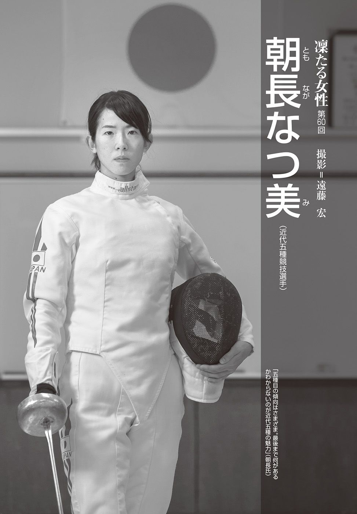
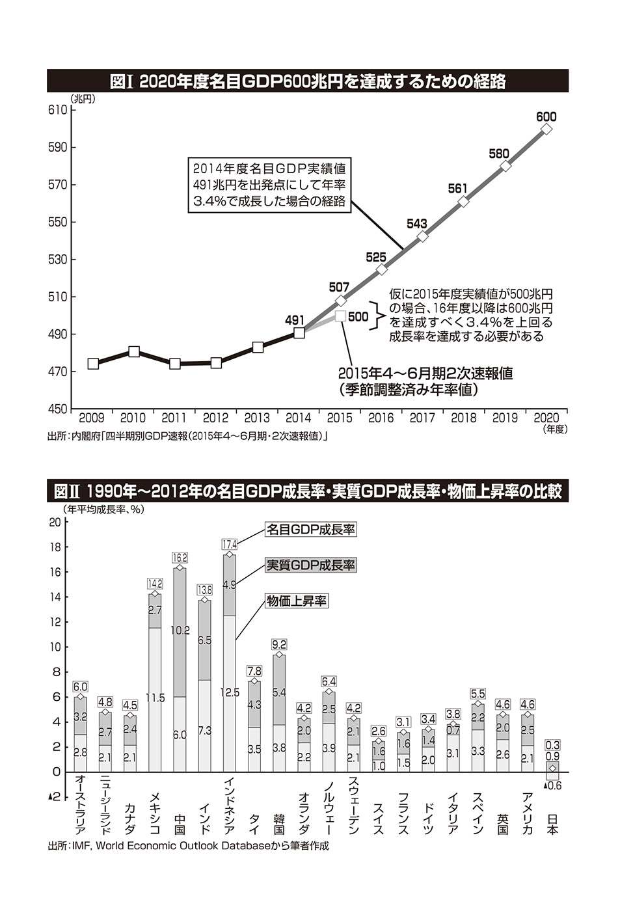
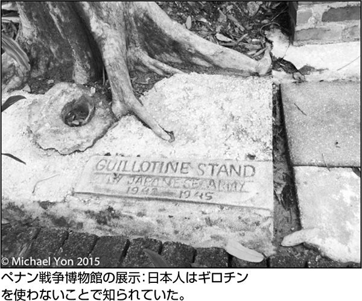
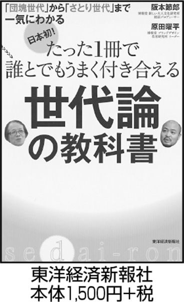

| Voice（ボイス） 2015年 12月号 | |
| Unknown | |
| (2015) | |
Ｖｏｉｃｅ ２０１５／12 No. ４５６
ＣＯＮＴＥＮＴＳ
巻頭インタビュー
システムに対する反抗 作家 羽田圭介
SPECIAL FEATURE
総力特集
日中韓友好の罠
特別寄稿
外務省に奪われた安倍外交 京都大学名誉教授 中西輝政
「ＴＰＰはアメリカの言いなり」の嘘 農業ジャーナリスト 浅川芳裕
支那事変と大東亜戦争を再評価する 近現代史研究家 宮田昌明
チベット人虐殺こそ世界記億遺産に 米カリフォルニア州弁護士 ケント・ギルバート
韓国との賢い付き合い方 前・在韓国特命全権大使 武藤正敏
現地ルポ
アジアの「慰安婦」を追跡する ジャーナリスト マイケル・ヨン
緊急寄稿
消費税一〇％は決まっていない 嘉悦大学教授 橋洋一
ＧＤＰ六〇〇兆円は不可能ではない 三菱ＵＦＪリサーチ＆コンサルティング主任研究員 片岡剛士
ドイツ車は夏製がおすすめ？ 作家 川口マーン惠美
護憲派の何が気持ち悪いのか 評論家 潮 匡人
ヒラリー外交は修正されるか 日米近現代史研究家 渡辺惣樹
「南京事件」世界記憶遺産登録の大失態 前・「新しい歴史教科書をつくる会」会長 杉原誠四郎
松下幸之助の怒りと慈愛 イマジニア株式会社代表取締役会長兼ＣＥＯ 神藏孝之
新しい勤勉（ＫＩＮＢＥＮ）宣言 ＰＨＰ総研「新しい働き方」研究会
短期集中連載
福島第二の奇跡 作家 高嶋哲夫
特別インタビュー
杉原千畝に学ぶ「日本人らしさ」 俳優 唐沢寿明
「戦争画批判」の真実Ⅳ 近現代史研究家 水間政憲
超韓流猫コリにゃん ［原案］ 室谷克実 ［漫画］ 諸星惣一郎
COLUMN
ニッポン新潮流
国内政治 共産党の政権構想は本気か 菅原 琢
経済政策 「中所得の罠」に向かう中国経済 飯田泰之
生活社会 人工知能はまだ自動化できない 山形浩生
健康は生成する
第９回 政治とレジリエンス 斎藤 環
天あり、命あり。
第７回 苦境に立つビニロン 江上 剛
覚醒するクラシック
第30 回 フルトヴェングラー 百田尚樹
SERIES
巻頭言
第12 回 ウソのいろいろ 養老孟司
私日記
第192 回 マイナス・ビタミンＢ的人間 曽野綾子
平成始末
CULTURE
真相スクープ
「戦争画批判」の真実Ⅳ 構成／水間政憲
凜たる女性
朝長なつ美 撮影／遠藤 宏
REGULAR
Ｋｅｙフレーズ
年間コンテンツ
Ｖｏｉｃｅブックス
Ｖｏｉｃｅシネマ
Ｖｏｉｃｅレター
表紙デザイン＝川上成夫
題字＝上田晃郷
本文レイアウト＝宇梶勇気

巻頭言
ウソのいろいろ
養 老 孟 司 （東京大学名誉教授・解剖学者）
一九三七年、神奈川県生まれ。東京大学医学部卒業後、解剖学教室に入る。九五年、東京大学医学部教授を退官し、同大学名誉教授に。八九年、『からだの見方』（筑摩書房）でサントリー学芸賞を受賞。著書に、『バカの壁』（新潮新書）、『文系の壁』（ＰＨＰ新書）ほか多数。
国境なき医師団の病院が「誤爆」された。この爆撃がいわば既定の路線だということはわかりきっていて、岸田外相が爆撃を批判したくらいである。それならなぜ「誤爆」なんだろうと思う。米軍は以前から「誤爆」の専門家なんだから、もういい加減にこういう言葉はやめたらどうかなあ。コソボのときだったか、米軍がベオグラードの中国大使館を「誤爆」した。そのときの現場の指揮官の言い訳は「使った地図が古かった」。アフガンで川を掘っていた中村哲さんは米軍機にときどき「誤爆」されたらしい。日本の新聞も「誤爆」にカッコくらい付けたらいかが。
米軍が誤爆と発表しているのだから、それをそのまま「客観的に伝えた」などといわないでくださいね。戦時中の大本営発表だって、軍がいったことでしょ。それをそのまま報道して、あとは知らんぷり。以来、やってることは同じじゃないですか。
私は米軍が間違っているなどといっていない。そもそも戦時下で「中立」であることはきわめて困難である。情勢が緊迫してくるほど中立は困難になる。だから、どんどん敵味方が分かれてきて「世界」大戦になるんでしょ。戦時は両者がまさに命懸けで戦っているのだから、横から何かいっても、ムダに決まっている。そんなの、夫婦喧嘩の仲裁をしたってわかっているじゃないですか。むしろ真の中立は両者から敵と見なされるのが普通である。中立であるためにこそ、あらゆる意味での力が必要なのである。
それはともかく、ウソを少し減らしたほうが世の中がわかりやすくなるのではないか。昨今はそう感じることが多くなった。
米国の場合はまずネオコンが問題だった。息子のブッシュ政権のときである。このときのウソはひどくて、大量破壊兵器の存在も、フセインとアルカイダの関係もウソだった。私は９・11 のテロ話にもかなりのウソが交じっているという意見である。なにしろネオコンの人たちは、正しい政治的目的のためなら、ウソをついてもかまわない、という考えらしいのである。私はウソをついてはいけないとはいわない。でもネオコンの意見には反対で、政治家は正直なのがいちばんだと思っている。世間に余計なコストを掛けないからである。偉い人がいうことを、いちいち疑っていたのでは、面倒でやりきれない。
もっとも政治家は正直であれなんて、そんなことを思っているのは、私が世間知らずだからなのであろう。現実はそんな甘いもんじゃない。いまだにオレオレ詐欺であれだけ騙される人がいるじゃないか。正しい目的を達するためには、そんな連中は騙しておけばいい。どうせわかっちゃいないんだから。それが世界の常識なのかもしれませんね。
このところの日本では、三井住友建設のマンション、東洋ゴム、東芝、その他もろもろ。ＳＴＡＰ細胞がありましたなあ。『朝日新聞』の従軍慰安婦。国際的には南京大虐殺三〇万人。広島で何人死んだのでしたかしら。落ちたのは原爆ですよ、原爆。それでも三〇万人は死んでませんね。
べつにウソなんだから、どうでもいいといえば、どうでもいい。ウソとかテキトーというのは、世の中が円滑に動くには必要だとわかっている。私が若いころは、患者さんにはガンだとは告知しないのが普通だった。つまりウソのほうが普通だったのである。そうなると放射線科の医師は四苦八苦の説明をする羽目になる。それなら患者さんはそれを信じていたかというなら、それは違う。医師が四苦八苦の説明をしたら、付き添ってきた奥さんが「でも先生、放射線をかけるというのは、主人がガンだからだと違いますか」と医師に訊 いてしまった。そうしたら患者さんである旦那が「先生にそんなこと、いうもんじゃない」と奥さんをたしなめたのである。
目を三角にして他人のウソをとがめても仕方がない。でもウソはつかないほうがいい。あとで話がいろいろ面倒になる。個人のウソは憎めないことが多い。でも組織のウソはいただけませんなあ。だからウソをつかざるをえない地位には就きたくない。現役のころ、科学研究費を申請する書類を書かないことに決めた。だって「この研究の有用性」などという項目があって、そんなもの、結果が出てみなけりゃわからない。あえてそれを書く。そういうことを繰り返していると、ウソをつく癖がつく。そう思ったから、私は申請書類を書くのをやめた。でもそうすれば、当然ながら研究費はもらえない。
社会システムが、時と場合によっては、こういうふうにウソを強要しているのも事実である。それに個人で反抗すれば、それなりに損をする。でも捨てる神があれば、拾う神がある。私はそれでも生き延びてきたから、拾う神がいたのであろう。
目先の得だけ考える。この習慣をやめれば、社会のウソはずいぶん減ると思いますよ。
今年七月、「スクラップ・アンド・ビルド」で第一五三回芥川賞を受賞した羽田圭介さん。作品はもちろん、とくにテレビのバラエティ番組への多くの出演で「キャラクターが濃い！」と人柄も話題となった。その後、テレビで見せる陽気な姿とは一味違う、覚悟をもって小説に向き合ってきたからこそ、いまのメディアとの距離感があるという、その深いところを語っていただいた。
＊
表現しづらいものを表現する
――この取材をさせていただいている九月下旬の段階で、芥川賞の受賞が決定して二カ月以上経 ちますが、取材などでずっとお忙しいままだと思います。いまは本業の小説とそれ以外の対応という日々ですか。
羽田 いえ、本業のほうは時間がなかなか取れていません......。受賞してからもう三カ月が経とうとしていて。あと三カ月経ったらまた新しい芥川賞作家が生まれる。あっという間で、時間の経過は早いな、という。
――今回の芥川賞後の「騒ぎ」みたいなものの大きさは、綿 矢 りささんたちのとき以来というか、しかも、それが長く続いているように感じます。
羽田 ほんとうに、まだすごい騒ぎで。ここ数年は、ＮＨＫのニュースや『王様のブランチ』などのテレビ番組内で紹介され、あとは雑誌や新聞で受賞のコメントやエッセイが出て、だいたい一カ月以内で芥川賞の話題は全部終わるという感じだったように思います。今回、二カ月以上経ってもいまだにあちこちで取り上げてもらっているのは、（同時受賞の）又 吉 直 樹 さんのおかげだな、と（笑）。
――受賞作の「スクラップ・アンド・ビルド」に関して、受賞後のあるインタビューで「前に候補になった作品と同じ構造で書いたもの」と指摘されていたのが印象的でした。
羽田 「スクラップ・アンド・ビルド」は、（二〇一四年下半期に芥川賞候補作になった）「メタモルフォシス」とまったく同じ構造で書いたものなので。洗練させてはいても、新しいことをやり遂げたという感じはないんです。「メタモルフォシス」にしても、副産物のような経緯でできたものでした。単行本版の『メタモルフォシス』（新潮社）に（表題作と共に）収録されている「トーキョーの調教」はコンセプチュアルで、執筆や直しに二年以上かけて書いた作品です。これは結構どうしようもない時期に、芥川賞をねらって書いたんです。でも、候補にならなかった。じつは「トーキョーの調教」を単行本化するときに、「（本にするための）枚数が足りないから、（四〇〇字詰め原稿用紙換算で）五〇枚ぐらい書いてくれ」といわれて一カ月ぐらいで書いたのが「メタモルフォシス」だったんです。そうしたら、むしろそっちが芥川賞の候補になって、意外なほど善戦しました。
「少なくとも、この方法論なら自分はある程度はできる」とちょっと自信を得て、「メタモルフォシス」と同じやり方で書いたのが「スクラップ・アンド・ビルド」だったんです。だから、芥川賞は受賞したものの、この作品が自分の作家性を代表しているかといったら、必ずしもそうでもない気もします。
――いま話題に出された「トーキョーの調教」は、サスペンス的な展開もすごく面白い作品ですよね。羽田さんのなかではとくに画期的な手応えがあった作品なのでしょうか。
羽田 画期的というよりは、いろんな事を考えながら、表現しづらいものを何とか懸命に表現した作品ですね。たとえば、先人の書いたＳＭ小説に学ぼうとしても、案外難しかったんです。僕が書こうとしていた「お店でお金を払った、時間が限られたなかでのＳＭの関係性」は、意外にもほとんど誰も書いていなかったので。ＳＭの巨匠たちがあまりやっていないことだけど、素人だからこそ自分にはやれるのかなと考えながら書きました。そんななかで、ある種のお手本にしたのは、藤沢周さんが書かれた『武曲』（文藝春秋）という現代版の剣豪小説でした。剣と剣の間合いの取り方などを参考にさせてもらって、ＳＭの空気感として表現したという。
――だから、作中に出てくる「女王様が無言でゆっくりと歩く。繰り出される無数の剣筋を感じた」「緊張感をはらんだ真剣勝負こそが、人を格段に成長させる」といった、ＳＭをある種の立ち合いとして書く面白い描写があるんですね。
羽田 存在しない相手の剣の筋を読み合うような緊張感という点では、まさにそうです。
創作の悩みと売れない悩みは別
――数年前まで、作家としてのご自身の状況が厳しかった、と別のインタビューで読んだのですが、その時期の心境はどのようなものでしたか。
羽田 三、四年前には、わりと経済的に厳しかったのですが、そのときに何が辛 かったかというと......。その時点では、自分の書ける小説として間違っていることをやっているつもりはなく「ベストを出し尽くしている」と思っていました。でも、本が出ても、全然まず本屋に置かれなかった。最寄りの書店に置かれていなくて、新宿の紀伊國屋の本店で一冊あればいいぐらい。平積みなんか全然なくて。
その光景を見て、「本が手に取られるきっかけって何もないな」と思ったんです。芥川賞を取るか、映像化されるか、芸能人がどこかで紹介するか。それしかないなと。
自分の作品に自信がなかったら「小説をうまく書ければどうにかなる」と考えられたかもしれませんが、そうではなかった。だからこそ、やりようのなさというか、「このままチャンスを待っているだけでは、作家としてやっていくのは厳しいかもしれない」と感じていたんです。自分が書店で買う立場になったときには、いまいったのと逆のこともあるんでしょうけどね。埋もれているいい作品に出合えていないところもあるのだろうなと思います。
――作風が確立するまでの大変さはありましたか。
羽田 それは四、五年前の時期ですね。デビューしたころは、迷いはなかったんです。わりと厳しい編集者から、何度も全面改稿に近いことをさせられていて。ある意味では、何をやればいいかわかるわけです。こう直さなきゃいけないという方向に書き直していけば良かったので。迷いが出たり、すべてがうまくいったとは言い難くなったのは、デビューとは違う版元で書いたあとです。「この編集者は信じられるのかな」と思ったり、自分で方向性を考えて、新しい事をやろうとしたり。
そういった時期を経て、ここ二、三年はわりと迷いなく小説を書けるようになりましたが、迷いがなくなっても本がそれほど売れていない状態が続きました。創作の悩みと売れない悩みって、また別ですね。
――創作の悩みがあったときには、どんなことをされていたのですか。
羽田 どういう小説を書けばいいかわからない時期は読書に逃げていました。実力のなさを感じたときは、ガルシア＝マルケス全集を読むなど、勉強してどうにかしようと思った。結果的にこの読書が良かったのかもしれないですけどね。いろいろ試行錯誤して、書いては自主的にボツにしていた積み重ねのなかからたまたま出てきた「メタモルフォシス」が思ったよりも褒められた経験から、いろんなことが一気に回りはじめたので。何がタメになって何がムダだったかは、正直よくわからないです。
相手の顔を見ることが大切
――「スクラップ・アンド・ビルド」では、高齢者介護の世界を描かれています。書いてみて、現実の社会問題にもなっている介護について考えたことがあったら、伺いたいのですが。
羽田 まず、極論みたいなことをいう人は、何か老人と触れ合ったほうがいいんじゃないでしょうか。自分と価値観が違う人が身近にいなければ、たとえば「老人は優遇されすぎだ」といった強い内容の言葉をいくらでもいえてしまう。「老人に使う国の予算を減らせ」ともなる。顔の見える具体的な関係のなかで当事者と付き合っていたら、こういう言葉は、なかなか出てこないはずです。「老人は日本の高度成長の波に乗っていい思いばかりしてずるい」なんて意見も出てきがちですが、実際に老人を見ると、そんな印象は全然ないように感じますからね。バーチャルなところから何か物を考えたり、意見をいうのは良くないと思います。
なにも老人の問題についてばかりではなく、他国との問題でもそうだと思うんですよね。テレビとかでも、やたら中国バッシングでもすれば数字が取れるという感じがある。現地の様子を紹介するにしても、やたら反日デモの映像を取り上げがちです。ところが実際に中国に足を運ぶと、そんな空気感はまったくなかった。相手の顔や表情が見えないところで何かを判断してしまうと、話し合いも成立しないし、何もわかり合えないのだろうなとは思います。
中国の政府当局や軍部が進めている強硬策と民衆全般の感情は、別ものなのではないでしょうか。ここでも、自分はとにかく「相手の顔を見ることが大切」ということだけを考えています。そうしないと、喧嘩のための喧嘩にしかならないので。
――『「ワタクシハ」』（講談社）という就職活動についての小説、リアルな観察がたくさん入っているのが羽田さんらしくて、とても好きなんです。ほかにも仕事を大きく取り上げた作品がありますが、羽田さんや羽田さんより下の世代の抱える、働くことの現実についてはどう考えておられますか。
羽田 何か、自分としては、それについて語る資格があるのかな、と思いますね。就職に関しても、いまの大学生が何を考えていて、何が起こっているのかってリアルにはわからないですし。当事者である彼ら彼女らにしても、ほかと比べようがない自分たちが直面している現実を見るしかない。比べようがないから、本人たちも何が行なわれているか、たぶんわからないんじゃないかと思うんです。
そうしたことは、事後的に上の世代が観察しても、なかなか本質は見えてこないのではないでしょうか。就職の内定は取れなくても、意外と妙な明るさがあるかもしれないですし。それこそ、安く物が買えて、スマホだけで人生が充実している可能性もありますし。そういった主観的な生活の手触りというのは、よそ者が代弁しようとしてもなかなかつかみきれないんじゃないかと思います。
肉体は欠かせない
――自転車が出てくる『走ル』（河出文庫）をはじめ、羽田さんの小説には体を動かすことが多く描かれています。
羽田 世界を認識する目線として、主人公がどんな肉体でいるかは、かなり重要だと思っています。たとえば、フランスのおしゃれな雰囲気に憧れている人がいたとしても、その人がどんな顔でどんな体つきをしているかで、状況はだいぶ変わってくる。憧れと現実との差は、身体から生まれると思うんですよね。
世の中に目を向ければ、いろんな事がシステム的に構築されていると感じます。アイドルにしても、どのプロデューサーが付くかといったシステムが優先されて、そこに代替可能な個人が当てはめられる。犯罪も、いまやスリなどの個人技ではなく振り込め詐欺のようなシステムが先にある。そこに素人がぶっ込まれて逮捕されても、また新しい人が補充されるだけで。そうやって何でもシステム化されている世の中で、小説的に物事を描こうとすると、「システムに対する個人の反抗」みたいなものを書くしかないんです。その「反抗」は個人技に因 るものになるので、その人がもっている資本、なかでも一番は、身体的にもっているものを解明せざるをえなくなってくる。そこで、「あ、何か主人公はデジタル的なシステムとは違う、アナログ的で変なことをやっているんだな」ともなります。だからこそ肉体は、欠かせないんです。
システム的なものとは、ある意味では慣例とか惰性とも言い換えることができて、「これなら信用してもいいよね」「このままでいいよね」という感情の積み重ねでもあると思います。だから、システムとは、何か狭い世界でやっているルールや慣例的なものの集積でもあり、よその世界からは異様なものにも映る。
僕の場合は最近、急にテレビ業界の人たちと仕事をするようになりました。出版業界に十二年身を置いている側としては、「テレビってとんでもないことをしてくるな」という体験もあった。でも、その「とんでもないこと」が一人や一社だけでないとわかれば、「テレビ業界では当たり前なのだろうな」と思うようになったんです。同じように、出版業界や小説家が当たり前と思っていることも、世間では当たり前ではないのかな、と考えたりもしました。内輪的なものは、他者に理解されにくいシステムにもなっていく。それは会社や業界に限ったことではなく、いろんな事でもそうなると思うんですよね。その内輪的なものを、外に開くことをしていかなければ。
――いま、テレビ業界の話をされました。最近、テレビで羽田さんの姿を本当によく見かけます。
羽田 過去に書店で本が置かれなかった経験があるぶん、宣伝につながることは何でもやっています（笑）。書いた本がどれも三万部ぐらい出せる作家なら、もういい加減、この辺で手を打つかな、と小説に戻っているかもしれないですけど、また数年前の感じに戻るのが怖いので。どうせだったら、いまは受賞作の売り上げを伸ばすことに専念しようかという感じです。トラウマに引きずられていますね（笑）。そうなると、一方ではいま抱えている三本の小説の直しができず、そこに悩みはあるのですが。
最近驚いたのは、テレビに出ると街でもすごく声を掛けられることです。「結構なストレスだな」と思いつつも、それで本を手に取ってくれる人が増えるなら許容範囲です。自分の発言がテレビやネットで誤解されて伝わってしまうこともありますが、いまの自分の周りの異様な風景を見ておくことも、「何かに役立つかもな」とは思っています。新しいところに足を触れようとすれば、ストレスはあるだろうな、と。
――書店業界や出版業界の現状についてはどう捉えていますか。
羽田 べつに誰も悪くなくて、やっぱりまずは景気が悪い。それが個人の可処分所得を減らし、本という、生活に必ずしも必要がないものに割けるお金まで減らした。そうなったときに、「買ったあとに失敗したくないから」と売れている本ばかりが買われる傾向が見られるのは、当然のことかもしれません。状況を変えるには、もう、景気をよくするしかないんじゃないかと。いちばん大きくて難しい問題を解決するしかないと、さまざまな社会問題に対して思うことです。
さっき話題に出した「老人への国の予算を減らす」といった議論に疑問があるのも、支出をちまちま減らすより、まず収入を増やすプラスのことをやらないと根本的な問題解決にはならないと考えるからです。
そんな話より、いまは働いている女性が家庭を築き、子供を産みやすい環境をつくること。それこそほんとうに最優先で取り組まないとダメじゃないかと思います。女性が働きながら子育てできるようになって、家庭の可処分所得が増えれば、景気も良くなるでしょうし。しかも、政治の力、行政の力で改善できる余地が十分ある問題ですから。
幸せは人との関係性のなかで生まれる
――最後に、ここ最近で羽田さんがよく考えるようになったことを伺えたら、と思います。
羽田 人間って、何かしらの関係性のなかで、不安を覚えながらも新しい事ができるようになったりしますよね。そうやって、ある関係性のなかで何かができることというのが、人間にとっていちばん大事で、充足感が得られることではないでしょうか。それって、何でそう感じたのかというと、テレビ番組の収録などからなんです。
周りは芸能人ばかりでみんな真剣。その輪に入って何かをやるのは、最初は不安でした。その場でどの程度の発言をしたらいいか、全然わからない状態で収録に臨みましたから。それでも、終わりのほうではみんなでちゃんとその場を成立させられたら、その感触っていいんですよね。そこではもう、本の宣伝とか、あとはギャラとかも関係なしに充足する感じがあるというか。そういうやりとりを経て、楽屋に戻ってタクシーとかに乗って帰るときって、最近、わりと充足した感じがあるんです。
そういう充足感って、本当はお金とも関係がないことなんだよなとは思います。たとえば所得は低くても、関係性のなかで人と何かを一緒にやり遂げたりすることは、嬉しい。幸せっていうのは、人と人との関係性のなかでしか生まれないんじゃないか。そういうことを、すごく思うようになりました。慣れ親しんだ環境でなくても、そうした充足感って味わえるんだな、と。
実際、いまはもう、昔からの友達と遊ぶ時間は全然なくて、テレビの収録なんて、まったく知り合いでも何でもなかった人たちと、いわば「他流試合」で会うんですけどね。プライベートで遊ぶとかいう親しさではなくても、充足できる瞬間もやっぱりあるんだな、と感じています。
むしろ、価値観も違うであろう、これまで理解できなかったような人たちと、一緒に一つの場をつくることによってわかり合えるということが、「これはかなり快楽につながるんだな」と、新鮮だったんです。
政党政治は総じて「選挙目当て」
来夏の参院選に向け、共産党による「国民連合政府」構想が注目を集めている。集団的自衛権行使を可能とした安保法制の廃止を目標に、民主党などと選挙協力を行ない、暫定政権樹立をめざすという同党の宣言は、従前の方針を大きく転換したものである。
宣言の中で同党は、各党間の政策的相違については「留保・凍結」するとした。その具体例として日米安保条約破棄、自衛隊解消など同党の基本政策を示している。党是を棚上げにするかのような共産党の譲歩の姿勢について、菅義偉官房長官は「選挙目当て」だと批判している。
政党政治の原理と実相に照らせば、「選挙目当て」という指摘は的確である。選挙での勝利と政権への参画をめざさないのなら、支持者の期待と利益をないがしろにすることになる。したがって、これまで「選挙目当て」では動かなかった同党の姿勢こそ問われるべきかもしれない。
政治では、何らかの手続きに基づき意思決定を行なう。民主主義のプロセスにおいては、異なる考え、異なる選択肢を奉ずる勢力のあいだでの協調や妥協が必要となる。仮に勢力内・間の交渉、譲歩がなければ、民主主義の下ではほとんど何も決まらない。「筋を曲げない」政党が林立し、何ら政治的決定がなされない状況が続くならば、民主主義は早々に捨てられる運命にあっただろう。
多くの国々で民主主義が生き残っているのは、あらゆる段階、局面で、交渉と譲歩、協調と妥協が繰り返されているからである。支持者の利益となる政策実現に向けて、異なる政治信条の勢力同士が協力して選挙を戦い、政権をめざすことも、多くの国々で当たり前の光景である。
他党との選挙協力を模索することは、間接民主主義の制度下では忌 避 されるべきことではない。それどころか、民主主義の下で何らかの解を得るために、政党に強く要求されるものである。並立制の下、小選挙区制・一人区が国会の勢力比を強く規定する日本の現在の国政選挙では、とくにこの傾向が強い。国政では一九九九年以来長く続く、自民党と公明党の協力関係、連立政権が、政党政治における「選挙目当て」の必要性と必然性をよく示している。
投票する価値のなかった野党連合
間接民主制では、選挙での成功なくして政策を実現させることは難しい。したがって、「選挙目当て」は正しい戦略である。そして、その適否も含めた各勢力に対する評価の機会として、選挙が設定されている。
たとえば二〇一四年衆院選では、民主党と維新の党を中心に野党間で選挙協力が行なわれた。結果、協力の効果はたしかに見られたが、その効果は小さく、自公の候補を打ち破るには程遠かった。多くの有権者は、民・維の「選挙目当て」に合格点を与えなかったのである。
一四年の野党協力が大きな成功に結び付かなかったのは、有権者に投票する理由を示せなかったためである。ただ選挙協力が行なわれたからといって、有権者にとって新たな価値が各党に加わるわけではない。野党側の勝利がどのような利益をもたらすのか示せなければ、アンチ自民票をまとめるだけに終わる。
野党協力に価値を与えるという点で問題となるのは、共産党よりもまず民主党である。民主党は反安保法制で一致しているといいながらも、煮え切らない態度をとっている。これは同党自身、次の政権でどのような政治をめざし、どのような層にアピールしていくのか、まったく整理がついていないためだろう。
自分たちの方向性が明確でないのに、他党と政権構想を話し合うのは難しい。何が一致し、何が妥協でき、どの点で譲歩を求めるのかは、自分たちのなかに基準がなければ判断できない。一方、共産党の提案は、何が目的で、同党が何を譲歩するか明確である。提案がどうあれ、このような相手とは交渉を行ないやすい。
もっとも、安保法制廃止という目標は、大多数の有権者にとって重大な関心事ではない。仮に暫定政権の樹立に成功しても、下 野 すれば安保法制が復活する可能性も高く、目標の完遂のためには「たしかな野党」に戻らずに継続的に政権をめざす必要がある。そうだとすれば、反安保法制だけというわけにはいくまい。
支持者の利益のために選挙での勝利と政権への参画をめざすという政党政治の基本は、暫定では意味がない。永続的に政権競争に参加する意志や覚悟が共産党にあるのか、今後問われていくことになるだろう。
古典派的成長の終焉
二〇一五年十月十九日に発表された七―九月期の中華人民共和国（以下中国）のＧＤＰは、前年同期比で六・九％成長とリーマン・ショック以来の低成長となった。実際の数字はさらに低いとする研究機関も少なくない。
数年来、中国経済の動向は世界経済にとっての大きな不安材料となっている。世界第二位の経済大国は今後どこに向かっていくのだろう。ここでは標準的な経済成長理論から考えてみたい。結論からいうと、中国経済は「中所得の罠」と呼ばれる停滞へと向かう可能性が高い。
近代化の初期に観察される高度成長を説明する経済理論が、古典派的成長モデルである。そこでは、生産性の低い前近代的な産業・地域（小規模伝統農業など）から生産性の高い近代都市や工業地帯へと人が移動することで、経済は成長する。
「集団就職列車が経済成長を連れてきた」といわれるわが国の高度成長期、そして、内陸部から沿岸部への人口移動による中国経済の高度成長も典型的な古典派的成長だ。
このような状況で地域間の賃金差が一定以下になると、生計費や郷里への愛着を考慮すると転居の魅力がなくなってしまう。「（能力関係なしに）都会に行きさえすれば、いまよりも良い生活ができる」という条件が失われたとき、古典派的成長は終焉を迎える。日本では、一九六〇年代前半にこのような転換点（ルイス転換点）を迎えたとされる。中国においても、内陸部での壮年男子の不足を見るかぎり、まさにいま転換点を迎えつつあるようだ。
ルイス転換点以降の経済は、産業内部での生産性の向上なしには成長を続けることができない。
設備投資や技術導入による生産性向上について中国に特別な不利があるわけではない。最新鋭の機械導入や技術の移転は、金銭的対価を払えば得ることができる。
問題は、個人そして企業が経験を通じて獲得する「目に見えない生産性」「目に見えない能力」である。かつて日本が、のちに台湾・韓国が乗り越えたハードルは、中国にとって大きな壁となる。
個人、そして企業の能力向上を金で購 うことはできない。それは商品を企画し、その生産と販売のなかで幾度の失敗を経験することでしか得られないのだ。このような経験を得るためには、国民による国内企業製品への分厚い需要が不可欠である。
二四二倍もの所得格差
ここで自動車産業を例に考えてみよう。六〇年代の日本の自動車産業はお世辞にも高品質とは言い難かった。日本メーカーは独自開発を止 め、米国車のライセンス生産に切り替えるべきだという議論があったくらいだ。しかし、当時の多くの日本国民にとって米国車は高すぎた。だからこそ、国産車を選ぶという国内需要があったのだ。
「外国産は高すぎるが、安い国内産があれば（品質に目をつむりつつ）購入したい」という需要が国内企業の収益を支え、その需要に応えるなかで経験を通じた成長が獲得される。
中国の国内企業の経験を通じた成長という課題において、現代中国はいくつもの困難を抱えている。
第一の問題が、所得格差である。世帯年収上位五％と下位五％の格差は二四二倍にも達しているといわれる。そして、資産額が六〇〇万円を超える者の人数が一億人を超えると報じられる一方で、平均的な勤労者・自営業主の収入は低いままだ。
一％の富裕層はもちろん、上位一、二割の新興中流層も、海外製の耐久消費財を買うことができるだけの経済力をもっている。その一方で、平均的な階層の経済力は低く、新産業のスタートアップを支えるだけの力とはなりづらい。
中国経済の問題は「ちょうどよい国産品購買者」の不在にある。
激しい所得格差の存在によって、国内産業が育たず、その結果、所得格差の固定化が進む。その格差の存在により国内産業が――というループは、南米などでしばしば指摘されてきた「中所得の罠」と呼ばれる症状である。
中所得の罠から抜け出すためには、適切な所得再分配と管理的業務や企画・開発機能の国内化を同時に進める必要がある。その実現は政治的にも非常に険しい道となるだろう。この困難を乗り越えるだけの力を発揮する指導者は登場するのだろうか。ここに中国経済の岐路がある。
人間の職を置き換えられるか
最近、人工知能についての期待や懸念があちこちで表明されている。シンギュラリティという用語を耳にされた方もいるだろう。いまから数十年（二〇四五年という数字がまことしやかに語られている）すると、コンピュータの処理能力が人間を上回るようになるという説だ。すると、人間の仕事はすべて機械ができるはずだという。
そして、それが実現した暁には、もはや人間の役割はなくなり、映画『ターミネーター』のように機械が人類を滅ぼそうとして......というのは極端にしても、やることのなくなった人間のための社会保障をどうするか、といった議論がかなり真面目に行なわれている。
さて、もともとＳＦ好きのぼくはこの手の話で大喜びだ。経済学の分野などでは、あの貧困削減で有名なジェフリー・サックスなどかなり大物経済学者までが、そうした機械やロボットの影響をかなり真面目に検討している。結局のところこの議論の妥当性は、人間の役割をどこまで機械で代替できるか、というものに尽きるようだ。一部の業務は、たしかに置き換えられる。でもそれが、職を完全に置き換えられるか？ 大概の職は、定型業務と非定型業務の混合だ。一部の人は、すでに自動化できる部分はほぼ尽き、あとは本当にニッチな分野でしか自動化は進まないと考えている。一部の人は、その見方は甘い、と批判する。
さてＳＦファンとしてのぼくは、どんどん自動化が進んで変なロボットが遍在する世界を見たいと思う。が、現実主義者のぼくは、その可能性が低いとも思うのだ。
そうした、機械が人間の職を脅かすという議論の代表格は、自動運転だ。これが実現したら、タクシーやトラックの運転手はいなくなる！ これは明らかなように思える。各国政府が二十世紀末ごろまで必死に取り組んで次々に脱落し、一時はもうごく限られた高速道路の専用レーンなど以外では不可能といわれていたのに、グーグルが人工知能的な成果を導入して一般道でもそこそこの成果を出してしまったために、他の企業も慌てて追随している。
イタズラや悪意には弱い
が、じつはアメリカで、ある企業による自動運転の実験地の周辺では、面白いことが起こっているという。子供たちがボール紙で手製の「止まれ」標識をつくって、道端に置いておくのだという。愚かな自動運転車は、それを見てしっかり止まり、その場でずっと止まりつづける。子供たちはもちろん、どのくらいいい加減なもので車をだませるかを競って喜んでいるのだとか。
機械学習や人工知能は、たしかにあるパターンなどの抽出はうまい。でもその学習結果を見て、意図的にその裏をかくようなイタズラや悪意には、じつはかなり弱い。でも、それに対応できないようでは、実際の応用はかなり限定されてしまう。各種のセキュリティ専門家もこうした点は指摘している。技術だけではセキュリティは確保できない。つまり自動化できないのだ。
もしそうなら、機械や人工知能の活躍できる範囲は限られるのではないか？ 自然現象や、少数の人の悪意が統計的に問題にならないビッグデータ解析などでは力を発揮するだろう。でもとくに人間と接触するようなところだと（そして大概の仕事はそうした部分をもつ）、機械だけに完全に任せられる場面は少ないのでは？ 悪意とイタズラこそが、機械に対する人間の切り札、というのも、なんだか複雑な心境ではある。でもその一方で、考えてみればそれこそが人間の人間たるゆえんであり、問題のそもそもの枠組みをつねに問うよう迫ることで、歴史的にも人間進歩の原動力ではあったわけだ。
むろんいずれ、そういう限界を突破する機械や人工知能もできるのかもしれない。が、もし機械がそこまで賢くなるのであれば、人間を適当におだてて（ゲームに夢中の人びとを見ればわかるとおり、人間はちょっとエロ画像を表示するくらいで飯も食わずに必死でボタンを押しつづける）、奴隷と感じさせずにこき使うくらいのことは簡単にできるはずだと思う。
もちろん、こうしたすべてはいまの段階ではおとぎ話。技術進歩の世界も何が起きるかはわからない。が、ヘタをすると目前に迫りつつある問題ではある。皆さまも一度考えてみてはいかがだろうか。そして機械をだませるだけのイタズラ力も鍛えておいてはいかが？
総力特集 日中韓友好の罠
外務省に奪われた安倍外交
戦後70 年の節目に安倍首相は靖国神社の年内参拝を

本稿を記すにあたり、いくつか断っておかなければならないことがある。まず、私はいままで安倍晋三首相のいわゆる「応援団」の一人として安倍政権を支持してきたし、これからも憲法改正の推進に邁進されるなら、今後も揺るぎない支持を寄せる者である。これから記すのは、いわゆる安倍談話に関し、巷 間 、「中西輝政は安倍首相のブレーンとして、談話の基礎になった有識者懇談会の報告書の作成や談話に関わり、主として中西の助言でそれらはつくられた」という、事実とは正反対の虚説がまかり通っているからである。
懇談会報告書はいうまでもなく、安倍談話そのものの歴史観に対しても、私は明確に反対の立場を貫くものである。それゆえに歴史問題をめぐって、いまこそ歴史家として、そして日本人の一人として国民にぜひ伝えたいことがあるからこそ、この文を著したのだということをあらかじめ断っておきたい。また、本稿で批判を加える外務省についても、じつはそのなかにも真の愛国者と呼ぶべき人びとが、とりわけ若手を中心に少なからず存することも、あらかじめ記しておきたい。
日本政府・外務省の「歴史に残る外交失態」
暑かった「戦後七十年」の夏も終わり、秋風の到来とともに、日本人の関心は一転して早くも来年の参院選やその先に待ち構える消費税引き上げ問題に向かおうとしていた。ところがその矢先、たいへん衝撃的なニュースが次々と舞い込んできて、日本にとり「歴史問題」の季節がまだまだ終わっていないことをいま、痛切に思い知らされている。
とりわけ十月十日、国連機関の一つであるユネスコ（国連教育科学文化機関）で世界記憶遺産に中国が申請していた、いわゆる「南京大虐殺」関連資料の登録が認められたというニュースが飛び込んできた。多くの日本人はその意味をまだ完全に了解してはいないかもしれないが、これはたいへんなことなのである。
周知のとおり、従来から中国側は、日本軍によるこの「南京大虐殺」はナチス・ドイツによるユダヤ人虐殺にも匹敵する人類悪と喧 伝 し、これをアジアにおける「もう一つのホロコースト」と称して日本の代表的な戦争責任の一つとして追及してきた。それが今回、ユネスコによってほぼ中国側の主張に沿ったかたちで世界の「記憶遺産」として認定されたということになる。日本政府＝外務省は「ユネスコの政治利用だ」と中国政府に抗議したとのことだが、これこそまさに「後の祭り」以外の何物でもない。
中国外務省の報道官は十日付で「これをきっかけにしていまや南京大虐殺は国際社会が公認する歴史的事実となった」という声明を発表した。日本人としてまことに残念なことだが、これで今後、国連をはじめとする国際社会が、日本軍によって三〇万人の「何の罪もない」南京市民が虐殺の犠牲となった事件として「南京大虐殺」という言葉を正式に定着させ、広く使うようになるであろう。場合によっては「日本はナチス・ドイツと同類のホロコースト国家」という烙印が世界史に刻み込まれることにさえなってしまうのである。何ということが起こったのだ、と天を仰ぐ思いだ。
すでに日本国内では、実証的・客観的な研究によって、この「南京大虐殺」なるものが虚偽の出来事であることは広く認められるようになっていたのに、日本政府・外務省の怠慢によって、逆にこのような結果になってしまった。何とも口惜しいこと、というしかない。いや、それにとどまらず、「もう一つのホロコースト国家・日本」ということになると、わが国の存立さえ脅かしかねない重大な国益の毀 損 につながる。これはとんでもない日本外交の大失態、ひいては日本政治の失政といわざるをえず、われわれは政府に対しても国民的な怒りを突き付けていかねばならない。
この間、日本国内では首相の「戦後七十年談話」や「安保法制」問題にばかり関心が集中していたが、この「南京大虐殺」のユネスコ記憶遺産登録は、それらに勝るとも劣らない――否、おそらくはそれ以上の重大性をもつ問題である。しかもこの間、日本人の関心はこれら前二者に集中されていたため、中国のユネスコなどでの動きは、日本のメディアも大きく取り上げてこなかったのだが、政府・外務省は当然この動きを把握しており、「わが省はさまざまな働きかけをしていた」といまになって報じられているが、これは多くの人びとがいうとおり、まさしく「歴史に残る外交失態」といわざるをえない。しかも外務省は、同じユネスコの世界文化遺産への「明治日本の産業革命遺産」登録をめぐり、韓国側の不当な要求を呑んで「強制労働」を意味する掲示を義務化させられてしまっている。「強制労働」とは、まさにホロコーストそのもののイメージになってしまう。
日本外交の歴史上、昭和十六（一九四一）年の真珠湾攻撃の開戦通告が遅れたという「世紀の外交失態」がある。多少大げさに聞こえるかもしれないが、これらの失態はそれに匹敵しうるものといっても過言ではないほど深刻なものなのである。状況を把握していたとしたら、どうしてもっと早く、国内の関心を喚起しようとしなかったのか。こうした問題に関しての外務省の当事者能力が根本から問われているのである。
そして、この約一週間後の十月十六日、韓国の朴 槿 惠 大統領は訪問先のワシントンで講演し、間近に迫ったソウルでの日中韓三国の首脳会談に合わせて予定されていた日韓首脳会談の開催に、またぞろ「慰安婦問題の早期解決」を半ば条件のように日本に要求する声明を出した。朴大統領は、八月十四日の安倍首相「七十年談話」の内容を見て従来の姿勢を変更し、正式に日韓首脳会談の開催に応じたと報じられていたのに、何というアンフェアな振る舞いなのだろうか。その裏にじつは、韓国側に「日本の新たな譲歩」を期待させるような動きが、日本政府＝外務省のなかにあったとされる。
その一週間後の十月二十二日、今度はニューヨークの国連総会（第一委員会）で、中国の傅 聡 軍縮大使が持ち時間の大半を使って対日歴史批判の挙に出てきた。傅大使は旧日本軍の残虐行為により多くの中国人が殺害されたと主張し、「戦後七十年がたっても日本は歴史を隠 蔽 して（責任から）逃れようとしている」と攻撃した（『産経新聞』十月二十三日付）。これに対し、日本の佐野利男軍縮大使が答弁権を行使して「日本は（第二次大戦への）深い反省に基づき、平和を愛する国家として歩んできた」と反論したが、なんと驚くことに中国大使は「平和憲法を変えようとすることは、通常、平和を愛する国家の振る舞いではない」と再反論してきた。何という言いようなのか。いまや南シナ海などで力の行使によって国際秩序に正面から挑戦している、世界に冠たる「平和愛好国」中国の呆れた発言というしかない。だが、それにしてもなぜ、八月十五日以後も、日本をめぐる「歴史戦争」は一向に終戦に至らないのか。淡 泊 至 極 な国民性の日本人には理解の範疇を超えることなのかもしれないが、中国、韓国、それに北方領土の占領を「日本の侵略戦争」の結果とうそぶき、シベリア抑留のユネスコ記憶遺産登録への反対で中国とにわかに反日歴史共闘の動きに出てきたロシアなど、九月以降、歴史問題での対日追撃戦はますます激しくなってきているのである。
一部を除いて日本のマスコミは、なぜこのことを報じようとしないのか。「歴史問題」ではなぜこれほど、日本人の目をふさごうとするのか。まるで、日本政府・外務省と大マスコミによる「反日 連合戦線」が組まれているかのような観がある。
中国は永遠の謝罪を要求しつづける
その証拠として、まさに安倍談話が発表された直後から、中国からの歴史問題に関する対日攻撃が収束するどころか、まさに本格的に始まり、むしろ激しさを増したという事実が挙げられる。
まず、安倍談話の十日後の八月二十四日、中国国営の新華社通信の評論として共産党機関紙『光明日報』が掲載した記事では、「昭和天皇は侵略戦争の張本人」と断じ、「次世代の後継者として」今上陛下への謝罪を要求した。これは歴史問題をめぐっても、わが国に対するかつて一度もなかったような次元での攻撃であり、非礼極まる表現であるとともに、総体としての日本国家と日本外交がこれ以上ないほど「格下に見られている」証しでもあった。
また翌月の九月三日には、北京・天安門広場でロシアのプーチン大統領、韓国の朴槿惠大統領らを招き、世界の人びとが目をむくような大軍事パレードを挙行し、日本に対する露骨な軍事的示威行為を公然と行なってみせた。そして、その後のレセプションで、習近平主席は人民大会堂で演説して「日本の侵略戦争の当時、生まれていなかった世代の日本人もその責任を負いつづけるべきだ」と驚くような対日攻撃を仕掛けてきた。これは明らかに、安倍談話のなかにあった「私たちの子や孫、そしてその先の世代の子どもたちに、謝罪を続ける宿命を背負わせてはなりません」という箇所に対し、「そうはさせじ」という中国の決意を示すものといえる。強大な軍事力のデモンストレーションを伴って、歴史戦争での本格的な追撃戦が始まっていたのである。
「戦後七十年談話」のなかで安倍首相がいくら深く頭を垂れ、内外の戦争犠牲者に哀悼の誠を捧げたとしても、中国は日本に対し、永遠の謝罪を要求しつづけることが、決定的に明らかになったのである。
そもそも、「南京大虐殺」のユネスコ記憶遺産の登録に、日中戦争の歴史には詳しくない国際諮問委員会の委員たちが賛成した背景には、安倍談話の次のようなくだりが関わっているように思われる。いわく「何の罪もない人々に、計り知れない損害と苦痛を、我が国が与えた事実」。また「戦争の苦痛を嘗 め尽くした中国人の皆さんや、日本軍によって耐え難い苦痛を受けた元捕虜の皆さん......」「私たちは、自らの行き詰まりを力によって打開しようとした過去を、この胸に刻み続けます」等々、一国を代表して日本の総理大臣がこのようなことを口にすれば、外国のユネスコ委員たちは中国のいう「三〇万人大虐殺」説を固く信じるようになるのも当然のことではないか。もはや敵国の占領下にあるわけでもなければ、少なくともこれまでは武力で脅かされたわけでもなかったのに、なぜ七十年もたってから、日本の首相はこのようなことを口にしてしまったのか。悔やまれてならない。ただ、ここでぜひ読者の注意を喚起しておきたいことがある。それは、このような安倍談話のありようを最も不本意に思っているのは、ほかでもない安倍晋三首相その人であろう、ということだ。
それでは、なにゆえこのような談話の内容になったのか。そこに、いまや安倍首相をがっちり抑え込んで安倍外交と歴史問題の行方を大きく支配するようになった「鉄の三角形」ともいうべき、外務省＝『読売新聞』＝公明党という安倍政権下の「隠れた統治構造」が確立しつつある点に注意を喚起したいのである。
じつは筆者も最低限、次の三つの語句さえなければ、この談話を評価する者の列に加わっていたかもしれない。だが歴史家の目から見てこの談話は、たとえどれほど多くの政治的配慮と文章的技巧を凝らした内容であることは認めるとしても、やはりこのくだりは日本の未来に禍根を残すものだ、といわざるをえないのである。
では、その三つの語句の過ちとは何か。
一つ目は、安倍談話のなかにある「事変、侵略、戦争。いかなる武力の威嚇や行使も、国際紛争を解決する手段としては、もう二度と 用いてはならない（Incident, aggression, war ― we shall never again resort to any form of the threat or use of force as a means of settling international disputes.英文は首相官邸ホームページの英訳による、以下同）の「もう二度と」という箇所である。この「もう二度と」の一句さえなければ、この部分も何とか呑み込むことも可能だったのだが。
「いったいその何が問題なのか」と思われるかもしれない。然り、まさにその「もう二度と」こそが問題なのである。なぜなら「侵略」を紛争解決の手段として「もう二度と」用いない、ということは、明らかに「一度は侵略した」と日本政府が公式に認めたことになるからだ。つまり、あの大東亜戦争ないし昭和の大戦全部が侵略戦争だった、と日本政府が世界に自ら宣言してしまっているのである。どうして、多くの心ある日本人がこのことを見逃しているのか、不思議でならない。有識者懇談会の一員として忸 怩 たるものを抱えつつ、ずっとそう思ってきた。のちに詳しく論じるように、この点はわれわれ日本人が絶対に譲ってはならない、歴史観のクリティカル・ポイント（致命的な一点）なのである。しかも、談話の英文を見ると「we shall never again」というきわめて強い表現で「一度はやった」と断定をしてしまっている。ここでいう主語「we」は紛れもなく「日本」のことを指すから、一般論として「この世界で侵略はあってはならない」ということをいっているにすぎない、などと弁護することはとうていできない。
私の考えでは、日本が絶対に「侵略」を認めてはならない四つの大きな理由がある。まず第一は、何といっても、それは歴史の事実ではないからだ。このことを実証的に論じるには少なくとも数冊の本が必要だが、筆者は今後、満洲事変以後の実証的な歴史書を刊行するつもりなのでぜひ、読んでいただきたい。第二に、「侵略」などと国家が自ら認めると、短くとも数十年から百年後あるいはそれ以上にわたって、国民精神の劣化や自虐的国家観（ないしその喪失）が定着し、国としての未来を失うことになりかねない。第三に、今日の世界では侵略＝ホロコーストと同義、という新しい罪責観が世界に広がっていることを知らねばならない。そして第四に、近年のロシアによるクリミア併合やアメリカによるイラク戦争、あるいは中国による南シナ海の一方的占拠など、紛れもない侵略行為が横行している時代に、日本があの大戦を「侵略」と認めると、北方領土や竹島、尖閣など「領土問題」で決定的に不利になるからである。
安倍談話の問題箇所の二つ目は、「先の大戦における行いについて、繰り返し、痛切な反省と心からのお詫びの気持ちを表明してきました。（中略）こうした歴代内閣の立場は、今後も、揺るぎないものであります 」の「揺るぎない（unshakable）」という一語である。
「歴代内閣の立場」とは、いうまでもなく村山談話や小泉談話で表明された日本の立場を意味する。したがってここは「歴代内閣の立場を継承します」とだけいっておけば、大して問題もない箇所であったろう。にもかかわらず、わざわざ「今後も、揺るぎない」としたのは、まさしく「致命的な踏み込み」であった。なぜ、「侵略」や「おわび」などに言及せず、ギリギリの「寸止め」でうまく収め、大向こうの喝采も博した、あのアメリカ議会演説の妙味を生かせなかったのか。返す返すも残念でならない。村山談話や小泉談話をたんに引き継ぐ、というだけでなく、それらを日本国のいわば一種の「国是」として確固たるものとするような意味をもつからである。それは必ず、今後長き将来にわたって中国や韓国の対日歴史攻撃に対し、格好の餌を与えつづけることになるだろう。まさに子々孫々の代に至るまで日本と日本人に禍根を残す表現となる可能性があるのである。
三つ目は、保守陣営の心ある日本人に安倍談話がまさに高く評価された点として、また多くの日本人が褒め称えた次の箇所に関わってくる。
「あの戦争には何ら関わりのない、私たちの子や孫、そしてその先の世代の子どもたちに、謝罪を続ける宿命を背負わせてはなりません。しかし、それでもなお 、私たち日本人は、世代を超えて、過去の歴史に真正面から向き合わなければなりません。謙虚な気持ちで、過去を受け継ぎ、未来へと引き渡す責任があります」
たしかに「子や孫、そしてその先の世代の子どもたちに、謝罪を続ける宿命を背負わせてはなりません」というのは安倍首相らしく、たいへん好ましい表現である。ここに「人間・安倍晋三」あるいは政治家としての理想を失っていない安倍首相の姿が彷 彿 と浮かび上がってくる。
だが、問題はそのあとである。
「しかし、それでもなお（Still, even so）」
これはいったい何であろうか。逆接を意味する接続詞「しかし、それでもなお」が入ることによって、前段で述べた「謝罪を続ける宿命を背負わせてはなりません」は打ち消され、否定されていくのである。
続けて「過去を受け継ぎ、未来へと引き渡す責任」とある。これはつまり、村山談話や小泉談話を次の内閣も受け継ぐ、ということであり、それは取りも直さず「将来世代にも謝罪が求められる」という結論に導かれていくのである。
今回の安倍談話に関し、日本の国内では「過去の謝罪の歴史に終止符を打った」とする肯定的評価がかなり広く見られた。だが、これがあるため、それはまったく逆転させられているのである。この逆転をもたらしたもの、それは先の「鉄の三角地帯」の締め付け以外にない。
いずれにせよ、この点は左右のイデオロギーの違いや、思想の次元の話ではなく、あくまで言語的な解釈として、謝罪をめぐるこの箇所はどう読んでも「逆」、つまり「日本は謝りつづける」という意味にしか受け取れない。それは、先述した安倍談話の英訳を読めばいっそう明らかである。英文の特徴であるシンプルさによって今回、安倍談話が日本語版の「匠 の技巧」とも称された微妙なニュアンスや言い回しの曖昧さが剥 ぎ取られてしまい、世界に対して「何を伝えたか」が残酷なまでに明らかになっている。
そう、安倍談話は日本国内の評価とは反対に、世界に対して「将来世代にわたり日本は謝罪を繰り返す」意思の表明として伝わっているのである。
たとえ「鉄の三角地帯」の重包囲に陥っていたとしても、これらがいま「安倍談話」の名前で、広く世界に流布しだしている。そのことによる長期的な日本の国益上の不利、そして安倍首相自身の本来の思いを遂げるためにも、「七十五年談話」あるいは「七十一年談話」など何でもよいが、何か一つ大きな象徴的行動によって挽回を期してほしいのである。私自身は「戦後七十年」という節目を真に飾る意味でぜひ、年内の靖国神社参拝を安倍首相にお願いしたいのである。
なぜ保守派は安倍談話を批判しないのか
以上に述べた三つの重大な瑕 疵 によって、残念ながら筆者は、安倍談話を評価する有識者たちと同じ結論に達することはできない。何度も虚心坦懐に談話を読み返したものの、歴史家としての判断がどうしてもそれを許さないのである。
率直にいって、この内容であればある意味、「村山談話のほうがある面でましであった」とさえいっても過言ではない。なぜならば、村山談話は「歴史の解釈」という領域にまで踏み込んでいないからだ。たしかに村山談話は安倍談話と同じく閣議決定されたものだが、その内容は当時の首相である村山富市氏が、ひたすら自らの主観を述べたものにすぎない。
村山談話にある「遠くない過去の一時期、国策を誤り、戦争への道を歩んで国民を存亡の危機に陥れ、植民地支配と侵略によって、多くの国々、とりわけアジア諸国の人々に対して多大の損害と苦痛を与えました」というくだりは、歴史のディテールをすべて端 折 ってしまい、村山氏個人の思いの丈だけを述べた、たいへん主観的なものである。しかし、それだけにまた、これを「国家としての歴史解釈」としてはとうてい見 做 すことはできず、一片の政治的な文書として、いかようにも解釈可能な曖昧さが残っている。
それに対して、安倍談話は第一次大戦から第二次大戦に至る日本の行動について、日本国家を代表して歴史を総括するような姿勢でもって公定の歴史解釈を加えてしまった。なおかつ、その解釈は「邪悪な侵略戦争を起こした日本を断罪する」という第二次大戦の連合国の立場を批判するどころか、むしろはっきりとそれに寄り添った表現になってしまっている。
冒頭に述べたように、筆者は安倍首相の推進している安全保障政策や憲法改正への真剣な取り組みを強く支持するものである。しかし、歴史観に関する限りにおいては、やはり（いかに安倍氏個人の真意とかけ離れておろうと）安倍談話の歴史認識と私のそれは大きく異なる、といわざるをえない。とりわけそれが、あの大戦の敵国の立場に立って過去の日本を一方的に断罪するという史観を、日本国の最高指導者が戦後七十年談話で認めてしまうことになる。このことの重大さは、個々の歴史家の発言がもつ意味合いとはまったく異なる。また、政府による詳細にわたる歴史の公定解釈を公然と示したことは、政治にとって最も大事な慎み、つまり政治に求められる歴史に対する謙虚さの「最後の一線」を踏み越えてしまった、といわざるをえない。
安倍談話が「侵略」を認めてしまったことについて、保守派の人びとは「安倍首相は歴史の経緯は百も承知で、内心、苦渋を重ねた末に譲歩し、あくまで政治的に決断したのだ」と擁護することであろう。その思いはわからなくはない。現実政治を評論する立場だけでいえば、私もそう評しただろう。しかし幸か不幸か私は歴史学者であり、そこに最大のアイデンティティを見出している。その歴史家としての筆者にいわせれば、これこそまさに人間の生き方に関わる問題であり、たとえ相手がこれまで熱心に支持しつづけてきた安倍晋三氏であり日本国の首相であったとしても、この点では、個人としてはまことに苦しいところだが、いっさいの妥協が許されない問題なのである。
また国際的に見て、日本の保守派によるこの贔屓 の引き倒しのような手心を加える忖 度 は、かえって安倍首相を追い詰めてしまっている。筆者が最も残念に思うことの一つは、安倍談話が「侵略」を認めてしまったことにより、国際社会の目には「左派の代表たる村山氏の談話と、右派の代表たる安倍氏の談話の内容はさほど違わない。ということは、先の戦争をめぐる日本の歴史観としてはこれが大筋、決定版にあたるだろう」と判断されてしまうことであり、もう一つは、周辺国から「この村山談話とさして変わらない安倍談話に対しても、日本国内の保守派はおおむね支持しているとのことだ。だとすれば、日本には真に手 強 い保守派などいないのだ。なら、安倍だけを押しまくればよいわけだ」と思われてしまうことだ。とりわけこのことを日本の保守派は恐れる必要があるのである。
むしろ日本国内の保守派が今回、安倍談話を強く批判することによって、今後も対外的に「安倍は国内のナショナリストから突き上げられている」という印象を与えたほうが日本外交により多くの選択肢を与える、ということに気付かなければならないのである。日本以外の普通の国の保守派なら、必ずそう考えて行動するものだ。
さらに日本の保守勢力は今後、歴史教科書検定や採択をはじめとした歴史認識をめぐる教育論争の場で「安倍首相も七十年談話で侵略と認めたではないか」として、必ずこの談話を利用する攻撃が、日教組など国内の左派勢力や左の教科書関係団体から今後相次ぐことを真っ先に懸念し、これへの対処を考えておくべきではないか。
侵略史観に対する異議申し立ての「注釈」
ここで当然、読者からは次の疑問が湧くことだろう。「そういうおまえは七十年談話の基礎を提供することになっていたあの有識者懇談会の一員だったのに、なぜあのとき、もっとまともな報告書を出せなかったのか」。
今回、安倍談話の下地となる報告書を発表した「21 世紀構想懇談会（20 世紀を振り返り21 世紀の世界秩序と日本の役割を構想するための有識者懇談会）」のメンバーに名を連ねた者として、露骨な侵略史観、自虐史観になった報告書が世に出てしまったことは、文字どおり慙 愧 の念に堪 えない。
しかしこの間、筆者の全精力は、一四対二という会議の委員構成上の絶対的に不利な状況のなかで、多数派の侵略戦争論に異議を唱えた「注釈」を付けることで、後世に全面的に誤った歴史観を残すことを食い止める努力に費やされていた。私自身、委員の辞表提出などで「徹底抗戦」を続け悪戦苦闘した末、安倍首相自身の口から注釈挿入の確約を得ることで、かろうじて持論の歴史観を提示して、公文書たる報告書のなかに、日本のあの戦争を「侵略」と評することへの反対が政府のつくった有識者会議のなかにあったことを後世に示すことができた。その注釈は、以下のとおりである。
〈注１〉複数の委員より、「侵略」という言葉を使用することに異議がある旨表明があった。理由は、 国際法上「侵略」の定義が定まっていないこと、 歴史的に考察しても、満州事変以後を「侵略」と断定する事に異論があること、 他国が同様の行為を実施していた中、日本の行為だけを「侵略」と断定することに抵抗があるからである（21 世紀構想懇談会報告書三頁、二〇一五年八月六日公開）。
21 世紀構想懇談会の実態や、報告書に注釈を付けるに至った顛末については他誌（雑誌『致知』『歴史通』『正論』いずれも二〇一五年十一月号掲載の論考および対談）でも詳しく述べているので、ぜひご参照いただきたい。
当初から筆者の念頭にあった根本的な疑問は、「歴史談話を発表する懇談会なのに、なぜ外務省の所管なのか」というものであった。その後も、事務局の運営から懇談会の人選、議論の方向性に至るまで徹頭徹尾、外務省がレールを敷いてコントロールしていた。さらに全国紙の記者によると、懇談会メンバー一六人のうち一四人は外務省ＯＢや外務省主流派の見解に近い学者や記者たちで占められ、私ともう一人、計二名だけが外務省とは別の、いわゆる官邸枠からの任命だったとのことだ。それゆえ、侵略をめぐる議論はつねに一四対二の構図となり、もし私以外のもう一人の心ある委員が肩を押してくれなかったら、「複数の委員より」異議が出ることはなく、懇談会のある種の「ルール」上、あの注釈はまったく認められない、ということになっていたのである。それほどの不公正な人事構成と会議運営の実態があったのである。そしてそこに外務省と外務省系学者・文化人がきわめて緊密に寄り添いながら、懇談会を特定の方向へと動かしたのである。その上で外務省は『読売新聞』などのメディアや公明党などと力を合わせて安倍首相をがっちりと包囲し、あの談話へと落とし込んでいったのである。
このように、国内対策ではきわめて〝有能〟かつ〝辣腕〟を揮 って「自虐史観」の「七十年談話」発出に成功した外務省であったが、その間、冒頭の「南京大虐殺」をめぐるユネスコ記憶遺産登録をやすやすと実現させてしまう、という歴史的な外交失態を演じていたのである。思えば、真珠湾も満洲事変も、幣原外交と日英同盟廃棄のワシントン会議などという日本外交上の大失策、そして「侵略戦争」の非難をいまもわれわれ子孫が受けつづけねばならない真の原因は、こうした外務省外交の失態の歴史に見出されるのである。
しかも残念ながら、われわれ平成の日本人はいまだにこうした外務省外交の呪いから脱していない。外務省に簒 奪 された安倍外交を日本人の手に取り戻すには、その東京裁判史観にずっぽりと漬かった外務省とそれを取り巻く御用学者たちの歴史認識を正していくしかない。
幸い今回、筆者と、もう一人の心ある懇談会メンバーによる悪戦苦闘の努力により、懇談会報告書が提示する侵略史観に先の異議申し立ての注釈が刻まれ、後世に残ることになった。これは安倍談話に残された、ささやかながら「最後の希望」なのではないか、と密かに自負している。
総力特集 日中韓友好の罠
「ＴＰＰはアメリカの言いなり」の嘘
自分だけに都合のいいルールなどありえない
浅 川 芳 裕 （農業ジャーナリスト）
一九七四年、山口県生まれ。カイロアメリカ大学（ＡＵＣ）中東史学科、カイロ大学文学部東洋言語学科セム語専科中退。英語、アラビア語通訳、ソニー中東新興市場専門官、『農業経営者』副編集長を経て、独立。農業経営コンサルタント。自身も田畑山林を保有、マネジメントする。『農業ビジネス』編集長、ジャガイモ専門誌『ポテカル』編集長。著書はベストセラー『日本は世界５位の農業大国』（講談社＋α 新書）、『ＴＰＰで日本は世界一の農業大国になる』（ベストセラーズ）など多数。近著に、『日本よ！《農業大国》となって世界を牽引せよ』（共著、ヒカルランド）、近訳書に『国家を喰らう官僚たち アメリカを乗っ取る新支配階級』（新潮社）がある。
普遍的価値を共有する国々のプラットフォーム
ＴＰＰ（環太平洋パートナーシップ協定）はリビング・アグリーメント（生きた協定）である。妥結した内容が未来永劫、フィックスされるように誤解をしている人が多いが、真相はまったく異なる。
二十一世紀型の世界基準となるべき共通ビジネス・ルール構築実現がＴＰＰの目的だ。〝生きた〟の名のとおり、関税・サービス・投資などの自由化合意について、全一二加盟国が実施フェーズに移行させていきながら、今回妥結できなかった積み残し事項についても、交渉がいずれ再開される。そのプロセスは継続し、今後、さらに高い水準の自由化をめざしていく。その道は不可逆的である。
その前提条件の下、自由や法の支配、民主主義、基本的人権といった普遍的価値を共有する国々が相互関係を深めていく環太平洋地域のプラットフォームがＴＰＰなのだ。
がゆえに、参加資格のあるＡＰＥＣ（アジア太平洋経済協力）加盟国でありながら、その価値が共有できていない、もしくはその模索・途上段階にある国はこの交渉の場に不在であった。中国やロシア、韓国、インドネシア、パプアニューギニアなどの国々だ。同時に、それらの国の一部はＴＰＰ妥結を受け、世界ＧＤＰの四〇％を占める経済圏に取り残されまいとすでに参加意向をほのめかしたり、懸念を表明しはじめている。
ここで何よりも重要なのは、オープンかつ透明なルールをＴＰＰ現加盟国が作り続け、遵守していくことだ。中国やロシアに代表されるように、その時々の政治情勢で国家が貿易に介入し、世界経済を混乱させてきた新たな加盟候補国に対して、協定の規律を明示するためである。
そうした将来像を先取りしながら、現実の日本農業の方向性、食料政策のあり方を再定義し、未来像を現場の農業者、そして一般国民と共有するのが本稿の役割である。
衛生植物検疫（ＳＰＳ）措置とは何か
ところが、日本の農政に目を向ければ、時代錯誤的なＴＰＰ認識がいまも続いている。妥結後、農政はＴＰＰ対策一色である。すなわち、交渉参加前からこれまで五年間繰り返された「ＴＰＰで日本農業壊滅」宣伝戦略の延長戦上で、「農業予算の増額と分捕り合戦」が再燃しているのだ。
同時に、ＴＰＰ妥結で「危険な食品が大量に入ってくる」「日本人の安全な食が侵される」といった従来からの報道や国民認識も根強く残っている。
双方の議論とも的外れだ。
どこが的外れなのか。まずは第二の論点「食の安全面」から見ていく。
この分野を扱うのは、ＴＰＰ協定書第七章の「衛生植物検疫（ＳＰＳ）措置」である。ＳＰＳとは、農畜産物の輸出入に伴う有害病害虫の侵入を防ぐために加盟国に認められているものである。それは同時に、人の健康や生命の保護を確保する食品安全についても、各国が必要な措置を取る権利を認める。結論からいえば、ＴＰＰによって日本の食品の安全がある日突然、脅かされるようなことはない。公開されているＴＰＰ妥結内容を見るかぎり、輸入時の検査基準が緩くなるといった国内の制度変更が必要となる新たなルールは設けられていないからだ。
そもそもＳＰＳ措置は、なにもＴＰＰで初めてできた基準ではない。二十年も前の一九九五年、ＷＴＯ（世界貿易機関）の誕生と同時にＷＴＯ・ＳＰＳ協定が締結されて、その国際ルールに則っている。ＴＰＰに限らず、これまで世界中で締結されている自由貿易協定も同様であり、専門家のあいだでは「日本の食の安全が侵される」といった主張、報道は当初からデマだと片付けられていた。
これだけでは納得できない向きもあろう。そこで、ＳＰＳとは何か、そのルールについて理解を深めていこう。特徴は二つある。「国際基準に整合すること」「科学的根拠に基づいたリスク評価を実施したうえで、適切な保護の水準を決定していること」である。
前者の国際基準を決めるのは、残留農薬や添加物などの食品安全については食品規格委員会（Codex）、口蹄疫やＢＳＥなどの動物衛生は国際獣疫事務局（ＯＩＥ）、病害虫の植物防疫は国際植物防疫条約（ＩＰＰＣ）事務局となっている。ＴＰＰ交渉の場は、そうした専門機関に代わって国際的な新ルールを設計する場ではそもそもない。それ以前に、日米をはじめとするＴＰＰ加盟国では現状の国内法もその国際基準に基づいたものになっている。
後者については、多国間交渉のＴＰＰの価値が発揮された。第七章において、「各締約国のＳＰＳ措置に係る手続の透明性の向上に関する規定」が設けられたことによる。さらに「地域的な状況に対応した調整、措置の同等、科学及び危険性の分析、監査、輸入検査、証明、透明性、協議等について規定」も細かく定められている。
いくら国際基準に整合しろといっても、守らない国はある。この規定によって、実際にどんな措置をしているのか情報公開を加盟国に要請することができるようになったのだ。肝心なのは、求められた国はすべての情報を提供する義務が発生する点だ。
これは日本が食品を輸入する場合と輸出する場合の双方にメリットがある。輸入の場合、ＴＰＰ以前でも日本の安全基準に沿って、相手国は輸出検疫や検査をする必要がある。ある品目で基準違反が発見されるケースが多い場合など、これまでも照会はできたが、すべての検査情報を公開する義務はなかった。新たな規定によって、相手国に対して安全ルールの遵守・徹底を促す契機になる。
それでも、相手国の対応に「懸念がある場合には、百八十日以内に解決することを目的として、要請の受領から三十七日以内に専門家が関与する協議（ＴＰＰ協定独自の協力的な技術的協議）を求めることができる」ルールが設定された点も大きい。これまで貿易相手国のＳＰＳ措置に問題点があった場合、国際的な解決手段としてＷＴＯの紛争解決機関（ＤＳＢ）が用いられてきた。まず、パネルが設置され、双方の主張がヒアリングされる。科学的根拠に基づく報告書が提出されたのち、上級委員会が判定する流れだ。問題は、一六〇カ国以上が加盟するＷＴＯにおいて、会合を一つ開くにしても時間がかかる。会合を積み重ね、解決までに数年から五、六年かかることもざらにある。貿易の促進役であるべきＷＴＯが反対にその障害になっている実態があった。こうした官僚的な対応を改め、先述のように要請から協議開始、解決までのタイムラインを明確にしたのだ。
国際基準自体がアメリカに操られるという勘違い
以上のルールは、日本からの農産物・食品輸出にあたり、相手国の障壁改善にも直結する。日本の農業者や食品事業者が国際基準に整合した相手国検査に合格する商品を輸出したとする。にもかかわらず、仮に相手国が自国の生産者を守ろうと恣意的に不合格とし、輸入をストップしたとしよう。言い換えれば、ＳＰＳはあくまで食の安全のためのもので、国内農業保護の隠れ蓑にＳＰＳを使ってはならないというルールに違反した場合だ。
そういうときに、情報公開要求や技術的協議ルールがその是正に効力を発揮することは容易に理解できる。結果として、安全基準が厳格化されることはあっても緩和されることはない。
こうしたルールを知ったうえでも、ＴＰＰによって食の安全基準が下がるという主張もありえるだろう。デッドラインを設けることで、ＷＴＯに比べ拙速な議論にならないか。それによって、安全基準が下がらないか、また、アメリカの言いなりになるのでは、といった言い分だ。それをいうなら、科学的な調査を行ない、判断を下す専門家を誰も信頼できない、といっているに等しい。日本人の専門家であっても間違えることは当然ありえる。二カ国協議であれば政治的力関係に左右されることはありえるが、ＴＰＰという一二カ国が関与することで偏らず、よりバランスと整合性のとれた結論が導きやすい点も注目すべきだ。
それ以前に、国際基準自体がアメリカに操られるのではないか、という言い分も成り立つかもしれない。百歩譲って仮にそういう基準があったとしよう。ＷＴＯならびにＴＰＰのＳＰＳ規定では、日本は科学的なリスク評価に基づいていれば、国際基準より高い安全基準を設けることは妨げるものではない。
その証拠にＢＳＥ牛肉問題の際、日本はアメリカから過剰規制だと抗議されるなか、独自のリスク評価でその禁輸を続けた実績がある。日本に限らず、ＷＴＯ加盟国一六一各国がその権利を有している。当然、新たな規制を輸入農産物を増やさないための口実として使ったり、相手国によって恣意的に異なるルールや不当な差別が生じるようなものは禁止されている。
ＳＰＳ規定に加え、ＴＰＰによってさらに加盟国消費者のための食の安全を高める包括的な体制がつくられたことはほとんど知られていない。意図的にルール違反しているわけではなく、国際基準を満たす意思のある国々への対応だ。技術面や制度面が未整備のため完全に履行できない発展途上の国もある。たとえば、協定二一章「協力及び能力開発」である。「協定の合意事項を履行するための国内体制が不十分な国に、（筆者注：先進国が）技術支援や人材育成を行うこと等について定める」条項だ。
こうした体制整備についてはそのほか、五章「税関当局及び貿易円滑化」、一七章「国有企業及び指定独占企業」、二五章の「規制の整合性」、二六章「透明性及び腐敗行為の防止」、二七章「運用及び制度に関する規定」、二八章「紛争解決」、二九章「例外」、三〇章「最終規定」などが相互補完する仕組みになっている。
かつてＴＰＰ反対論者の紋切り型の批判として、「ＴＰＰは農業分野だけではない。二四分野もある。すべてで自由化されれば、国が亡びる」といった議論があった。これまで読めばわかるように、農産物や食の安全の一トピックを取ってみても、その整合的な実現をめざすために五年の時を積み上げて、相互に関連する三〇章から成り立つルールブック（協定）を作ってきたのである。日本の交渉参加当時、そのうちの二四章が進行し、明らかにされていただけだが、国際通商協定の分析についてずぶの素人であった反対論者らは、それを勝手に二四分野と誤読し、間違った解釈・情報を拡散していただけなのだ。
もちろん、ルールブックを作ったからといって、すべてがうまくいくわけではない。たとえば、通関で役人に賄賂（二六章が扱う腐敗行為の一種）を払って危険な食品を輸出入するといった犯罪行為が一晩でなくなるわけではない。政府事業入札での贈賄など、日常茶飯事の国もある。ＴＰＰ加盟国の一部政府は少なくとも、そうした行為の横行、対策に頭を悩ませているのは確かだ。であればＴＰＰを活用してよりよい制度を導入したり、人材育成の支援を仰ぐなど地道な対策を講じればよい。
もっと開かれた豊かな国になりたい、と同時に公平な共通ルールを採用したいという国々が集い、切磋琢磨していくルール・メイキングと課題解決の場としてＴＰＰがある。こう正確な認識に改められれば、反対論者に影響されてきた読者も腑に落ちるのではなかろうか。
自由資本主義、民主主義国が内包するメカニズム
それでも、遺伝子組み換え（ＧＭ）作物の貿易に懸念をもつ読者がいるかもしれない。ＧＭ作物について、ＴＰＰでは「承認に際しての透明性の向上（申請に必要な書類、危険性・安全性評価の概要の公表）、未承認の遺伝子組み換え作物の微量混入事案についての情報の共有（開発企業からの情報提供の促進等）、情報交換のための作業部会の設置等」を規定した。
わかりやすくいえば、各国の法令および政策の範囲内での対応を求めるものであり、日本については現状と何ら変わらない。途上国にとってはＴＰＰを通じて、ＧＭ作物についての情報が得やすくなったり、他国の制度を参照しやすくなるなどメリットが大きい。アメリカ主導ですべてが決まるとの反対論者の主張はここでも誤っていた。促進派のアメリカに対し、慎重派の日・豪・ニュージーランドが交渉した結果である。その賛否は別として、テーマごとの是々非々について、ここでもＴＰＰという多国間交渉のメリットが発揮されている。
ほかの反対理由を探せば、食料をある国に依存しすぎれば、ある日突然、輸出をストップされたらどうするのか、という議論もあった。これについてはまず今回のルールで、輸出をしづらくする「輸出税の禁止・撤廃」が決まった。これはＷＴＯでは、そこまで規定のないＴＰＰ独自のものだ。
輸出制限については、ＷＴＯにないルールとして以下が加わった。「 実施三十日前までに通報すること 輸出制限措置を導入する必要性について情報提供すること 締約国からの質問に対して十四日以内に書面で回答すること 輸出制限措置は原則六カ月間とし、対象品目の純輸入国との協議なしに十二カ月を超えて維持できないことを規定」する。反対派の杞憂とは反対に、これまでより規律が高まったことは間違いない。
わざわざこのルールがなくても、輸出国（実際は国というより各農業者、食品業者、商社などの民間事業者）は相手国に顧客がいるから生産・販売しているわけである。当該国政府が何らかの理由で輸出をストップして困るのは民間業者のほうである。第三国を迂回しても届けようとするのがビジネスだ。仮にそれがストップされれば、競争相手の他国の事業者が商機を見出し、こぞって日本へ輸出を始めることは交易の歴史が証明している。
アメリカがかつてソ連に対して食料の輸出禁止をした際、フランスに需要を奪われ、怒った農家がその大統領を再選選挙で落としたこともあった。新大統領は解禁を公約に掲げ、農家、地方票をがっちり掴み当選したことはいうまでもない。自由資本主義、民主主義国には、国民の反対を押し切って長期に禁輸などできないメカニズムが内包されているのだ。だからこそ、ＴＰＰはそうした価値観を共有する国が参加しているのである。
そうはいっても「もしものとき」はどうするのか。そのためにあるのが石油備蓄であり、食料備蓄である。税金を使って、どれだけの期間分の備蓄を保有するのかはまた、政策議論と選挙を通じた国民判断である。
国際交渉に勝利したという幻想
次に、第一の論点に移ろう。ＴＰＰ農業交渉の問題点とその後の農政のあり方である。妥結直後の安倍総理の会見内容にすべてが集約されている。
「聖域なき関税撤廃は認めることができない。これが交渉参加の大前提であります。とくにコメや麦、サトウキビ、テンサイ、牛肉、豚肉そして乳製品。日本の農業を長らく支えてきたこれらの重要品目については、最後の最後までギリギリの交渉を続けました。その結果、これらについて関税撤廃の例外をしっかりと確保することができました。（中略）新たに輸入枠を設定することとなるコメについても、必要な措置を講じることで、市場に流通するコメの総量は増やさないようにするなど、農家の皆さんの不安な気持ちに寄り添いながら、生産者が安心して再生産に取り組むことができるように万全の対策を実施していく考えであります」
コメについて要約すれば、自由化は避けた（現在の国産米より高いkg 三四一円の高関税を維持）。その見返りに、輸入枠は増やした（米豪から五・六万ｔ、十三年目以降七・八四万ｔ）。その分、政府が買い上げる国産米の量を増やしていく。その結果、コメの供給量は変わらないから、米価の下落を抑えられるはず。加えて、補助金を増額するから安心してくれ、とのメッセージである。
総理はＴＰＰでコメを守ったというが、これでは日本の稲作産業は衰退まっしぐらだ。今回のＴＰＰ交渉でコメと競合となる麦については、関税に相当するマークアップ（農水省が輸入時、徴収する差益）は四五％から最大五〇％削減されることになる。つまり、麦の価格は下がっていく一方、コメの価格は高止まりをめざす、といっているのだ。よって、麦を使った食品開発はさらに進み、買いやすくなる一方、人為的にコメ離れが進んでいく。さらには、農水省は飼料米への補助金額を大幅に増額し、家畜用の作付面積を増やすことで人間が食べられるコメを減らし、隔離する愚策強化を図っている。
この最悪の政府シナリオを予見し、筆者は今年八月二日段階で次のように問題提起したが、現実のものとなってしまった。
「ＴＰＰの妥結が迫っている。しかし、日本政府は相変わらず、コメの輸入枠を増やすという禁じ手で交渉相手国の譲歩を最後まで求めている。自由貿易を否定する暴挙であり、国家同士の管理貿易強化に帰結する。これは、米国にとっては自由競争をせずとも、日本への輸出枠を確保し、自国の農業界に対するメリット提供を意味する。対する日本政府にとってはコメの輸入量を人工的にふやすにもかかわらず、『聖域を守った！』と喧伝できる口実となる。あたかも国際交渉に勝利したという幻想＝国内政治的ポーズを農業界に対して示すことだけに意味があるのだ。つまり、国内に農業・農村票をかかえる日米の政治家同士の手打ちである。しかし、その結末は、日本の消費者の負担増のみならず、国内穀物生産の減産政策を助長し、残念ながら、より補助金に依存する農業政策に直結する。このシナリオの勝者は、輸入権益、補助金予算を自動的に強化、増大できる日本の農水官僚である」（『日本よ！《農業大国》となって世界を牽引せよ』あとがきから一部抜粋）
換言すれば、国主導の農政に先祖返りである。発展に真っ向から逆行する、三つの政府介入 国家貿易の維持 作物差別的な補助金設計 食品工場の海外移転促進政策がＴＰＰ後も継続されることになった。
本来、農家の創意工夫で増産すれば、作物は余るものだ。余ったときに農業は初めて産業になる。どうやって売るか考えるようになるからだ。面積当たりの収穫量は増え続け、土地も余る。それは農家にとって、ボーナスである。同じ面積で、新たな作物に取り組め、収入が増やせる機会になるからだ。輸入が自由化されれば、世界から新たなコメ食文化、商品が広がる出発点に立てる。モノの動きを不自由にしたまま、継続的に発展した産業はいまだかつてない。
最悪なのは、 の農水省のコメ輸入独占業務「国家貿易」を温存したことである。その一点をもってして、筆者にいわせれば、ＴＰＰは〝たるんだ〟協定となった。この広がる経済圏において悪しき慣習をつくってしまったからだ。将来的に参加の意向を示している中国の農産物マーケットを想定してである。政府は輸入を規制したまま、コメの輸出振興を図っているが、そんな自分だけに都合のいいルールなどありえない。
かつてのレアメタル問題に代表されるように、貿易への国家（国営企業や政府による）介入は中国の十八番である（ちなみにロシアはウクライナ問題に対する経済制裁として、農産物の輸入規制を継続中だ）。要するに、いずれ中韓露が参加意向を示した際、日本自らが介入を「聖域を守った」と正当化するなか、彼らの介入を禁止する条件交渉で積極的な役割を果たせるはずがない。もちろん、日本が高関税を残したままでは、相手国に対して関税撤廃どころか削減交渉すらできるはずもない。このままでは中国マーケットに向けた農産物の輸出増大は絵に描いた餅である。
農業保護政策が食品工場の海外移転を促した
現在、中国は日本米に対して法外な検疫条件を課している（日本米には中国未発生のカツオブシムシがいるとされ、輸出前に全量「燻 蒸 」しなければならない。当然、食味は下がり、コストは上がる。昨年の中国向けの輸出額はわずか八〇〇〇万円にとどまっている）。その他、輸出解禁されている品目は青果がメインで、牛肉や乳製品は禁止されたままである。
もう一つの問題、 食品工場の海外移転促進の加速化についても触れておこう。
長年の農業保護政策とは、食品の基本原材料（政府のいう「聖域」である重要品目）に高関税を課す一方、加工食品については低関税か無税で輸入することだった。食品産業はこれまで、重要品目と政府が呼ぶコメや麦、デンプン、砂糖、バターなど乳製品、生肉など基本食材を国際価格の二、三倍以上で調達してきた。工業界で例えれば、日本だけが石油や鉄、銅などを他国の数倍の価格で輸入しているハンデを背負った状態と同じである。
この政策が何を促すか一目瞭然だ。食品工場の海外移転である。日本で高い原料を買うより、海外で原材料を調達、加工し、低関税か無税で日本へ輸出したほうが儲かるからだ。われわれが日常食べているものの七割が加工品である。農業界にとっても、最終顧客の大半が加工業者であることを意味する。にもかかわらず、この政策によって移転を促進させ、国産農産物の実需低減、地域雇用の低下をもたらすなど、地方の疲弊に直結してきた。これが背景と経緯である。
他方、農産物の域内関税を大幅削減したＥＵでは各国の得意な原材料農産物の移動が自由化したため、食品産業の競争環境が整った。そのおかげで、食品加工が得意な国・地域に原材料が集まり、農産物の輸入が増えるほど輸出も増えるという加工貿易が活発化した。同時に、海外需要が増えることで、国内農産物の需要も底上げされる環境が整い、農業の成長産業化が始まる契機となった。
輸入を不自由にすれば輸出も不自由になる
今回のＴＰＰ交渉で、筆者が当初から提言してきたとおり、日本も「聖域」をなくしていれば、農産物の加工貿易が発展するスタートラインに立てたはずだったが、結果は違った。低関税・中関税だった加工品のほとんどは数年で無税化の道を辿り、上に挙げた「重要」品目は徐々に関税は下がるものはあるが、安倍総理が力説したように、全般的に「聖域」が残ってしまった。
要するに、原材料農産物は高関税のままか少しだけ下がり、加工品は一気に下がる。これでは食品産業にしてみれば、短中期的にも長期的にも海外で製造したほうが「よりお得」という結論しか導き出せない。聖域が残って、農業者の顧客がいなくなっては本末転倒である。売り先の減少により、国内農産物の過当競争が激化し、農場の利益率が低下する。農業保護どころではない。
この点については、気が早いといわれるかもしれないが、ＴＰＰ再交渉戦略についてまたの機会に詳しく提言したい。
もちろん、妥結によって農業界にメリットがまったくなかったわけではない。日本の農産物輸入関税が下がったと同様、ほかの加盟国の関税も下がった。数例を挙げれば、マレーシアとベトナムのコメ関税が四〇％からいずれゼロに、両国やメキシコのミカンやブドウ、モモ、リンゴなどの果実に対する数十％の関税も同様に撤廃される。世界最大の農産物輸入国であるアメリカは、ほぼすべての品目で関税撤廃に応じた。日本からの有力輸出品目であるコメや牛肉、日本酒、茶、さくらんぼ、イチゴ、メロン、ナガイモ、切り花、醤油などである。
日本だけが自由化を求められているような論調もあったが、結果を見れば明らかに違っている。他国の自由化率（関税ゼロ品目の割合）が平均九九％に対し、日本は唯一、九五％止まりともっとも開放比率が低い。
参加当初は「ＴＰＰ交渉参加一一カ国は食料の輸出国ばかりだから日本のみ輸入が急増する」との反対論があったが、こちらは端 から事実と異なっていた。一一カ国の農産物輸入こそ急増している。経済成長と人口増加によって、ここ十年で、八五九億ドルから二三〇八億ドルへと約三倍増している。ＴＰＰ輸入市場とは日本農業にとって輸出市場である。日本の農業ＧＤＰ六五三億ドルの四倍に迫る農産物マーケットが現れたのだ。
過去五年間、情緒的で無根拠な反対論が際限なく繰り広げられるなか、その再反論に筆者も奔走してきた。今回のＴＰＰ妥結に不十分とはいえ意味があったとすれば、われわれに自由の原点を少し思い出させてくれたぐらいだ。
輸入を不自由にすれば、輸出も不自由になる。経営を不自由にすれば、発展も不自由になる。不自由は現状維持さえ危うくする。長く続いてきた保護主義という名の不自由強制を当たり前と思い、そんな基本的なことを忘れがちであったのではないか。
過熱化しはじめたＴＰＰ対策予算の分捕り合戦を繰り広げている者に告げる。農家の自由はＴＰＰによって生まれるのではない。日本の農業界が自ら戦い、勝ち取っていくものである。「農業のことは農業の当事者、農家の判断に任せればいい」――それが真の自由化である。
総力特集 日中韓友好の罠
支那事変と大東亜戦争を再評価する
アジア近代史のなかで見えてくる欧米の支配と中国の増長
宮 田 昌 明 （近現代史研究家）
一九七一年生まれ。京都大学大学院文学研究科博士後期課程退学。文学博士（京都大学）。一燈園資料館「香倉院」勤務。著書に『英米世界秩序と東アジアにおける日本――中国をめぐる協調と相克一九〇六〜一九三六』（錦正社、二〇一四年）ほか。
八月十四日の安倍首相による戦後七十年談話は、ヨーロッパの植民地支配から説き起こし、戦前の日本が国策を誤ったと指摘する一方で、謝罪を今後の世代に背負わせない、とする決意を表明した。歴史認識において譲歩、妥協しながらも、まずは謝罪の連鎖を断ち切ろうとした政治決断であろう。
外交史や国際関係史を学ぶうえで重要なのは、現今の平和な日本の感覚を絶対化せず、さまざまな時代、地域、国家、民族、文化の独自の状況や価値観、慣習、考え方などを理解したうえで、全体の推移を捉えていくことであろう。日本を「侵略国」とする偏見から近代史全般を理解するのは、視野の狭さを偽善で糊 塗 する知的怠慢である。
広い視野から欧米、東アジア、東南アジアの歴史を通観し、支那事変や大東亜戦争を再評価することは、悪意に満ちた反日宣伝を排し、日本の近代史を世界史のなかに適切に位置付け、さらには今後の情勢を展望するうえでも、必要であろう。
ヨーロッパ世界の拡大と中国
中国は、一八四〇年に勃発したアヘン戦争や一八五六年に勃発したアロー戦争を経て、欧米諸国に開放されていった。それにともない、清朝は欧米列強に治外法権を認め、関税自主権を制約されるとともに、租界や海関を成立させた。租界とは、上海などの開港地に形成された外国人居留地である。中国政府は租界の存在を主権侵害と捉えたが、租界は中国の他地域より人権が保障され、治安もよく、経済的に繁栄した。そのため、租界には中国人が大量に流入した。中国共産党も一九二一年に上海租界で結成されている。
対して海関とは、関税を徴収する政府組織である。ただし、運営の責任者にはイギリス人が就任した。伝統的に清朝は広東の特権商人のみに貿易を許しており、癒着が発生していた。そのうえ、清朝には関税業務の経験がなかった。そこでイギリスが近代的な関税徴収機構を設立し、運営したのである。これにより、清朝は安定的に外貨を獲得できたばかりか、海関収入を担保とした外債を導入するなど、海関への依存を強めていった。
中国における列強の利権で著名なのは、鉄道である。明治期の日本の場合、鉄道や通信といった社会基盤は、日本人自身が時間と費用をかけて技術を習得し、資本を集め、整備していった。対して中国の場合、外国の借款と建設によって鉄道が敷設された。そのため、十九世紀後半から二十世紀初めにかけ、鉄道利権をめぐって欧米諸国が競い合い、中国は鉄道の利便を享受しながら、利権回収をめざすこととなる。
以上のように、租界、海関、鉄道、いずれの場合においても、中国政府や中国人は、ヨーロッパの行政手腕や経済発展などに依存し、癒着しながら、並行してそれらを中国の主権を侵害するものとして、攻撃していくのである。
こうしたヨーロッパと中国の関係は、東南アジアにおいても発生した。東南アジアにおける中国人、すなわち華僑は、歴史的に中国情勢の変化に応じて増減を繰り返していたが、十九世紀半ばの清朝の開港によって再び激増した。
東南アジアに渡った中国人は、血縁や地縁で結び付いた団体を結成し、単純労働、鉱山労働などに従事し、共に支え合いながら倹約して財を蓄積し、成功すると商売に転じた。それにより、華僑は東南アジアの流通部門に影響力を確立した。一方、十九世紀半ばから後半にかけて、ビルマ、マレー、ベトナム、インドネシアなどの東南アジア各地域が、イギリス、フランス、オランダの領土に組み込まれていった。ヨーロッパの支配下において華僑は、買 弁 としてヨーロッパの通商を補佐しながら、現地社会では高利貸しや徴税請負まで行なった。しかし、華僑の帰属意識は中国にあった。つまり、華僑社会は、ヨーロッパの支配権力と相互依存関係を形成する一方で、中国への帰属意識を堅持し、基本的に現地との融和をめざす意識や関心を形成しなかったのである。そのうえ、東南アジアは、中国で弾圧される反政府勢力、たとえば孫文らの反清運動や共産主義者の活動地域ともなった。
日清・日露戦争、韓国併合
日本と清朝との近代的外交は一八七一年、朝鮮とは一八七六年に始まった。しかし、一八八〇年代に朝鮮で政変が相次ぎ、それに清朝が軍事介入した結果、日本政府は清朝に対抗しながらも、清朝との関係安定化を優先し、朝鮮を建前では独立国として扱いながら、実質的に朝鮮半島における清朝の勢力拡大を容認するようになった。
当時、朝鮮には、日本の自由民権運動と連帯し、日本の支援を得て清朝から独立しようとする動きがあった。しかし、日本政府は朝鮮親日派を支援しなかった。日本政府は国防上の負担を軽減するため、清朝の勢力によって朝鮮半島に対するイギリスやロシアの勢力拡大を抑制しようとしていたからである。内部分裂する朝鮮との友好は、無用、不可能なばかりか、逆に地域の安定を破壊しかねなかった。日本にとって朝鮮半島は、支配を拡大すべき地域ではなく、欧米列強による軍事拠点の形成を阻止すべき地域であった。
清朝は一八八四年から翌年にかけ、朝鮮とベトナムの両方面に軍事介入した。ベトナムに関してはフランスとの戦争に敗北したが、朝鮮では勢力確立に成功した。これによって朝鮮情勢は、一八八五年から九年間、表面的には安定した。しかし、失政により一八九四年に朝鮮で再び内乱が発生し、日清戦争が勃発する。伊藤博文首相は開戦を望まなかったが、陸奥宗光外相の意向や、とりわけ自由民権運動を引き継いだ議会多数派の要求を無視できず、現地情勢に流されながら、清朝との戦争に踏み切ったのである。
日清戦争は日本の勝利に終わった。しかし、朝鮮半島では清朝に代わってロシアの影響力が拡大した。朝鮮の反日派がロシアの支援を求めたためである。そのうえ、義和団事変後、ロシアは満洲に兵力を駐兵させ、日本に深刻な危機感を与えた。その結果、一九〇四年に日露戦争が勃発した。
日露戦争後の一九一〇年、日本は韓国を併合した。日露戦争が勃発するまで、日本はロシアとの戦争を回避しようとしており、朝鮮半島の併合など考えられなかった。しかし、朝鮮政界は派閥抗争を繰り返し、各派がロシア、欧米諸国、あるいは日本の支援を求めていた。それは日本にとって、欧米勢力を朝鮮半島に引き込む危険な行動であった。日露開戦後、日本の政界では、韓国の自立は不可能であり、いずれ日本が併合すべきとする認識が急速に一般化していく。韓国併合への動きは、本来回避すべきであった日露戦争とその勝利に付随したもので、長期的展望に基づくどころか、短期的幻惑に流された結果にすぎなかった。
とはいえ、日本政府は欧米諸国の批判を警戒し、併合を直ちに実行できなかった。経済的負担を懸念する反対も存在した。しかし、欧米の支援を求める韓国内の動きが活発化しかねない事態が発生した。そこで日本政府は、ロシアによる暗黙の了解とイギリスの実質的内諾を得たうえで、韓国併合を断行したのである。
このように日本の韓国併合は、朝鮮政界の分裂と、日露戦争の勃発および日本の勝利という予期せぬ事態を背景に、朝鮮半島情勢に対する欧米列強の介入を完全排除するために実施された。経済的利害より安全保障上の理由が決定的であった。
混迷するアメリカ外交
十九世紀から二十世紀にかけてのヨーロッパ諸国による世界的支配の拡大に対し、自由主義と民主主義を理念とするアメリカでは、対立する二つの反応が生じた。一つは、支配するヨーロッパおよび支配されるアジア、アフリカという汚れた世界との関係を断ち、理想世界たるアメリカを守ろうとする孤立主義である。もう一つは、ヨーロッパによる支配の拡大をアメリカの自由な経済活動を制約するものと捉え、ヨーロッパ世界から超越したアメリカの、普遍的、世界的活動の権利を拡大していくべきとする国際主義であった。
中国における欧米の権益は、イギリス、フランスが先行し、アメリカ、ドイツ、ロシアが追随、さらに日本もこれに参加した。アメリカは、機会均等の原則を掲げて鉄道利権などへの割り込みを図ったが、その原動力は国際主義であり、その動きは国内の孤立主義から批判された。しかも、アメリカの国際主義もまた過剰な理想主義であって、現実離れした、必要以上の権利を他国に要求して、ヨーロッパ諸国や日本を困惑させた。アメリカは日露戦争において日本に好意的であったが、戦後に日本が得た満洲権益には批判的であった。その一方で日本の韓国併合には無反応であった。アメリカは、他国を巻き込んで日本に対抗しようとする韓国の支援要請に、終始冷淡な態度を示していたのである。
アメリカはラテンアメリカでも、自国の権利保護のため、独裁政権擁護から、政情不安にともなう軍事介入、そして選挙の強要へと、独善的対応を繰り返した。また、第一次世界大戦後、国際連盟を成立させながら、議会はアメリカの参加を承認しなかった。このように、孤立主義と国際主義で揺れた二十世紀前半のアメリカは、他国に理想を押し付け、自国の権利を強硬に主張しながら、自らの負担や義務、そして地域の現実や他国の立場を顧みない教条的外交を各方面で展開したのである。
日中対立の背景と実態
一九一一年の辛亥革命の勃発により、清朝が崩壊し、中国は断続的内戦状態に陥る。これにともない、外国人に対する暴行、殺害や誘拐といった排斥事件が多発した。
第一次世界大戦後、ヨーロッパは戦後国際秩序の理念として、経済的に自立可能な新国家の建設と、各国における少数民族の権利保護という展望を打ち出した。これは、植民地支配と民族自決の両立を図った帝国主義理念の再編であった。この理念は、混乱する中国にも適用された。すなわち、一九二二年のワシントン条約によって、中国の政治的安定、経済再建に向けた各国の協力方針が打ち出されたのである。具体的には、中国における近代的な法律や司法手続き、人権保護法規などの整備に応じて治外法権を撤廃し、あるいは中国の財政再編、とりわけ対立する各勢力による内戦停止と財政配分の決定、そして貿易市場の開放に応じて関税率の引き上げを認めていくという国際合意である。それによって、中国の近代化に向けた自発的努力を促そうとしたのである。
とはいえ、中国は、不平等条約の即時廃棄を主張し、国際合意の機能不全をもたらす。さらに一九二〇年代後半を通じ、国民政府が北伐によって旧政権を崩壊させ、中国を形式的に再統一したことによって、列強の合意に則った改革構想を完全否定する。その過程で、国民政府は関税自主権回復の合意を獲得するが、治外法権の撤廃についてはとくにアメリカが譲歩せず、実現できなかった。しかも、中国に最大限譲歩し、治外法権撤廃の合意寸前の状況を演出しながら、あと一歩の譲歩を拒否したイギリスによって、国民政府は条約否認という急進的行動を、完全に封じ込められてしまう。
この間、日本は中国からの最大の攻撃対象となった。日本政府は中国との合意をめざしたが、中国は日本の条約上の権利を次々と否認し、さらに日本人を対象とする殺害事件が多発した。一九三一年の満洲事変や一九三七年の支那事変勃発の原因は、中国における日本人殺傷事件であった。日本に中国との戦争をめざす意思は存在しなかった。しかし、相次ぐ無差別殺傷事件への対抗措置によって、支那事変を招いてしまう。日本は中国社会の暴力的側面に関わった結果、中国との長期戦に引きずり込まれてしまったのである。
支那事変は長期化したが、その実態は複雑であった。日本の占領地は華北などの中国共産党の勢力地域を除いて治安が回復し、都市部などで経済復興が進んだ。中国の農民が日本軍部隊に食料を提供することもあった。日本軍将兵はそれを農民の好意と解釈したが、それはおおむね農民が中国軍の略奪を免れるために慣習的に供出していた食料であった。
中国社会は戦時下においても生存のため、時々の支配権力に柔軟に対応した。中国社会は恒常的に暴力にさらされており、それに対処するための方法を発達させていた。国民政府もまた、経済的苦境を緩和するため、経済的断交を掲げながら日本の占領地との密貿易を必要とした。さらに国民政府は、共産党と対立したうえ、内部に非 介石系の軍閥の部隊を抱えていた。そうした部隊は容易に日本軍に投降し、再編されたうえ、日本軍占領地の治安維持や共産党との戦闘に当たったのである。
こうした支那事変の実態は、アメリカにとって関心外のことであった。フランクリン・ローズヴェルト政権は、自らの平和主義を国内外に印象づけ、孤立主義のなかで国際的関与を拡大するため、日本やドイツを一括して邪悪な存在と決め付け、対抗していく必要を訴えた。そうしたアメリカ外交が、支那事変を大東亜戦争へと拡大させるアメリカ側の要因となったのである。
東南アジア支配と大東亜戦争
東南アジアは、西からはインド、イスラーム、ヨーロッパ、北からは中国の商人や移民が大規模に往来した。しかし、東南アジア自身においては、西のインド、北の中国との境界を含め、ビルマ、タイ、ベトナムなどの王朝間で紛争が頻発し、内部でも権力闘争、地域対立が多発していた。ヨーロッパ列強による東南アジア諸地域の領有も、貿易利害や競争、文明意識に加え、東南アジア諸国間の対立や内部分裂、外国人殺傷事件や、政変のためにヨーロッパ勢力の支援を求めるといった行動が、複合的に原因となっていた。
ヨーロッパによる東南アジア支配は、近代的統治機構の下に多様な伝統的自治社会を組み込む、近代と伝統の並存、折衷形態を原則としたが、それと並行してヨーロッパ言語によるエリートの育成も導入された。それらは分離分割、格差、差別などの弊害を伴った。しかし、東南アジアの国際関係は、勢力均衡が導入されて格段に安定化した。東南アジアの不安定要因は、近代的教育やとりわけ共産主義の影響を受けて民族主義に目覚めた人びとによる独立運動へと移行した。
大東亜戦争にともなう日本による東南アジア諸国の占領は、ヨーロッパのアジア支配にとって深刻な打撃となった。一方、日本は東南アジアの独立を大義として掲げたが、戦争遂行、資源獲得という最優先課題が存するなか、既存の統治機構を活用するよりなく、大義を短期間に具体化するには、制約が大きすぎた。
大東亜戦争に対する東南アジア側の反応も多様であった。マレーでは、華僑が人口の三〇％以上を占め、日本軍に対する抵抗が生じる一方で、対日協力組織も結成されている。ビルマでは、アウン・サンが当初の自らの方針に反して日本軍に協力することになったが、戦況の悪化に応じてイギリス側に寝返り、戦後、交渉を通じた独立を実現する。タイは、フランスに奪取された旧領を奪還し、日本に協力的であったが、戦況の悪化に応じてやはり連合国に内通した。インドネシアでは、流刑地で拘束されていたスカルノが日本軍の侵攻で解放された。それまでインドネシアは、オランダの徹底した治安、経済管理により、独立運動は低調で、民衆は政治や統治から切り離されていた。しかし、日本軍の占領後、民衆に労働や軍事訓練が課され、民衆は負担とともに国家や政治との関わりを得た。日本の敗北後、インドネシアはオランダとの戦闘を経て、独立を勝ち取る。
とはいえ、東南アジア自身、さまざまな問題を内部に抱えており、それが歴史的には、ヨーロッパ諸国の支配確立と、大東亜戦争への打算的対応、独立後の社会主義への傾倒や軍事独裁政権の成立、民衆弾圧や民族対立といった激変する情勢にも反映しているのである。
戦後の東・東南アジアの戦乱
アメリカを中心とする資本主義世界と、ソ連を中心とする共産主義世界が対立した戦後において、東アジア、東南アジアは、激しい戦争、内戦が続発した地域となった。それら戦乱の中心が、一九四九年に共産化した中国であった。
大東亜戦争後、ベトナムではホー・チ・ミンのベトナム民主共和国とフランスとのあいだで第一次インドシナ戦争が勃発した。次いで一九五〇年には朝鮮戦争が勃発した。朝鮮の分裂が外部の軍事支援を引き込む事態は、日本による韓国併合以前の状態への回帰であった。中国は一八八五年以来のベトナムと朝鮮への両面軍事介入を行なった。これに呼応し、日本でも日本共産党が武装闘争路線に転換する。
このあと、中国は、台湾・金門島砲撃、一九五八年に始まる大躍進政策、一九五九年のチベット侵攻、ベトナム戦争への支援、一九六二年のインドとの紛争、一九六六年に始まる文化大革命、一九六九年のソ連との紛争、カンボジアのポル・ポト派支援、一九七一年の尖閣諸島の領有化宣言、一九七九年のベトナム侵攻など、国内外で軍事行動や殺戮を繰り広げた。中国はソ連よりさまざまな支援を受けながら、急進的な世界革命をめざし、スターリン死後にアメリカとの緊張緩和をめざしたソ連とも対立を深めていった。
中国の世界革命路線は、直接的な軍事行動に限られなかった。タイやマレーシアの共産党は、華僑が主体となって結成された。マレーシアでは、マレー人と中国系の衝突事件を経て、一九六五年にシンガポールを分離、独立させた。マレーシアは、中国系が人口の七〇％を超えるシンガポールの統合を回避したのである。また、この年、インドネシアでは九・三〇事件が発生し、政変にともなって共産党が弾圧され、華僑が主な攻撃対象となった。一九六八年に結成されたフィリピン共産党も、毛沢東主義を信奉し、新人民軍という暴力組織を擁して破壊活動を展開した。一九七〇年代に日本内外で破壊活動を展開した連合赤軍や日本赤軍もまた、毛沢東主義の影響を受けていた。さらにベトナム戦争後の一九七六年、カンボジアではクメール・ルージュ（ポル・ポト派）政権が成立、中国の文化大革命を理想化し、八〇〇万人の人口のうちの一五〇万人以上に及ぶ殺戮を決行する。
冷戦時代のアメリカは、共産主義との対決ないし緊張緩和のあいだで揺れながら、一九六〇年より南ベトナムへの支援を強め、六四年より直接軍事介入に踏み切った。アメリカとソ連、中国との代理戦争によってベトナムに強いられた犠牲は、三〇〇万人に及ぶ。しかもアメリカは、ベトナム戦争後もベトナムを敵視する一方で、中国との緊張緩和をめざした結果、中国が支援するポル・ポト派によるカンボジア大虐殺に容認的な姿勢を取ってしまう。
戦勝国がもたらしたもの
中国、ソ連、アメリカという、戦勝国として日本を「侵略国」と断罪した国が戦後のアジアにもたらしたのは、大東亜戦争を凌駕する戦乱と殺戮であった。アメリカは現実を無視した善悪二元論に基づき、当面の敵を非妥協的に追い込みながら、戦前戦後を通じて敵の敵を支援する論理で共産主義や軍事独裁政権を過剰に支援した結果、当面の紛争を拡大したばかりか、ソ連やとくに中国を増長させたのである。
支那事変は、日本が中国社会の暴力的側面に関わったことで勃発し、その前後を通じて日本を敵視しつづけたアメリカの観念的外交が、支那事変を大東亜戦争へと拡大させた。そして戦後、中国全土を奪取した中国共産党によって中国の暴力支配が周辺に輸出され、周辺諸国に多大な惨禍をもたらした。戦前から戦後にかけてアメリカは、中国に対し、支援から代理戦争による対決、そして緊張緩和へと、一貫性も将来への展望もない対応を繰り返し、東アジアや東南アジアに直接間接両面で多大な犠牲を強いた。その意味で、支那事変、大東亜戦争を勃発させた中国側とアメリカ側の要因は、戦後東アジア、東南アジアの巨大な惨禍につながっている。
現在も中国は、周辺諸国に対する軍事的威 嚇 、領土拡張や、他国の主権侵害の既成事実化、歴史戦争を通じた日本の国際的地位の失墜などに努めている。一方、アメリカ外交の混迷も、中東や中国に対して顕著である。中国の危険性が広く認識されるべきときに、欺瞞に満ちた日中友好を演出し、歴史認識において譲歩することは、さらなる深刻な禍根を将来に残すことになりかねない。
総力特集 日中韓友好の罠
チベット人虐殺こそ世界記億遺産に
大失敗に終わった習近平の訪米
ＰＲＣこそ「胸に手を当てて自問せよ」
今年九月三日、中華人民共和国（以下、ＰＲＣ）の習近平国家主席は、「抗日戦争と世界反ファシズム勝利七十周年記念」と銘打った式典を開催し、大規模な反日軍事パレードを行ないました。
ＰＲＣの王毅外相は、日本を標的としていることが明らかなこの軍事パレードに、海外首脳を招待すると発表した際、安倍総理を「日本の政権を握る者」と名指した上で、「まずは胸に手を当てて自問せよ」「自分の良心に尋ねてみよ」とかなり偉そうな発言をしました。
ユーチューバー（YouTuber）のＫＡＺＵＹＡさんこと京本和也氏によると、ＰＲＣはヨーロッパにおいても反日工作をかなり強めているそうですが、欧米諸国は、「ＰＲＣはなぜそこまで日本に絡む必要があるのか？」という疑問しかもっていません。そもそも、日本との戦争でほとんど戦ってすらいない中国共産党が、いったい何様のつもりでしょうか。一党独裁政権が日本を指さして「反ファシズム」と叫ぶのは悪い冗談でしかありませんが、軍事パレードへの参加は諸外国に対して、「おまえたちはどちら側に付くのだ」と迫る「踏み絵」でもありました。
今回の軍事パレードを見ていて思わず笑ってしまった「笑点」が、二つあります。一つ目は、式典冒頭で人民解放軍が「抗日の狼煙 を上げろ」「日本を東方に駆逐せよ」と合唱していたことです。おそらく、戦時中に自力で日本に勝てなかったことが、中国人にとっては、よほどのトラウマになっているのでしょう。
もう一つの「笑点」は、この軍の合唱を報じた中央電視台（ＣＣＴＶ）の映像です。この映像には、第二次大戦中に撮影された、プラカードを持ってデモ行進をする中国の人びとの古い映像が挿入されたのですが、映像の途中で「服従 領軸訓示（指導者の訓示に従おう）」と書かれたプラカードの前に、共産党最大の仇敵だった国民党のリーダー、 介石の顔を描いた別のプラカードが掲げられていたのです（四十六分五十一秒あたり。https://www.youtube.com/watch?v=rvs_6MpEytc）。
つまりこれは、「 介石の訓示に従おう」という映像です。何度も見直しましたが、間違いありません。
歴史をまったく知らないのか、あるいはかなり深刻な健忘症を患 っているのかはわかりませんが、これでよく日本に対して「正しい歴史認識」を迫れるものです。
「胸に手を当てて自問せよ」という有り難いお言葉は、熨 斗 を付けてお返し致します。
ユネスコへの対応が遅れた外務省にも落ち度
ところで、今回の軍事パレードの参加者のなかに、その場にいるべきではない出席者が三名いました。ユネスコ（国連教育科学文化機関）のイリナ・ボコバ事務局長と、潘 基 文 国連事務総長、そして韓国の朴 槿 惠 大統領です。
国際平和と人類の福祉促進をめざすはずのユネスコのトップが、いったい何の理由があって軍事パレードに参加したのでしょうか。じつは、女性初のユネスコ事務局長として知られるブルガリア出身のボコバ事務局長は、ブルガリア共産党機関紙の編集長を父にもち、自身もモスクワの大学を出たバリバリの親共産主義の人物です。
今回の軍事パレードの直後、ユネスコはＰＲＣが申請した「南京大虐殺文書」を世界記憶遺産に登録するという決断を下しました。しかしその手続きの詳細はおろか、登録された資料の中身さえ明らかにされていないなど、すべてが不透明なままです。ＰＲＣから裏金でももらっているのではないかと、誰もが疑いたくなります。
一方で、土壇場になるまでユネスコへの申請を問題視しなかった日本政府にも大きな落ち度があります。古 森 義 久 氏も指摘していますが、外務省はこの問題にタイムリーな対応をとらず、また、ユネスコという国連機関の特殊性や世界記憶遺産の登録システムの特徴を十分に把握していなかったのです。
ユネスコの内情に詳しいある関係者は「日本側はボコバ氏が自分たちと同じ価値観を持つと思って働きかけていたが、それは間違いだった」（『産経新聞』二〇一五年十月十一日）などと、信じ難いまでの「お人好しぶり」を晒しています。つまり政府も国民も、国際機関というだけで、ユネスコ側の判断や発言すべてを頭から信用し、疑わなかったのです。これはじつにナイーブで恥ずかしい姿だといわざるをえません。
さすがの日本政府も今回の事態に対しては怒り、ユネスコ分担金の拠出停止をも検討するといっていますが、これについてＰＲＣは「日本がユネスコを脅迫した」と非難しました。まったく、「どの口がいっているんだ」といいたいところですが、率直にいって、拠出を完全停止する必要はありません。分担金をゼロにすると発言権を失うからです。ユネスコに対する二〇一四年度分の国別分担金は、一位のアメリカが二二％。日本は二位で一〇・八三四％を占めています。ところが偉そうなＰＲＣは六位、比率では日本の約半分の五・一四％にすぎません（『産経新聞』二〇一五年十月十四日）。日本はＰＲＣと同じ金額だけ拠出すればいいのです。
日本人は「性善説」の妄想から目覚めるべき
今回の軍事パレードには、潘基文国連事務総長も参加しました。この人も相変わらず自分が置かれた立場を理解しているとは思えませんでした。潘氏の参加に対して菅 義 偉 官房長官は「国連は中立であるべき」「きわめて残念」と批判しましたが、これに対し潘氏はＣＣＴＶのインタビューで「一部に、国連事務総長や国連組織が中立であるという誤解があるようだ」と反論しました。
潘氏は、韓国での人気も高く、次期大統領候補とも噂されているので、ある意味、近い将来の日韓関係が思いやられます。しかし、この潘氏の主張は「正しい」といわざるをえません。なぜなら、国連は設立当初から、けっして中立な機関ではないからです。
国連はそもそも、第二次世界大戦のあと、「戦勝国」が中心となってつくり上げた機関であり、日本やドイツを引き続き「敵」と見なす「敵国条項」を今日までその憲章に残しているような偏った組織です。それにもかかわらず、戦後の日本人は、国際機関というだけですべてが公平・平等だと勝手に思い込み、盲目的に国連を崇め奉り、深く信仰してきたのです。
英語の "United Nations" を普通に和訳したら、「連合国」です。「国際」を意味する単語は無い。「国際連合」という名称は意図的な誤訳でしょう。ちなみに「世界記憶遺産」という翻訳もおかしい。"Memories of the World" のなかに「遺産」なんて単語はありません。
キッシンジャー元米国務長官は以前、「中国は伝統的に世界的な視野をもち、日本は部族的な視野しかもっていない」と指摘しましたが、残念ながら、それも「正しい」といえます。国際社会全体がじつはルールなき「性悪説」に支配されている現実から見れば、何でも「性善説」的な思い込みで他者に接する日本人に比べ、他者を信頼せず、横柄でずる賢く立ち回るＰＲＣのほうが「世界的な視野」をもっているといえるからです。それほど、国際社会なるものの現実は厳しいのです。
話は少しそれますが、『森のくまさん』という有名な童謡があります。これはもともとアメリカの歌ですが、日本語に訳され、多くの子どもに歌われています。ところが、じつはアメリカの原曲と日本語の歌詞はかなり異なっていることを、多くの日本人が知りません。
日本語の歌詞では、森のなかで熊に遭遇した女性に対し、熊は「お逃げなさい」とやさしく諭してくれます。しかし熊はその後、彼女が落としたらしいイヤリングを拾い、それを返すためそのあとを追いかけるのです。しかしアメリカの原曲は、熊が森のなかで遭遇した人間に向かって、「おまえ、銃を持ってなさそうだなあ。だったら逃げたほうがいいんじゃないのか？」という警告を発した上で、しつこく追いかけ回すという内容です。
日本人はそんな厳しい内容の歌を、底なしの「性善説」に改変してしまうのですが、このような平和的なメンタリティこそが、国連を公正中立と信じる勝手な「思い込み」や、憲法前文にあるように「平和を愛する諸国民の公正と信義に信頼」して、自分たちの命の安全まで委ねようと「決意」し、「憲法九条が戦後の日本を守った」という危うい妄想を信じてしまう原因でしょう。この辺りも日本人は、早急に目覚める必要があります。
「公平不偏」の国連事務総長
国連では、潘氏の事務総長就任後に、韓国人の登用が急増しましたが、そのほとんどが「コネ登用」だといわれています。一方で、激変した職場の雰囲気に嫌気が差して、退職する他国の国連職員が続出したそうです。
また、今回の軍事パレードには、「ダルフールの虐殺」を行なった戦争犯罪人として国際刑事裁判所（ＩＣＣ）から国際指名手配されているスーダンのオマル・バシル大統領も出席していました。習近平はバシル大統領をして、「中国人民の古くからの友人だ」として熱烈歓迎、潘事務総長もこのバシル大統領と一緒になり、核弾頭を搭載して日本の大都市に狙いを定めている長距離ミサイル部隊の行進観覧を大いに楽しみました。しかし、以前国連加盟国に対して、このバシル氏の逮捕状執行に向けた手続きを取るように要請したのは、何を隠そう潘事務総長自身なのです。さすがは、「公平不偏」の国連事務総長というべきでしょうか。
ただ私は、潘基文国連事務総長や、前述したユネスコのイリナ・ボコバ事務局長らには、心から「感謝」したいとさえ思っています。なぜなら、今回の一連の問題で、日本人の多くが、ようやく馬鹿馬鹿しい国連信仰から目覚め、国際機関の看板がいかに胡 散 くさいものであるかに気付き始めたのですから。
日本政府も、片山さつき参院議員がまず抗議の声を上げ、その後に菅官房長官が厳しい口調でユネスコや潘事務総長を非難しましたが、それを見て、「あ、日本もちゃんと反論するようになったのか」と意外に思いました。これまではつねにやられっ放しだったのに、それにやっと気付いたのだなと思い、嬉しくなりました。
中国とアメリカの「踏み絵」を踏んだ韓国
今回の軍事パレードに参加した各国首脳のなかで、ロシアのプーチン大統領を除いてとくに目立ったのが、韓国の朴槿惠大統領でした。しかし韓国は朝鮮戦争の際、突如、北朝鮮軍側に付いて参戦した一〇〇万人ものＰＲＣの義勇軍によって、甚大な被害を受けたはずです。
朴大統領本人の言葉を借りれば、「加害者と被害者の関係は一千年経 っても変わらない」はずですが、ＰＲＣから受けた被害は、珍しく水に流したのでしょうか。
韓国は「日本に勝利した仲間」というＰＲＣの虚言に目が眩 み、もはや冷静な判断がつかなくなっています。大日本帝国の一員として共に戦った民族によって戦後に建国された韓国が、日本と真正面から戦ったことすらないＰＲＣと一緒になって「日本に勝った」と連呼しているという、じつに滑稽な姿を世界に晒したのです。
朴大統領に対して憐みすら感じるもう一つの問題は、自身の行為がＰＲＣに利用されているだけという現実に気付いていない点です。ＰＲＣは日本を攻撃する仲間を増やしたいのと同時に、自分たちの手先となって動く国がほしい。韓国を完璧な「操り人形」にしたいのです。ですから、ＰＲＣは朴大統領の軍事パレード参加にそうとうこだわり、また、参加に向けた早期の返事がなかったことに対してかなり焦っていたらしい形跡があります。
今回の軍事パレード参加について、アメリカ政府は朴大統領に自制を求めたのですが、朴氏はそれに耳を貸さないまま飛び出し、自らＰＲＣに忠誠を誓うという「踏み絵」を踏んでしまいました。朴大統領は、慰安婦問題と南京事件を世界に広めるという点で、いまやＰＲＣと共闘しているつもりなのでしょう。しかしＰＲＣは韓国をたんなる「手駒」だとしか見ていません。
ユネスコはＰＲＣが登録を求めた二件のうち、慰安婦問題の登録を見送り、南京事件の文書だけを登録しました。次回は中韓で共同申請するという「エサ」に食いつけば、あと二年は韓国をアゴで使えます。朴大統領は習近平の思惑に嵌 まってしまったのかもしれませんね。
このような朴大統領の外交姿勢に対し、アメリカ国内では、韓国のあまりの親中ぶりを警戒する声が上がっています。このまずい状況にようやく気付いたのか、朴大統領は今年十月に訪米して、十六日には米韓首脳会談を行なったものの、オバマ大統領からは「中国が国際規範に反する行動を取ったときは、アメリカと行動を共にしろ」と対中関係での米韓の連携強化を迫られてしまい、こちらでも「踏み絵」を踏まされることになりました。
ちなみに、希望した米議会演説は設定されず、公式晩餐会も開かれないなど、歓迎ムードはまったくありませんでした。右に左にあたふたする事大主義も、ここまで来ると滑稽さを通り越して、悲哀すら感じます。
中韓のユネスコへの申請は「諸刃の剣」
一方、論理的な側面から見てみますと、今回のユネスコによる南京大虐殺文書の採択と慰安婦問題の不採択は、じつは中韓両国にとって「諸刃の剣」になりうるということに気付きます。
ＰＲＣの主張によると、いわゆる「南京大虐殺」というのは、大昔の戦争の最中、一カ所で限られた時間内に行なわれた事件とされていて、一応の被害者も「南京にあった女子供を含む民間人三〇万人」と限定されています。しかしこういった大虐殺と見なされる事例は、ほかにも似た事件があり、南京大虐殺とＰＲＣがいっているような事件は「ワン・オブ・ゼム」でしかありません。
そもそも南京大虐殺は、一九三七年十二月に起きたはずですが、国民政府を率いた 介石は終戦までこの件で日本を一度も非難したことはなく、またアメリカ政府が日本の戦争犯罪を徹底的に叩くつもりで全力を尽くして調査した「ＩＷＧレポート」でさえ、資料がいっさい発見できなかった根拠薄弱なものです。評論家の石 平 さんはＰＲＣに住んでいた当時、南京大虐殺の話など聞いたことがなく、教科書にも載っていなかったそうです。
事実認定できる証拠がこれだけ乏しい事件が登録されるのであれば、数千万人単位の死者を出した「大躍進政策」や「文化大革命」、あるいは現在も進行中のウイグル人、チベット人虐殺こそ、はるかに世界記憶遺産に登録される価値があります。いずれ問題提起する人も現れるでしょう。つまり、歴史問題でユネスコを利用した今回のＰＲＣの戦略は、自らにとってはいつか「やぶ蛇」となって返ってくる可能性があるわけです。
一方で、慰安婦問題はまったく別です。慰安婦のような戦場売春婦は今日までのすべての戦争に存在します。慰安婦を世界記憶遺産登録に採択すると、対象となる被害者は世界人口の半分を占めるすべての女性となるだけでなく、貧富の差や格差の問題にまで飛び火してしまう可能性があります。いくらユネスコといえどもこれを採択することはできなかったのだと思います。ＰＲＣの提出した根拠資料がいい加減だったこともあるのでしょうが。
一方、今回ユネスコが慰安婦問題を不採択とした事実を日本が利用することも考えられます。今後海外のどこかで慰安婦像を建てる動きが出れば、「ユネスコも拒否したではないか」との議論を展開できるからです。
つまり、南京大虐殺や慰安婦問題のユネスコへの申請は、中韓にとって良いことばかりではなく、自らの首を絞めることにも繋がりかねないわけです。
十月の朴大統領の訪米中に、在米ベトナム人権団体が、ベトナム戦争時の韓国軍によるベトナム女性への性暴行への謝罪を朴大統領に要求した件はまさに象徴的です。
これからの日本は、こうしたＰＲＣと韓国にとって不都合な状況を、戦略的にうまく利用して戦っていくべきです。ロビイストも積極的に使いましょう。
習近平に呆れたオバマがついに軍艦派遣
去る九月二十二日、習近平はアメリカを訪問しましたが、同時期に訪米していたカトリック教会の最高指導者であるローマ法王への歓迎ムードに溢れたアメリカ国内では、驚くほど注目されませんでした。
さらに米国防総省は、習近平一行がシアトルに到着したその日に、「九月十五日に中国軍機がアメリカの偵察機に異常接近した」という、一週間以上前に黄海上空で発生した事件の発表を行ないました。わざわざ習近平訪問のタイミングにこの種の発表を行なったことからも、アメリカがいかにＰＲＣを警戒しているかがわかります。
かつてあれほどの親中ぶりをアピールしていたオバマ政権も、いまやＰＲＣに信頼を置いていません。その大きな理由は、ＰＲＣによるサイバー攻撃と、南シナ海における覇権拡大の動きです。
今回の米中両政府は、互いにサイバー攻撃を容認せず、閣僚クラスの対話メカニズムを構築することで合意しましたが、自らも「被害者だ」と開き直る習近平に対して、オバマ大統領は珍しく、「問題は実行するかどうかだ。場合によっては経済制裁も辞さない」と強く迫っています。じつは、現在米中間で繰り広げられているサイバー戦争の実態は凄まじいものがあり、ＰＲＣもまた、アメリカから仕掛けられる情報戦争を極度に恐れています。なぜなら、アメリカとの情報戦争に敗北すれば、共産党政府が必死に隠しているあらゆる「秘部」が公になってしまい、人民の猛烈な怒りに火がついて、共産党による一党独裁体制の崩壊すら招きかねないからです。
また、人工島の埋め立てと戦闘機用滑走路を急ピッチで建設している南シナ海の問題では、米中はまったく合意に至ることができず、アメリカの深刻な懸念表明に対し、習近平は「南シナ海島嶼は中国古来の領土であり、中国は合法、正当な海洋権益をもっている」と強気の姿勢を崩しませんでした。さすがにオバマ大統領も呆れ返ったらしく、ついに軍艦派遣を決断しました。
ロイター通信は十月二十七日、米国防当局者の話として、横須賀基地に配備しているイージス駆逐艦「ラッセン」を南シナ海のスプラトリー（中国名・南沙）諸島で中国が建設している人工島の一二カイリ（約二二キロ）内に派遣したと報じています。
ちなみに、今回の訪米で面白かったのは、シアトルで財界人らが参加した習近平歓迎のための歓迎晩餐会のメニューです。まず、前菜のサラダには大根が使われたのですが、その英語表記は「ラディッシュ」ではなくて「ＤＡＩＫＯＮ」、続く主菜で出された「ワサビ入り」のマッシュドポテトには「ＷＡＳＡＢＩ」と記載されていました。また、ベジタリアン用のメニューには「ＥＤＡＭＡＭＥ（枝豆）」の記載もあり、極めつきは、習近平に出されたワインが一本一五〇〇円程度の「超お手頃価格」の品であった、ということです。
到着早々シアトルのボーイング社で旅客機三〇〇機を爆買いした「国賓」に出すべきメニューにしては質素に感じられますが、あるいはこんな「辛口メニュー」も、ＰＲＣに対する日米初の「集団的自衛権行使」であったとしたら、ワサビとウィットが効いた、なかなかのメッセージであったといえるでしょう。
全世界的には「大成功」だった反日軍事パレード
もちろん、習近平もコワモテばかりではいけないことは百も承知です。訪米後の九月二十七日、軍事パレードで手なずけておいた潘基文国連事務総長と共同主催した「ジェンダーの平等と女性の地位向上」のためのサミットにおいて、「中国指導部は女性の権利を尊重している」と強調しました。アメリカ国内の女性に向けたイメージ戦略のつもりだったのでしょうが、これを聞いてひっくり返った人も多かったに違いありません。
なぜならＰＲＣでは、今年三月八日の国際女性デーを前に、公共交通機関でのセクハラ抗議イベントを計画していた五人の女性活動家を当局が拘束するという事件が起こっており、また、二〇一〇年のノーベル平和賞受賞者で、現在投獄中の民主活動家・劉暁波氏の妻も、今日まで五年間、自宅軟禁状態にあるからです。
習近平の国連での発言に対して噛みついたのは、自らもフェミニストであるヒラリー・クリントンでした。次期大統領選を控え、共和党候補の不動産王ドナルド・トランプ氏に対する牽制もあるのでしょうが、彼女は自身のツイッターで、「女性の権利を主張する人たちを迫害しながら、国連で女性の権利のための会議を主催する？この恥知らず！」と、習近平を強烈に批判したのです。
今年四月の米議会演説において、安倍総理は、「女性の人権が侵されない世の中を実現しなくてはいけません」と女性の権利向上に言及し、スタンディング・オベーションを受けました。安倍総理を意識した習近平の試みは失敗しましたが、そもそも訪米自体が大失敗だったというべきでしょう。アメリカはもはや、自らの言行不一致を恥とも感じない「二重人格」と、軍事面での「好戦性」、法律の運用や経済における「不透明さ」を解決できないＰＲＣを信用できないのです。約束の履行さえ期待できない国家と、ＴＰＰのような国際協定を結べるはずがなく、「人民元」の国際通貨化もありえません。
今後のさらなる市場開放を求めていく上で、アメリカはＰＲＣの社会を民主化したいと願っていますが、それは中国共産党による一党独裁体制の崩壊に直結しますから、彼らには受け容れられないでしょう。
ＰＲＣのように、公にできない「袖の下の怪しい関係」で物事を推進する国は、透明性を最も嫌います。しかし、透明性を確保しないかぎり、ＰＲＣが本当の意味での先進国の仲間入りを果たし、また日米をはじめとする諸外国から本物の信頼を得ることはありません。
反日軍事パレードと習近平の訪米は、ＰＲＣの「二重人格」と「好戦性」、および「不透明さ」を世界にアピールし、善良な日本人に国際機関の胡散くささを気付かせたのみならず、親中一辺倒だったあのオバマ大統領に、人工島への軍艦派遣を決断させたという点で、全世界的に見れば「大成功」だったといえるでしょう。
韓国は地政学的メリットをもっと活かすべき
――十月十三〜十六日に訪米した朴 槿 惠 大統領は、米商工会議所でＴＰＰ（環太平洋戦略的経済連携協定）に韓国が参加することは、米韓企業にとってプラスだと演説しました。ＴＰＰで日本の輸出競争力が向上することに対する警戒感が、その背景にあるようです。
武藤 韓国には政府の対応にそうとう批判があります。これまで韓国は、アメリカやＥＵとのＦＴＡ（自由貿易協定）締結を積極的に進めてきました。アメリカやＥＵに続き、中国とのＦＴＡも年内に発効させることをめざしており、自国の利益は担保できると考えていた。しかし、日本がＴＰＰ交渉に加わってから、韓国も参加すべきだという論調が強まってきた。そこで慌てて交渉参加を希望したのですが、"too late" だとして断られた経緯があります。日本ではＴＰＰについて関税撤廃が注目されていますが、それ以上に貿易や投資のルールを作るという意味合いがあります。当初の段階から交渉の輪に入れなかったことは、韓国にとって痛手でしょう。
――いまになって、韓国がＴＰＰ加入を急ぐ理由は何ですか。
武藤 韓国経済は対外関係に大きく依存しています。日本が韓国よりも有利な条件でＴＰＰ参加国に投資をしたり、通関等の貿易ルールで有利な立場に立つことは、繰り返しますが韓国にとって痛手でしょう。また、累積原産地規則（ＴＰＰ加盟国すべての付加価値を合計して基準に達した製品は、原産地を域内産だと認めて輸入に関税をかけないルール）を満たすために、日本やアメリカの自動車関連メーカーが、部品の調達を韓国からＴＰＰ参加国のベトナムやマレーシアに移すことも考えられます。そういう意味で、韓国にとってＴＰＰに参加できないことは日本との競争でハンディを負うことになります。それでなくてもウォン高・円安で苦しい競争を強いられていますので、これ以上、不利な条件は耐え難いでしょう。
――しかし、すでに米韓ＦＴＡを締結しているアメリカにとって、韓国をＴＰＰに取り込むメリットはないように思いますが。
武藤 アメリカにとってＴＰＰはアジア太平洋地域での貿易・投資のルールを作るという意味で重要です。とくに、最近では中国が二つのシルクロードやＡＩＩＢ（アジアインフラ投資銀行）で新しいアジア経済圏をつくろうとしています。しかし、それは中国が主導する経済秩序であり、世界の貿易や投資の公平で開かれた普遍的なルールとは言い難いものです。そこで、ＴＰＰによって世界の普遍的なルールを作り上げることは、将来の世界経済の健全な発展のために重要です。そのため、ＴＰＰにはできるかぎり多くの共通の価値観を有する国が参加することが重要です。したがって、アメリカはＴＰＰの発効後、速やかに韓国の参加に同意するでしょう。アジアの主要国がＴＰＰに入り、共通したルールに従うことになれば、中国も同じレールに乗ってこざるをえなくなるからです。
――韓国が標榜する「バランス外交」も、日米との良好な関係がなければ、絵に描いた餅にすぎません。
武藤 十月の朴大統領の訪米に随行した韓国の韓民求・国防部長官は、韓国型戦闘機（ＫＦ‐Ｘ）の開発に必要な技術の移転を要請しましたが、アメリカ側に拒否されました。これはある意味で当然です。韓国政府はアメリカが配備を希望している弾道ミサイル迎撃用の「終末高高度防衛（ＴＨＡＡＤ）ミサイル」について、中国に配慮して導入を拒んでいるばかりか、「３ＮＯ（要請なし、協議なし、決定なし）」の立場を表明しています。中国にそこまで気を遣 う韓国にＫＦ‐Ｘの開発に必要な技術を移転すれば、それは中国に流出してしまうかもしれないと考えるのは自然なことと思います。私は、韓国がこうした米側の懸念を理解しているのか、理解していないとすれば、たいへん気がかりを感じます。
――現在の韓国はあまりにも中国寄りにすぎる、ということでしょうか。
武藤 かつて朝鮮半島は、日本や清国、帝政ロシアの「草刈り場」になった歴史をもっています。ところが、いまやＧ20 の議長国を経験するまでに国力をつけた韓国を、日本はもちろん中国やロシアが力で従わせようとするはずはありません。現在の韓国は、地政学的に有利な位置にある。朴政権はそうしたメリットを活かして、もっと戦略的な外交を行なえばよいと思います。
実際にアメリカは、東アジアで中国が影響力を拡大しているなかで、日米だけでなく、日米韓の協力が必要と考えています。ですからアメリカは、日韓双方に対して、関係改善をしきりに要望しています。今回の朴大統領の訪米における最大の課題は、アメリカにおける韓国の中国傾斜というイメージを払 拭 することでした。韓国が米国の友人だとのイメージを確立することには成功したと思います。しかし、韓国の中国傾斜についての懸念までは払拭できなかったのではないでしょうか。共同記者会見でのオバマ大統領の「中国が国際規範に反する行動を取れば、韓国が米国と同じ声を上げることを期待する」という発言に集約されていると思います。韓国は中国とうまくつき合おうと思うなら、まず、日米とよい関係を構築することを考えるべきでしょう。そうすれば、中国は自然と韓国にもっと気を遣うようになります。
――韓国の対中傾斜が是正され、日本ともう一度良好な関係を結ぶことは可能でしょうか。
武藤 私は、これ以上、韓国の中国傾斜が進むことはないとみています。朴大統領は今回のアメリカ訪問で、少なからず「教訓」を得たはずです。最近の韓国の行きすぎた中国への擦 り寄りを各国が当惑していることを、朴大統領も理解しはじめたと期待しています。
慰安婦問題の解決を阻んでいるもの
――現在、日韓関係を改善させる最大の障壁となっているのが、いわゆる「慰安婦問題」です。武藤前大使はご著書の『日韓対立の真相』（悟空出版）のなかで、挺対協（韓国挺身隊問題対策協議会）の「過激な物言い」について指摘されています。挺対協は在韓国日本大使館の門前に慰安婦像を建てた民間団体ですが、韓国国民の歴史認識に強い影響を与えているそうですね。
武藤 そこがいちばんの問題です。彼らは、一部であったかもしれない状況を誇張し、それを一般化して流布することで、現在の慰安婦のイメージをつくり上げている。韓国では政府も有識者も、それに対して「おかしい」といえない状況があります。
たとえば、二〇一四年十一月、世宗大学校日本文学科の朴裕河教授が綿密な調査を経て、慰安婦問題の真実を記した『帝国の慰安婦』（朝日新聞出版）が日本語版で出版されました。朴教授は日韓関係に対して真 摯 に向き合い、両国の和解に貢献しようとしている方です。同書は韓国で出版された際、挺対協の支援を受けている元慰安婦たちの告訴によって発禁処分となったようです。
また、一九九五年、日本政府が「女性のためのアジア平和国民基金（アジア女性基金）」を設立した際のことです。韓国外務部（現・外交部）は当初、「日本政府の基金設立は一部事業に対する政府予算の支援という公的性格が加味されており、また、今後事業が行なわれる際、当事者に対する国家としての率直な反省および謝罪を表明し、過去の真相究明を行ない、これを歴史の教訓にするという意思が明確に含まれている。こういった点で、これまでの当事者の要求がある程度反映された誠意ある措置であると評価したい」としていました。
ところが挺対協が横槍を入れたため、韓国政府は「団体（挺対協）からの反発が強くて困っている。表立って協力するのは難しいので、水面下で行なっていきたい」と徐々に態度が曖昧になっていた。そして最後は「どのような形式であれ、被害者たちが納得する措置を日本政府にはとってほしい」と逃げ腰になってしまったのです。これまで朴大統領が「日本政府が誠意を示すまでは首脳会談は行なわない」という姿勢を取ってきたのも、挺対協の主張に振り回されているからです。
――民間団体である挺対協がなぜそこまで影響力をもっているのでしょうか。
武藤 私が聞いた話では、梨花女子大学の出身者が同団体を率いている。韓国の女性運動活動家の中心にいるのは同大出身者が多く、ファーストレディも輩出しているため、大きな政治力をもっています。しかし、そもそも外交とは、安全保障など国家戦略、国家の利益、相手国との関係の重要性、相手国の努力と誠意、内政上の考慮などさまざまな要素を勘案して総合的な判断によってなされるべきです。一民間団体の意向だけにいつまでも振り回されているようではいけません。
――二〇一四年八月、『朝日新聞』は慰安婦問題に関する誤報を認め、その検証記事を掲載しました。日韓で慰安婦問題がここまで大きくなったのは、やはり『朝日新聞』の責任が大きいと考えますか。
武藤 『朝日新聞』の記事や社説の検証では、韓国でもそれほど引用は多くないといわれていますが、それが挺対協の主張に信ぴょう性を与えたのは事実でしょう。「吉田証言」なるものが誤りである可能性を知りながら、なぜそれを二十年以上にもわたって放置してきたのか。責任は大きいといわざるをえないでしょう。
――一方、ご著書のなかで、日本は強制性の否定に論点を絞るよりも、挺対協の事実誤認を指摘し、それを世界に広めるべきだ、ということを述べられています。
武藤 国際社会は、慰安婦問題に対して人道的見地から同情の念を示しています。世界の論調は強制性云々よりも人権侵害であることを問題としており、戦時下において犠牲になるのは女性と子供であることを問題としています。それが戦前の出来事であったとしてもいまの価値観では許されないと考えています。日本は世界のこうした目をもっと意識すべきです。強制性を既成事実化しようとしているのは挺対協なのですから、その事実誤認を指摘していくほうが賢明です。
挺対協は日本政府が慰安婦問題に対して法的な責任を認め、責任者を処罰し、国家賠償を行なうことを要求しています。もちろん、法的責任など認められるはずがありません。李 明 博 政権時代の二〇一一年八月三十日、「（日韓請求権・経済協力）協定の解釈上の紛争を解決しない不作為は、元慰安婦の基本権を侵害しており違憲である」とした韓国の憲法裁判所の判決についても、韓国側はこの問題を国交正常化交渉の過程で議論しなかったので未解決であると言いますが、そもそも問題提起すべきは韓国側であり、かつ「同協定により請求権の問題は完全かつ最終的に解決した」わけですから、日本側にはとうてい受け入れられるものではありません。
なお、この問題について、ぜひ述べておきたいことがあります。今年七月に韓国・高麗大学のアジア問題研究所が「東アジアの平和のための歴史ＮＧＯフォーラム」と共同で「戦後70 年の世界と東アジアの平和：市民社会の参加と役割」と題するシンポジウムを開きました。このシンポジウムで、最近の日本では右派ではない一般知識人のなかでも、挺対協の主張が慰安婦問題の解決を妨げているという誤った認識が広まってきている、ということが話題に上りました。その「誤った認識」というのは、私にいわせれば「正しい認識」なわけですが、日韓関係に携わる人のあいだで、私が自著で書いたようなことが少しずつ広まってきている気がします。ある人から聞いた話では、「挺対協は少しやり過ぎではないか」という議論が韓国内でも起こっているそうです。
――安倍政権は慰安婦問題にいかに対応すべきですか。
武藤 慰安婦問題を解決するためには、韓国政府が覚悟を決めることが大事です。日本が法的責任を認めることはできません。もちろん日本も、慰安婦問題の解決に向けて努力することは大切です。ただ繰り返しますが、その前に、問題の事実関係をきちんと整理することが必要です。そして、これまでのアジア女性基金のような取り組みを国際社会や韓国にしっかり評価してもらう。そのうえで、高齢の「元慰安婦」の方たちの過去の痛みを和らげるために何かをすることは、これから日本が国際社会のなかで「尊敬される国」になるために必要なことです。今後、日本は世界のなかでよりリーダーシップを取っていくべきですが、韓国や中国に歴史問題を利用され、批判の矛先が日本にすり替えられることは得策ではありません。
本音では日本に惹かれている
――日韓関係が目に見えて悪化したターニングポイントはいつごろと考えていますか。
武藤 金 大 中 政権のときは日韓関係が良好でしたが、盧 武 鉉 政権になって一気に悪くなりました。韓国では、日本の右傾化、軍国主義化が固定観念のようになっています。金大中大統領は日本が戦後民主主義国になったことを率直に認め、日本文化も開放しました。しかし、盧武鉉大統領になり、竹島問題まで歴史問題にすり替えてしまいました。日韓関係は国民感情に支配されています。国民感情が噴出するのを抑えることができるのは大統領だけです。日韓関係が良かった時代は、大統領が日韓関係を進めようと信念をもっていた時です。日韓関係が国民感情に左右されやすいため、日韓関係には大きな波がある。よくなるのも、悪くなるのも早いのです。
たとえば、李明博政権も前半では日本に対し批判的な演説はいっさいせず、良い関係を築いてきたのですが、竹島問題をめぐる日本の教科書記述で一気に悪くなりだしました。そして憲法裁における慰安婦判決、京都での首脳会談における慰安婦問題で加速しました。それが、政権終盤における竹島への上陸、天皇陛下に対する謝罪要求発言などとなり、日韓関係は悪化の一途をたどりました。
李明博氏が大統領として最初に訪日したのは二〇〇八年七月の洞 爺 湖 サミットで、当時の福田康夫総理から中学校の社会科教科書に竹島の領有権を明記する考えを伝えられた際、李大統領は、「断固とした反対の姿勢を示すべきであった」と韓国国内で大ブーイングを浴びた。竹島問題は李明博氏の大統領任期を通じて棘 となった問題でした。加えて、二〇一一年十二月に李大統領と野田佳彦総理が京都迎賓館で会談を行なった際、李大統領は野田総理に慰安婦に対し温かい心を示してほしいと依頼したにもかかわらず、総理から期待した回答を得られませんでした。もともと李大統領が日本との関係を重視していたのは間違いありません。にもかかわらず、こうした国民感情を刺激する問題によって、日韓関係に否定的な結果を残した大統領として記憶されたのは、当時の大使だった私にとっても、たいへん残念でなりません。
――今年五月、『日本経済新聞』と韓国の『中央日報』が共同で行なった世論調査では、日韓関係が「悪い」または「非常に悪い」と答えた人の割合は日本で五五％、韓国で七九％でした。
武藤 むしろ、私が同じ調査で注目するのは、関係悪化の原因が「双方にある」と答えた人は日本で六七％に達した一方、韓国では「日本にある」という答えが六三％だったことです。問題は、韓国人は「悪いのはすべて日本」と思い込んでしまっていることです。日本人は韓国人のあまりにも一方的な姿勢に対して「いい加減にしてほしい」と思っているのです。韓国のメディアは自分たちが正しいという報道を繰り返しますので、国民はそれを信じ込んでいるのです。
――一方で武藤前大使は、韓国国民の対日感情はけっして悪くないことを自著で強調されています。あれだけ歴史問題や竹島問題で日本を批判しておきながら、「でも、日本のことは好き」という韓国人の感覚は、なかなか理解しにくい部分があります。
武藤 韓国人の対日感情は悪くない、というのはそのとおりです。大使時代、私がテレビや新聞に顔を出すのは決まって日韓関係に問題が起こった際でした。ですから、私は目立つ存在であり、本来は敵役のはずです。しかし、街中を歩いて殴られたり、罵声を浴びせられるようなことは一度も経験しませんでした。「独島（竹島の韓国名）をどうするんだ」といわれたことはありますが、「日本には日本の立場がある」と返したら、それでおしまいです。大使退任後、久しぶりに韓国を訪れたとき、タクシーに乗ったら「大使でしょう！ 天井にサインしてください」といわれて驚いたこともあります。
かつては「日式食堂」のなかですら、日本語を話していようものなら、どこからか皿が飛んできたほど反日感情が強かった時代もあったそうです。しかし、現在の韓国人の「日本嫌い」は、日本が好きか嫌いかを選べといわれれば、周囲に合わせて嫌いと答える、という程度のものでしょう。公の場では建前として「日本はけしからん」といっていても、本音では日本に惹かれているのです。ウォン高・円安という側面はあるものの、今年八月に日本を訪れた韓国人の数が前年同月比で五五・五％も増加していることが、一般国民の対日感情の実態をよく表していると思います。
朴正熙元大統領は良好な日韓関係を望んでいる
――安倍総理の戦後七十年談話は、韓国ではどう評価されていますか。
武藤 八月十五日の「光復節」の式典演説で朴槿惠大統領は安倍談話に対し、「残念な部分が少なくないのは事実だが、歴代内閣の立場が今後も揺るがないということを国際社会に明らかにしたことは注目に値する」と、一定の評価を与えました。すると韓国メディアは、そうした朴大統領の「未来志向」に同調するような姿勢をみせたのです。韓国メディアも本心では、「このままでは日韓関係はまずい」と考えている。ただ、表立って安倍談話を評価するわけにもいかないので、朴大統領の発言に乗る格好にしたのです。この例でもわかるとおり、いまの韓国国民の反日感情を抑えることができるのは、朴槿惠大統領しかいません。朴大統領が「日韓関係をよいものにしていかなければならない」とはっきりいえば、メディアの論調も世論も変わるのです。
――朴大統領は、父親の朴 正 熙 元大統領との関係から親日とみられることを恐れている、といわれますが。
武藤 韓国には、朴正熙大統領が歴史問題を整理しないで国交正常化をしたことに対する批判があるために朴槿惠大統領は歴史問題に対するこだわりが強いのだと言われています。しかし、そもそも朴正熙大統領が成し遂げた韓国の発展は、日韓国交正常化がベースになっています。「漢江の奇跡」の基礎には、良好な日韓関係があったわけです。その日韓関係を悪くすることを、お父さんは望んでおられないのではないかと私は思います。朴正熙元大統領は日韓関係について強い信念と戦略をもって韓国を発展させました。朴槿惠大統領にもぜひお父さんの意思を継いでいただきたいと思います。
もし財務省のいうとおりに再増税していたら
二〇一五年十月十三日、政府・与党は消費税率一〇％への引き上げにともなう財務省の還付案（日本型軽減税率制度）を白紙撤回する方針を固めた。
財務省の還付案は、「消費者に還付する金額の上限として一人当たり年四〇〇〇円を目安に検討する」「申告は、マイナンバー（社会保障・税番号）制度で二〇一七年一月から始まる個人用サイト『マイナポータル』で行なう」というものだった。
「還付制度があるならいいか」と思って消費税率一〇％への引き上げに傾いた人もいたかもしれないが、この一件は「財務省の話を鵜 呑 みにしてはならない」という教訓を絵に描いたような出来事である。
還付案の前提になった分析の一つは、内閣府の「中長期の経済財政に関する試算」（平成二十七年七月二十二日経済財政諮問会議提出）で示された「消費税の影響は軽微」という認識である。さかのぼると二〇一四年四月に消費税率を八％に引き上げた際、やはり財務省やエコノミストの多くが「消費税の影響は軽微」といっていた。同じく今回、二〇一七年に消費税率を一〇％に引き上げたとしても還付措置があれば景気は維持できる、という。
ところが実際は、二〇一四年度はマイナス成長となり、ちっとも「影響は軽微」ではなかった。消費税八％への引き上げの影響を分析した二〇一五年度『経済財政白書』を参考に筆者が試算をしたところ、「中長期の経済財政に関する試算」はまったくの間違いだということがわかった。
図１ に示したように、成長率に与える増税効果や駆け込み・反動の影響は大きい。このまま推移すれば、二〇一七年度には再びマイナス成長になってしまう。そもそも二〇一四年の八％への増税で甚大な影響が出ているのに、分析を変えないこと自体が問題である。
「中長期の経済財政に関する試算」は、「経済・財政・社会保障を一体的にモデル化した内閣府の計量モデルを基礎にしている」もので「成長率、物価及び金利などはモデルから試算されるものであり、あらかじめ設定したものではない」（注釈より）という。
だが、日銀がインフレ目標二％を掲げている現在において、「成長率、物価及び金利をあらかじめ設定したものではない」という前提は現実に即さない。ちなみに消費者物価は計算期間中、二％のままだ。
この点に関しては、当の日銀総裁である黒田東 彦 氏までが消費税八％への引き上げ前に「消費税を増税しても影響はない」と発言してしまった。消費増税がもたらす負の影響を見誤ってしまった以上、力の及ぶ範囲でミスを挽回するしかない。したがって黒田総裁は当然、さらなる追加緩和を考えているはずである。
普通に考えても消費増税の影響で需要が落ちているのだから、日銀の追加緩和または政府の景気対策（もしくはその両方）を打つことになる。黒田総裁はマーケットに手を読まれるのが嫌いな人だから、皆が「いまのところ黒田は景気に対して強気だから、日銀の追加緩和はない」と思っているタイミングを狙って緩和を打つことは十分に考えられる。
財務省は「消費税の影響は軽微」といっていたが、もし仮に昨年、安倍晋三首相が消費税率一〇％への引き上げを見送らず、財務省のいうとおりに消費税の再増税を決めていたら、いまごろ日本経済はどうなっていただろうか。
二〇一五年十月一日から消費税率が一〇％になるので、増税前の駆け込み需要とその後の反動減、消費の減少を二〇一四年四月の八％への増税の影響（一―三月期四・五％増、四―六月期七・六％減、七―九月期一・一％減、十―十二月期一・三％増）の三分の二と見積もると、今年十―十二月期の実質ＧＤＰは「五〜六％のマイナス成長」。財政再建どころではない。
マイナス五〜六％というのは、政権存続が危ぶまれるレベルである。安倍首相自身、二〇一四年四月に消費税を八％に上げた際、初めて消費増税の負の効果の大きさに気付き、「二度は騙されない」という思いで昨年末に一〇％への増税を見送った経緯がある。
また、最近の経済財政諮問会議で、財務省は総務省の家計調査の統計が当てにならないとかみついている。しかし、その反証として例に挙げたのが小売り統計であるが、これは中国の爆買いの影響を受けているのでご都合主義だ。
なぜ官邸から話が出てこなかったのか
いちばんの問題は、財務省の還付案を批判した人ですら、消費税の一〇％への引き上げ話を現実のように錯覚してしまい、財務省の拵 えた土俵に乗って議論をしてしまったことだ。
官邸や財務省の動きを丁寧に調べず、リーク情報に頼って議論をしているから、財務省の還付案が政府・与党とは関係ない話であることに気付かない。
たとえば低所得者向けに一人当たり上限年四〇〇〇円をマイナンバーの活用で還付する、という案は、Ｇ20 （二〇カ国財務大臣・中央銀行総裁会議）の開催地トルコで、麻生太郎財務大臣が同行の記者にリークするかたちで発信したものだ。
Ｇ20 における中心議題は、中国ショックと同国経済の改革であった。ところが中国経済をめぐる話は、麻生大臣がリークした還付案の話にかき消されるように、日本ではあまり報じられなかった。財務省としては中国ショックと消費増税による日本の景気悪化の話はできるだけ伝えず、「二〇一七年四月からの消費税率一〇％」を既成事実化したかったのである。
財務省の還付案という「見せ球」に対して、「上限四〇〇〇円は低すぎる」「マイナンバーの活用は無理がある」などと真正面から反論しようものなら、すかさず消費税率一〇％を既成事実化する議論のなかに組み込まれてしまう。
消費増税について議論するなら、せめてマスコミは安倍首相や麻生大臣の動静ぐらい細かくウォッチしてほしい。Ｇ20 の前日にあたる二〇一五年九月一日の「首相動静」を見ると、次のような記述がある。
「（午後四時）三一分、麻生太郎副総理兼財務相、財務省の田中一穂事務次官、佐藤慎一主税局長。五時五分、佐藤氏出る。浅川雅嗣財務官加わる。一八分、田中、浅川両氏出る。二五分、麻生氏出る」
麻生大臣と田中次官、浅川財務官が安倍首相のもとを訪れたのは、翌日のＧ20 を控えて「消費増税にともなう還付の話をこのように打ち出します」と説明をするためである。財務省が麻生大臣と官邸に対して周到な根回しを行なったことが如実にわかる箇所だ。通常なら新聞に直接、リークをするところだが、新聞は軽減税率の適用を求めている手前、消費税の話に消極的だった。そこで麻生大臣に、Ｇ20 のときに還付案を記者に話してもらったと思われる。麻生氏としてはもっと中国の話を伝えたかっただろうが、財務省の言い分を聞いてあげたことになる。
ところが、肝心の安倍首相は財務省の還付案について「それは党と財務省の問題」と突っぱねたのだ。以後、還付案に関する話が官邸から出てくることはなく、冒頭に記した白紙撤回へと至る。なぜ官邸から話が出てこなかったのか。ここを掘り下げて考えなければ駄目である。
日本のマスコミはつくづく甘いと思う。「政府」と「党」の区別もつかずに消費増税の動きを報じても、財務省に騙されるだけである。一つの情報を見るときに、それが官邸・政府による発表なのか、財務省によるものなのか、一次情報なのか、あるいは伝聞、リークなのかを峻別しなければならない。
いまの時点でいえるのは、消費増税が税制をめぐる議論である以上、来年度の税制改正大綱が固まる十二月二十日ごろまで、還付案は紆余曲折するということだ。財務省が案を出そうと、わざわざ現時点で安倍首相がコミットする理由がない。政治家というのは一見、何も考えずに発言しているように見えて、裏で必ず計算をしている。口にしたメッセージには何らかの意味があるし、意味のない言葉を簡単に口にしない。
したがって、外野から聞こえてくる「安倍首相は早く消費税で腹を固めたほうがいい」という意見は、消費税一〇％に対して賛成であれ反対であれ、政治を知らない「素人考え」である。いま再増税の有無を口にしたところで、安倍首相には一文の得もない。むしろ「一〇％に引き上げない」と宣言することで、政敵の攻撃に晒 されるリスクのほうがはるかに高い。だから現状から一歩踏み出るような話はいっさいせず、ニュートラルの姿勢を貫くのが当然である。安倍自民党は二〇一六年夏の参議院選挙を是が非でも勝たなければならない。無駄弾を撃つような真似は厳に慎むだろう。
そして、そのための布石は今回の内閣改造ではなく、税調人事である。うるさ型の野田毅氏から、従順な宮沢洋一氏への税調会長の交代は、聖域といわれた税調人事にも安倍首相が手を出し、パワーを見せつけた。
権力者が最も嫌うのは、余計なことをして自ら政権のパワーを落とし、政敵に付け入る隙を与えることである。今年十月七日に発足した第三次安倍改造内閣の顔ぶれがほぼ同じだったのも、メンバーが代わることで政治力が低下することを恐れたからだ。与党内に閣僚待機組が六〇人以上いるという現状で、やむなく一部のポストを入れ替えた、という消極的な意味合いにすぎない。
「新・三本の矢」の正体は一本のみ
安倍首相は二〇一五年九月二十四日、自民党総裁再任後の記者会見で「強い経済」「子育て支援」「社会保障」の「新・三本の矢」を掲げ、名目ＧＤＰ六〇〇兆円を達成する、という目標を打ち出した。
この「ＧＤＰ六〇〇兆円」という話と比べて、野党・民主党が国家公務員の二〇％削減を訴えたときは、失笑を禁じえなかった。国家公務員を二〇％減らしても、得られる削減効果はせいぜい一兆円止まりだろう。あまりにスケールが違うのではないか。マクロ経済の視点が欠けているうちは、どの党と提携しようと政権に就く望みは薄いので、諦めたほうがいい。その点、最近では中山恭子氏が党首を務める次世代の党のほうが金融政策の効果や消費増税の悪影響について、よほど深く理解している。
政治家としては「ＧＤＰ六〇〇兆円が達成できれば、公務員の皆さんにもおこぼれが回りますよ」と囁 きたくなるのが人情だし、「子育て支援」や「社会保障」の充実も「強い経済」が実現すれば、あとから付いてくる類 のものだ。
だからこそ安倍首相も内閣改造時に「経済最優先」と述べたのであり、もとより第二次安倍内閣の発足時から安倍首相は経済を重視してきた。安全保障への関心が高いと見られる首相の政策としては意外に思われたが、それは「経済を立て直さないと安保はできない」と知っていたからである。
いずれにせよ、「新・三本の矢」の本質は一本目の矢すなわち「強い経済」である。新しい矢を打ち出したからといって、元祖「三本の矢」である「大胆な金融政策」「機動的な財政政策」「民間投資を喚起する成長戦略」をやめたわけではない。とりわけ金融政策は雇用を促すという点で、今後もアベノミクスの柱となるはずだ。
経済政策の究極的な目標は「雇用」にある。アベノミクスを否定するエコノミストたちがことごとく頬かむりをして見ないようにしているのが、雇用の改善である。
二〇一五年八月の有効求人倍率（季節調整値、十月二日厚生労働省発表）は前月比で〇・〇二ポイント上がり、一・二三倍となった。じつに一九九二年一月以来、二十三年七カ月ぶりの高水準である。雇用の先行指標といわれる新規求人倍率も一・八五倍となり、二十三年九カ月ぶりの高水準を記録した。経済成長率の増加が失業率の低下をもたらす関係性については、図２ の「オーカンの法則（Okun's law）」が示すとおりである。
ＧＤＰ六〇〇兆円を実現するには、何を措 いても「二〇一七年四月からの消費税率一〇％」を停止すること、そして金融緩和の継続が必須である。その意味で「消費増税の影響は軽微」と言い募ってきた財務省や御用エコノミストや、野口悠紀雄氏のように「一ドル＝一二〇円で日本経済は危険水準」と断言した経済学者は無責任といわざるをえない。いっさい謝罪も釈明もせず、執筆や講演を続けること自体、筆者にはまるで理解できない。
読者の方には、二〇一四年前後の経済・ビジネス書を古本屋で買って読んでみることをお薦めする。誰と誰が間違っていたか、一目瞭然である。新品で買うのはもったいないが、古本ならまあ楽しめる（ひと昔前の経済・ビジネス書を「ヴィンテージもの」と呼んで面白がる向きもあるらしいが、ワインと違って熟成の価値はまったくないので、筆者は品質を保証しない）。
安倍首相をはじめ、政治家が私の意見を求めるのは、データの積み重ねである経済予測の「打率」が比較的高いから、という理由にすぎない。打率が下がれば、誰も相手にしないだろう。政治生命が懸かっているぶん、政治家は凡百のエコノミストより、景気の行方に対して敏感である。経済予測の結果に対しても、はるかに厳しい。このシビアさをエコノミストに見 倣 ってほしい、と感じるのは筆者だけではないはずだ。
ＧＤＰ六〇〇兆円は不可能ではない
「三本の矢」を駆使して実質ＧＤＰ成長率二％を達成せよ
片 岡 剛 士 （三菱ＵＦＪリサーチ＆コンサルティング主任研究員）
一九七二年、愛知県生まれ。九六年に三和総合研究所（現三菱ＵＦＪリサーチ＆コンサルティング）入社。二〇〇一年慶應義塾大学大学院商学研究科修士課程修了。主な著書に、『日本の「失われた20 年」デフレを超える経済政策に向けて』（藤原書店、第四回河上肇本賞受賞、第二回政策分析ネットワークシンクタンク賞受賞）、『日本経済はなぜ浮上しないのか』（幻冬舎）などがある。
評価できる「一億総活躍社会」
二〇一五年九月八日に公表された一五年四―六月期のＧＤＰ二次速報値は前期比年率一・二％減となり、あらためて消費税増税後の景気回復の足取りが鈍いことが再認識された。そして七月以降の経済統計も低調な状況が続き、２四半期連続の前期比マイナス成長の可能性が高まっている。
こうしたなか、九月二十四日、安倍首相は記者会見を行ない「アベノミクス第二ステージ」を表明した。
「アベノミクス第一ステージ」では、経済再生を目標に掲げ、その目標のための政策手段として「大胆な」金融政策、「機動的な」財政政策、「投資を喚起する」成長戦略という三つの政策手段を「三本の矢」と位置付けていた。経済再生が最終的な目標ではないことを念頭に置けば、経済再生の先にめざすものが何かが示されないこれまでの状況は筆者には不満であったが、今回、めざすべき社会として「一億総活躍社会」を安倍首相が打ち出してきたことは評価できる。そして、一億総活躍社会を実現するために、「新三本の矢」を放つと述べている。「アベノミクス第二ステージ」では、たんなる政策手段ではなく、「一億総活躍社会」を実現させるために政府が目標とする必要条件が、新三本の矢として設定されているということだろう。
では、新三本の矢とは何なのだろうか。首相によれば、「希望を生み出す強い経済」、「夢をつむぐ子育て支援」、「安心につながる社会保障」ということだ。
経済政策の観点からみると、アベノミクス第二ステージは、これまでの三本の矢であった財政政策・金融政策・成長戦略が「希望を生み出す強い経済」として統合され、新たに「夢をつむぐ子育て支援」、「安心につながる社会保障」という形で所得再分配政策が追加されたと理解できる。新たな三本の矢の柱として所得再分配政策が加えられたことは好ましいし、与党が所得再分配政策への配慮を見せることは野党にとっても脅威となる。真摯な政策論争が進めば、国民にとっても有益となるはずだ。
個別の政策についてみていくと、「希望を生み出す強い経済」については、名目ＧＤＰ六〇〇兆円を達成するという表明がなされている。これは「名目ＧＤＰ水準目標政策」に踏み込むということだろう。そのほかにもデフレから脱却し力強い成長軌道に乗せるために「生産性革命」を大胆に進めることや、大きな経済圏を世界に進めながら投資や人材を日本へと呼び込む（経済連携協定の深化）、地方活性化やそのための高速鉄道の整備といった内容が盛り込まれている。
「夢をつむぐ子育て支援」については、希望出生率一・八の実現という表明が目につく。希望出生率とは国民の希望が叶った場合の出生率を指し、結婚割合と夫婦の出生数をいかに高めるのかが出生率上昇の鍵となる。日本創成会議・人口減少問題検討分科会の提言「ストップ少子化・地方元気戦略」では二〇二五年度に希望出生率一・八を達成することを基本目標としており、現時点で把握できる最新の出生率（一・四二、厚生労働省「平成二十六年人口動態統計〈確定数〉の概況」）を念頭に置くと、とくに二十歳代の結婚割合を高め、二十歳代から三十歳代前半までの出生率を上昇させることが基本目標達成のためには必須だろう。
「安心につながる社会保障」については、社会保障制度の改革・充実がまず掲げられているところが印象的だ。社会保障の充実というと、高齢者への年金給付の充実といったイメージをもちがちだが、これまで安倍政権では生活保護基準の引き下げも行なわれてきたし、若年層への公的支援も薄いのが現状だ。既存の制度の無駄を整理の上、すべての人に基礎的な所得を給付するベーシック・インカムの導入も一案だろうし、経済再生のなかで少数の弱者が取り残されることがないように配慮することも求められる。また発言を拾っていくと、「介護離職者ゼロ」といった介護する側の負担軽減と、高齢者の雇用を充実させるという労働問題を軸に考えられているような印象も受ける。社会保障関係費を通じた安易な公費投入の増加を止め、低所得者への公費投入を厚めに、中・高所得者への公費投入を薄めに、という形で所得再分配の充実を図りつつ、公費投入の合計額の増加を抑制することも一案だろう。
アベノミクス第一ステージを総括する
これまでアベノミクス第二ステージの概要についてまとめてきた。筆者は、いまのタイミングで従来のアベノミクス第一ステージの問題点を総括し、新たな政策枠組みとして再スタートするのが望ましいと考える。それは次のような理由からだ。
まず一つ目の理由として、従来の政策プランは足元の経済動向によって変更を余儀なくされているためである。一四年末に消費税増税を一五年十月から一七年四月へと延期した当時のマクロ経済政策シナリオは、一六年半ばまでに二％のインフレ目標を達成し、インフレ率が安定的に推移するのを確認した上で、一七年四月から消費税率を一〇％へ引き上げ、増税の影響が一服した段階で金融政策の出口政策を実行するというものであったと考えられる。
しかし一四年半ばころからギリシャ危機、米ＦＲＢの利上げ、中国経済の悪化といった対外経済のリスク要因が顕在化していくなかで、消費税増税の悪影響が残存し、さらに原油安が続くことで一六年半ばまでに二％のインフレ目標を達成する現実味が薄れている。そして政策プランの見直し、ないしは名目ＧＤＰ六〇〇兆円をめざす「名目ＧＤＰ水準目標政策」への本格移行を実行するのであれば、アベノミクス第一ステージにおける金融政策、財政政策、成長戦略の問題点を把握し、問題点を是正する具体策を提示していくことが必要だ。
筆者の考えるアベノミクス第一ステージの金融政策の問題点は、次のようなものである。たしかに一三年一月二十二日に政府と日銀との「共同声明」という形で先進国標準の「二％のインフレ目標達成」にコミットすることを表明し、一三年四月にインフレ目標の達成を担保すべく「量的・質的金融緩和策」が公表・実行されたのはデフレ脱却へ向けた大きな、かつ重要な前進であった。
しかし従来から指摘されていたとおり、消費者物価指数（総合）の前年比を目標としたために今回のような原油価格急落が生じた場合には、日銀の金融政策ではなく対外要因によってインフレ目標未達というリスクをはらむことになった。さらに二〇一四年に入り、消費税増税をはじめとして財政政策が拡張から緊縮へと切り替わったために金融緩和策の効果が相殺されてしまった。やはり過去の歴史が明らかにするとおり、デフレ脱却局面においては財政政策と金融政策のポリシーミックスが必須であったことがあらためて明らかになったのである。
そして筆者が考えるアベノミクス第一ステージにおける財政政策の問題点は、次のようなものである。まず東日本大震災からの復興事業や東京オリンピック開催に伴う建設需要の高まりのなかで、景気対策としての公共事業の実行には限界があったということが明らかになった。これは人手不足の深刻化や建設費用の上昇という形で表れている。むしろ、金融緩和策による予想インフレ率拡大、株高・円安、民間消費拡大の経路をより強めるべく、企業サイドに対する賃上げ要求のみならず、減税策や定額給付金といった手段による「家計の懐を温める財政政策」が必要だったのではないか。だが現実は残念ながら逆の方向で進んでしまった。デフレ脱却の途上で消費税増税に踏み切ってしまったことや社会保険料の増額や社会保険給付の減額などの「家計の懐を冷やす政策」が行なわれてしまい、民間消費低迷の原因として作用してしまっている。
さらに、アベノミクス第一ステージにおける成長戦略に過度な期待を寄せるのは難しいことも明らかになった。たしかにデフレギャップが残存する現状においては、潜在成長率を底上げする成長戦略の効果が実質ＧＤＰの上昇という形で早期に成果を挙げる可能性は低い。さらに法人税減税は行なわれたものの、需要の低迷による負のインパクトが大きかったこともあって設備投資の拡大は生じていない。ＴＰＰ（環太平洋戦略的経済連携協定）が二年間という早期の交渉期間で大筋合意に至ったのは喜ばしいが、各国の批准を経て発効に至るまでにはさらに時間がかかる。あらためて成長戦略における決定ラグ（遅れ）・実行ラグ・効果ラグの長さが浮き彫りとなったのである。
突出して低い日本の名目ＧＤＰ成長率
さて、アベノミクス第二ステージの柱は名目ＧＤＰ六〇〇兆円の達成である。名目ＧＤＰ水準目標政策とは、一定の期限を明示した上でその期限までに目標とする名目ＧＤＰの水準を達成することを表明し、そのために経済政策を運営するというものである。そして財政政策と金融政策の齟 齬 を改善する政策でもある。
図Ⅰ は二〇年度に名目ＧＤＰ六〇〇兆円を達成する際に基準となる名目ＧＤＰの経路を示しているが、この経路で推移するために必要な名目成長率は三・四％となる。図中では、一五年四―六月期における季節調整済み年率値を記載しているが、仮に一五年度名目成長率が三・四％を下回った場合には、名目ＧＤＰ六〇〇兆円を達成するには一六年度以降三・四％を上回る成長率が必要となる。名目ＧＤＰ六〇〇兆円達成の政府・日銀のコミットメントが信認されれば、人びとは一六年度以降さらなる財政・金融政策の拡大や、成長戦略の深化を予想して行動するだろう。政府・日銀も、名目ＧＤＰ六〇〇兆円達成に向けてさらなる政策を行なうことが要請されることになる。

わが国の名目ＧＤＰは一九九〇年代以降、五〇〇兆円前後で推移している。名目ＧＤＰ六〇〇兆円を二〇年度に達成するというのは、「失われた二十年」における長期停滞を特徴づける名目ＧＤＰの停滞から脱して、八〇年代のように名目ＧＤＰが安定的に増加する状態をめざすことを意味している。
こうした名目ＧＤＰの停滞は日本固有の現象であり、一刻も早い是正が必要な課題であるのはいうまでもない。図Ⅱ は日本を含む二〇カ国について一九九〇年から二〇一二年までの年当たり平均成長率を比較しているが、過去二十二年間の年当たり平均の名目ＧＤＰ成長率は〇・三％と突出して低い。デフレから完全に脱却して「二％のインフレ目標」を達成し、実質ＧＤＰ成長率および名目ＧＤＰ成長率を高めるには、アベノミクス第一ステージで進めてきた財政政策・金融政策・成長戦略の三つをフル活用することが欠かせない。諸外国の経済パフォーマンスを念頭に置くかぎり、名目ＧＤＰ六〇〇兆円の達成がナンセンスな目標とはいえないだろう。
目標達成に必要な財政政策と成長戦略とは
名目ＧＤＰ水準目標達成のために必要な金融政策のメニューはどのようなものか。まずアベノミクス第一ステージにおける反省を踏まえると「消費者物価指数（総合）」をインフレ目標の際の物価指数として参照することを止 め、天候不順といった非経済的要因や日銀が直接制御できない海外市況に左右されることがない「食料（酒類を除く）及びエネルギーを除く総合指数」で二％のインフレ目標を達成することを明確に表明すべきである。
そして二〇一三年一月に政府と日銀が締結した「デフレ脱却と持続的な経済成長の実現のための政府・日本銀行の政策連携について（共同声明）」の内容を書き換え、インフレ目標に採用する消費者物価指数の定義を明確化するとともに、インフレ目標設定の独立性は政府に、政府が決定したインフレ目標を実現するための手段は日銀に、という形で役割分担を明示することが必要だ。
さらに共同声明を日銀法に根拠づけられるアコードに格上げし、日銀法自体は曖昧となっている「物価安定」を中央銀行の目標として明確に規定するとともに、物価安定に加えて雇用の最大化を新たに目標として追加すべきである。こうした枠組み変更と併せ、日銀はインフレ目標の達成期限をあらためて明らかにした上で、必要であれば追加緩和策といった手段を行なうべきだろう。
名目ＧＤＰに対応する物価はＧＤＰデフレーターであるが、九〇年一―三月期から一五年四―六月期までの「食料（酒類を除く）及びエネルギーを除く総合指数」前年比で二％を達成することはＧＤＰデフレーター前年比で一・四％程度を達成することに概ね一致する。そうすると、名目ＧＤＰ水準目標達成のために必要な実質ＧＤＰ成長率は名目ＧＤＰ成長率三・四％から物価上昇率一・四％を差し引いた二％程度となる。アベノミクス第一ステージが開始された当初の一三年度の実質ＧＤＰ成長率は二・一％であるから、これはけっして不可能な成長率ではない。金融政策・財政政策・成長戦略を駆使することで実質ＧＤＰ成長率二％を達成すれば良いということだ。
さて、名目ＧＤＰ水準目標達成のために必要な財政政策とはどのようなものだろうか。
筆者は、アベノミクス第一ステージにおける失敗を考慮して、デフレからの完全脱却が確認されるまで消費税増税を含む緊縮策のさらなる実行を凍結し、名目ＧＤＰ水準目標達成のために政策を行なうことを表明すべきであると考える。必要な財源は名目成長率を前提とした税収増、特別会計の整理やマイナンバー制度の本格導入、相続税の拡充といった形での歳入改革により手当てするほうが現実的かつ所得再分配政策の観点からみても理にかなっている。財政政策の政策の決定や実行にかかるラグは金融政策と比較して長いものの、政策効果が経済に表れるラグは金融政策よりも短い。当面の民間消費の低迷を是正して所得再分配政策の充実につなげるべく「国民全員」への定額給付（一人当たり三万円程度）を一五年度補正予算として早急に実施すべきである。
そして一六年以降は本予算として「簡素な給付措置」対象者（約二四〇〇万人）に絞り、一人当たり三万円の給付を継続することが必要だ。なお「夢をつむぐ子育て支援」や「安心につながる社会保障」を支援するということであれば、本格導入されるマイナンバー制度を活かして低所得労働者を対象に保険料負担を軽減すべく給付付き税額控除を行なうことも一案だろう。
公共事業に関しては、景気対策として無計画に支出を増減させるのではなく、十年後、二十年後を見据えながら公共事業計画を策定の上で、インフラ整備や維持補修を行なっていくことが必要である。建設業者にとってみても、先々安定的な受注が見込まれれば、長期的視野に立った人材育成や人員管理をしやすくなる。こうした点に配慮することが必要ではないか。
成長戦略に関しては、ＴＰＰが大筋合意の運びとなった。今後、国会にて具体的な内容について与野党の論戦が戦わされるものと思われる。最低限、日米を含む六カ国が二年以内に議会承認などの国内手続きを終えることができれば発効が可能となるが、実現にはまだ数年の時が必要だ。ＲＣＥＰ（東アジア地域包括的経済連携）、さらにＦＴＡＡＰ（アジア太平洋自由貿易圏）の締結へ向けて交渉を加速させていくことが必要だ。そして金融政策・財政政策による経済安定化を担保しつつ、「日本再興戦略」に掲げられている改革メニューの実行を加速化させることが必要だろう。
もしいままで日本に関して積み上げられてきたウソを一カ所に集めて燃やしたら、真っ黒な煙が太陽を覆ってしまうにちがいない。
過去数年にわたり、われわれは日本、米国、フィリピン、タイ、ミャンマー、オーストラリア、インドネシア、直近でマレーシアを含む数々の国で「慰安婦」問題の調査を続けてきた。
上記の八カ国に加え、私は十年以上をアジアで過ごし、二一カ国を訪問してきた。われわれのサンプリングと調査は決して小規模なものではないが、完全だというつもりもない。
現在の調査の目標は単純明快である。
一、第二次世界大戦時日本の慰安婦問題の真実を追求する。
二、現在の対日感情を正確に把握する。
プロパガンダの専門家たちは全世界に対し、アジアのすべての国が、二〇万人に及ぶ「性奴隷」を誘拐したという理由で日本へ憎悪と怨恨を抱いている、と信じさせようとしている。
われわれは、日本がいかなるかたちにおいてもその手の大規模な誘拐連行に関与していないことを知っている。真っ当な研究者とジャーナリストのあいだでは本件は完了している。
韓国人殺しの証言は皆無
この真実探求の途上において、さまざまな突発事故があった。一例として、高名な米国人作家のローラ・ヒレンブランドが著書『アンブロークン』において読者を騙 した、ということだ。
ヒレンブランド女史は、日本人がテニアン島において「皆殺し」の命令を出して五〇〇〇人の韓国人を虐殺した、と記述している。彼女は二つの出典を示していた。われわれはそれらを調査し、出典のうちの一つは韓国人によって噂に基づいて建てられた記念碑によるものにすぎない、と判明している。
ヒレンブランドの引用元の一つは次のものだ。"Murder on Tinian: Eric Lash, Historic Island of Tinian, Environmental Services, October 2008, vol.1,2nd edition."
（テニアンの大虐殺：エリック・ラッシュ、テニアン島の歴史、Environmental Services、二〇〇八年十月、第一巻、第二版）

ヒレンブランドの引用元になっている「出典」文書は欺 瞞 そのものである。ほんの数分調べればわかることだ。難しい犯罪学は必要ない。たとえば、ほんの短い分量の文書のなかでエリック・ラッシュ氏の名前の綴りがEric,Erik,Erickと三種類登場している。
Environmental Servicesに問い合わせたところ、考古学担当シニアマネージャーのテリ・ラス（Terri Russ）氏から返答が届いた。ラス女史によると、「ＥＳＩはこのテーマに関するプロジェクトはいっさい手がけておりません」とのことだった（エリック・ラッシュ氏は当時ＥＳＩ勤務ですらなかった）。
われわれは当時のニュース報道を残す米軍の記録にも当たった。米軍の侵攻後、『ニューヨーク・タイムズ』はテニアン島にまだ二四〇〇人の韓国人が残っている、と報じていた。
テニアン島は米軍の日本攻撃における死活的重要拠点だった。この小島は米軍でいっぱいとなり、滑走路が六本つくられ、テニアン島は戦時中最大の航空作戦拠点となった。一九四五年の時点で、テニアンは世界最大の空港だったのだ。
虐殺など、どこからも、誰からも聞いたことがない。われわれの海兵隊、陸軍、海軍が韓国人五〇〇〇人の虐殺被害の証拠を見逃したとでもいうのか？ 合衆国軍の綿密な記録文書化の傾向からして、それは考えにくい。
ヒレンブランドは「皆殺しの命令により、日本軍はテニアンにて五〇〇〇人の韓国人捕虜を虐殺した......」と記述した。
捕虜？ 当時の韓国人は日本国民だった。万単位の韓国人が日本軍に従軍していたのである。少なからず士官もいたのだ。
ヒレンブランドはこの主張を二度も繰り返している。「......日本人は皆殺しの方針を導入していた。そして五〇〇〇人の韓国人全員を虐殺した」。
われわれは、日本人・韓国人の民間人への降伏勧告を担当した米国の言語専門家による一次情報に当たった。そこにも日本人が韓国人を殺したという証言はいっさいなかった。皆無である。
われわれ米国は、テニアンを対日空爆の出発地として活用した。何十もの日本の都市を焼き払ったのである。なぜにわれわれが敵側による五〇〇〇人の無 辜 の民 の殺 戮 を隠す必要があるのか？
ここで重要なのは、米国はテニアンから二発の原子爆弾を送り出す準備をしていたということだ。われわれがまさに広島と長崎を破壊するために使っていたその島で、日本軍が五〇〇〇人を虐殺する戦争犯罪を犯していたとすれば恰好の宣伝材料ではないか。
テニアンはわずか一〇一平方km の島である。ヒレンブランドの出身地、ワシントンＤ． Ｃ． は一七七平方km である。つまり彼女は現代にあたる一九四四〜四五年に、ある軍隊が何の証拠も残さずに五〇〇〇人を虐殺し、かつ誰にも気付かれなかったとでもいうのだろうか？
これほど大規模な殺戮を、現地取材もせず、米軍の公記録にも当たらずに告発するというのは、プロとしてあるまじき不正行為である。彼女はこの書籍のために七年にわたる調査を続けていたと言い張っていたが、じつは彼女は同書のテーマである人物ルイス・ザンペリーニ氏と一度も対面したことがない、ということが書籍刊行後に暴露された。
約十年前のことだが、私は当時取材していた戦時下のイラク人の子供たちを支援するために名前を貸してくれた、ということでヒレンブランドをインタビューしたことがある。子供たちを救おうとする努力において私はローラに敬意を抱き、このような辛辣な言葉を並べながらも、彼女の名作については忘れていないが、歴史家として――そしてノンフィクション作家として――ヒレンブランドはエコノミークラスの安物である。
二〇一五年九月に、私はヒレンブランドの出版社に連絡し、テニアンの韓国人五〇〇〇人虐殺に関する説明を求めた。出版社はコメントを拒否し、同書の刊行はかなりの昔であるため、ヒレンブランドももはやインタビューに応じることはできない、と返答してきた。
私は編集者にもインタビュー申請を出した。同じ返答だった。その版元では、いまだにインタビューの申し込みを受け付けているのだが。
テニアンで日本軍が虐殺に手を染めたと主張するということは、ヒレンブランドが文学に対する罪を犯している、ということだ。彼女は真実を虐殺した。文字どおりの詐 欺 行為である。
私がヒレンブランドの著書を購入したとき、同書は三年間にわたり『ニューヨーク・タイムズ』のベストセラーリストに入っており、アンジェリーナ・ジョリー監督による映画化が決定していた。私は返金を求めたい。
プロパガンダは、もはや日本人さえも信じ込むほど行き届いている。
現代の「慰安婦」たち
ジャカルタからカンチャナブリ、そしてバンコク、ラノン、ペナンに至る今回の調査旅行は大いなる発見の連続だった。
バンコクで、われわれはバンコクの下町にある豪勢なトロカデロ・ホテルにおける慰安所を描いた文学を発見した。
私は国立公文書館からトロカデロ・ホテルまでタクシーで移動したが、そこは荒れ果て、さび付き、ボロボロになっており、それでも建造物が残っていたが、クモの巣だらけで正面の視野がさえぎられていた。
道路沿いの一階は小さな商店に様変わりし、大部分が宝石類を販売している。西から東まで正面の長さは約一〇〇ｍで、東の端近くにＮＡＳＡシルバーカンパニーがある。
ＮＡＳＡのすぐ隣には「ジャスミン・マッサージ」店があり、午前九時〜深夜十二時まで営業している。
二重ドアを通り過ぎ、二階につながる階段を上ると、個室とシャワーが揃い、タイ語と英語で「ここでのセックスお断り!! 」と書かれているではないか！
現実を見ると、七十年前にトロカデロにあった慰安所はいまも名残があり、そこには法の縛りが行き届かない快楽の提供人がいるというわけだ。上記の警句があるにもかかわらず、今日ここは売春宿になっている。
中国人と韓国人の売春婦がわざわざタイまで輸送されなければならなかったという説の笑止千万ぶりは、もうここで繰り返すまでもない。われわれが調査を行なったおのおのの場所で似たような結果が出た。たとえば、フィリピンのアンヘレス市だ。一カ所であれほど多くの売春婦が集まっている場所は、世界の他のどこでも見たことがない。
本件の調査で訪れた八カ国目がマレーシアだ。
一九四一年、真珠湾攻撃の数時間前に、日本軍はマレーシアのコタバルへ侵攻した。敵は英国、英領インド、オーストラリア、そして地元の抵抗勢力だった。コタバルこそ太平洋戦争で初の大規模戦闘だった。
大英帝国の権勢は絶頂に達していた。世界史上最強の帝国である。日本には大英帝国、オランダ、米国、その他に対してすべて同時に戦端を開く大胆さがあった。
すぐさま日本軍はペナンの街路を闊歩した。
そしてシンガポールが続く。あれから長い年月が過ぎた歴史となり、日本により英国がシンガポールを失った意味がさらに明瞭に見える。
米国流の解釈をすれば、シンガポールを失うのは米国のほぼ全軍が戦死または拘束されたうえでハワイを失うようなものだ。この心理的損失は甚大だった。
この衝撃的な日本の勝利は短命ではあったが、その後のアジア全体の独立に大きな道を開いた。
この七十年後に、われわれのチームは日本が二〇万から四〇万人の「性奴隷」を拉致し、ペナンのような場所に送り込んだという告発の真偽を確かめるためにペナン入りした。
韓国人と中国人による反日物語によると、貞節な地元の女の子たちが悪 辣 な日本軍の侵入によって連行され、海外の「強姦所」で無理やり働かされたという。
これは韓国人と中国人にとっては決して突飛な空想ではない。二〇一五年に、韓国人と中国人は性労働者の人身売買関与を継続しているのである。まさに今年、大規模な売春婦密輸入網がカナダで捕縛された。予想どおりというべきか、逮捕された容疑者は韓国人と中国人であった。売春婦人身売買は韓国と中国の伝統事業である。
『戦時のペナン』において、著者のアンドリュー・バーバーは中国人が管理する慰安婦の実情を次のように描いている。
十九世紀に、英国人は中国人が牛耳るビジネスを黙認していたが、十九世紀の終わりに近づき、英国人はいままで手を出さなかった分野への関与を強めた――まず女性が十六歳以上であること、そして自らの自由意思で働いていることを確認するためだ。当局は「ポ・ロン・クク」なる家をシンガポールとペナンに建て、強制的に働かされている娘たちの避難所とした。
二〇一五年のペナンで、われわれは現状が日本軍の侵攻があったはるか前、バーバー氏が描いた一九一四年から大して変わっていないことをたしかに目撃した。
一九一四年に、政府高官がペナンの売春宿を訪れ、女性たちが強要されたうえで働いていないか確認した。各宿も小規模で偏狭であり、賭博とアヘン吸引に利用されていた。政府調査で明らかにしたところによるとペナンには一五九軒の売春宿があり六九〇人の中国人、一二九人の日本人、三六人のタミル人、五六人のマレー人女性を雇用していた。――総計九一一人の「登録された」売春婦がいて、各宿に平均四人の女性が所属し、ジョージタウンの独身女性の五％を占めていた。三〇人の日本人女性が高い技量で「高級」との定評を得ていた。ペナンにおける欧州人売春婦の不在は説明が難しいが、シンガポールにいる三四人の欧州女性は巨大な市場においてはごく小さな存在でしかない。
日本人が第二次大戦中に米国人によって受け入れられていた慣習を踏襲したとき、日本人は野蛮と蔑 まれた。
二〇一五年に、われわれが地元民と地下世界を見たところ、今日のマレーシアで売春が完全に非合法化されていることを除き、一九一四年から大した変化はないことがすぐに見て取れた。
売春はいまもペナンで活発なままだ。大部分が公然と行なわれている。少しは覆い隠されている部分もあるが、タクシー運転手がしょっちゅう聞いてくる。「ロシア女ほしいか？ 中国人？ ベトナム女いいぞ。ロシア、いちばん高い」。毎日、似たような提案が舞い込んでくる。
売春婦は食べ物を買うのと同じように入手できる。路上の売店があり、バーからのお持ち帰りがあり、「レストラン」もデリバリーもある。
なかには目に余る光景もある。女性とレディーボーイはほぼ同じようなかたちで声を掛けてくる。
ベトナム人女性は観光ビザで入国してきて、ビザが切れるまで滞在し、帰国する。外国人にはバーで接触する。
ロシア人女性その他は、一団になって毎晩異なるホテルを動き回っている。四人一組で、ある晩はホテルＸに泊まり、翌晩はホテルＹ、その次の晩はホテルＺだ。
この商売にはタクシー運転手、バーテンダー、ホテル従業員その他のネットワークを通じて誘い込まれる。場合によっては、女性は同じホテルに滞在しながら部屋から部屋へ渡り歩くこともある。価格は地元民向けで一〇ドルから、高級娼婦だと五〇〇ドルということもある。
ペナンには、アジア全域の村々出身の工場労働者の膨大な人口が集まっている。大部分は貧しく、若い娘たちは大型アパートに集められて暮らしている。奴隷制に等しい悲惨な話は各国マスコミによって広く報じられている。
多くの娘たちは最大で月三〇〇ドル程度の給料を約束されて募集されてくる。往々にしてパスポートは没収され、最終的に手にできるのは月に一〇〇ドル程度で、あとは決して返すことができない借金を課せられる。そして娘たちは夜に売春婦となっていく。
一部の娘たちは、家事手伝いを派遣する組織に属して働いている。そして日中はメイド、コック、ベビーシッターなどとして働き、夜に風俗業に従事するのだ。
売春はペナンにおいてあまりにも手広く行なわれており、このネットワークに入り込むのに一年は必要ない。数日間。いや数時間の話だ。ハワイでパイナップルを探すのと同じだ。
法的側面について話すと、イスラム教国家としての体面を維持しながらも、このデタラメぶりによりビジネスは繁盛するばかりである。
一方で、われわれのコンピュータのパーツの多くは、そんな売春婦としての二重生活を送る年季奉公の労働者たちの手によってつくられているわけだ。ペナンでは、現代の性労働いや性奴隷と年季奉公の労働が同時に重なり合っているのだ。

反日感情を醸成する神殿
私は現地でさまざまな背景をもつ人たちに日本人、韓国人、中国人、その他についてどう思うのか聞いてみた。聞いた相手にはインド系もいれば、中国系、マレー系、バングラデシュ系の人もいた。答えは予想どおりだった。
好きでない人一覧 ：韓国人、中華人民共和国の中国人（台湾ほかを除く）、インド人、アラブ人
好きな人たち ：日本人、欧州人、アメリカ人。私は多くの国々で多くの人たちに聞いてきたが、答えがそれほど異なることはない。
アジア全体で日本人は憎まれているという話は虚構である。日本はアジアのなかで最も大きな敬意を集める国の一つである。
われわれはペナン戦争記念館を訪れた。「記念館」とは甘い用語である。この場所は、紛れもなく反日感情を醸成する神殿である。
ここは幽霊屋敷の様相を見せており、ペイントボールコースの顔も見せている。ブキト・ハントゥ「亡霊の丘」は、アジアで最も亡霊が姿を見せることが多い一〇カ所の一つとされている。
この幽霊屋敷には、木の上にいる巨大な恐ろしい化け物と、不気味な物語と、その他もろもろが揃っている。
ここには、リトルボーイにもファットマンにも似ていない実物大の原爆がある。巨大な手榴弾があり、その他諸々があり、現代のＤＶＤプレイヤーから取り出した回路基板を貼り付けたカミカゼパイロットの自殺用ベストも揃っている。
この「自殺用ベスト」の上に掲げられている説明文によると、カミカゼは一九四一年十二月十日にプリンス・オブ・ウェールズとレパルスを破壊したという。真実は、英国艦隊は日本軍の通常の空襲によって破壊されたのであり、カミカゼによるものではない。
そしてカミカゼ「特別攻撃隊」は、戦争が終局に近づく一九四四年まで決行されることはなかった。
この博物館は同じくらいの力を注いで、日本軍が性奴隷を連行したという虚構の主張を繰り出している。誰か日本人がこの構図に対して立ち上がり、「すべてウソだ」と主張すれば、右翼の歴史修正主義者、好戦的国家主義者、あるいは単純な変人のレッテルを貼られることになる。
ベトナムを訪問して戦争博物館を見学するアメリカ人たちは――私もそうだったが――米軍およびアメリカ合衆国がここでどう描かれているかを見て衝撃を受け、悲嘆にくれ、怒りさえ覚える。一方で日本人はこういった日本についての虚構――真っ赤なウソばかりではないか――に対し同じような感情を覚えるわけだが、そうした日本人は歴史修正主義者と呼ばれてしまうのだ。
博物館長のジョハリ・シャフィエ氏は、「九月に北京で開催された学術会議に招待された」とわれわれに誇らしげに語った。北京で彼が招かれたのは「国際第二次大戦記念館協会」だという。そこの日程に含まれていたのは、「中国人民対日本侵略軍抵抗記念博物館、マルコ・ポーロ橋（盧溝橋）」訪問だったという。
シャフィエ氏は口を極めて「日本人はペナンの女性を強姦し、性奴隷にした」と罵 った。
シャフィエ氏は売春婦の重みで傾きそうな島、二〇一五年のいまも性奴隷がそこかしこにいるペナンの島で、ＤＶＤプレイヤーの回路基板を用いたカミカゼ「自殺用ベスト」を展示する男である。
マレーシア全体、そのなかでもペナンは現在進行形の人身売買で悪名高いが、彼が非難するのは日本ばかりだ。私は自分の目でそれを目撃した。
中国は、この情報戦を今後の対日本の熱い戦争の前哨戦として利用している。立ち上がるべき時はいまだ。日本は積極的に、中国がばらまく憎悪に対処すべく真実を広めるキャンペーンに投資するべきだ。
ドイツ車は夏製がおすすめ？
技術大国ドイツのウソ、ホント
川 口 マーン惠 美 （作家、シュトゥットガルト在住）
大阪府生まれ。日本大学芸術学部音楽学科ピアノ科卒業。シュトゥットガルト国立音楽大学大学院ピアノ科修了。拓殖大学日本文化研究所客員教授。著書に、「住んでみたドイツ ８勝２敗で日本の勝ち」（講談社＋α 新書）、「膨張するドイツの衝撃」（共著、ビジネス社）など多数がある。
複雑な人たち
ドイツ人についての話なら、任せてほしい。なにしろ三十余年も彼らの只中で揉まれながら暮らしているのである。
知的で、頑丈で、自然志向で、清貧に憧れ、倫理的でありたいと願望し、人に誉 められるとなぜかそのまま信じ込む、強情で、融通が利かない、味覚音痴のロマンチスト、それがドイツ人だ。しかも普段は冷静でシニカルなのに、大きな体の奥底に、ある日突然、非合理に向かって突っ走るという不可解なＤＮＡを潜ませている。ドイツ人がときどき世界中の人びとの心を感動の波で包み込んだり、あるいは、悪夢を撒き散らしたりするのは、すべてこのＤＮＡの暴走による。彼らは複雑な人たちなのだ。
ドイツ人のもう一つの特徴は、その優秀さだ。いや、正確にいうなら、ドイツには優秀でない人も浜辺の砂の数ほどいるが、社会のここぞという場所に配置されている人びとは文句なしに優秀だ。その優秀なドイツ人がつくる製品は、当然のことながら、世界でも定評がある。
だからこそ、ドイツ製品が世界市場で他国の製品と競合するとしたら、最終的にはやはりハイテクのmade in Japanしかない。ドイツ人と日本人は、センスではイタリアに、進取の気質ではアメリカに引けを取るところがあるかもしれないが、よい物づくりにかけてはつねに世界一を争ってきた究極のライバルなのである。
それにもかかわらず、日本人はドイツ人を好意的に見てきたし、いまも見ている。敬意を表しているといってもよい。ところがドイツ人は、それが鼻の差であれ、日本人が彼らの後塵を拝しているあいだは好意的であるが、彼らを超えることは絶対に許さない。昨今ますます猛々しくなっているドイツ人の日本攻撃は、元 を正せば、日本がＧＤＰ（当時はＧＮＰ）でドイツを抜かした一九六八年に始まったのだと、私は思っている。ドイツ人にとって日本がライバルではなく、小 癪 な国になってすでに久しい。
自然回帰はドイツ人の大いなる夢
技術大国ドイツの人びとの複雑さは次のようなところにも表れる。たとえば、彼らは絶大な技術力を誇りに感じつつ、しかし、技術そのものに対する不信の念をどうしても拭いきれない。つねに、人間の本当の幸福は、技術の進歩を追い求めることではなく、自然と共存して生きるところにあるのではないかと考えている。彼らにとっての理想の生活とは、物質文明への貢献ではなく、そこからの離脱なのだ。自然回帰は彼らの大いなる夢である。
この夢は、ベートーヴェンの第六交響曲によく表れている。この曲にはPastoraleという副題が付いており（ベートーヴェン自身が付けたらしい）、それが日本では「田園」と訳されているが、Pastoraleというのは、牧歌的なものへの憧れが最大限に込められた言葉だ。ベートーヴェンが何を求めていたかは、各楽章に付けられた標題を見れば、さらによく理解できる。
第一楽章は「田舎に到着し、嬉しくてたまらない感情の湧いてくるさま」、第二楽章は「小川の情景」、続いて「田舎の人びととの楽しい集い」、「雷雨、嵐」、そして「牧歌―嵐のあとの嬉しく感謝に満ちた感情」。これを見れば、ベートーヴェンが一級のロマンチストであることには疑問の余地がない。そして、ベートーヴェンの願望は、そのままいまのドイツ人の願望でもある。
とはいえ、現在、ドイツ人の実生活は自然回帰とは程遠い。ギリシャ人なら、自然回帰したければ、つべこべいわずにするだろうが、ドイツ人はそうはいかない。なぜか？ 彼らの心には、自然回帰だけでなく、技術の進歩を求める衝動も抜き難くあるからだ。世界一になりたいという野望は強い。
それらが、自然回帰の願望と衝突するから、ドイツ人の悩みは深くなる。それもこれも、ドイツ人が優秀であり、同時にロマンチストであるがために起こる悩みなのであるが、こうしてみると、ドイツ人の行動が、時に現実と乖 離 するのは、これまた必然のように思えてくる。
不正もまことにハイテク
九月の終わりより、ドイツはフォルクスワーゲンの不正ソフト事件で揺れている。この事件は社会に与えたインパクトの強さゆえ、ウォーターゲートにちなんで、ディーゼルゲートと呼ばれるようになった。
この不正ソフトが凄い。検査のときは排ガスを抑えさせ、普通の走行になると、「よし、もう大丈夫」と車に教える。すると車は、検査時の四〇倍もの窒素化合物を撒き散らしてズンズン走る。技術大国ドイツ、不正もまことにハイテクなのである。
つまり、今回のディーゼルゲートで何がいけなかったかというと、ドイツがこれまで環境、環境と偉そうにいいながら、じつは、環境規制を技術力でもって不正に切り抜けようとしていたことだ。つまり、傷がついたのはドイツ人の信用であり、技術力ではないというのがドイツ人自身の認識。それどころか、今回の事件は、made in Germanyのクオリティーをいっそう持ち上げる結果となったというような自己批判的自画自賛論評（？）も読んだ。
ドイツの電化製品には、購買時の参考にするようにと、その製品の省エネ度が表示されている。省エネ度は、電力消費量に従ってＡからＤにクラス分けされているが、このごろは技術の進歩により、Ａの上にすでに、Ａ＋、Ａ＋＋、Ａ＋＋＋が乗っている。
Ａ＋＋＋の製品でどのくらいの電気が節約できるのかはよくわからないが、消費者としてはＣやＤという表示が付いた製品は、たとえ価格が安くても買い控える。ところがいま、これも信用できなくなった。ドイツ企業に対する信用が低下してしまったというのは、ドイツ国内でも同じだ。「高いお金を出してＡ＋＋＋などを買うと、バカを見るのではないか？」「環境のためというのは、魔法のキーワードのようになっているのではないか？」ドイツ人はそんな疑惑に苛 まれている。
環境をキーワードにしているのはＥＵも同様だ。ＥＵは二〇〇五年に省エネに関する指令を制定、電力を多く消費する製品を市場から段階的に駆逐しようとしている。
ただ、ＥＵの各種委員会は、あまり役に立たない規則をつくるのが好きなことでも有名で、同指令に関しても首を傾げたくなることはたくさんある。
犠牲になったのが、たとえば高性能の掃除機。いくらドイツ人が掃除好きだとはいえ、二十四時間掃除をしているわけでもなし、この規制でどれほどの省エネができるのか？ 結局、禁止前の駆け込み需要が増えたと聞いた。
さらに不満の声が高いのは、電球。ドイツには、蛍光灯の光は冷たくて病院のようだと嫌い、普通の電球を好む人が多い。ここ十五年ほどは、ハロゲンも人気だった。しかしいま、そのどちらもが、段階的に販売禁止になっている途上で、来年はついに生産禁止だ。その代わりになるのが省エネ電球、ＬＥＤなどだが、値段が高いこともあって、評判が悪い。ここでもドイツ人は、いったいそれが本当に環境改善に繋がるのかと疑っている。
また、環境、環境といいながら、たとえばドイツの空気はあまりきれいではない。とくに、私の住むシュトゥットガルトは、ドイツの都市のなかでも一、二を争う空気汚染の激しい場所で、娘のボーイフレンドが空気の清浄度を測るアプリに私の住所を入れて調べたら、案の定、「有害」という一番劣悪なレベルが表示された。それを聞いた娘は、ベランダにバジルの鉢を出すなと警告してくれた。
フランスのパリの空気も、日本人が思っているほどきれいではない。去年は、風がないなど悪条件が重なって、エッフェル塔がスモッグで見えなくなった。仕方がないので、自動車のナンバーが偶数か奇数かで、半分ずつ走行禁止にしたという。中国と同じ措置だ。フランスもドイツと同じく、新車の約半分がディーゼル車だ。
あらゆる故障を気長に修理
さて、ドイツ製品の品質の話に戻ろう。「ディーゼルゲートがあってもドイツ車の品質の高さには全然傷が付かなかった」という意見には、じつは一〇〇パーセント賛成はしかねる。ここで暮らしていると、まず、その素晴らしいはずの品質に、根本から疑問を感じる機会もままあるからだ。
ドイツ車にケチをつける気はないが、あえていうなら、新車が突然、道の真ん中でパタリと止まってしまう話はけっこうよく聞く。たいていは電気系統の故障らしい。
私の知り合いは、買ったばかりの高級車に乗り込み、喜び勇んでペダルを踏んだが、スピードが出なかった。オートマチックのギアがセカンドぐらいまでしか切り替わらなかったのだ。これではアウトーバーンには乗れない。もちろん、すぐに修理。また、うちの親戚が買った小型のやはり高級車は、アクセルを踏んだらペダルが取れた。ちょっと怖い。
また某国民車でも、買ったばかりなのにしょっちゅう故障をする車があるという話は、ときどき聞く。日本人なら、「ハズレをつかんだ」とほぞを噛むところだが、しかし、ドイツ人は前向きなので、そうは考えない。彼らによれば、あらゆる故障を気長に直していくうちに、強い車が育つ のだそうだ。
「子供もそうだ。はしかになり、おたふく風邪になり、免疫をつくりながら強い子供になる」と。それを聞いたときは、悪い冗談だと思ったが、どうも本気でそう信じているドイツ人もいるらしい。私は今日まで信じないものの、半信半疑ぐらいまでは行ってしまった素直な日本人もいる。
興味深いのは、ドイツ人が、それらの車の不良を夏の休暇のせいにすることだ。夏は、休暇でいなくなった正規労働者の補充として、学生アルバイトを大量に投入する。だから、夏につくられた車は故障しやすいと。
いや、私にいわせれば、それは違う！ 十数年前のことだが、うちの知り合いの貧乏な中国人学生が、毎夏、某高級自動車メーカーの工場でアルバイトをしていた。単純作業だが、賃金がものすごくいい。土・日には手当てもつく。これを六週間もやれば、半年分の生活費が稼げるほどだ。工学部の優秀な学生だったが、その彼のいったことが印象的だった。「仕事は退屈だが、時に、ちょっとした暗算などが必要になる。そこで僕がそれをすると、正規の労働者に天才のように感心された」と。ドイツ車は、夏につくられたものを買うほうがよいかもしれない。
品質とサービスの悪さの相乗効果
また、一昔前までは、ドイツ車はクーラーも本当によく故障した。列車の冷房なら、いまも恒常的に故障する。特急の場合、窓が開かないので、より悲惨な事態になる。五年前は、車内の温度が五〇度を超えてサウナのようになってしまい、どんどん倒れる人が出て大事になったことがあった。ところが、その後の記者会見でドイツ鉄道が、「壊れたのはごく一部で、他の列車では異常がなかったので、べつに問題はない」というようなコメントを出したので、忍耐強いドイツ人もさすがに怒った。このときは、結局、ドイツ鉄道が謝罪し、病人に慰謝料が支払われたようである。
品質というと、食品偽造もある。二〇一三年の初頭、馬肉が牛肉と偽って売られていたことが発覚して大騒ぎになった。ドイツでは、馬肉は超高級食材か、ゲテモノ扱いのどちらかで、一般ドイツ人は食べない。それどころか、そんなものは絶対食べたくないと固く思い込んでいる。私たちが犬を食べたくないのと同じだ。それなのに、冷凍食品などから続々と馬肉が検出されたので、ドイツ人はパニックに陥った。まるで、馬肉を食べたら即死するかのような騒ぎだった。ＥＵは国境がないことも相まって、あらゆるものが規制を逃れて横行する。品質管理はまことに難しい。
なかでもいちばん困るのは、品質の悪さとサービスの悪さが相乗効果を発揮するときだ。サービス砂漠のドイツでは、残念ながらしばしば起こる。たとえば駅のエスカレーターが、とにかくよく故障している。そして、それが土曜だったりすると、修理にも来ない。月曜の午前中まで止まったまま。車椅子の人、あるいは、歩行器を押しながら歩いている人が、階段の前で立ち往生している姿は本当に気の毒だ。
一度、日曜に日本からのお客さんを中央駅に迎えに行った。彼女が大きなスーツケースを持っていたので、エスカレーターに乗ろうと思ったら止まっていた。「大丈夫、任せておいて。シュトゥットガルトは私の縄張り」と豪語して、次のエスカレーターのところに行くと、それも故障。「しようがない。では、エレベーターに乗りましょう」と行ってみると、これもダメ。結局、全滅だったのだ。シュトゥットガルトはドイツで六番目の大都市で、中央駅は大ハブ駅の一つだ。二人で重いスーツケースを階段で引っ張り上げていたとき、友人が、「川口さんのいつも書いていることは嘘じゃないんだ」と感心してくれたので、ちょっと嬉しかった。
日本なら、エレベーターを点検で止めるだけでも、あらかじめ告知してあったり、駅員の人が謝りながら誘導してくれたり、至れり尽くせりだ。それどころか、エレベーターの設置されていない駅に車椅子の人が来ると、駅員さんが三人がかりで階段を運んでくれたりする。なんと優しい国かと思う。
駅といえば、もっと凄い話もある。ドイツに住む日本人の友人が、ライプツィヒからベルリンに行こうとして券売機で切符を買ったら、切符は出てきたが、そこには何も印刷されていなかった！ ライプツィヒ―ベルリン間は特急で一時間十五分ぐらい、料金は五〇ユーロ弱。しかし、私にいわせれば、この友人が迂闊なのである。私なら高額の切符は窓口か、あるいは家でオンラインでしか、絶対に買わない。ドイツの券売機は信じていないし、万が一、何か不都合があったとき、対応してくれる駅員がいない。
つまり、この友人も困難に陥った。白紙の切符で電車に乗ったら、どんな嫌疑を掛けられるかわかったものではない。ライプツィヒは大きな駅なので、駅員はいる。そこで、いろいろなところを駆けずり回ったが、何のことはない、タライ回しにされただけだった。結局、らちが明かず、腹を決めて、その紙切れ同然の切符で電車に乗ることにした。
ドイツの駅は改札がない。その代わり、特急の場合、電車のなかで必ず検札がくる。いよいよ検札がやってきたので、「券売機で買ったら、これが出てきた」と状況をありのままに述べた。こういわれたら、どう答えるか、いくつかシミュレーションもしてあった。理論武装である。ところが、検札係はあっさりと、「あ、そう」といっただけで、次の乗客に移った。身構えていただけに拍子抜け。友人曰 く、「いったいこの国はどうなっているんだ!? 」
長期的には自分たちの利益に結び付ける
いま、ドイツ人を襲っている危機はmade in Germanyの信頼失墜だけではない。大見得を切った脱原発は、本当に二〇二二年までに達成できるかどうかが疑わしくなっているし、これまた大見得を切った難民引き受けは、いま、ドイツの内政を大混乱に陥れている。
そのうえ、ＦＩＦＡ（国際サッカー連盟）のブラッター会長の汚職疑惑を、高みより非難がましく眺めていたら、なんと二〇〇六年のドイツのＷ杯誘致は、ドイツサッカー協会がお金で買ったものだという疑惑が持ち上がった。こうなると、いまやオウンゴールの危うさだ。
しかし、ドイツ人を侮 ってはいけない。彼らは稀に見るタフな人びとなのだ。すべての危機を、長期的には自分たちの利益に結び付けることのできる偉大な国民ともいえる。降りかかってくる難関をクリアしていくうちに、彼らは、彼らの故障車と同じく、しっかりと免疫をつける。
そして、最終的に危機から抜け出したとき、彼らがさらに力を蓄え、いっそう強くなっているだろうということに関しては、私はつゆも疑いを抱いていない。
朝日の虚報は今日も続く
先日『護憲派メディアの何が気持ち悪いのか』（ＰＨＰ新書）を上梓した。おかげさまで売れ行きは好調。発売早々、異例の大増刷となった。一般読者のあいだで護憲派メディアへの疑問や反発が高まっている証左でもあろう。拙著の主題は平和安全法制。いわゆる安保法案である。院内での乱闘騒ぎの末、九月十九日に可決成立。同月末に公布された。今後、半年以内に施行される。
この法案をめぐり昨年来、護憲派マスコミが誤報や世論誘導を続けてきた。たとえば『朝日新聞』は朝刊一面のトップ記事でこう書いた。
「自衛隊員は自らや近くの人を守るためにしか武器を使えなかったが、法改正で任務を妨害する勢力の排除や住民の安全確保にも使用が可能になった」（九月二十四日付）
これでは「法改正」（平和安全法制整備）の意味が伝わらない。訂正しておこう。あえて記事を活かせばこうなる。
「自衛官は自己を守るためにしか武器を使えなかったが、法改正で近くの他人を守るためにも使用が可能になった（以下略）」
護憲派が信奉する新聞の一面トップにしてこの始末。九月二十二日付朝刊記事「安保法 自衛官ＯＢの懸念」でも冒頭こう書いた。
「成立した安全保障関連法により、日本は集団的自衛権の行使が可能となるほか、海外に自衛隊を派遣して常時、他国軍を後方支援できるようになる。自衛官ＯＢの中には、米国の戦争に巻き込まれる懸念や、リスクの増加を指摘する声がある」
法改正により「行使が可能となる」集団的自衛権は「存立危機事態」に限られる。きわめて限定的である。記事がそう明記しない理由は何か。同様に次の「常時」も針小棒大。最後に至っては論外。もし「自衛官ＯＢの中に」そうした「懸念」や「声がある」としても、そうでない声も多数ある。実際にＯＢや現場の声を拾いながら「リスクの増加を指摘する」なら、記事の「集団的自衛権の行使」や「後方支援」ではなく、国連ＰＫＯ（における安全確保業務）を例示すべきである。どう考えても、後者のほうがリスクは高い。事実ほぼ毎年、三桁の犠牲者を出している。
だが『朝日新聞』の「報道」は違う。法案の可決成立を受けた九月二十日付朝刊一面のトップ記事でもこう書いた。
「歴代政権が認めてこなかった集団的自衛権の行使を憲法解釈の変更によって容認したことに加え、自衛隊が他国軍を後方支援する際、自衛隊の活動地域をこれまでより拡大させることで、自衛隊のリスクが一層高まるとの指摘もある」
本気でこう勘違いしているなら、ジャーナリズムとして恥ずかしい。そうでなく意図的なら、じつに罪深い。国連ＰＫＯへの自衛隊派遣は、いまや国民世論の大半が理解し、賛成している。他方、集団的自衛権行使への理解は少ない。だからＰＫＯを避け、集団的自衛権を指弾した。そういう意図であろう。ならば、本心から「自衛隊のリスク」を心配しているわけではない。
近い将来、自衛官は避け難いリスクに直面すると思う。先般「自衛官ＯＢ」として出演した番組でもそう明言した。ただし、私がＯＢとして（加えていえば、いまも防衛大学校生の父親として）「懸念」するリスクは「憲法解釈の変更」とは関係ない。本来ならいうまでもないが、集団的自衛権より個別的自衛権行使のほうが桁違いにリスクは高い。
護憲派が何でもかんでも「集団的自衛権」のせいにしたり、「戦争法案」とレッテルを貼ったり、「徴兵制の不安」を煽ったりしたせいで、実際の問題点が見えなくなってしまった。現場が抱くリアルな懸念や、実務上のリスクが伝わらなかった。いまなお現場の思いは国民に届いていない。
暴走するテレビの演出
大学入試問題の出題率ＮＯ．１を誇る『朝日新聞』の「報道」にして連日この始末。テレビ報道はさらに酷 い。とくにＴＢＳが目立った。最近の報道に限り検証しよう。
九月十三日放送の「サンデーモーニング」は、姜尚中（東京大学名誉教授）が「近代の歴史にも暴君征伐論があった。君主が酷いことをやったら、ひっくり返していい」と総理を「暴君」に例え「征伐」を奨励した。何の釈明もなく同席していた青木理（ジャーナリスト）が「立憲主義を無視する政権をこのまま存続させるべきなのか。その判断を僕らの側がする」と追従した。
さらに岸井成格コメンテーターが「集団的自衛権という言葉が悪い。一緒になって自衛することだと思っている（国民がいる）が、違うんですね。他国（防衛）なんです。撤回か廃案にするべき」と暴論を振りまいた。念のため付言すれば「集団的自衛権」は国連憲章にも（英語等の公用語で）書かれた世界共通の言葉であり、岸井のコメントは外国語に翻訳不可能である。国際法や世界の常識に反している。「悪い」のは「集団的自衛権という言葉」ではなく、彼の知力であろう。善悪を判断する知性を欠いている。
九月十六日の「ニュース23 」も、藤原帰一（東京大学教授）が「瑕 疵 がある」と政府与党を批判。ここでも岸井コメンテーターが「審議不十分」と批判した。さらに石川健治（東京大学教授）が「法学的にはクーデター」と断じ「専制主義、非立憲」と断罪。岸井が「日本の民主主義は暗い」と総括した。すべて彼らの主義主張にすぎない。「暗い」のは日本の民主主義ではなく、彼らのコメントであろう。
法案の可決成立を受けた九月十九日放送の「報道特集」では金平茂紀キャスター（ＴＢＳ執行役員）が「過半数の国民が反対するなか、戦後七十年『専守防衛』を貫いてきた安全保障政策が大転換しました。立憲主義と国のあり方はどう変わっていくのか。徹底検証しました」と導入した。正しくは政府が説明するとおり、今後も「専守防衛」が続く。べつに「大転換」でも何でもないが、彼らには馬耳東風。
番組は「自衛隊員家族 募る不安」と題し専用ホットラインへの「相談件数は二日間で三五件に上った」と紹介した。「現役自衛隊員の両親」が「本当に引き戻したい。ほとんどの親はそうですね」とも語ったが、実態を反映していない。「ほとんどの親」は「引き戻したい」とまでは思っていない。もしＴＢＳが報じたとおりなら、相談件数が二日間で三五件に留 まるはずがない。現役だけで二四万人、両親はその倍もいるのだから。
自衛官と家族が感じているのは、こうした「報道」への反発である。国民の理解や支持なく派遣されることへの不安であり、乱闘騒ぎを起こした政治への不信である。それなのに、番組では山崎拓（元自民党副総裁）が「禍根を残した」が「政権交代すれば修復可能。解釈が戻る」とコメントした。こんな人物が自民党政権下の防衛庁長官だったのだ。正直、皆ウンザリしている。現場には平和安全法制への不満もあるが、誰も「政権交代」は望んでいない。民主党政権を懐かしむ隊員など一人もいまい。
翌二十日放送の「サンデーモーニング」も凄かった。まずテロップで「安保法成立 海外で武力行使可能に」。だが、その可能性はまずない。なぜなら「例外なく事前の国会承認」となるからだ。そう与野党で合意され、閣議決定された経緯を無視した断定である（『夕刊フジ』十月第二週連載拙稿参照）。
まず司会者（関口宏）が「平和主義を空洞化させる動き」と導入。寺島実郎（多摩大学学長）が「国民の支持も理解もない法案」、田中優子（法政大学総長）が「長いあいだ議論したというが議論していない」と断じた。いずれも独断ないし偏見である。有名大学の学長や総長が何といおうが、事実は違う。第一次安倍政権以来議論してきたのだ。昨年七月一日の閣議決定以降だけでも一年以上かけた。これでも、まだ足りないのか。
「自衛官のリスク」という口実
さらに半田滋（『東京新聞』論説兼編集委員）が「憲法の制約が取り払われて、ほぼオールマイティで何でもできる。それは抑止力になるかもしれませんが、普通の国としてそのようなことをやるのは、憲法の要請するところなのか。立憲主義国家としていかがなのかと感じざるをえない」と批判した。「ほぼオールマイティで何でもできる」というが、自衛権行使要件は世界一厳しい。「普通の国として」というが、新法制下も日本は「普通の国」になっていない。ザックリいって半分以下である（論拠は月刊『正論』十二月号拙稿）。
続けて二〇〇四年の「派遣された陸上自衛隊の内部映像」が流れ、元小隊長が「もう一歩踏み込んだ審議をやってもらわないと、派遣された自衛官はほとんど負傷するか戦死するか、どちらかだと思う」と語った。なぜ審議をしたら「戦死」がなくなるのか。意味不明である。ここでも半田が「南スーダンの自衛隊が武器をもって日本人ＮＧＯを救出できることになる。安保法案では合法だが、刑法の殺人罪や傷害致死罪で裁かれる可能性がゼロではない」と語った。本気でそう心配するなら、刑法や憲法の改正を主張すべきであろう。自衛隊を軍隊とし、軍法会議を設置すべきと訴えてはどうか。安保法案を批判するのは本末転倒の倒錯である。
さらに細川護熙（元首相）、小林よしのり（漫画家）、小林節（慶應義塾大学名誉教授）、「ママの会」、「シールズ」、佐高信（評論家）ら護憲派が次々登場。最後に岸井がこう締めた。
「これが後悔になっちゃいけないなと思うことは、メディアが法制の本質や危険性をちゃんと国民に伝えているのかなと。いまだに政府与党のいうとおり日本のためだと思い込んでいる人たちがまだまだいるんですよ。この法制ってそうじゃないんですよ。他国のためなんです。紛争を解決するためなんです。それだけ自衛隊のリスクが高まっていく（以下略）」
岸井にいわせると、これでもまだ批判報道が足りないらしい。右は法案が「存立危機事態」の要件を明記した経緯を無視した独善である。外国語に翻訳不能な暴論である。もし彼が本気で「自衛隊のリスク」を心配するなら、前述のとおり別のコメントになるはずだ。たとえば国連ＰＫＯ活動拡大の「本質や危険性をちゃんと国民に伝えて」ほしい。それが直接的には日本自身のためでなく「他国のため」「紛争を解決するため」であり「それだけ自衛隊のリスクが高まっていく」と視聴者に訴えてはどうか。だが護憲派は決してそうはしない。国民がＰＫＯの自衛隊派遣を評価しているからである。受けない論点を避け、「集団的自衛権」や「後方支援」だけを咎める。自らは安全な場所にいながら、「危険（リスク）を顧みず」と誓約した「自衛官のリスク」を安倍批判で用いる。じつに卑怯な論法ではないか。
十月十一日の「サンデーモーニング」も司会者が「しっかり議論されないまま法案が通っちゃったという感じですよね」と導入。田中秀征（福山大学客員教授）が「軍事力で貢献しなくてもノーベル賞でこれだけ貢献しているじゃないですか」「あれ（法制）は、はっきり撤回しないといけない。このまま実施なんか、できないですよ」。目加田説子（中央大教授）が「（オバマ大統領が「誤爆」と謝罪したのに）誤爆ではなく無差別攻撃。戦争犯罪に近い」と決めつけ米軍を誹 謗 し「秀征さんがおっしゃったように、そこに今後、日本が加担していく」「この法案は通ってしまったわけですけど、使ってはいけない。変えていかなければいけないと強く思います」。
日米の制服組（軍人）を犯罪者のごとく評する感覚は正常ではない。法案が与野党による賛成多数で可決された経緯も黙殺する。いったい何様のつもりなのか。
萱野稔人（津田塾大学教授）に続き、金子勝（慶應義塾大学教授）が「いまのご意見と同じ」「平和憲法を使って、したたかに外交を展開しないと日本の国益は守れない」と政権を批判。岸井が「平和国家のイメージが損なわれるだけじゃなくて日本自身が紛争当事国になる」「テロのターゲットになるリスクも抱え込む」と不安を煽って番組は終了した。
「ＴＢＳは公平・公正」なのか
百歩譲って、そのリスクがあるとしよう。ならば聞く。リスクは欧米諸国に負担させ、自らは決して背負わない。そんな卑怯な「平和憲法」とやらに価値があるのか。「したたかな外交」とやらで守れる「国益」など、高が知れている。要するにカネで買えるものであろう。そこに死活的な意味はない。護憲派の説く「平和主義」は美しくない。不潔である。腐臭が漂う。
十月十七日放送の「報道特集」は米軍普天間飛行場の辺野古移設を批判的に取り上げ、成蹊大学の教授に「安保法案に続いて、また非常に強引に政府が民意を無視するような形で政策を進めることになる。アメリカを含めた民主主義の先進国から見て『日本は本当に民主国家なのか』という疑問を投げつけられる」（武田真一郎）と真顔でコメントさせた。バカらしいので反論は略す。
後半の特集では、佐世保を「旧海軍の街の特異性」が残り「奇異に映る」街として沖縄と対照させた。翌十八日放送の「時事放談」でも浜矩子（同志社大学教授）が安倍政権の「法廷闘争」を「ゴリ押しでいこうという発想自体そもそも政策運営をする資格はない」と毒づいた。同日の「サンデーモーニング」でも前夜の「報道特集」と同じ米総領事への「単独インタビュー」を使いながら日米両政府を批判。姜尚中が「沖縄は呻き声を上げている」。田中優子が「人権問題」。涌井雅之が「興味深く総領事の発言を聞いた」と皮肉を語り、岸井が「民意を無視して強行するのは、ありえない無理筋」と批判した。ならば、普天間問題をどう解決するのか。
以上すべてＴＢＳの看板番組である（他は前掲拙著に譲る）。九月三十日、武田信二社長が「『一方に偏っていた』という指摘があることも知っているが、公平・公正に報道していると思っている」と会見した。社長は自局の番組を見ているのだろうか。以上を「公平・公正」とするのは「民意」を無視した「ゴリ押し」であろう。放送事業に当たる資格がない。平和憲法を守れと訴える前に、テレビは「政治的に公平」「事実を曲げない」「意見が対立している問題については、できるだけ多くの角度から論点を明らかにすること」を求めた放送法を順守してほしい。
この秋、北朝鮮は弾道ミサイルを発射するであろう。核開発も止まらない。十月三日には、中国が新型弾道ミサイルを軍事パレードで披露。いわゆる「Ａ２／ＡＤ（接近阻止・領域拒否）」能力と「対米核抑止力」を誇示した。だが、護憲派の視界は海外まで及ばない。北朝鮮でも中国でもなく、安倍政権を非難する。総理を「バカ」呼ばわりし、「早く病院に行って辞めたほうがいい」とわめく。学生を教え諭すべき教授（山口二郎・法政大）が「おまえ（首相）は人間じゃない、たたき斬ってやる」と叫ぶ。学生が「安倍を暗殺するしかない」とネット投稿する。
「良識の府」が聞いて呆れる
護憲派は学生らを持ち上げたが、いずれも侮辱罪（拘留又は科料）や脅迫罪（三年以下の懲役）に当たる違法な暴言である。
発言内容以前に法律上「何人も、国会議事堂等周辺地域及び外国公館等周辺地域において、当該地域の静穏を害するような方法で拡声機を使用してはならない」（法第五条）。民間人に例外として許されるのは選挙運動や災害時の使用だけ（同前）。警察官は「当該違反を是正するために必要な措置をとるべきことを命ずることができる」（第六条）。「警察官の命令に違反した者は、六月以下の懲役又は二十万円以下の罰金」が科せられる（第七条）。決して軽い罪ではない。
憲法を守れと叫ぶ前に、法律を遵守してほしい。私も被害者だ。ネット上の「ゴー宣道場」（小林よしのり代表師範）が「潮匡人って男は、見かけはサルだが中身はサル以下!! 」と書いた。名誉毀損罪（三年以下の懲役）ないし侮辱罪が成立する。安倍政権や「保守」への批判なら、誰が何をしても許されるのか。
野党議員も例外でない。「平和主義」を語る前に、平和的に審議してほしい。ドサクサに紛れて自民党の大沼みずほ議員を引きずり倒し、投げ飛ばすなど論外。傷害罪（十五年以下の懲役）ないし暴行罪（二年以下の懲役）が成立する。その罪は重い。動画で確認できた範囲で、自民党の吉川ゆうみ参議院議員以外、誰も助けようとも、制止しようともしなかった。本人の謝罪もなく両党幹部が〝手打ち〟。「良識の府」が聞いて呆れる。
民主主義を殺したのは安倍政権ではない。暴力や卑劣な実力（セクハラ作戦）を行使した野党である。安倍批判を合唱したマスコミである。
護憲派メディアの罪は重い。法案や与野党合意を報じるべき時間を割き、学生団体シールズらの絶叫を繰り返し放送した。女子高生の絶叫も垂れ流した。そもそも選挙権すらもたない高校生や十代の大学生らの無内容な連呼に報道価値があったのか。シールズの発起人はマスコミの寵児となったが、彼らに被選挙権はない。国会議員となる法的資格を欠く若造を国会に参考人として呼ぶ政党がある。テレビ番組に出演させる放送局がある。なんとも不思議な感覚ではないか。
もし、護憲派に知性や良識があれば、こうはならなかった。拙著も企画されなかった。もっと理性的な議論が交わされ、法案は継続審議や大幅修正を迫られたはずだ。悲しいかな、彼らはまだ気付いていない。自分たちの間違いに。愚かで幼稚な過ちを犯したことに。なんとも救い難い。
はたして、護憲派の辞書に「悔悟」や「懺 悔 」の文字はあるのだろうか。
（文中敬称略）
いい具合に肩の力が抜けていて、どこか飄々としている。取材が始まる前の空気を、くだけた物言いでアイスブレイクしてくれた唐沢寿明さん。ＮＧワードやＮＧエピソードも気にせず、気持ち良いほどストレートに物を言う。俳優論や演技論に話が及ぶと、つい熱っぽくなりがちな自身をクールダウンさせたくなるらしい。「僕は一人の俳優にすぎないから」と、あえて自分自身をも引いたカメラで捉えようとする。
十二月五日より全国公開される映画『杉原千畝 スギハラチウネ』では、戦火のヨーロッパで活躍した一人の日本人外交官を演じた。二カ月に及ぶポーランドでのロケを通して、唐沢さんが自らのなかに発見した「日本人・杉原千畝」とは。
仕事の一環として発給したヴィザ
――映画『杉原千畝 スギハラチウネ』は、ポーランドでのオールロケによる撮影だったそうですね。昨年の九月にクランクインしてからの二カ月間にわたるポーランド生活はいかがでしたか。
唐沢 とにかく寒かったですよ。ポーランドスタッフのなかには現場でもこっそりウォッカを飲んでいる人もいたくらい。僕もポーランドの俳優たちと飲みに行きましたが、彼らはじつによく飲むんです。でも強い人もいれば弱い人もいて、酒癖の悪いやつもいるのは日本と同じ（笑）。
――杉原千畝は一九三九年に外交官としてリトアニアに赴任し、多くのユダヤ避難民に日本通過を許可するための「命のヴィザ」を発給し続けた方で、ナチス・ドイツの脅威から六〇〇〇人もの命を救ったとされています。〝日本のシンドラー〟ともいわれますね。
唐沢 杉原さんの存在は、日本でも案外知られていないんですよね。まずは映画を通して、杉原千畝のような日本人が戦時中にいたという事実を、多くの人に知ってもらいたい。映画『シンドラーのリスト』（一九九四年、スティーブン・スピルバーグ監督）で主軸に描かれたオスカー・シンドラー氏は実業家でしたが、杉原さんは外交官という立場です。ナチスに迫害されて国を追われた大量のユダヤ難民に対し、リトアニアのカナウスにある日本領事館で外務省から許可の降りていないヴィザを、彼自身の判断で発給し続けたのです。国に背いたと思われても仕方がありません。難しい立場での判断だったと思います。
――戦後は外務省から退職勧告を受けて辞職しましたが、一九八五年にイスラエル政府から「諸国民の中の正義の人賞」（ナチス・ドイツによるユダヤ人絶滅、すなわちホロコーストから自らの生命の危険を冒してまでユダヤ人を守った非ユダヤ人の人びとを表す称号）を贈られたこともあり、その功績にようやく光が当たるようになりました。
唐沢 失職するリスクもわかっていたはずだし、ユダヤ系の人びとを逃す手伝いをしたことで、本人だけでなく家族までゲシュタポ（ナチス・ドイツの秘密国家警察）にマークされていたんです。そんな危険を冒してまで、よくできたなと思いますよ。
――一人の外交官が、なぜそこまでしてヴィザを大量発給し、避難民を助けたのでしょうか。
唐沢 たんなる人助けのつもりでできることではないでしょう。あくまで自分の仕事の一環として、割り切ってやったことではないかと思うんです。その意味では、「役人的」だったといえるかもしれません。またリトアニアという日本から遠く離れた場所で、どこで誰が何をしようとしているのか、情報がすぐに本国に届かない時代だからこそ、大胆なことができたのかもしれないですね。ネットが発達した現代では、まず不可能でしょう。
――人道的な思いだけが動機ではない、と。
唐沢 ユダヤ人を助けるために自らが犠牲となった......と、僕らは勝手についつい感動的なストーリーに仕立てようとしますが、この人が本当は何を考えていたのかは、結局のところ誰にもわかりません。今回のような歴史上に実在した人物を演じるときは、伝記や歴史書の受け売りにならないように気を付けないといけない。
――映画では、杉原千畝を軸にしながらも、戦時中の混沌とした世界情勢を、かなり引いた目線で描かれていたのが印象的です。日本は中国・満洲へ、ナチス・ドイツはポーランドをはじめヨーロッパ各地へ侵略した時代であり、米ソの対立も見え始める時代であることが、じつに淡々と描かれていました。
唐沢 監督のチェリン・グラック氏は、じつにクールに物事を見ている人でした。映画を観ればわかりますけど、作品を通して杉原千畝一人に肩入れしていません。僕は映画を作るにあたっての、彼のフラットな見方が好きなので、この映画に出演できてうれしかったですね。
――撮影にあたって、日本との違いはありましたか。
唐沢 カメラマンがアメリカ人だったせいなのか、日米で撮り方の違いがわかって面白かったですね。たとえば日本人が撮ると、人物をドーンと画面の中央に置く傾向があるんです。ところがハリウッド映画は、人物を左右どちらかに寄せることが多い。主人公も、その情景の一部と捉えた撮り方です。
背景についても、日本ではあれこれ要素を盛り込みがちですが、今回の撮り方は逆でした。必要ない情景は潔く切る、ぼかす、捨てる。技術面でのこうした方向性の違いもあって、一人の人物というよりは、あの時代そのものを描いたという印象を与えることに成功したのだと思います。
演じるより「日本人らしさ」を保つ
――今回、英語やポーランド語などあらゆる国の言語の飛び交う現場で、さまざまな出自をもつキャストやスタッフに囲まれての撮影でした。戦火と混乱の当時のヨーロッパにいた杉原さんの状況を、多少なりとも実感されたのではないですか。
唐沢 そういう側面はありましたね。たとえば英語の台詞 を一生懸命覚えても、現場で急遽変更となることもある。でも僕らにとって、英語は第一言語ではないですから、そうすぐには対応できません。とくに撮影が夜になったりすると精神的にきつかった。なにしろ長期間ですから、「早く日本に帰りたいなぁ」と思っていました（笑）。
――そのなかで、杉原千畝を演じるにあたり、どんなプランで臨んだのですか。
唐沢 杉原さんを〝演じる〟というよりも、「日本人としてちゃんと現場にいよう」と思っていました。たとえば、外国人の俳優やスタッフに大勢囲まれていても、媚 びないで毅然としていようと。外国だからといって負けずに自己主張すればいいのかといえば、それ、日本人っぽくないじゃないですか。不自然ですよね。だから、できるだけ自分が考える「日本人らしさ」を保っていようと心掛けていました。それこそランチの配膳を待つ列に横入りしないとか（笑）。
――日本人ということを意識してその場にいようとすると、自然に〝杉原さんらしさ〟が出ていたと。
唐沢 「郷に入りては郷に従え」という面もあるけれど、日本人の良さはやっぱり崩さないほうがいい。
――日本人の「我 先に」と前に出て行かない気質は、ともすれば理解されず、誤解されることさえあります。撮影現場ではそういう局面はありませんでしたか。
唐沢 チェリン監督から「もっと感情を表に出してくれ」と何度かいわれました。身振り手振り含めて、「もっと大げさに、わかりやすく」と。でも「いや、日本人はそんなふうには表現しないから」と議論になりました。「杉原さんは寡黙な人だった」といわれていたから余計に不自然だと思いましたしね。もちろん監督にいわれたとおりにそのときは演じました。でも出来上がったものを見たら、指示どおり演じた場面はカットされていた。
編集していくなかで、監督も不自然だと気付いたんじゃないかな。
――演じ終えて、あらためて杉原千畝に共感する面はありましたか。
唐沢 人に何かをしてあげることの大切さですね。難しい面もありますが、大なり小なりその気持ちはもっていたほうがいいんじゃないかと思いました。もちろん施しに対する報いを求めずに。
それと戦時中、世界のあちこちで誰もが涙も出ないような凄まじい経験をしていたのだろうなと、あらためて実感しました。ほんとうに苦しく辛 い思いをしているとき、人はそう簡単に泣けるものではない。わんわん泣けるうちはまだ余裕がある証拠だということも、撮影中に考えていましたね。
リーダーには必要に迫られて誰もがなれる
――唐沢さんはこれまで、映画やドラマで、古今東西、有名無名を問わず、数々のリーダーを演じてこられました。前田利家や坂本龍馬、あるいは『白い巨塔』の財前五郎のような医学部教授、『不毛地帯』や『ルーズヴェルト・ゲーム』で演じた企業の経営者、『ナポレオンの村』では村おこしを実現させた行政マン......。文字どおりリーダーを象徴する役柄のオファーが多い理由をどう捉えていますか。
唐沢 リーダーばかり演じているように見えますが、僕の場合、トップの次の二番手として、物語を引っ張っていくポジションが多いですし、そういう役が向いているみたいです。僕自身はあまり自意識が強いほうじゃないから、「俺がやりたい」という人がほかにいれば、「どうぞどうぞ」と譲りたいタイプ。成り手がいなければ「しかたないなぁ」と出ていくんですけれどね（笑）。
――演技面でリーダーらしさを見せる技は何かあるのですか。たとえば目線とか姿勢とか。
唐沢 あえていえば、ものの考え方や心のもちようは、顔に出ると思います。役柄によって僕の顔つきが違うのであれば、それは人物像を深くつかまえることができたということかもしれません。いつも同じような顔つきに見えているとしたら、その人物を捉えきれていないということでしょうね。
――唐沢さん主演の映画『イン・ザ・ヒーロー』（二〇一四年）は、まさに「ヒーローとはどういう存在なのか」について描いた作品です。唐沢さんはアクションを専門とするベテランのスーツアクターという、なかなか陽の当たらないポジションにいる俳優の役でした。
唐沢 「リーダー」と「ヒーロー」では響きが似ていますが、まったくの別物です。ヒーローの典型はスポーツ選手でしょう。やはり生まれながらに人びとを惹 きつける何かを「もっている」人だと思います。リーダーはべつに「もっている」人である必要はないけど、ある一定の期間、人びとを否応なく引っ張っていく責任が生じます。ヒーローと比べたら地味ですよ。ただしヒーローには誰もがなれるわけではないけれど、リーダーには、その立場に就けば必要に迫られて誰もがなれる。良いリーダーになれるかどうかは別問題ですが。
――「期間」はポイントかもしれないですね。
唐沢 長期間ヒーローでいることは難しいでしょうね。短期決戦で成果を出さなきゃいけないし、時代が変わったらいなくなってしまうこともあります。僕にとってのヒーローは幼いころから変わらず、ずっとブルース・リーです。彼は圧倒的なカリスマじゃないですか。どうしたって彼のようになれない。だから憧れるんです。
結果が出ないのは自分と向き合ってないから
――唐沢さんのような俳優をめざす若手の俳優も多いのではないですか。
唐沢 あはは、それは無理ですね。だってみんな、やる気がありすぎるんだもん。僕と大違い（笑）。
もちろん仕事では、最高のものを作ろうという思いでやりますよ。だからといって僕自身は、何者でもないんですよ。あまりに夢も希望もない言い方ですが、けっして大スターというタイプではないし、カリスマでもない、一人の俳優ですから。それに普段から、自分が「俳優だ」って主張するのも不自然じゃないですか。
――やる気、つまり「自分は俳優としてこうありたい」と、理想ばかり追うのは良くないと。
唐沢 やる気がありすぎると、主役ばかりを見がちなんですよ。たとえば脇（役）をさせたら絶対光るのに、主役ばかりを追いかけて仕事に恵まれない役者は大勢いる。「己を知る」ことは、とても大事。とくに俳優という仕事にとっては、「自分は何ができて、何ができないか」を把握することは、絶対に必要な資質です。自分が勝手に描いている夢とは違うところに、現実のニーズがあることは往々にしてありますから。残酷な面もありますが、この世界で生き残りたいのなら、一秒でも早く自分を知ったほうがいい。僕はそう思うんです。
――この夏の唐沢さん主演のドラマ『THE LAST COP（ラストコップ）』では、窪 田 正 孝 さんが共演されていました。彼のような若手の役者には、どんなことをアドバイスしましたか。
唐沢 窪田、苦労しただろうな。僕が、台本に書いてないアドリブばかり入れたからね（笑）。
若い共演者には、役の位置付けについて説明をすることが多いですね。「初めのうちは出すぎるな。最後におまえの見せ場がちゃんとあるから、そこまではじっと我慢だ。そのほうが俳優としての評価は高まるぞ」とかね。経験が浅い役者は、我慢できなくて、中途半端に自分の個性を出そうとしたくなる。でもそれでは大成しないんです。それをわかってないやつは、たいてい「事務所が小さいからだ」とか「時代が早すぎた」と愚痴をいう（笑）。「じゃあ、いつの時代だったら成功するんだよ！」とツッコミを入れたいですが、僕は黙って聞いています。
もちろん僕は僕で、しつこくこの世界で生き残ってやろうと思っていますけどね（笑）。
自分と向き合うことは、誰の力も借りずにできるはずなのに、それを疎 かにして生きているから、結果が出ない。まして人のせいにしてしまったら、なおさら成功なんてしません。
――後輩から逆に相談を持ち掛けられることも多いのでは。
唐沢 実際には「そんなこと俺に相談されても」と思うことが多いですよ。僕だったらなんとなく相談しやすいというか、何か聞けばそれらしいことを答えてくれそうなのかもしれませんね。だから、直接間接にかかわらず、いろいろな情報が僕の耳に入ってきます。
――杉原千畝さんはインテリジェンス・オフィサーとして諜報活動のプロでもあったわけですが、「あらゆる情報が集まってくる」こともリーダーに必要な資質だと思います。そこは杉原さんと唐沢さんの共通点ですね。
唐沢 どうでしょうね。ただ彼は、時代が変わっても考えがブレない人だった。
先ほどもいいましたが、できること、できないことさえわかっていれば、ブレようがないんですよ。それが決まっていない人がブレまくる。杉原さんはきっと、外交官として、そのときその場で自分のやるべきことがわかっていたのでしょうね。
――そういう唐沢さんも、周りから見るとやはりブレていない人で、だから相談したくなる役者も多いのではないですか。
唐沢 僕は面倒くさがり屋ですからね。「そうか、大変だねえ、頑張れよ」と、一緒に酒飲んで終わってしまうことがほとんどですよ（笑）。
ヒラリー外交は修正されるか
二〇一二年九月、リビア東部で米国大使が殺害されたベンガジ事件の真相をめぐり、特別調査委員会は事件当時の国務長官だったヒラリー・クリントンの証人喚問を実施した。中東におけるアメリカ外交の知られざる一面が明らかになった。
渡 辺 惣 樹 （日米近現代史研究家）
一九五四年、静岡県生まれ。東京大学経済学部卒業。米英資料を広く渉猟し、日本開国から太平洋戦争開戦に至る日米関係史を考究。二〇一三年、『日米衝突の萌芽 １８９８―１９１８』（草思社）で第二二回山本七平賞奨励賞を受賞。近著に、『朝鮮開国と日清戦争』（同）などがある。
ベンガジ事件とヒラリー・クリントンの辞任
本誌二〇一五年二月号に、民主党大統領候補として最有力視されているヒラリー・クリントン前国務長官の抱えるベンガジ事件の責任問題について書いた。ベンガジ事件とは、二〇一二年九月十一日に、リビア東部の港湾都市ベンガジでクリストファー・スティーブンス駐リビア米国大使が殺害された事件である。
事件後、当時国務長官として世界各地を文字どおり駆け巡り、アメリカ外交の先頭に立っていたヒラリー・クリントンは体調を崩した。二〇〇九年一月に国務長官就任以来、ヒラリーはおよそ一〇〇万マイルを移動していた。外遊に費やした総数は四百一日にのぼる。複数訪問の国をカウントすれば、延べ二一四カ国を訪問していた。しかし事件から三カ月後の二〇一二年十二月十三日、自宅で一人でいるときに脳 震 盪 を起こして倒れた。ビールス性胃腸炎による脱水症状から回復していたと思われている時期であった。脳血栓が起きていたのではないかとの推測があるが、はっきりしない。いずれにせよ、休養が必要と判断したのだろう、二〇一三年二月一日に職を辞した。まだ一カ月の任期が残っていた。
辞任の一週間前の二〇一三年一月二十三日、ヒラリーは上院外交問題委員会の証人席にいた。そこで彼女は次のように発言した。
「合衆国は、これまでどおり中東そして世界の外交をリードする役目を果たさなければなりません。四年間その方針でやって来ました。いまその積極的な外交を止めるわけにはいきません。アメリカが抜けてしまえば、たちまち不安定化するところが世界各地にあるのです」
「過激主義者は根深く浸透し、アメリカの国益とアメリカ国内の安全を脅かしています。スティーブンス大使はそうした危険をよくわかっていました。危険を承知で出かけて行ったのです」
つまり、ベンガジの大使殺害事件は不幸であったが、この地域に民主主義を導入する作業は簡単ではない。これにひるむことなく、これまでどおりの世界の警察官外交を継続すると主張したのである。これに対して共和党議員からは二つの問題点が指摘された。
一つは、ヒラリーが演出したらしい国民への虚偽の説明であった。スーザン・ライス国連大使が事件のあった週末のテレビ番組に立て続けに出演し、大使殺害は偶発的事件だと説明した。ロサンジェルスで制作された反イスラムのビデオがインターネットで配信され、それが反米感情に火をつけ、怒った群衆がアメリカ人なら誰彼構わず襲った、その犠牲者がスティーブンス大使だと説明した。
しかし、実際は、大使を狙った、かなり入念に計画された組織的犯行であった。そのことをホワイトハウスは早い段階で掴 んでいた。当時は大統領選挙戦がヒートアップしていた時期だった。アメリカが主導した「アラブの春」の象徴がリビアのカダフィ政権の転覆であった。カダフィの去ったリビアでの混乱は、オバマ大統領とヒラリー国務長官の外交成果に冷水を浴びせる可能性があった。共和党議員は、選挙目的で国民に虚偽の説明をしたのではないかと証人席のヒラリーを追及した。
もう一点はより深刻な問題であった。オバマ政権は、議会の承認を得ずに、リビアの反カダフィ勢力に武器を提供し、カダフィ亡きあとはリビアに残った武器をシリアに送っているのではないかという疑惑だった。
「わが国は、リビアで武器を仕入れてトルコなどに送っていなかったか」
こう質問したのは、現在共和党大統領候補の一人であるランド・ポール上院議員（ケンタッキー州）だった。つまり、ＮＡＴＯ軍の攻撃に備えてカダフィ政権が大量に保有していたＭＡＮＰＡＤＳ（携帯式対空ミサイル）を、トルコ経由でシリアの反アサド政権組織に流しているのではないかとの疑念を呈したのである。この問いに表情を変えながらも「知らない」とヒラリーは答えたが、極度の緊張を強いられたこの証人喚問の一週間後に辞任した。
増幅する疑念と証拠隠滅疑惑
ベンガジ事件については、米上下両院で合わせて七つの委員会が調査に当たったことから、その関心の高さが窺える。委員会の調査に加えて、国務省内に説明責任委員会（ＡＲＢ）が設置された。ＡＲＢの報告書では、在外公館の安全管理が十分でなかったことが指摘され、ヒラリーもその責任を認めた。こうして一件落着になるはずであったが、これで幕引きにはならなかった。
二〇一四年五月に、下院にベンガジ事件特別調査委員会が新たに設立されたのである。幕引きを図りたかった民主党だが、議会多数派である共和党に押し切られた。委員長には共和党の気鋭、トレイ・ガウディ議員（サウスカロライナ州）が就いた。州検察官の経歴をもつガウディ議員の舌鋒の鋭さについては、本誌二〇一五年二月号で詳述した。
新たに特別調査委員会を設置するという共和党の主張には十分な根拠があった。国務省が、それまで設けられた調査委員会から請求された資料の多くの提出を拒み、また明らかに事情を知っていると思われる人物の証言を「妨害」していた。したがって、共和党は、国民に向けて特別調査委員会設置の必要性を容易に説明できた。
特別調査委員会が最も関心を示したのは、ヒラリーのＥメールの記録であった。ベンガジ事件について彼女がどれほどの情報をもっていたか、その情報は誰からもたらされたか、彼女はどのような指示を出していたかなどは、彼女のメールを精査すればわかるはずであった。
ところが、メールの入手は予想外に難航した。もちろん国家機密情報が含まれていることは間違いない。しかし、それについては非公開にすればよい。国務省が前国務長官のメールの公開を渋ったのには理由があった。彼女が個人サーバーを使ったメールを使用していたからである。当然のことながら、政府高官の業務にはセキュリティ対策上、政府の管理するサーバーの使用が義務付けられている。
日本では多くの人がベンガジ事件そのものを知らないようだが、Ｅメール問題はずいぶんと報道されている。次の二つの記事がその典型である。
「２０１６年の米大統領選で民主党の最有力候補とされるヒラリー・クリントン氏が国務長官時代に個人メールアカウントを公務に利用していたことが判明し、苦境に陥っている。同氏の周辺は火消しに躍起だが、共和党側は格好の新たな攻撃材料とみて攻勢を強める構え。民主党内にも選挙への影響を懸念する声が出始めた。政府高官の書簡やメールは連邦記録法で保管が義務付けられており、高官は通常は政府のアドレスを使う。クリントン氏は昨年、国務省の要請を受けて５万５千ページ分のメールを提出したが、全て引き渡したかの確認は難しいなど透明性に疑問が残る」（二〇一五年三月七日付『日本経済新聞』）
「次期米大統領選の民主党有力候補のヒラリー・クリントン氏は８日、国務長官在任中に公務で私的な電子メールアドレスを使っていた問題について『間違いだった』と初めて謝罪した。クリントン氏はＡＢＣニュースとのインタビューで、『責任は私にある』と認めた。一方で、規定に違反する行為はなかったとの主張も繰り返した。この問題をめぐっては、米連邦捜査局（ＦＢＩ）が電子メールに機密情報が含まれていなかったかどうか調べている」（二〇一五年九月九日、ロイター）
上記の記事にもあるように、ヒラリーの行為は連邦記録法違反である。重大な国家機密漏洩の可能性もある。それだけに彼女は素早く謝罪した。しかし、その謝罪は火消しにはならなかった。彼女は自宅に設置されていたサーバーから自身のメール記録をすべて消してしまったのである。
このヒラリーの行為にガウディ委員長が怒りの声明を出したのは、二〇一五年三月二十七日であった。ヒラリーはさらに怪しい行動を取った。ヒラリーの主任スタッフであったシェリル・ミルズに対して、ヒラリーからのメールの記録の破棄を要求していた。ミルズの顧問弁護士は、ヒラリーの要求に従わないようアドバイスした（二〇一五年八月）。
ヒラリーの証人喚問を実施
二〇一五年十月二十二日、ベンガジ事件特別調査委員会はヒラリーの証人喚問を実施した。丸一日を要した喚問だった。筆者は、喚問の模様をインターネット放送で見た。「発言録」を読んだほうが効率的ではあるが、発言者の表情や振る舞いを確認したかったのだ。ヒラリーには、不愉快な、あるいは意表を突く質問を受けたときの癖がある。頬杖をつく、手元の水を飲む、資料に目をやり質問者を見ない。「発言録」ではどんな場面でその癖を見せたか確認できない。
委員会は委員長トレイ・ガウディ（共和党）、副委員長エリジャ・カミングス（民主党）以下、共和党六、民主党四のメンバーで構成されている。現在の議会は上下両院とも共和党が与党であり、それを反映した構成だ。質疑はメンバーがあらかじめ与えられた時間を使って行なわれる。それが二度繰り返される。証人の回答によって持ち時間が不足するが、その場合の交通整理は委員長が仕切ることになる。
議会の野党民主党としては、ヒラリーは来年の大統領選挙に向けての最有力候補であるだけに、彼女にこれ以上のダメージを与えたくない。民主党の戦略は単純だったが、効果があったようだ。同党の委員は、この調査委員会はヒラリーのイメージを傷つける意図をもつ党派性の強いものだと発言の端々に匂わせた。「調査委員会は税金の無駄遣いだ」「委員会にはヒラリーを貶める悪意がある」「ヒラリー国務長官は十分に国に貢献した」と繰り返し述べたのである。したがってこれら民主党の質問からは本誌読者に伝えられるものは何もない。
興味深い質問は共和党委員から出てきた。それによって筆者は新しい事実をいくつか知ることができた。
「アラブの春」の演出者はヒラリー
「アラブの春」は中東における民主化の動きを象徴する言葉である。「アラブの春」のきっかけとなったのは、チュニジアにおける青年の焼身自殺であった（二〇一〇年十二月）。その後エジプト、ヨルダン、アルジェリアで反政府運動が活発化し、エジプト・ムバラク政権が崩壊した（二〇一一年二月）。リビア政府軍が、東部ベンガジに拠点を置く反カダフィ勢力との内戦状態に陥ったのはこのころである。三月に入るとＮＡＴＯ軍を中心とした多国籍軍がリビアを空爆する（この攻撃に備えてカダフィは大量のＭＡＮＰＡＤＳを準備した）。また同時期にシリアでの反政府運動が活発化した。五月に入るとＧ８で中東民主化支援が決定された。リビアでは反政府勢力が首都トリポリを制圧し（八月）、カダフィが殺害される（十月）。
この時系列からも明らかなように、カダフィの排除は中東民主化の象徴であった。しかし共和党ピーター・ロスカム議員（イリノイ州）の質問から、米国内ではカダフィ排除にアメリカが関わることに多くの反対があったにもかかわらず、ヒラリーがこれを実行したことがわかったのである。
カダフィ排除政策にバイデン副大統領、ロバート・ゲイツ国防長官は反対であった。国務省内にも積極派は少なかった。彼らは、どれほど動機が正しくても、リビアに干渉（カダフィを排除）すれば、それがもたらす混乱と不安定のリスクが高いことを憂慮した。迷うオバマ大統領を説得したのはヒラリーであった。しかし彼女は、最終的な決断はあくまでも大統領が下した、殺害されたスティーブンス大使は積極的介入を肯定する立場であったと説明した。また、介入はフランスなどヨーロッパ諸国の強い要請によるものであったとも述べた。彼女自身はカダフィ排除に受け身であったかのような物言いであった。これに対してロスカム議員は、「アラブの春」の設計者（architect）はヒラリーであると断じたのである。
私的アドバイザーの存在
歴代のアメリカの大統領には、私的アドバイザー（顧問）を使った者が少なくない。ウッドロー・ウィルソン大統領はマンデル・ハウスを、フランクリン・ルーズベルト大統領はハリー・ホプキンスを重用したことはよく知られている。ハウスもホプキンスも、大統領就任以前からの付き合いで、かつ両大統領の就任に大きな貢献があった。大統領にとっては、日々の重責のなかにあって、心から安心できるアドバイザーが身近に存在することは心強いに違いない。しかし彼らはいわば「令 外 官 」である。政策決定にあたって官僚組織や議会の監視の利かない危険な存在となりうるのである。
大統領職をめざすヒラリーにそのような人物がいたことが、今回の証人喚問のなかで明らかになった。この問題を指摘したのは委員長のガウディ議員だった。彼はヒラリーに、シドニー・ブルメンソールとの関係を質した。そして質疑応答のなかで、ヒラリーが、オバマ政権の大統領府スタッフとして同氏の採用を画策したこと、しかし大統領府はそれを拒んだことが明らかにされた。ヒラリーは、ブルメンソールはその後、夫ビルの運営するクリントン財団に採用されたと述べた。ガウディ議員は、ヒラリーと同氏のあいだに頻繁なメールのやりとりがあったことを指摘した。ブルメンソールはヒラリーの中東政策、とくに対リビア政策に多くのアドバイスを行なっていたのである。ヒラリーは、ブルメンソールにはアドバイスを求めていなかったと強弁したが、ガウディ議員は、中東問題の素人である民間人のアドバイスを受けることの危険性を指摘したのである。
米国メディアも、委員長が指摘した「令外官」問題の重要性を認めている。ＣＮＮは次のように報じている（二〇一五年十月二十三日付）。
「ブルメンソールはヒラリーの最も信頼する人物の一人である。夫のビルとヒラリーは同氏と三十年前に知り合いとなった。彼は、ビルが大統領弾劾の危機に遭ったときにビルを支え、これが二人との関係を深めた。元ジャーナリストの同氏は一九九七年から二〇〇一年にかけて、ホワイトハウスのシニア・アドバイザーとなり、主に広報対策に当たった。ブルメンソールは、クリントン（ヒラリー）に多くのＥメールを送っており、リビア問題を含む外交政策のアドバイスを行なっていた」
ヒラリーの中東政策が、外交専門家でもない、選挙対策専門の一介の民間人のアドバイスによって設計されていたことが明らかになったのである。
この問題については、民主党委員と共和党議員のあいだで興味深いやりとりがあった。副委員長の民主党カミングス議員が、委員会は、公開されていないブルメンソールのＥメールの内容を公表すべきだとして、その是非の採決を求めたのである。委員会は副委員長の動議を否決した。
筆者は、これは共和党が否決せざるをえないことを知った上での高等戦術だったと思っている。リビアは混乱の極みにある。中東全体がヒラリーの演出した「アラブの春」で流動的になり、イスラム原理主義が台頭した。カダフィ時代にはリビアでは抑えられていたアルカイダの活動が活発化した。その失敗の元凶となっただろうブルメンソールのＥメールには、アメリカの国益を危うくする内容が含まれているだろうことは想像に難くない。国益を考えれば非公開にせざるをえないことがわかっていながら、民主党は公開要求をしたのだろうと筆者は疑っている。
Ｅメールについては、先にヒラリーが多くを自身のサーバーから消去したことを書いたが、今回の証人喚問では、この怪しい行為についてはほとんど取り上げられなかった。その理由は、この件についてはＦＢＩの捜査がすでに入っているからであろう。ＦＢＩが消去されたメール内容を回復できれば、新たな展開が予想される。
プーチンのヒラリー外交への対応（シリア問題）
プーチンのロシアは、アメリカ（ヒラリー）主導の「アラブの春」の演出に対して抑制的な外交を取ってきた。しかし、その動きがシリアに及んでからは満を持したかのように動きだした。プーチンはヒラリーの進めてきた裏の外交の全貌を掴んでいるのだろう。カダフィ亡きあとのリビアにアルカイダが入り込み、イスラム原理主義グループが同国の混迷を深めていることや、リビアでの余剰兵器（ＭＡＮＰＡＤＳ）が、アメリカによってシリアの反政府組織に供給されている事実も掴んでいるはずである。また、アメリカ国内に中東政治への積極的介入に懐疑的な勢力が根強いことを知っている。シリアのアサド政権を崩壊させれば、リビア以上の混沌が生まれることは想像に難くない。
プーチンはアサド政権支援を鮮明にした。筆者は、むしろアメリカはプーチンの外交方針に安堵したのではないかと思っている。アメリカ国内には、たとえ一国の政権が民主主義的体制とは程遠くても、政治的安定には代え難いと考える勢力は少なくない。アサド政権が、仮にアメリカが主張するような非人道的な政府であっても、同国の政治的な安定は中東全体に原理主義勢力が跋 扈 する事態よりも好ましいと考えるのである。そうしたグループは、プーチンがシリアに対してはっきりと支援の立場を表明したことで、これまでヒラリーが進めてきた積極的介入外交にブレーキをかける口実ができたと、ほっとしているのではなかろうか。
ベンガジ事件特別調査委員会はこれからも継続する。ガウディ委員長はまだ二〇名ほどの証人喚問を予定していると述べている。委員会のこれからの調査は、民主党大統領候補選の行方だけではなく、アメリカの中東政策とプーチン外交にも影響する。今後も同委員会の動向には目が離せない。これからのプーチンの発言にも注目したい。アメリカの干渉主義的外交への反発と警告が隠されているはずである。

「南京事件」の証明には使えない資料
去る十月九日、ユネスコは中国が世界記憶遺産として登録申請をしていた「南京大虐殺」関係資料を登録した。もともと「南京事件」は存在せず、したがってその証拠となる資料はありえないのである。それをあるとして登録申請した資料は当然のことであるが、直接には「南京事件」の存在を実証するものではない。
たとえば、東京裁判で「南京事件」があったとして証言したアメリカ人牧師ジョン・マギーが撮影したとされるいわゆる「マギー・フィルム」は病院内でけがの治療を受けている人などを写したもので、日本軍が中国市民を虐殺しているシーンはない。二〇万人も三〇万人も虐殺されていてこのように病院が機能しているはずはない。このフィルムは「南京事件」があったというよりも、なかったということを示しているフィルムといえよう。だから東京裁判では、マギーは「南京事件」は存在したものとして証言しながら、このフィルムを証拠としては提出しなかった。
今回、登録された資料の中にこれまであまりいわれてきていなかった程瑞芳の日記がある。阿 羅 健 一 氏によれば、これは安全区で難民収容所になった金陵女子文理学院の舎 監 であった程瑞芳の書いた日記を指すが、これには殺 戮 を暗示するような噂話は記載されているものの、程自身が目撃した殺人は一件もない。強姦と掠奪が九件起きたと記述されているだけである。二〇万人や三〇万人が殺されたとすれば、その傍 でこのように記述されるような情景はありえない。この日記も、「南京事件」はなかったという証明には使えるが、あったという証明には使えない。
また今回登録された資料の中には、終戦後の昭和二十一（一九四六）年、中国国民党による南京軍事法廷で裁かれた第六師団長の谷 寿 夫 中将の裁判資料が含まれている。第六師団は南京城内に五〇〇ｍしか入っていないことが明らかなのに、この部隊が計画的に虐殺を行なったとして、谷師団長は死刑を言い渡され処刑されたのだが、その判決文が記憶遺産として登録された。冤罪であることが明確であるにもかかわらず、その冤罪事件の判決文が「南京大虐殺」の証拠資料として登録されたのである。
その他、一六枚の写真が登録されているが、これらはすべて、平成十二（二〇〇〇）年に設立された「日本『南京』学会」（東中野修道会長）のその後の八年間の研究ですべて捏造写真であることが証明されている。
ユネスコ憲章の精神に反する
もともと「南京事件」はなかったのであるから証拠資料というものは存在しない。したがって登録申請された資料はいずれもまがまがしいものであり、それをユネスコが受理、登録するということは、それ自体いかにいかがわしいかよくわかるというものであるが、このような受理、登録は、ユネスコの本来の目的、理念に反するということも重要である。
ユネスコ憲章の前文には、有名な「戦争は人の心の中で生まれるものであるから、人の心の中に平和のとりでを築かなければならない」とある。このような歴史的に根拠のない資料を中国の一方的要求に基づいて登録を認めるとは、明らかにこのユネスコ憲章の精神に反している。
それだけではない。中国政府は申請資料の一部しか公開していないのだ。これでは、資料に真実性があるかどうか、客観的検証ができない。明らかに不当な申請のやり方である。つまり、公正な手続きを取っていないのだ。
ユネスコの理念にも反し、しかも手続き的にも公正さの欠けるままに登録決定がなされたのである。
そこで外務省は十月十日未明、報道官談話として「中国の一方的な主張に基づき申請されたものであり、文書は完全性や真実性に問題のあることは明らかである」と指摘し、「日本政府が随時申し入れを行なってきたにもかかわらず、記憶遺産として登録されたことは、中立・公平であるべき国際機関として問題であり、きわめて遺憾である」と批判した。
当然である。よく批判した。と、言いたいところであるが、じつはとんでもない問題なのだ。
ユネスコの理念にも反し、手続き的にも公正さを欠き、そしてありもしないことが十分に実証されている「南京事件」について、誰でも信憑性に問題のあることが容易にわかるまがいものの資料が世界の記憶遺産として登録されるのを阻止できなかった日本の外務省は何なのかという問題である。
中国政府によるこの資料の登録申請は昨年の三月である。そのときに外務省はなぜ騒がなかったのか。上記談話の内容はまさにこの時点で出すべき談話であり、なぜ日本国民の怒りを基盤にして、ユネスコや中国政府に抗議の嵐を起こさなかったのか。なぜ、このとき何も騒がず静かにしていたのか。このような不当な申請を目の当たりにして怒りを感じなかったのか。
この、ユネスコで「南京大虐殺」の資料が記憶遺産として登録されたことは、いかに日本の外務省に問題があるかということなのだ。
日本外務省の失態
別件の深刻な問題を見てみよう。今回、中国は、中国の「慰安婦」に関する資料も記憶遺産に登録を申請していた。このほうは登録を却下されたのであるが、目下、世界には、韓国の慰安婦像が建てられ続けている。これはいわずと知れたことであるが、昭和五十七（一九八二）年、『朝日新聞』に、吉田清治という詐話師がありもしない朝鮮人慰安婦の強制連行の作り話を載せた。これに端を発し、平成五（一九九三）年には事実上「強制連行」を認めたいわゆる「河野談話」なる官房長官談話が出た。そして、今日のように世界を巡って慰安婦像は立てられるようになった。しかし吉田清治の話が偽りであることは、それ以前にも早くから知られていた。
少なくとも前年の平成四（一九九二）年『正論』で秦 郁 彦 氏が自らの調査で吉田清治の話は作り話であることを完 膚 なきまでに明らかにしていた。つまりは「従軍慰安婦」の「強制連行」につき、正しい真実が見つかり次第、外務省が日本の名誉の問題として正しい事実に関する情報を世界に発信していたら、「河野談話」を発すること自体が必要ではなくなっていたはずである。
それだけではない。平成八（一九九六）年、国連人権委員会で慰安婦を「性奴隷」とするいわゆるクマラスワミ報告が出されたとき、外務省は反論書を用意しながらも、「反論するとかえって議論を起こしかねない」として、提出した反論書を撤回してしまった。これだけ日本の名誉が傷つけられる報告が国連の機関で正規に行なわれているとき、何ゆえに反論を差し控えなければならないのか、まったく理解できない。
外務省の職員は愛国心を失っているのである。国益とは何かという判断能力を失っているのである。
教育に関する国家主権の放棄
私は、この十月二十四日まで、中学校の歴史・公民教科書をつくる「新しい歴史教科書をつくる会」の会長を務めていた。「つくる会」とは歴史・公民教科書があまりにも自虐的なので、日本を取り戻すため正常な歴史・公民教科書をつくり、中学生に手渡したいという運動団体である。
そのような運動団体の会長をしている立場から見て外務省はいかに問題があるか。昭和五十七年、文部省（当時）の教科書検定で、「侵略」を「進出」に書き換えさせたという誤報事件があった。これは文部省の手で間もなく誤報であるということがわかるのであるが、中国、韓国が真実の報道だと思い込んで抗議をしてきた。
このとき外務省は、誤報であるということを知りながら、「政府の責任において是正する」と、いわゆる「宮沢談話」なる官房長官談話を出させた。そしてその結果、文部省の検定規則にいわゆる近隣諸国条項なるものが付加され、教科書に自虐的な記述があっても中国や韓国に遠慮して検定意見を付すことができなくなり、一時はすべての歴史教科書に日本の「侵略」という記述が載るようになった。これは外務省による、教育に関する国家主権の放棄ではないか。
こんなことをして外務省はその後、失敗の意味がわかり、青くなっているのかと想像していたら、昭和六十一（一九八六）年、保守の立場からの正常な高校教科書『新編日本史』の検定に関して、文部省がいったん合格させたものに中国政府の意向を踏まえて具体的に訂正文を示しながら介入してきたのである。
さらには、「つくる会」が直接受けた事件がある。「つくる会」は平成八年、中学校のすべての歴史教科書に「従軍慰安婦」の「強制連行」が載ったのに激昂した国民が平成九年に結成したのである。その「つくる会」が検定に出していた歴史教科書を平成十二年、外務省は検定途次で不合格にしようと画策したのである。これは特定の人物が恣 意 的にしたのではない。外務省の内部で公式にそのような画策が行なわれたのである。
歴史教科書が「南京事件」をあったとする理由。
「つくる会」は今年四月、中学校の歴史教科書の検定合格を得た。その教科書では、近時初めて、「南京事件」は存在しなかったとして「南京事件」を書かなかった。今春、検定合格した中学校歴史教科書は他に七社あるのであるが、他社のものはすべて「南京事件」はあったとして「南京事件」について記述している。だから嘘を書いているのであるが、これが検定に合格するのは、外務省がそのホームページに「南京事件」はあったと書いているからである。
外務省のホームページでは「南京事件」について、「日本政府としては、日本軍の南京入城（一九三七年）後、非戦闘員の殺害や略奪行為等があったことは否定できないと考えているが、被害者の具体的人数については諸説あり、政府としてどれが正しい数かを認定することは困難である」と記述している。これは平成十八（二〇〇六）年、現在名古屋市長を務めている河村たかし氏が衆議院議員のとき政府に質問し、そのときの政府答弁と軌を一にするものである。しかし「南京事件」については平成十二（二〇〇〇）年に前記の「日本『南京』学会」が発足し、その後の八年間の研究で「南京事件」は存在しなかったことが完全証明されるに至った。
このような流れで、平成二十（二〇〇八）年には民間有志（加瀬英明代表）が中国の胡錦濤国家主席に公開質問をして「南京事件」はなかったと主張した。そのなかには毛沢東が「日本は南京を落としながら人の殺し方が少なく戦争の仕方が下手だ」という趣旨のことを著書に書いていることも示した。もちろん中国政府は答えることはできず、回答はしてこなかった。
さらには平成二十四（二〇一二）年、名古屋市長になっていた河村氏は、姉妹都市の南京市の親善訪問団に「南京戦はあったけれども南京事件はなかった」と発言して、外交問題にもなった。が結局、河村氏はこの発言を撤回せず、そのままでよいことになった。
だから、「南京事件」は存在しなかったことは政治レベルでも明々白々となっているのであって、それにもかかわらず、「南京事件」はあったと読める記述をホームページに載せているのはそれ自体、愛国心に悖 る、国益とは何かを考えない外務省の明らかな怠慢である。
「南京大虐殺」とは軍の組織的計画的な大量の不法殺害を指していなければならず、そのようなことは南京戦においてはなかったことがはっきりしているのであるから、そのことをはっきりさせるべきである。
公立中学校で嘘が教えられることに
ところで前記のように、われわれ「つくる会」の歴史教科書は「南京事件」を書かなかったが、他の全教科書はすべて「南京事件」はあったとして「南京事件」について記述している、という問題がある。しかるにその正しい歴史教科書が全国のすべての教育委員会によって歯 牙 にもかけられず、公立学校では一校も採択されなかった。ということは、来年四月からすべての公立中学校では「南京事件」はあったとして嘘を教えられることになる。これは由々しき問題である。これを発行する自由社という出版社は、教科書会社としては倒産する以外にはない客観状況に陥っている。
われわれのこの教科書がいかに意義をもっているか。もしこの教科書も「南京事件」はあったとして書いていたら、日本の中学校の歴史教科書ではすべてが「南京事件」はあったとしていることになる。そういう状態で、中国の「南京事件」資料の登録への抗議はどうしてできるのか。外務省のホームページにはあったとして書いてあり、中学校のすべての歴史教科書に「南京事件」はあったとして書いてあれば、どうやって、抗議できるというのか。ともあれ、日本国民に訴えたい。この教科書を発行している自由社が倒産しないように「つくる会」を支援していただきたいのだ。
一流の狂気
今回からは個人の心理的なレジリエンスに移行する予定だったが、先日参加した日本病跡学会で、きわめて興味深い発表を聞いたため、今回はそちらから話を始めよう。
病跡学とは、ドイツの精神科医メービウスが二十世紀初頭に造語したパトグラフィー（Pathographie）の翻訳で、精神医学の一分野である。論者によってさまざまな定義があるが、ごく簡単にいえば、精神医学や精神分析の手法を用いて、天才の病理や創造性の秘密を解明しようとするための学問である。
この連載のテーマである「健康生成」とは真逆の学問ではないかといわれるかもしれないが、案外そうでもない。たとえば中井久夫氏は病跡学について、それが「不発病」の理論たりうる可能性を指摘している。本来であれば何らかの精神疾患を発病していたであろう天才が、創造行為に没頭することで発症を免れること。もしそんなことが可能であるとすれば、たしかに病跡学的な検討は、予防的な意味、あるいは健康生成的な意味をもちうるだろう。
じつは来年の病跡学会は私が大会長を務める予定なのだが、次回のテーマが「健康生成」なのである。たしかに天才は、しばしば精神的な健康度を犠牲にすることでその才能を発揮してきた一面もある。しかし実際にはそれ以上に、平均的な人間ならば破綻や失調を来したであろう逆境を生き抜き、自分の目的を貫徹しえた人も少なくない。その意味では、常人以上に高い健康に恵まれた人びとと見ることも不可能ではないはずだ。私がかつて本欄で独裁者について述べてきたように、とりわけ政治家にはそうした健常さが顕著であるように思われる。
話を戻そう。私の関心をいたく刺激した発表とは、京都大学の村井俊哉教授による「ホモクリット」に関する発表だった。村井教授はアメリカの精神科医、ナシア・ガミーの著書を日本に紹介したことでも知られるが、今回の発表は、現在村井教授が翻訳を進めているというガミーの著作 "A First-Rate Madness" に関するものだった。このタイトルは「一流の狂気」とでも訳せようか。
本書は二〇一一年に発行されてかなり広く読まれ、さまざまな議論を巻き起こした。本書のテーマは、いわば「政治家の病跡学」である。通常の病跡学と異なるのは、彼が複数の政治家を俎上に載せ、そこから一つの興味深い法則を導き出したためである。以下、本書の内容をかいつまんで紹介してみよう。
「狂気」の政治家たち
ガミーの俎上に載った政治家は、エイブラハム・リンカーン、ウィリアム・シャーマン（南北戦争の北軍将軍）、フランクリン・ルーズベルト、マハトマ・ガンジー、ウィンストン・チャーチル、ジョン・Ｆ・ケネディ、マルチン・ルーサー・キング・ジュニア、アドルフ・ヒットラーといった面々である。
ガミーの主張の眼目の一つは、多くの偉大な政治家は精神的に病んではいたが、その病理が政治の場面ではしばしば有利に働くことがあったというものだ。
たとえばリンカーン。彼はうつ病的な傾向をもっていたが、それゆえに他者の苦しさを共感的に理解できたのだという。この共感能力が、奴隷解放のための南北戦争の背景にあった。
あるいはチャーチル。彼は一九一〇年以来、重篤なうつ病の発作に罹 患 していた。彼はその発作を「黒い犬」と呼んでいた。戦時下の側近によれば、チャーチルはしばしば、（感情の）山頂と谷間の両方にいたという。眠り込んでいないときのチャーチルは活火山のようだった。彼は「気分循環症」（躁 鬱 病に近縁の疾患）に罹患していたのだ。とはいえチャーチルはきわめてエネルギッシュな人物であり、晩年に至るまで大量の仕事をこなしていた。
ルーズベルトもまた軽躁的な人物だった。彼を評した言葉にこういうものがあるという。「彼の心は二流だが、気質は一流だ」。俗っぽいところもあるが政治家向きである、というほどの意味だろうか。
いわゆる〝健常人〟に比べて、躁的な人びとは創造性やレジリエンスも高いことが多い。同様にうつ病の人びとは、実際的で共感能力が高い。平均的で健康なリーダーは、そうした能力がないわけではないのだが、危機的状況において求められる高い要求水準には届かないのだ。
本書でとりわけ詳しく分析されているのは二人の政治家、ヒットラーとケネディである。この二人には共通点があった。いずれも大量のステロイドを処方されていたのである。知られるとおりステロイドは多くの副作用を生じるが、そのなかには精神的なものが含まれる。とりわけ気分に対する影響は大きく、うつ状態になったり軽躁状態になったりすることもあるのだ。
ヒットラーの「狂気」
たとえばヒットラーはどうだったか。彼はもともと双極性障害（躁鬱病）に罹患していたうえに、スターリングラード攻防戦以降は、うつ状態に陥るたびにアンフェタミン（覚醒剤）の静脈注射を受けていた。これは、彼の主治医であるテオドール・モレルの指示によるものだった。このためヒットラーの行動はますます予測不可能なものになっていき、何人かの将軍たちは彼をなんとかして入院させようとしたがうまくいかなかった。
当時、ヒットラーは三種類の向精神薬を服用していた。阿片、バルビツール、そしてアンフェタミンである。今風にいえばダウナー系とアッパー系を同時にキメていたわけで、おそらくはモレルの指示によるのだろうが、いまでは考えられないような無茶苦茶な処方内容というほかはない。もっとも当時はろくな向精神薬がなかった時代でもあり、モレルも深い考えがあって処方していたわけではないだろう。たんに総統閣下のその場その場の気分に対応した結果とも考えられる。
悪いことにヒットラーは、アナボリックステロイドも摂 っていた。これは近年ではドーピングに用いられる薬物として知られている。筋肉増強作用がある半面、攻撃性や突発的な暴力衝動を誘発する副作用があることも有名だろう。
一九四二年の十二月のある日、ヒットラーはノンストップで三時間にわたり叫びつづけた。その話題はあてどなく暴走し、得体の知れない興奮が彼を飲み込んでいった。彼は細かいことに異常にこだわり、司令官たちにいちいち指図をしたが、その実、考えをまとめられず、決断ができず、何も考えられなかった。薬物の影響によって、ヒットラーの晩年の二年間は、一日たりともまともな気分でいられなかったようだ。
こうしたヒットラーの狂気じみた怒りの暴発は、映画『ヒトラー 〜最期の12 日間〜』における名優ブルーノ・ガンツの憑 依 じみた熱演で、見事に再現されている。地下の司令室で、部下の将校たちから戦況がきわめて不利であることを聞かされ、総統閣下はブチ切れる。忠実な部下たちを裏切り者呼ばわりし「粛清しておけばよかった」などとわめきちらす。
この名場面はそこだけが切り取られ、嘘の日本語字幕をつけたＭＡＤ動画（既存の動画を個人が編集・合成したもの）が大量に動画サイトにアップされている。その名も「総統閣下シリーズ」。私のお気に入りは、ちょっと古いが「総統閣下がももクロにお怒りのようです」だ。アイドルグループのチケットが取れなかったことに理不尽な怒りを爆発させるヒットラー、というシュールな〝作品〟である。こういうパロディが大量に作られるのも、ヒットラーの怒りに垣間見える「狂気」に、どこか笑いと通底する要素があったためかもしれない。
閑話休題、ガミーによれば、ヒットラーの没落は彼自身の狂気によるものではない。むしろ狂気を緩和するために投与された薬物が、彼をおかしくさせたのである。もともとヒットラーは双極性障害の気味があって、この要素は彼の政治的キャリアに好ましい影響をもたらしていた。それは彼のカリスマ性とレジリエンスを高め、政治的な創造性を与えていた。しかし、日々繰り返されたアンフェタミンの静脈注射が彼の躁状態やうつ状態を悪化させ、そのリーダーシップに破壊的な影響をもたらした。もちろんだからといって、アンフェタミンの投与が開始される前の彼の政策が肯定的に評価されるわけではないのだが。
ケネディのカルテ
ついで、ケネディの病跡学である。ガミーはケネディのカルテを、精神科医として初めて仔細に閲覧する機会を得た。一九六一年一月二十日にアメリカ大統領に就任したケネディは、在任期間は二年十カ月と短かったにもかかわらず、アメリカの伝説となっている。彼はエネルギッシュで女性関係もお盛んだった政治家として知られるが、その気質は精神医学では発揚気質とされる性格類型に一致していた。これは軽躁状態が常態化していることを意味している。日常的にテンションが高く、二十四時間アゲアゲの状態とでもいおうか。
ケネディはアディソン病に罹患していた。これは副腎皮質の機能が低下して副腎皮質ステロイドが分泌されにくくなり、慢性的な脱力、易疲労、全身倦怠感、体重減少、低血糖、高カリウム血症、低ナトリウム血症などの症状を来す疾患である。このためケネディもヒットラーと同様に、アナボリックステロイドの投与を受けていた。
ガミーによれば、このステロイドによる治療がケネディの躁状態を悪化させた可能性があるという。加えて大統領在任当時は、うつ状態治療の名目で、（なぜか）抗精神病薬が処方されていた。これらの薬物がケネディの軽躁状態を悪化させた結果、彼は政治家としては迷走することになった。
しかしこうした事態は、大統領に就任した最初の一〜二年のことだ。ケネディの医師団は、彼の薬漬け状態をなんとか終わらせようとした。その結果、在任期間の終わりには、ケネディの政策は大きく転換することになる。彼は市民権運動の大いなる擁護者にして冷戦時代のタフなリーダーへと変貌を遂げ、米国史に残る名大統領となった。もちろん彼の暗殺事件が、ケネディ神話にいっそうの光輝を添えたであろうことは想像に難くない。しかし、キューバ危機をぎりぎりのところで乗り切ったあとも、フルシチョフを侮辱したりソ連に恥をかかせたりしない配慮を続け、その後、アメリカとソ連の双方が緊張緩和（デタント）を模索する状況につないだあたりの手腕は見事というほかはない。
さまざまな研究が、発揚気質が性的虐待や戦争といったトラウマ的な体験に対して耐性をもたらすことを示している。彼らはＰＴＳＤ（外傷後ストレス性障害）にも罹患しにくいという。こうした性質があったからこそ、ケネディは一九四〇年代から一九五〇年代の期間、凡人なら生き延びるのもしんどいくらいの厄介な病を抱えながらもサバイバルできたのだろう、とガミーは推測している。
ホモクリットたち
本書における、ガミーの主張の一つをごく単純化して述べるとこうなる。
平時においては、健康な政治家がよい政治を行なう。危機や非常時においては、狂気の政治家が国家を救う。このことをガミーは本書で、手を替え品を替え主張しようと試みている。第二次大戦におけるチャーチルがそうだったように、混乱期においては、病んだリーダーこそが活躍するのだ。
しかし政治的な危機において、リーダーが健康なだけだと悲惨なことになる。
ガミーはここで「ホモクリット」なる言葉を導入する。ホモクリットとは精神的に正常な人を指す。彼らは中流出身であることが多く、何事においても中道的であり、人当たりがよく、物腰が穏やかで、ほどほどに信仰心もあり、素直な人びとである。よくいえば中庸、悪くいえば凡庸な人びとのことだ。
ガミーがホモクリットの典型として名指した政治家は以下のとおり。ネヴィル・チェンバレン、リチャード・ニクソン、ジョージ・Ｗ・ブッシュ、トニー・ブレア。この人選には賛否があるだろうが、全体として「健康さ」というよりは「凡庸さ」のほうが際立った面子のようにも思える。
ガミーは二〇〇一年九月十一日の同時多発テロ事件におけるブッシュとブレアの態度を、ホモクリット的反応の例に挙げる。彼らはともに執務室にいて、テロが起きてもうつ状態にも躁状態にもならず、何ら精神的異常の兆候を示さなかった。彼らは精神的には、まったく人並みに健常だった。しかし、あのような危機的状況下では、それこそが彼らのハンディキャップでもあったのだ。それは、彼らがいかに九・一一の危機に対処したかを見ればわかる。彼らは事実と向き合うことなく大量破壊兵器の幻想をでっちあげ、イラク侵攻を正当化しようとしたのだ（ブレアは最近、誤りを認めて謝罪したが）。
こうした状況下においては「ホモクリット」たちはうまく機能しない。ガミーはいう。一流の狂気は二流の正気と同じように見える、と。行き過ぎた美徳は悪徳と変わらない、とも。そのうえでガミーはオバマ大統領について懸念している。そう、オバマはホモクリットなのではないか、という懸念である。選挙期間中、オバマ陣営の合言葉は "No Drama Obama" だった。これは、「いつも冷静沈着でクールなオバマ」というほどの意味である。しかしガミーは、この言葉こそオバマのホモクリット性を示すものとして批判的だ。
本書におけるガミーのもう一つの意図は、狂気の両義性を示すことだった。人びとは狂気を本質的に悪いもの、正気はよいものとして捉えがちだ。しかし、歴史に学ぶなら、狂気にも正気にも、それぞれよい面と悪い面がある。ガミーはこの事実を、政治家の病跡を辿 ることで示そうとしたというのだ。
本書におけるガミーの議論が興味深いのは、「狂気」にも一定のレジリエンスがあることをはっきりと主張している点である。彼自身は気分障害を専門とする精神科医なので、やや発揚気質者をひいきしすぎるきらいはあるが、それでも彼のように著名な学者が、こうした大胆な主張を展開したことにはきわめて大きな意味がある。
もう一点、重要なことは、政治家個人のレジリエンスと、政府や国家といった組織のレジリエンスとが必ずしも一致しないことを主張した点である。危機的状況にあっては、心の問題を抱えた（つまり、レジリエンスの低い）リーダーこそが社会のレジリエンスを導くという発想。じつはここには、もう一つの無視できない視点が秘められている。平時にあっては組織のレジリエンスと政治家のレジリエンスは一致する。つまり、レジリエンスの高い「正気」の政治家がうまく機能する。しかし、組織や環境が危機的状況に陥った際には、政治家の「狂気」こそが「正気」以上にレジリエントな価値を帯びるということだ。
政治家の評価は適切だったか
以上を踏まえて、しかし本書の主張にはまったく問題がないわけではない。以下、レジリエンスに関する議論の精度をさらに高めるべく、あえてガミーの主張に私なりの疑問点をぶつけてみよう。
まずは単純な事実関係の話から。ガミーはケネディの「狂気」を称揚し、ニクソンの「正気」をくさす。しかしケネディの業績を振り返るとき、たしかにアポロ計画やキューバ危機の対処などは賞賛に値するものの、明らかな失政も少なくない。在任期間に彼が行なったさまざまな外交政策中、もっとも批判が集中しているのは対ベトナム政策だ。ケネディはアメリカからベトナムへの派兵拡大を推し進めた張本人なのである。
その一方で、長らく「アメリカのトラウマ」として泥沼化したベトナム戦争から兵を完全撤退させたのは、ガミーが「ホモクリット」として批判的に述べたニクソン大統領だった。
ニクソンは反共的な大統領として知られる一方で、デタントを推し進め、中国との国交正常化を果たし、日本に沖縄を返還した。冷戦時代という慢性的な危機的状況を、強靱な意志と冷静さで乗り切った点はもう少し評価されてもいいように思う。
さらにいえば、ウォーターゲート事件を起こして失脚したニクソンを「ホモクリット」と見なす診断は、どこまで正当なものだろうか？ むしろニクソンのあとに続くフォード、カーターらのほうが、その健全さや凡庸さという点から見ても「ホモクリット」の名に値するのではないだろうか。ホモクリット大統領の人選において、ガミー自身の民主党びいき、あるいは共和党嫌いが反映されすぎのように思えるのは思い過ごしだろうか。
「狂気」を許容しないシステム
もう一点、指摘しておかなければならないのは、社会システムの変遷についてである。
この視点からガミーの主張を眺めてみると、社会的に容認された狂気へのノスタルジーめいたものすら見て取れるように思う。しかし、かつて政治家個人の狂気が容認されたのは、いうまでもなく彼らの社会的地位と権力構造のおかげである。もう一点付け加えるなら、当時の精神医療の水準がきわめて低かったためでもある。つまり、そこに狂気があったとしても、それを正確に診断し治療する術がなかったということだ。
ガミーの専門とする気分障害、すなわちうつ病や双極性障害といった疾患は、統合失調症などとは異なり、判断力が損なわれることは少ない。つまり、病に罹患していても、言動はそれほど異常には見えない。ヒットラーはともかくとして、ケネディを「狂気の政治家」と考えている人は、カルテを直接見る機会のあったガミー以外にはほとんどいないはずだ。暗殺という悲劇で神話化されたとはいえ、彼が歴代大統領のランキングでつねに上位に位置付けられるのはこのためもあるだろう。
後述するように、先進諸国の政治システムは、時代とともに複雑化し、同時に透明化しつつある。あまつさえ近年では、オバマ大統領が自らツイッターで発信を続けるような状況がある。たしかにツイッターは、政治家自身のフェアネスの表明であり、政策を発信したり直截的な国民とのやりとりを可能にしたりするうえではたいへん便利なツールではある。ただし、橋下徹の例を見てもわかるとおり、失言やスキャンダルが報道されればたちまち「炎上」し、発言を控えれば「逃げた」と叩かれるような危険なツールでもある。
こうした状況下で、人びとは「政治家の狂気」にきわめて不寛容になっている。
狂気といって悪ければ不道徳と言い換えてもよい。典型的なのはケネディの女性関係だ。マリリン・モンローとの不倫関係はあまりにも有名だが、その好色ぶりはほとんど手当たり次第の感がある。オードリー・ヘップバーン、ソフィア・ローレン、リー・レミックといったハリウッド女優と浮名を流し、選挙期間中もオフィスで部下との情事に耽り、マフィアや実弟と愛人を共有していたともいわれる。
このうらやまけしからんケネディの好色ぶりと対照的なのはビル・クリントンだ。典型的なホモクリットのクリントンは、実習生だったモニカ・ルインスキーとの「不適切な関係」が明るみに出てその品格が疑われ、弾劾裁判にかけられた。辛うじて大統領罷免は免れたものの、その権威は大きく失墜した。
見てのとおり、ケネディの女漁 りに対する異常な寛大さと、クリントンの「不適切な関係」に対する苛烈なまでの追及はあまりにも対照的だ。ここからいえることは、アメリカも日本も、政治家の逸脱行為には時代とともに不寛容になりつつあるという事実である。
この傾向をもたらした要因は複数あると考えられる。
第一には、意思決定システムの複雑さ。現代における政治や外交の複雑さは、大統領個人が全領域をカバーし掌握できる範囲をとうに超えている。このため米国では、外交や安全保障に関する問題は、まず国家安全保障会議（ＮＳＣ）が諮 問 機関として機能し、意思決定を補助する仕組みになっている。ＮＳＣのレベルで複雑な国家戦略は単純な選択肢にまで絞り込まれ、大統領に上げられる議題は「ＡかＢかＣか」くらいに絞り込まれるという。
つまりこういうことだ。仮に大統領が狂気に陥ったとしても、その狂気は何重ものセーフティネットに防護されており、狂気が政策に直接反映されることはほとんど不可能なのである。
第二には、先ほども述べた透明性の問題である。日本のような例外はあるものの、先進諸国では政治的意思決定の透明性は時代とともに高まっている。リアルタイムでは公開されない情報も、一定期間が過ぎれば文書がすべて公開される仕組みもある。加えてメディアやインターネット上でも、政治家の逸脱行為はあっという間に拡散される。この種の透明性は、あらゆる狂気に抑制的に作用する。
以上のような事情から、現代の政治システムにおいては、ホモクリットならざる政治家は生き延びることが難しい状況になりつつあるとはいえるだろう。
しかし、まさにホモクリットの悪い見本のような安倍首相を見るにつけ、小泉元首相の〝控えめな狂気〟が懐かしく思えてしまうのは私だけだろうか。ガミーの主張は、規模を縮小しながら、日本でも反復されていくのかもしれない。
〈以下、次号〉
「戦争画批判」の真実Ⅳ
着色された報道写真から戦中記録画（戦争画）へ
水 間 政 憲 （近現代史研究家）
一九五〇年、北海道生まれ。慶應義塾大学法学部政治学科中退。近現代史（ＧＨＱ占領下の政治・文化）の捏造史観に焦点を絞り、テレビ・新聞報道への反証を一次史料に基づいて調査・研究する。最新刊に、『ひと目でわかる「ＧＨＱの日本人洗脳計画」の真実』（ＰＨＰ研究所）がある。
画家に「戦争責任」はない
戦中記録画（戦争画）は、前号でも明らかにしたように、報道写真を寸分違わず模写した作品もあり、ほとんどの戦中記録画は報道写真を参考に描かれていました。
椹 木 野 衣 氏は《戦争画は当初「作戦記録画」と呼ばれていましたが、いずれにしても「記録画」ではない。特に戦局が悪化してからの戦場には画家が足を運ぶことはなかったので、軍から提供された資料か、空想で描いています》（『美術手帖』二○一五年九月号）と実体を調べないで想像で記していますが、ことごとく間違っています。
まず、戦局が悪化した時期を一九四三年以降と認識して検証すると、資料 は、一九三九年七月に開催された第一回「聖戦美術展」に出品された作品です。参考にした報道写真は軍が提供するまでもなく、朝日新聞社が一九三七年八月に発行したグラフ誌の報道写真を参考にしたことは、資料 の解説を読んでいただければ明らかでしょう。
戦中記録画のほとんどの作品は、動体を描くことを要求され、戦場におけるスケッチだけでは不十分で、報道写真を参考にしなければ仕上げることができなかったのです。
わが国における戦中記録画は、上海派遣軍の依頼で一九三八年四月二十九日に設立された「大日本陸軍従軍画家協会」が嚆 矢 ですが、実質的には一九三九（昭和十四）年四月十四日に結成された「陸軍美術協会」が主体となって本格化したのであり、その会長に就任した松 井 石 根 大将の意向が反映したことは、モチーフになった作品を見れば明らかです。
その象徴的な作品は、従軍画家が組織化される前の戦中記録画として、グラビアに掲載した資料 の一九三七年十二月十七日の「南京入城」になるでしょう。また、九月号グラビアに掲載した小磯良平筆「南京中華門の戦闘」も、その代表的な作品です。
実際、情景を絵画で記録する作品では、モチーフをより客観的に表現する手法として、さまざまな報道写真を参考に写実技法を駆使したことは事実であり、資料 〜 の絵と写真を見比べれば明らかになるでしょう。
現在、わが国を代表する美術評論家の椹木野衣氏は、「特に戦局が悪化してからの戦場には画家が足を運ぶことはなかったので、軍から提供された資料か、空想で描いています」と断言していますが、戦中記録画のスタート時点から報道写真を参考にして描いていたのであり、いかにも画家が軍の意向に沿った資料や「空想」で描いた、と読者を誤誘導することは、いたずらに画家の「戦争責任」を喚起することになり看過できないのです。
グラビアページでも述べましたが、報道写真を撮ることのできない最前線での「戦中記録画」の代表的な作品は、藤 田 嗣 治 画伯の『アッツ島玉砕』や『サイパン島同胞臣節を全うす』などごく少数であり、それらの作品は圧倒的な力量に支えられた「芸術作品」に昇華しているのです。
筆者は、『支那事変画報』『大東亜戦争画報』『アサヒグラフ』のすべての報道写真と戦中記録画を見比べた結果、戦中記録画（戦争画）は、市販されていたグラフ誌に掲載されていた報道写真を参考に、想像力を少しプラスすることで、ほとんどの作品を仕上げることが可能だったことを知り、戦中記録画は、報道写真に写されていた当時の記録から「逸脱」した作品がほとんどない、と判断できるようになりました。
戦後、戦中記録画を描いた画家の「戦争責任」を声高に叫び、文化人の「戦犯」の代表格のように批判されてきた画家の作品をイデオロギーに汚染された「色眼鏡」で見るように仕向け、純粋な「審美眼」に予断を擦り込んだ美術評論家は、戦前と戦後のファイン・アートの連続性を断絶し、わが国の芸術文化の破壊と停滞をもたらした重大な責任があるのです。
仮に戦中記録画を描いた画家に「戦争責任」があるのであれば、それ以上に「責任」が問われなくてはならない新聞社等に所属していた報道写真家がいっさい批判されないのは不自然です。
戦中記録画には、空中戦を描いた作品や艦船を爆撃している作品もありますが、それらの作品もグラフ誌に掲載された報道写真を参考に描くことが可能であり、前述したように「想像力」で描いた作品は、藤田嗣治画伯の作品などごく少数なのです。
音楽界におけるＧＨＱの工作
ＧＨＱ占領下、マッカーサー連合国最高司令官は、わが国が再び米国に刃向かうことのないように、「日本弱体化計画」を企画しました。それにはわが国の指導者層の排斥と、日本人の精神的支柱である芸術文化全般の破壊工作が必要だったのです。
指導者層の排斥は「公職追放令」等の法律を発令して行ないましたが、芸術文化全般に対しては、宮田重雄などの共産党シンパの日本人を利用して、互いに日本人を敵対させる巧妙な政策を実施したのです。
美術界については前号まで述べてきたとおりですが、音楽界は少し遅れて、一九四五（昭和二十）年十二月二十三日、いち早くＧＨＱにすり寄った音楽評論家・山 根 銀 二 が『東京新聞』に投稿した記事「資格なき仲介者」が嚆矢でした。その論調は、宮田重雄の「美術家の節操」の焼き直しかと見間違う内容で「進駐米軍中の一青年音楽家が日本の古典音楽の伝統に触れるため山田耕筰氏の斡旋を求め、同氏はこれを機に音楽を通じての融和交歓に乗り出すことになった......ぬけぬけと行はれた私利追求に於 ても、何れも典型的な戦争犯罪人......」と、音楽界における「造反有理」の口火を切ったのです。
それに引き続き、同月二十四日に山根銀二の「旧態依然の楽壇」が同紙に掲載されました。「此の様な一種の行違いは日本の楽壇の殆ど凡ての枢要な地位が戦時中の状態をその儘 継続して、戦争犯罪者及 これに準ずる者の手中に握られてゐることから起る......」と口汚く罵っています。
これらの記事は、当然、ＧＨＱに承認されたものだったのです。
山田耕筰は、戦時中、空襲で被災した国民に対して罹災地で演奏による慰問活動を実施した音楽挺身隊長でした。それは、音楽界の指導的な立場にあった山田耕筰が務めることのできる、常識的な活動だったのです。
山根銀二に糾弾された山田耕筰は、宮田重雄に糾弾された藤田嗣治と同様に、同月二十三日付『東京新聞』の紙上に「果して誰が戦争犯罪者か」との反論を投稿していました。その内容は、現在の歴史認識論争の根本を衝 く証言として貴重です。
「成程私はお説通り戦時中、音楽文化協会（昭和十六年発足）の副会長として、時の会長徳川義親侯を補佐して戦力増強士気昂揚の面にふれて微力をいたして来ました。それは祖国の不敗を希ふ国民としての当然の行動として、戦時中国家の要望に従つてなしたさうした愛国的行動があなたのいふやうに戦争犯罪となるとしたら日本国民は挙げて戦争犯罪者として拘禁されなければなりません。......あなたは常務理事として総務部長の要職に就き、会の実際上の主権者として音文運行の実権を掌握された力の持主ではありませんか」とあり一見、公正に見えますが、これは民主主義的な雰囲気をアピールするためのＧＨＱの「アリバイ工作」と見ることができるのです。
山根銀二は昭和三年、大学卒業と同時期に『無産者新聞』の編集の仕事をしていて、そのとき知り合った根木和子と結婚したのですが、ＧＨＱは、日本弱体化政策の手先に共産党員やそのシンパを重用していました。妻・和子は一九四五年からＧＨＱ検閲部書籍課に勤務しており、当然、山根銀二の意にそぐわない音楽関係者の出版物はボツになったことを示しています。
その後、山根銀二は、一九四六年に日本現代音楽協会常任委員に就任して一九六三年まで務め、その間、音楽ペンクラブ幹事・芸術祭洋楽審査委員・交響楽企画委員・オペラ企画委員を兼任し、戦後の音楽界を牛耳っていたのです。
一九六二年には、国交回復前の中共に労音代表団の団長として一カ月間滞在し、同年、チャイコフスキー・コンクールの審査員も務めていました。
「アリラン」が日本の唱歌に
そのなかでいちばん問題があったのは、山根は大学で美術史を専攻して音楽評論をしていたのであり、音楽は聴くだけでいっさい演奏のできない素人だったことです。戦後のわが国の美術評論家が、一本の生きた線も引くこともできずに、この線がいいとか悪いとか批評するのと同じでした。山根が社会主義イデオロギーに染まっていたことで、海外コンクールに派遣する演奏家を選出する基準に「演奏の良し悪しプラス思想」等が影響していた可能性を否定できません。
そして山根銀二は、北朝鮮による日本人拉致が始まったころの一九七二（昭和四十七）年三月、日本文化人代表団の団長として、「夏の思い出」の作詞家・江間章子などを引き連れて一カ月間、北朝鮮に滞在していました。
同時期に拉致された日本人と大歓迎された日本人がいたことは、そのまま現在に直結する問題になっています。
現在、国民が戦前の文化に関心を示さないことをいいことに、学童唱歌の名曲が次々と小・中学生の教科書から消されている現状も、美術界の土方定一と同様に、音楽界で山根銀二が主導した悪行だったのです。
山田耕筰が作曲し、北原白秋が作詞した「この道」と「待ちぼうけ」が小・中学校の音楽の教科書から消え、朝鮮半島民謡「アリラン」や中国民謡「太湖船」が唱歌として採用されているのは、山根銀二などの動静が功を奏したとしか思えません。
北原白秋が戦時中、「愛国行進曲」公募の歌詞部門の審査員をしていた関係で、音楽挺身隊長の山田耕筰との合作になった「この道」と「待ちぼうけ」は、作曲家と作詞家の「戦争責任」を問う象徴的な作品なのです。
実際、音楽愛好家は、二十世紀を代表するわが国の作曲家を一人挙げると、誰しも山田耕筰の名前を挙げることでしょう。ところが、音楽愛好家でも山田耕筰の顔を想い浮かべられる日本人はほとんどいないのではありませんか。
一九九八（平成十）年に出版された『戦争責任 過去から未来へ』（アジアに対する日本の戦争責任を問う民主法廷準備会編、緑風出版）のなかでも、藤田嗣治と山田耕筰の「戦争責任」を激しく攻撃しており、二〇一五年夏に総理官邸前で「安保法制」に激しく反対していたデモ隊のなかに、テレビ映像に映し出されていたイデオロギーと対極にあると思われている芸術系の「武蔵野美術大学」の幟が掲げられていたことも、ことさら驚くことではないのです。
それら反対運動の母体になっている「九条の会」は、多摩美術大学や和光大学で教授を歴任し、美術評論家連盟会長・原爆の図丸木美術館館長を務めていた針 生 一 郎 が「九条の会」発案の主要な人物であり、美術大学がイデオロギーに汚染されていることから来る必然的な姿が現出しているのです。
針生一郎が「九条の会」の発案の一人だったことは、『表裏井上ひさし協奏曲』（西舘好子著、牧野出版）に「矢崎さんの友人の針生一郎さんは左翼の活動家で、活動の資金集めに苦労していた。彼は新聞の一面を使って平和に対する意見広告を出すことで運動のアピールを図った。井上さんに朝日新聞が一千万円で『憲法九条を守れ』という意見広告の枠を買わないか、と言ってきた時、真っ先に矢崎さんに相談したのもそのことを知っていたからだ。具体的な会議は我が家で行われた」とあり、実際、〝九条の会〟が発足するはるか前に運動は始動していたのです。
日本を取り戻すには、一見政治の対極にある芸術文化面の改革が喫緊に必要なのです。
「猫に小判」といわれた日
なんという怖い人だろう――。それが、いまから三十五年前に松下政経塾の二期生として学んだ私の、松下幸之助塾主への率直な印象である。
たとえば、年度末の「成果発表」の場でこんなことがあった。ある塾生が一年間の研究・実践活動の成果を発表したときのことである。聞き終えた松下塾主は、「君らには猫に小判だった」と厳しい叱責を下されたのだ。政経塾の塾生のためにいろいろなことを教えてくださった方々、研修先の方々、さらに政経塾という「自修自得」の環境、それらすべてをおまえたちは無にしてしまったという「完全否定」である。塾生はもちろん、顔面蒼白だ。助け舟もいっさい出さず、ひたすらに叱りつける松下幸之助塾主の形相は、世間がイメージする「経営の神様」とは一線を画するものであった。
これほど怖い人には会ったことがない、と思った。そしてその思いは、あれから長い年月を経たいまでも変わらない。逆にいえば、あんな若いころに、もっとも怖い人にお会いできたからこそ、その後は誰かに会って「怖い」と思うことがなかったのであろう。
松下幸之助塾主の「怖さ」は、そこまで本気で塾生に対峙してくださったからこそだと、いまにして思う。
松下政経塾は、一九七九（昭和五十四）年に松下幸之助塾主が、自らの私財七〇億円を投じて設立した私塾である。日本の将来を真剣に憂えていた松下塾主は、身命を賭して日本のために働く真のリーダーを養成したいと考えておられた。「リーダーたるものが、そんなことでどうする」――塾主の思いは限りなく高かった。
塾生に同情する余地もある。海のものとも山のものともわからなかった当時の松下政経塾の門を叩いた二十代・三十代の青年は、もちろん社会に貢献したいという願いを胸に抱いていたが、同時に若さゆえの名誉欲や出世欲があったことも否定できない。いわば欲とパブリックマインドが織り交ぜになった塾生と、つねに日本の現状を憂い、二十一世紀のあるべき日本の姿を思い描いていた松下塾主とのあいだでギャップが生じるのは仕方がない。それでも松下塾主は、極限まで追い詰めて、なおのし上がらんとする人間でなければ、国家を運営するリーダーには相応 しくないという気持ちで、塾生を叱っておられたのであろう。きっと歯がゆかったに違いない。しかし一方で、けっして塾生を放ってはおかなかった。まさに真剣かつ真実の慈愛であった。
松下政経塾の研修方針は、「自修自得」である。国家百年の大計をつくり、実践者になるために、自らファクト（事実）に基づき論理を組み立てなければならない。ハーバード・ビジネス・スクールのような体系的で効率的な教育を期待して入塾した者にとっては、その精神は、あまりにも想像と乖 離 していて戸惑わされるものだった。じつは、私もそう感じた一人である。
しかし、その後、オックスフォード大学などにも足を運び、その教育体系に触れて初めて、松下幸之助塾主が訴えたかったことがわかった気がした。たとえばオックスフォードなどで学問体系の最上位にあるのは神学であり、哲学や歴史であり、ロースクールやビジネススクールのような実学は、その下に位置付けられる。当時、塾生たちが期待していたのは、すぐに役立つ「実学」的な教育であったが、しかし、松下塾主が伝えたかったのは「人間観」や「国家経営」などといった、いわば哲学や歴史観にあたるようなものだったのである。
しかも松下塾主はじつに平易な言葉でそれらを語る。実践経験を多く積んだ人であれば、「人情の機微こそが大事だ」といわれて悟るところもあっただろうが、われわれ当時の塾生には、残念ながら「猫に小判」だった。いまなら松下塾主の精神をつかみ、誰かに翻訳して伝えることもできるかもしれないのに、と口惜しく思う。
アジアの指導者が「人間大事」の哲学を実践
松下幸之助塾主の政治ビジョンは、「無税国家」「新国土創成」「政治の生産性の向上」など独創性に富んだものであり、けっして日本で十分に理解されたとはいえない。
だが、そのような考えを力強く実践した指導者たちが、アジアにはいた。改革開放を行なって中国の経済成長を築いた 小平はその一人だろう。かつて人口六万人の寒村だった深 は、わずか二十年で人口一〇〇〇万人超の一大工業地帯へと成長した。このような成長は世界でも過去に例を見ない。 小平は、当時の中国において「新国土創成」を実践したといっていい。
もう一人は、シンガポールの初代首相リー・クアンユーである。彼は、一九六五（昭和四十）年にマレーシア連邦から追い出されるように独立し、資源も水も土地もなかったシンガポールを、アジアで最も豊かな国へと変えた。いまや、シンガポールの一人当たりの個人所得額は日本の二倍である。シンガポールは無借金で、経常収支の黒字分をプールしては二つの国家系ファンドで運用している。両ファンドの合計資産額は三〇兆円と、ＧＤＰ約三七兆円に迫り、平均利回りは一割超と驚異的だ。その結果、相続税はなし、法人税率一七％、所得税率二〇％と各種税率は低水準にある。リー・クアンユーは、まさに「無税国家」を創り上げたのだ。
松下哲学の要諦を一言でいえば、「人間大事」であろう。簡潔にいえば、人間を物として見るのではなく、人間の本質を見ること、人間のもつ無限の可能性を信じることである。松下幸之助塾主の人間観や物事の考え方の底流には、つねにこの考え方が据えられている。 小平やリー・クアンユーが大きな業績を挙げることができたのも、やはり人間の本質を理解し、人間の無限の可能性を信じつつ、困難に果敢に挑んだからであろう。
ところが、いまの日本において、松下幸之助塾主の「人間大事」の哲学が十全に受け継がれているとは言い難い。松下幸之助という存在がこの二十年間なおざりにされてきたがゆえに、独自の人間観に基づいて理想を追求していく姿は、日本においては、ある意味で「孤高の人」ともいえるものだったかもしれない。
私は松下政経塾を卒塾後、数々の紆余曲折を経て経営と向き合ってきて、ようやくいま松下塾主の考えや言葉の意味が身に染みてわかりはじめたように感じている。あのとき松下塾主が真剣に講義してくださったことを、一人の語り部として紹介することで、少しでも松下塾主に恩返しできるなら、これに勝る喜びはない。
このたび松下政経塾との共同企画により、松下政経塾内で収録された生前の幸之助氏の秘蔵映像が、インターネット動画メディア『10 ＭＴＶ（テンミニッツテレビ）オピニオン』にて配信開始されることとなった。今回の映像には、幸之助氏が険しい表情を浮かべて経営観や人生哲学を語る姿も収められている。本映像を通して松下幸之助塾主の〝透徹した理想〟の一端を味わっていただければ、まことに幸甚である。
●短期集中連載●
福島第二の奇跡
第一回 冷温停止に導いた努力と苦悩
高 嶋 哲 夫 （作家）
一九四九年、岡山県玉野市生まれ。慶應義塾大学工学部卒業。同大学院修士課程修了。日本原子力研究所（現・国立研究開発法人日本原子力研究開発機構）研究員を経て、カリフォルニア大学に留学。七九年、日本原子力学会技術賞受賞。九四年、『メルトダウン』で第一回小説現代推理新人賞、九九年、『イントゥルーダー』で第一六回サントリーミステリー大賞・読者賞を受賞。近著に、『富士山噴火』（集英社）、『世界に嗤われる日本の原発戦略』（ＰＨＰ新書）などがある。
はじめに
（一）福島第一原子力発電所と、その他の原発を同様に扱うことは間違っています。太平洋岸のその他の原発は地震にあい、津波に襲われたにもかかわらず冷温停止しました。
（二）日本で原発がなくなっても、中国、インドを中心にした新興国では、今後十年で数十基の原発が造られ、さらに計画されています。日本では人口減少が叫ばれていますが世界では増え続けています。
（三）たとえ原発がなくなっても、使用済み核燃料は残ります。現在、世界で進められている、高レベル放射性廃棄物処理の問題は考え方を変えるべきです。「地層最終処分」は非現実的です。
（四）福島第一原子力発電所の廃炉については、もっともっと現実を見据えて対処すべきです。
今年の三月、『世界に嗤われる日本の原発戦略』（ＰＨＰ新書）を上梓した。その中では前記の四つの課題について述べている。しかし、第一の課題については、どうしても書きたいことがあった。
太平洋岸にそっては、青森から東通、女川、福島第一、福島第二、東海第二と五つの原発が並んでいる。しかし、不幸にもメルトダウンを起こしたのは福島第一原子力発電所だけだった。
女川原発は冷温停止後、近隣の人たちの避難所にもなっている。
福島第一原発から南に一二キロ離れた楢葉町、富岡町には、福島第二原発がある。第二原発は、同程度の揺れ、津波にあいながらもなんとか、「冷温停止」にいたった。
原発は地震などの異常事態が起こると、「止める」「冷やす」「閉じ込める」の三段階によって安全性が保たれる。
地震を受けた五つの原発はすべて、この第一段階、「止める」については成功している。しかし、問題は次の「冷やす」ことだった。
最初の地震の揺れは乗り越えることができたが、次にこれらの原発を想定外の大津波が襲った。この津波によって、福島第一原発、第二原発は、予備電源や冷却設備の一部が大きなダメージを受け、冷却機能を失った。その結果、福島第一原発は三基の原子炉がメルトダウンにいたっている。しかしそこをなんとか乗り切って、冷温停止にいたった原発もある。福島第二原発である。
福島第二原発は福島第一原発の陰に隠れて多く語られることはなかった。しかし、冷温停止に導いた陰には多くの人たちの努力と苦悩が隠されている。
以来、ずっと書きたいと思っていた。
執筆に当たり、どうしても会って、直接話を聞きたい人がいた。当時の福島第二原発の所長、増田尚宏さんと、その前の所長、石崎芳行さんだ。
石崎さんは、十五年近く前になるが一緒に仕事をしたことがあり、大学が同窓ということなどでメールのやり取りを続けていた。
事故後、石崎さんが社長と一緒に避難所を謝って回り、土下座をしている姿を見ることは複雑な気持ちだった。
実は石崎さんからは福島第一が爆発し、日本中が大騒ぎになっているとき一通のメールをもらっていた。これは後で紹介する、僕にとって忘れられないことだ。当時、ラジオのインタビューを受けたときに紹介したことを覚えている。
本のタイトルはすでに決まっていた。『福島第二の奇跡』だ。まさに、奇跡なのだ。
そして本格的に『福島第二の奇跡』の執筆準備に入ることになる。
二〇一五年七月六日。
増田さんと石崎さんの取材を東京千代田区にある東電東京本社で行なう日だった。
事故当時、原子力・立地本部副本部長だった石崎さんは、現在福島復興本社代表、所長だった増田さんは福島第一廃炉推進カンパニーのプレジデントとして、二人とも福島勤務である。
福島第二の冷温停止には多くの人が関係しているが、中心は当時の所長、増田さんだ。
取材の対象者には簡単な経歴を書いてもらっていた。さらに、簡単な質問事項を送っておいた。
増田さんの出身は横浜国大大学院。専門は思っていた通り、電気工学だった。
それまでに増田さんの雑誌でのインタビュー記事やテレビ取材をいくつか読んだり見たりしていた。
雑誌記事の多くがリーダー論だった。近接する福島第一がメルトダウンを起こし、あの緊迫した状態でいかに数百人の所員をまとめ上げ、冷温停止に持っていったかというものだ。テレビでは事故当時の話よりも、現在の廃炉責任者としての話が多かったような気がする。
卓越したリーダー。確かにそうだったのだろう。しかし福島第二が無事冷温停止に持っていけたのは、それだけではないと思っていた。事故の報告書を読んだり話を聞いているうちに、彼の電気に関する知識というかセンスが際立っていると感じたのだ。つまり、原子力ばかりではなく電気に強かったのだ。
増田さんは時間ちょうどに、分厚いファイルを持って現われた。福島から着いた直後らしく、汗を拭きながらの登場だった。
第一印象は気さくでよく話す人。そしてチョットせっかちにも見える。やってくれと言いつつ、すでに自分でやり始めているタイプだ。
早口で、よく通る大きな声、思ったことは、すべて話す人という印象も受けた。
この印象は何回か会った今でも変わっていない。しかし以後話を聞いた人たちは、僕のこの印象とは違った評価をしていた。
福島第二原発と地震
まず福島第二原発の概要を説明しておこう。
福島第二発電所は福島県の太平洋岸の双葉地方にある。
楢葉町に一、二号機、富岡町に三、四号機がある。南から一号機、二号機、三号機、四号機と並んでいる。四基とも出力は一一〇万キロワット。計四四〇万キロワットの大型発電所だ。
運転開始は一九八二年から一九八七年にかけてで、一九七〇年代に運転を開始した福島第一より十年ほど新しい。
原子炉建屋の海側にタービン建屋が併設している。ここには原子炉から送られた蒸気で回すタービンと電気を作る発電機が置かれている。そして以後たびたび出て来る、その蒸気を水に戻す復水器が設置されている。
さらにその東の海側に、熱交換器建屋が並んでいる。建屋には非常用電源や冷却設備を機能させるために必要な海水ポンプ、モーター、配電盤などが設置されていたが、これらの多くが津波の水を被り動かなくなった。そのために、原子炉の冷却機能が失われたのだ。
一号機の西側には免震重要棟と事務本館がある。
この免震棟は二〇〇七年に起こった中越沖地震を教訓にちょうど半年前に設置されたところだった。揺れを三分の一に吸収できるダンパーが設置されている。緊急時に指揮を取る緊急時対策室はこの三階にある。
「この免震棟がなかったら、福島第二もどうなったか分かりません」
とは増田の言葉だ。増田と職員たちは福島第二原発を護るために、しばらくの間、この免震棟で生活することになる。
二〇一一年三月十一日。午後二時四十六分。
東北地方はマグニチュード九という地震に襲われた。東北地方太平洋沖地震だ。そしてその約四十分後、太平洋岸を津波が襲っている。東日本大震災の始まりだった。
福島第二原発も、九メートルという津波が押し寄せ、一号機の横のスロープを駆け上がり、原子炉建屋の裏側に回り込んでいる。
――地震が起こったとき、どこで何をしていましたか。その後の行動について話してください。
「私は普段仕事をしている事務本館にいました。所長室ではなく、技術部で会議を開いていました。技術部と打ち合わせを始めたところで、ゴーッと音がして大きな揺れが来た。子どもの頃から、地震が来たら机の下に隠れなさいと言われてきましたけど、実際に入ったことなんて一度もありません。でもこのときだけはまずいぞと。自分の机はそこにありませんから、人の机の下に入って机の脚を握るんですけど、それで支えてもらっているのか机の動きを止めようとしているのか分からないくらい揺れる。そのうち横だけでなく縦にも揺れて、誰のものか分からないヘルメットをたぐり寄せてかぶりました。そのくらい長い揺れだったということです。おさまってきたと思ったらまた揺れる、それがおさまるかと思ったらまた揺れるというのを三回繰り返した。後で聞いたらその通り三連動で、東北地方の北から南へ三つの地震があったそうです。女性社員の悲鳴も聞こえていました。キャビネットの扉が開いて中のものが飛び出すということはありましたが、中越沖地震の教訓からしっかりボルトが打ってあったのでほとんど倒れず、天井が崩れるということもありませんでした。ですので物が床に散乱してはいましたが、危険という感じはしませんでした」
この時、福島第二原発は震度六強の揺れが約二分半続いている。
他の太平洋岸にある原発同様、福島第二の四基の原子炉も揺れを感知して緊急停止した。
福島第二原発に送られている外部電源は四回線ある。
午後二時四十八分に、新福島変電所の断路器が損傷した。
富岡線二号線と岩井戸線二号線からの受電停止。岩井戸線一号線は主要変圧器工事中のため停止中。かろうじて生き残ったのは富岡線一号線だけだった。
この一回線で福島第二原発は四基の原子炉、制御室、その他の施設に電力を送ることになる。
「それから私は館内をまわって、電線などが垂れ下がってたら近寄るなと言いながら外に出ていきました。その後、免震重要棟の緊急対策室に移動しました。これは中越沖地震の後に建てたもので、事務本館より海抜が低いので、事務本館の一階から免震棟の二階に渡り廊下がつながっています。これが十五時頃。既に緊急対策要員が集まり始めていて、発電班長の三嶋から『プラントは停まりましたよ』と聞きました。特段の被害はなさそうだということです。四四〇万キロワットの出力が一気に停まるなんて世界中に例がないことなので、『こりゃすごいね。安全に停まって良かった。ギネスブックものだね』なんて冗談を言ってました。所員は総勢七〇〇人くらいですが、ローテーションがありますので実際にいたのは四〇〇人くらい。それと協力企業の方が二〇〇〇人近くいますので、この時敷地内には二四〇〇人くらいがいた計算になります。それで緊急対策要員だけが免震棟に入って、それ以外は避難場所にしている高台のグラウンドへ避難しました。災害時のマニュアル通りの行動ですね」
――この日は雪が降っていたと思います。かなり寒かったのではないですか。
「グラウンドではみんな防寒着を着ていたと思います。避難訓練でやるのはここまでです。全員無事にグラウンドに集まったところで終わり。ですから、私たちが対策室でこれからのことを話し合っていますと、グラウンドに避難した社員から連絡があって『私たちはどうすればいいですか』と。そういえば災害時のマニュアルでもこの後のことは何も決めていないということにこの時はじめて気が付きました。津波警報は出てるし、たえず余震が続いているし、とりあえず社員は免震棟に移れと指示し、企業さんはそれぞれ会社ごとに移動手段を確保して解散ということになりました」
――免震重要棟ってどれくらい入れるんですか。これから長く生活の場になるところですが。
「入れ方によりますけど、五〇〇人くらいは入れます。三月三十一日に『明日からはそれぞれの家庭を優先してくれ』と私が言うまで、社員は昼も夜も変わらず四五〇人くらいが免震棟の中で泊まり込んで対応してくれました。そこまでみんなが踏ん張ってくれたからこそ、第二は助かったと思っています」
津波来襲
――地震後、約四十分で津波が襲ってきます。そのときの状況を教えてください。
「津波警報は対策室の中で聞きました。対策室の中のテレビに『津波の高さ三メートル』という数字が出ていました。しかし緊急対策室には窓がないので、外の様子がよく分かりません。そこで免震棟の隣が高台になっているので、そこに人を出して津波が来るか見ていろと指示しました。そこから地震後四十分ほどで南東から津波が上がってきたと報告が来ました。ただこの時、津波といってもちょっと水位が上がるという程度で、まさか海抜一二メートルのここまで押し寄せるなんて意識はありません。私は『分かった、分かった』と軽く返事しています。しかし津波は海側から発電所南側の坂道を遡上して、海抜一二メートルある敷地の西側から北へ向かって海水が回り込みました。免震棟の付近にはプラントへの出入管理棟がありますが、その周辺に駐 められていた自動車も全て流されています。その直後に対策室が停電して真っ暗になり『あれっ、何が起きているんだ？』と感じました。すぐに誰かが投光器を持ってきてくれたので、私のところだけは明かりがある状態になりました。これは一階に電気設備があったんですが、それが津波に軒並みやられたことによります。ここまでやられたということは、海抜の低い海側の設備がとんでもないことになっている、これは大変なことになったと、このときはじめて覚悟を決めました」
午後三時二十二分、見張りに出した社員から津波の報告を受けた。
その直後、津波の影響で停電となる。海に面した熱交換器建屋が津波で壊滅的な被害を受けた影響により、非常用ディーゼル発電機が自動起動し直後に停止している。しかし、生き残っていた一回線で原発内の電源はなんとか維持されていた。
「免震棟の一階はこの津波でめちゃくちゃになっていて、エレベーターの扉なども破壊されて使えなくなっていました。停電が起きたことで一階に水が入ったことが分かっています。そこで一階は立ち入り禁止にしました。そこには非常用のガスタービン設備の油のラインもあるわけですから、下手にいじって油が漏れたり、火が点 いたりしたら、対策室にもいられなくなりますから。でも免震棟の停電は何とかしないといけない。幸い事務本館の電気が生きてましたから、そこから免震棟までみんなでケーブルを引いてくれました。ただ距離が短いとはいえケーブルを調達しないといけませんし、それをつながないといけません。指示を出したのが十六時頃で、電気が点いたのが十八時半頃だったと記憶しています。対策室の電気が点いたときには拍手が起きました。いい雰囲気だぞと思いました。この後はもう何日も対策室にこもることになるので、昼も夜もなくなって時間感覚が曖昧になってくるんですけれども」
――建物には、ひとつも窓がないんですか。
「あるにはあるんですけど、プラントと逆側だけです。ですから廊下には明かりがありましたが、部屋には差し込まなかったですね。ただ停電したとはいえ、中央制御室との連絡は途切れませんでした。津波以降は携帯電話が使えなくなるんですが、社内内線としてのＰＨＳはずっと使えました。また三嶋発電班長が、中央制御室に情報伝達のための社員を二人ずつくらい送ってるんですね。プラントの運転員にこちらから『今どうなってるんだ』なんて聞いて作業を中断させるわけにはいかないので、中央制御室に運転経験のある者を置いて、その人を経由してこちらの指示を伝えたり、逆に向こうの状況をこちらに報告したりということをやってくれました」
――このとき、この先、原子炉はかなり危険な状況になると思いませんでしたか。
「それはなかったです。水さえ入れ続ければ燃料が損傷することはない。外部電源の一回線が生きていたためにそれができました。ラッキーでしたね。ただ、熱交換器建屋が被害を受けて冷やす機能がなくなったので大変なことになるなとは思いました」
地震で緊急停止した原発は原子炉は制御棒が入れられ停止しても、核燃料はまだ高温でそれを冷やすために除熱が行なわれなければならない。その除熱は熱交換器建屋の海水ポンプによって行なわれる。今回、津波により熱交換器建屋の海水ポンプや電源盤が故障したために原子炉の除熱を行なえなくなった。
午後六時三十三分。増田は一号、二号、四号の原子炉除熱機能喪失と判断し、緊急時のマニュアル通り、原災法第一〇条該当事象と報告している。
――ここからは原子炉圧力容器内への注水ということがメインになると思います。制御室の様子を教えて下さい。
「事故収束のためのマニュアルがあります。地震で停まったとき、津波が来たとき、というように。それに沿って何を動かすかを決めていきます。今回の津波では多重故障などの設計ベースを超えた事態に対応するためのマニュアルに沿って、作業を進めています。また冷却設備の復旧まで、マニュアル以外のところでも手をかえ品をかえて時間を稼ぐということもしてくれました。中央制御室でも津波による電源喪失で表示の一部が消えるといった影響はあったようですが、作業が滞るほどのものではなかったようです。電源がある中で作業できたのが、第一との最大の違いです。やはり電気が点いていてまともにメーターが読めれば、作業していてこれから何が起こるかが分かりますから。事故当時、第一で吉田が『今、水がどこまであるか分からない』『水が入っているのか分からない』と言っていたのは、メーターが読めなくなったためです」
福島第二は生き残った一回線でなんとか機能を保っていた。
しかしこのとき、首都圏は大停電になっていた。そのため、遠いところの負荷は切って、できるだけ首都圏でコンパクトに整理して電圧・周波数を安定させようとしていた。
――本店から、福島第二の命の綱である「回線を切っていいか」と言ってきたと聞いています。それはいつですか。
「十一日の夜から十二日の朝にかけてです。『ふざけるな』って言いましたね。『福島第一と同じになっていいんですか』と。ただ、あのあたりは昼も夜もないし、窓がないから感覚もないし、あんまり記憶が定かでないんですけど。東京も大変な状況だったと聞いています。こちらはいわば回線の末端にいるわけで、東京を救うために電源を切っていいかということなんでしょうね。確かに東京を静定するという観点だけでいえば、その方がやりやすいんです」
――「ふざけるな」ですか。まさに現場を無視した状況だったんですね。
「はい。ふざけるなと。テレビ会議で私が『絶対に許さない』と言った記憶もあります。確かにこの頃は、電源が不安定になってきているんですね。そのためプラントに電気がちゃんと来ているか、ずっと中央制御室でメーターを見続けていた人間もいるくらいです。ですから電源がなくなったら、ということがもっとも心配でした」
調査開始
原子炉を冷やすための重要設備は、電源機能、注水機能、除熱機能である。
電源機能には外部電源、電源盤、非常用ディーゼル発電機、非常用バッテリーがある。
注水機能には、高圧注水系、低圧注水系がある。
除熱機能には、残留熱除去海水系、残留熱除去冷却系、残留熱除去系がある。
福島第一原発は、これらの設備の機能がほぼ全てにわたって喪失した。
福島第二原発は、外部電源の一回線が生き残った。これが大きく影響したと思われる。このため制御室のメーターを見ることができた。
しかし、熱交換器建屋が津波で壊滅的な被害を受けたため、三号機をのぞくすべての原子炉の除熱機能が失われていた。
注水による炉心冷却は行なわれていたが、発生する蒸気（熱）を逃がす熱交換システムの故障で、格納容器の圧力は上昇していった。
「非常用のディーゼル発電機が一二台もあるのに、津波で故障したり動かせなくなったりして、使えるものが三台しかありませんでした。ただ外部電源がまだ一回線生きてますから良しとしました。しかし動かせる三台のディーゼルについては絶対に停めるなと。動いているものを停めてしまって、再起動時に動かないでは困るので、動かしておけと。負荷を取らずに動かしてましたから煤が貯まっちゃいましたけどね。ただ、外部電源がまだ生きているとはいっても、一回線だけです。熱交換器建屋までケーブルを引くとなると、とても大変なんです。プラント内は入り組んでますし、そこから海まで持っていかないといけない。ならば敷設する距離は長くなるけれども、もっと引きやすい廃棄物処理建屋から引いた方がいいと判断しました。津波が遡上してきた坂道を逆走するようにケーブルを海側にまっすぐ道沿いに引くだけですから。ただケーブルの長さは九キロ必要となりましたので、その距離を人力で引いていくのは本当に大変だったと思います」
――伝説のケーブル敷設の話ですね。でもそもそも、ケーブル自体はあったんですか。
「ありませんでした。まず十一日の夜十時すぎに、熱交換器建屋の様子を見に行ってもらうんですね。それ以前からケーブルは手配しておけと指示していました。必ず必要になるのは分かっていましたし、熱交換器建屋の設備がどのようなものかは分かっていましたので。それでありったけのケーブルを用意しろと言っていました。実際にケーブルドラムが届くのが十二日から十三日の朝にかけてです。東京電力の関東の各支店で使っているものや、各メーカーさんの在庫から送ってもらいました」
発電所の敷地内は真っ暗で余震は続き、津波の恐怖もあった。しかし、海側にある熱交換器建屋の情報を得ることはもっとも大切だった。ここの状態が分からなければ、以後の対策が立てようがなかった。
――復旧のために何が必要か、どうすればいいかという手順は頭の中にあったんですか。
「まず冷やす機能を戻す。それから怪我人を出さないようにする。ですから津波警報の出ている中で、真っ暗闇になっている海側の設備を調べに行けというのはかなり躊躇しました。しかし行ってもらわないとどうにもなりませんので、『行きます』と言ってもらえるようにする算段というか、空気作りをしました。これは難しかったですね。ホワイトボードに揺れが起きているタイミングと津波情報を書きだして、今なら大丈夫だろうというタイミングを皆で共有していく。もちろん連絡態勢と避難場所の確保はします。それで最後は命令ではなく、『行ってくれないか』とお願いした感じです。四〇人くらいに行ってもらいましたが、後になって『あんなところによく行かせましたね』と言われました。津波が来るかもしれない、真っ暗闇で何も見えないというのは想像できますが、実際に懐中電灯を持って行ってみると、ガレキがいっぱいだったり、水が貯まってたり、大きく割れているところがあったりで相当怖かったようです。原子炉を冷やすためにいくつかある冷却系統を復活させればいいというイメージはあるんですが、実際にどの設備が生かせるかは現場を見て決めるしかありませんから」
――それで、何が使えるか使えないかは分かったわけですね。
「分かりました。みんな使えないということが。たとえば水に浸かっていないモーターがあっても、モーターにつながる電源盤は水没しているという感じですね。現場から上がってくる情報をホワイトボードに書いて、みんなで、さあどうするかと話し合いました。ケーブルの敷設ができているか、モーターの据え付けができているか、モーターのテストを終えているかといった感じで、各設備ごとに作業を進めていきました。ラッキーだったのは、熱交換器建屋は普通は全て同じ作りで、ポンプは一階に置いているのですが、なぜか二号機の片方の系統のポンプが二階に置いてあったんですね。だから水没せずに使えたんです。この設計者はセンスが良かったのか、それとも悪かったのか。それは分かりません。安全上そのような作りにしたということではなさそうです。また、三号機のポンプは一階にあったんですが、偶然、海水が入ることなく、生き残っていました。現場からは、ここから他のプラントへ電源を取らせてくれと言ってきました。もともと廃棄物処理建屋から直線距離で八〇〇メートルのケーブルを引けと言ってるわけですが、熱交換器建屋同士で融通できるなら、ケーブルは遥かに短い距離で済むわけですから。しかし私は当初拒否しました。もし何かトラブルがあってこの電源をつぶしてしまったら、唯一生き残っていた三号機もダメになると思ったんですね。でも一号、二号とケーブルを引いてみて、かなり大変だということが分かりましたので、後半は三号機の熱交換器建屋からケーブルを引いています。結果としては一号機は廃棄物処理建屋からのケーブルと電源車を使って、二号機は廃棄物処理建屋と三号機からのケーブルで、四号機は三号機と電源車を使って電源を復旧しました。魚釣りはやりますか？」
――昔はやりましたが。
「電動リールってあるじゃないですか。海釣りをする人は、海から上がってきたら電動リールを水の中にバシャッとつけて塩を抜いて次に備えますよね。それと同じで、モーターも塩を抜けばいいと思って、替えのモーターが届くまで時間があったので、分解して洗えと指示しました。それで一生懸命洗ってくれまして、絶縁が戻りそうだ、使える、となっても実際に使ってみるとやっぱりダメだとなる。何度か繰り返しましたけど、結局洗っても使えませんでした。現場ではそういう努力、トライをしています」
――頭で考えるのと現場での状況は違うということですね。
こうして津波で大きな損傷を受けた熱交換器建屋の除熱機能の復活と共に、原子炉では注水を続けていかなければならなかったわけですね。
「中央制御室では、打ち水（ドライウェルスプレイ）をすることで格納容器の圧力が上がらないようになんとか時間稼ぎをしていました。十一〜十二日にかけては、『どうすれば怪我人が出ないか』というのと、『何をどうすれば一番安全に事態を収束できるか』ということを考えてイライラしていたという状況です。十二日の明け方になると、現場から『ここを生かせば行けそうです』という報告が上がってきました。同時に技術サイドからは、一〜四号まであるプラントが、どの順番で圧力の限界に達するかというのが分かってきて、二号機が一番早い、次が一号機、四号機と報告が来ました。じゃあ、その順番で復旧するぞと方針が固まりました」
復旧の方針が決まり、必要な資機材の注文を始める三月十二日は、増田さんの五十三歳の誕生日であることを話してくれた。一週間ほど前から、地元企業の社長さんから「誕生日にイノシシ鍋を用意してやる」と言われていたそうだ。
〈以下、次号〉
新しい勤勉（ＫＩＮＢＥＮ）宣言
幸せと活力ある未来をつくる働き方とは
政策シンクタンクＰＨＰ総研「新しい働き方」研究会
座長 小峰隆夫 （法政大学大学院政策創造研究科教授）
磯山友幸 （経済ジャーナリスト）
小島貴子 （東洋大学理工学部生体医工学科准教授）
小林庸平 （三菱ＵＦＪリサーチ・アンド・コンサルティング副主任研究員）
鈴木崇弘 （城西国際大学大学院客員教授 ＰＨＰ総研客員研究員兼コンサルティング・フェロー）
永久寿夫 （政策シンクタンクＰＨＰ総研代表）
福家明子 （四国市民政策機構株式会社代表取締役）
村田啓子 （首都大学東京大学院社会科学研究科教授）
私たちは、いま、働き方を変えなくてはならない。従来の「勤勉」といわれた働き方は、戦後日本の豊かさを築き上げた原動力であったかもしれない。だが、少子高齢化、人口減少（将来の人手不足）、財政逼迫、グローバル化など、数多くの難問や課題を抱える現在、これまでの働き方をひたすら続けるだけでは、その素晴らしい社会を保つことは困難であろう。私たちは、状況の変化を踏まえながら、「勤勉」の意味を問い直し、「働くこと」に新たな意義と価値を見出し、それに基づいた「新しい働き方」を通じて、一人ひとりが生活に幸せを感じ、かつ社会全体として活力ある未来を築いていかなければならない。本提言はその実現をめざすものである。
１「新しい勤勉（ＫＩＮＢＥＮ）」とは
欧州が蒸気機関の発明などの技術革新によって、農業社会から労働節約型の工業化社会への転換、すなわち第一次産業革命（Industrial Revolution）を迎えたころ、日本は労働集約によって農業の生産性を高めるという「勤勉革命（Industrious Revolution）」に成功したといわれる。
その後、電力による大量生産が可能になった第二次産業革命を迎え、日本は「勤勉革命」の過程で培われた「勤勉」の精神をもって適応し、明治維新後の近代化、さらには大戦を挟み、世界の奇跡とも呼ばれた高度成長を実現した。技術の発展と労働集約が、現在の私たちが享受している経済的な豊かさをつくったのである。それがまた、「労働時間の長さ」こそが「勤勉」であるという価値観を日本社会のなかに根付かせた。
しかし、その価値観は、コンピュータの導入で生産の自動化が進んだ第三次産業革命には、必ずしも適合するものではなかった。産業の知識化や価値観の多様化が進むなかでは、労働力投下の拡大が単純に生産や生産性を高めるとはいえないからである。また一方で、労働力投下の拡大は「ブラック企業」に代表される雇用問題を引き起こし、働く者に肉体的・精神的な苦痛を与えることにもつながっている。さらなるＩＣＴの発展と人工知能による「第四次産業革命」の進展が想定されるなか、今後の産業社会に適した働き方を創り出すことが求められているのである。
実際の経済指標にも、変革の必要性が表れている。一九八〇年代から二〇〇〇年代までの実質ＧＤＰ成長率とそれに対する寄与度を見ると、労働力の投下量を示すマンアワーが年々減少し、成長の足を引っ張っているのがわかる。少子高齢化と人口減少が進むなかで、マンアワーを増加させていくことは難しく、成長率を維持していくには、時間当たりのＧＤＰ、すなわち生産性を高めていくことが合理的だ。換言するならば、私たちは、これまでの労働集約的な働き方から脱却し、多様な個々人がそれぞれにもてる力を十分に発揮し、さらにお互いの力を活かし合い、社会全体として生産性が高まる働き方へと方向転換しなければならないということだ。
こうした働き方をすることが、本提言が提示する「新しい勤勉」であり、日本のみならず、同様の環境下にある国々で共有されるべき新しい価値観であると考える。それが「新しい勤勉」をローマ字で「ＫＩＮＢＥＮ」と表した理由である。
２「新しい勤勉（ＫＩＮＢＥＮ）」三つの原則
その「新しい勤勉（ＫＩＮＢＥＮ）」の価値観に基づく「新しい働き方」を実現するための具体的な政策・施策は、次の三つの原則に拠って立つものでなければならない。
［原則１］生涯にわたって多様かつ柔軟に働くことができる社会をつくる
年齢、性別、精神的・身体的障がいの有無を問わず、働きたいと思うすべての人びとが、個々人の適性とライフコースに応じて、多様な選択ができ、柔軟に働くことを、企業内だけでなく広く社会全体で可能にする。働くことは、私たち一人ひとりにとって、安定した生活を送るための基盤であるだけでなく、社会や人と関わり、生きがいを感じる機会である、という認識に立って、その充実をめざしていかねばならない。
［原則２］幸福感と生産性とを両立させる
「新しい働き方」は、働く者の幸福感を増進させるために、多様かつ柔軟でなければならないが、同時に生産性が高くなければ、個々の企業はもとより、社会全体の持続性を保つことができない。したがって、仕事における「勤勉」を測る尺度を、労働量ではなく、時間当たりの生産性を重視するものに転換すべきである。
［原則３］マネジメント力と自律力の向上で調和を図る
多様で柔軟に働くことができ、時間当たりの生産性が重視される社会においては、従前の労働時間を基準とした労務管理では対応が困難となる。企業には、働く者個々人の状況や意識に応じて、組織全体としての調和を保ちながら、生産性を高める新しいマネジメント方法の確立が求められる。一方、働く者には、家族や所属組織なども含めた他者や全体との調和を意識しながら、自己最適となるキャリアやライフスタイルを形成していくことが求められる。
３「新しい勤勉（ＫＩＮＢＥＮ）」七つの提言
以上の三原則に基づいた「新しい働き方」を実現するため、ここに七つの提言を行なう。
提言１ 雇用契約の締結を義務付ける
現在、被雇用者である正規社員の大半は、雇用者、すなわち企業とのあいだに雇用契約を結んでおらず、それが定年までの「終身雇用」を常識化させている。これは、被雇用者と雇用者間のコミュニケーションギャップ、正規社員と非正規社員のあいだに生じる軋轢、さらには勤労意欲の減退を生じさせる要因の一つともなっている。また一方では、労働力の分配における社会的最適の実現を阻害している。
これらの問題を解決するには、正規・非正規を問わず、すべての被雇用者と雇用者のあいだに、再契約の条件などを含んだ雇用契約を結ぶことを義務付けるべきである。これにより、企業は終身雇用や年功序列を軸とするのかどうか、それとも流動性の高い雇用を軸にするかどうかの方針を明示することになり、勤労者もそれに応じてキャリアを設計し、また能力向上を図ることになる。また、そのために勤労者の能力向上を支援するための公的措置を行なう必要がある（提言６ 参照）。
〈具体策〉
雇用契約を結び働き方についての認識を共有する
被雇用者と雇用者間の雇用契約を義務付け、仕事やライフスタイルに対する共通認識を深める。またその際には、提言５に示したような企業情報を双方ともに十分考慮する。また、これを促進するため、大学等の教育機関における勤労に関するリテラシーを学ぶプログラムを強化する（提言３参照）。
「正社員」「正規雇用」という呼称を廃止する
「正社員」「正規雇用」という呼び方には、潜在的にその働き方が「正しい」働き方であるというニュアンスが込められており、それが多様な働き方を意識面から阻害する一因となっている可能性がある。社会の通念に変化をもたらすためにも、この呼び方を変えるべきである。
年齢による差別を排除する
長寿化や健康時期の長期化などから、年齢と身体機能の相関が弱まっている。したがって、「年齢（生年月日）」に基づく雇用は廃止すべきである。
提言２ 個人の総労働時間に規制をかける
三六協定の存在が、労働時間を青天井にし、本来は見直されるべき労働集約型の働き方を温存させているのではないか。この三六協定を廃止し、「個人の総労働時間」に規制を設けることによって個人が働ける時間に制限をかけ、時間当たりの生産性を高めるように誘導する。また規制のなかで生産性を高めるには、より柔軟に時間が使えるような制度的工夫が必要である。
〈具体策〉
総労働時間を規制して生産性向上を促す
女性の活躍、とくに管理職等での活躍のためには、個人の「総労働時間」に規制を設けて、生産性を向上させながら、長時間労働の是正を行なうことが必要である。
労働時間貯蓄制度を設置する
長時間労働を抑制し、良好なワーク・ライフ・バランスを促進するために、働く者自らが労働時間を柔軟にコントロールできるドイツの「労働時間貯蓄制度」をモデルとした制度を設ける。
残業課徴金を創設し就労支援に活用する
残業に対する現状の割増賃金とは別に「残業課徴金」を創設し、それを生活残業などを誘発しがちな個人に支払うのではなく、就労支援に活用する。
提言３ 学校教育で「働き方」のリテラシーを高める
これまでの学校教育において、働くことの個人的・社会的意義、働く者の権利に関する教育は必ずしも重視されてきたとはいえない。
今後新しい働き手になる若者たちにとって、社会における雇用のあり方や、個々の雇用条件に関するリテラシーを高めることはきわめて重要である。選挙権年齢が十八歳に引き下げられた現在、高校・大学教育における主権者教育の充実が求められているが、そのなかに、働くことのリテラシーを高めるとともに、「新しい勤勉（ＫＩＮＢＥＮ）」の価値観に基づいた働き方を学ぶプログラムを取り入れる。
〈具体策〉
「働き方」のリテラシーを高める教育プログラムを設置する
学校教育などにおいて、働く者としての権利や意味を理解する教育プログラムを設置する。また、そのために、それらについて学ぶ教材を作成するとともに、既存科目のなかに組み込むことも検討する。
ライフイベントを体験学習するプログラムを導入する
働くことの意義、人生の楽しさや厳しさを学ぶため、ライフイベントの体験学習もできる包括的なプログラムを開発し、中高校教育に導入する。
日本版デュアルシステムを推進する
仕事の現場を実際に体験できるインターンシップが定着しているが、さらに実効性を高めるべく、学生をはじめとする若い世代を中心に、日本版デュアルシステムなどを推進する。また、そのために新たな組織（民営の公的機関）を設置し、学生が就職前に仕事に関する十分な情報や経験が提供される仕組みを構築する。
提言４ 多様な働き方を可能にする「３Ｗｅ」の雇用環境をつくる
多様な選択肢があり柔軟な働き方を実現するためには、「だれでも（Whoever）」「いつでも（Whenever）」「どこでも（Wherever）」働ける雇用環境、すなわち「３Ｗｅ」の雇用環境をつくる必要がある。それには、人事制度に個々人の働き方を合わせるのではなく、働く者一人ひとりの希望や事情を考慮し、それを活かしながら、組織的にも良好な成果を生み出しうる制度に変える必要がある。たとえば、評価方法も含めた人事制度を各人個別にオーダーメイドで構築するといった制度変革や、ＩＣＴの活用など技術的対応によって時間的・空間的制約を克服した「つながり」をつくるといった工夫である。
〈具体策〉
生産性向上のために企業認定制度を設ける
英国のＩＩＰ（Investors in People:人材に投資する会社）をモデルにし、人材に投資を積極的に行なって生産性向上に努力をしている企業を認定する制度を設置する。特に生産性向上が難しい中小企業をターゲットにし、奨励金などのインセンティブなども導入する。
柔軟で安全性の高い情報セキュリティのガイドラインを策定する
公的な情報漏えいやハッカーによる被害などが生じている近年の状況に鑑みると、情報管理のあり方が３Ｗｅの大きな阻害要因になりかねない。情報セキュリティは完璧にはなりえない現実を踏まえながら、ネットやデジタル化によるメリットを活かすよう、情報セキュリティにもっとも厳格な金融機関なども巻き込み、柔軟で安全性の高い情報セキュリティのガイドラインを策定する。
時間単位で取れる有給休暇・育児休暇・介護休業制度をつくる
有給休暇（有休）の消化率の低さが、長時間労働や健康問題を生み、労働生産性の低下や人材損失などの一因となっている。３Ｗｅを進めるには、現在の有給休暇制度をより柔軟で使い勝手のよいものにしていく必要があるが、これを個別企業や働く側に任せるだけでは不十分である。そこで、政府が、時間単位で有休が取れるようなガイドラインを策定し、企業の制度変更を促す。
また、男性の育児休暇（育休）の取得率もきわめて低いが、その取得促進のため、有給休暇の場合と同様に、時間単位でも活用できる柔軟な制度に改めていく。
さらに、これまでは育児による就業の中断をいかに避けるかという問題意識が強かったが、今後は、高齢化の進展や単身高齢世帯の増加によって、介護の担い手の確保が大きな課題になる。そこで、「介護による中断」を避けるために、働きながらの介護がやりやすくなるよう時間単位で取得可能な介護休業制度を導入する。
働く者が行なう保育や介護の税負担を軽減する
夫婦別居を伴う転勤者やシングルペアレンツの保育費用や介護費用は収入から控除するなど、働く者が行なう保育や介護に関する税負担を軽減する。
霞が関に「働き方実験特区」を設置する
行政（とくに中央省庁）の対応によって、民間や自治体などの活動が規定される側面がある。また、社会の変化が最後に起こるのが中央省庁であることも多い。そこで、日本における「新しい働き方」を、中央省庁（いわゆる「霞が関」）において率先的に進め、その経験を日本全体に活かしていく。
中央官庁においてはすでに「新しい働き方」に関するさまざまな試みが行なわれているが、まずはその動きを加速する。その際、各省庁内における「実験特区」の設置、各省庁共通のインフラ整備、立法府などとの協力体制の確立（国会質問における事前通告時間の厳正化など）、実労働時間や質問対応時間の可視化、労働時間貯蓄制度の実施などにも取り組むべきである。
提言５ 企業は自社の「働き方」に関する方針や情報を開示する
働く者にとって、自らの事情や資質に照らして、より働きやすい環境、より好ましい環境を選択することが、働くことに喜びを感じ、自らの幸福を実現していくための大切な一歩となる。そのために企業に対して、各企業が年齢階層や役務階層に応じて求めるミッションや役割、仕事内容、雇用状況、企業文化なども含めた具体的な情報・データの開示を求める。これは、企業にとっては、社会や株主などからの信頼の向上や、自社に適性を有する人材を確保するための有効な手段ともなる。
〈具体策〉
「働き方」の実態を具体的に公開する
企業は、「働き方に関する方針」「労働時間」「離職率」「有休の取得率」「ダイバーシティ率」「女性の管理職率」「産休・育休制度」「介護休暇」「子宝率（企業版合計特殊出生率）」「育児・介護休暇の取得日数」「非正規労働・派遣労働に関する考え方や現状」など、自社の仕事内容、雇用状況、企業文化に関して具体的な情報を公開する。
政府は情報公開に積極的な企業を顕彰する
政府は、 で示した情報公開を実施する企業を公表するとともに、積極的な企業に対しては顕彰を行なうなど、その促進を図る。また、情報の社会的共有化を進めるため、「新しい働き方」の好事例を収集し、それを政府広報を通じて発信するとともに、同様の機能を果たす非営利組織などの活動を支援する。
新卒クラスター採用とジョブ型雇用を促進する
現在の新卒採用の方法では就職後の職務が不明確な場合が多く、将来のキャリアコースやライフスタイルを描きにくかったり、事前の教育や準備が十分に役立たない可能性がある。これを解決するために、前述の情報公開のみならず、新卒者については職務領域をいくつかのクラスターに分けて採用する「新卒クラスター採用」や職務や勤務地などを限定する「ジョブ型雇用」の導入を推進する。
提言６ 官民で「新しい働き方」を支えるマネジメントとシステムを確立する
「新しい働き方」は多様かつ柔軟なものであり、その効果を十分に発揮させ生産性を高めるためには、企業内部においても「新しい働き方」に適したマネジメント方法を確立する必要がある。また、行政による労働規制のあり方についても大きく見直す必要がある。
〈具体策〉
良好な組織内コミュニケーションを確保するガイドラインをつくる
多様で柔軟な「新しい働き方」を促進するには、プライバシーの保護やハラスメントの防止に留意しつつ、上司・部下・同僚間など、組織内における良好なコミュニケーションの確保が必要であり、それに適したマネジメント・人事管理のガイドラインを作成しなければならない。
残業・出張・転勤のない働き方の選択を可能にする
残業・出張や転勤の必要がない仕事を設けるとともに、出張や転勤を経験しなくても管理職に就ける昇進・成長のルートを構築する。さらに、小さな子どもや被介護者などの世話をしなければならない者、あるいは夫婦共稼ぎで別会社に働いている者などについては、出張や転勤を回避できたり、やむをえない場合でも、支障を最小化するための支援がなされるようにすべきである。
積極的な取り組みを行なう企業にインセンティブを与える
「新しい働き方」の推進に積極的に取り組む企業に対して、金銭的なインセンティブも含めたサポートを行なう。また、その成果については、提言５ で示したようなかたちで公開し、「新しい働き方」の社会的認知を高める。
学び直しによる転職や高齢者の再就職を支える仕組みを確立する
多様で柔軟な働き方を実現するためには、定年や高齢になってからの再就職のみならず、学び直しによる転職などが、社会全体において滑らかに行なわれる仕組みが必要となる。このために、再就職や転職を望む者が新たに必要な知識や技能を身に付けられるように、雇用調整助成金を段階的に縮小・廃止し、その代わりに再教育訓練給付を行なうなど、雇用保険制度のあり方を見直すことも考えられる。また、再教育訓練の場として、職業高校や高等専門学校（高専）など職業専門の教育機関の活用方法を検討する。
経済団体・自治体の協力で働き方を増やし地域を活性化させる
地域で不足しがちな中小企業の人材確保や地域での起業家を増やすために、全国的な経済団体と地域の経済団体、さらには地方自治体などが協力し合い、ＵターンをはじめＪターンやＩターンも含めた首都圏と地域間の人材交流や移動を促進する。
重層化した社会的セーフティネットを構築する
雇用の流動性を阻害する要因として、終身雇用などの慣習、社会におけるセーフティネットの整備不足、高リスクな離職・転職などが挙げられる。現在、日本における最大かつ最後のセーフティネットは「生活保護」であるが、社会や家族のあり方が大きく変わるなかにおいて、もはや適切な対応とはいえなくなっている。今後はより重層的で多様な仕組みを構築していく必要があるが、その際には、ドイツの「短時間労働（クルツ・アルバイト）」が参考になる。
ハローワークを就職に関する総合情報・教育機関にする
ハローワークを、求人情報の提供機関にとどまらず、企業や雇用に関する多様な情報の提供、スキル向上セミナーなどの開催、プロによるカウンセリングなど、求職者個々のニーズに対応できる組織にする。さらにコストパフォーマンスを改善するために、民間企業やＮＰＯなどによる運営や活用などを促進する。
労働基準監督の手法および体制を「新しい働き方」に適合させる
企業が「新しい働き方」を適正にマネジメントしていくためには、労働基準監督の手法や体制を、製造業のみならず、現在の産業構造の大きな部分を占めるサービス産業にも適合するように変える必要がある。さらに、今後ますます多様化していく働き方が適正に行なわれるように、より多様できめ細かい労働基準を設け、慎重かつ柔軟な監督が行なわれなければならない。
提言７「新しい働き方」を促進する「新しい場」を創出する
「新しい働き方」を社会全体で実現していくためには、特定の組織にすべてを捧げて働くという「就社」のような発想や、仕事を生活の中心に置く従来の「ワーク・ライフ・バランス（Work-life Balance）」の考え方を超えて、生活を中心に置きそのなかで仕事を位置付ける「ワーク・イン・ライフ（Work in Life）」や、特定組織ではなく社会のなかで自分の仕事を位置付けながら働く「ワーク・イン・ソサエティ（Work in Society）」の発想に転換していかねばならない。そのためには、従来の企業や職場におけるマネジメントを改善するとともに、「新しい働き方」が容易にできる場所や地域、すなわち「新しい場」を創出していくことも重要となる。
〈具体策〉
「社会的企業」の経営を支援する仕組みをつくる
ＮＰＯを含めた社会的企業は、行政などの公的機能の補完、新たな社会的ニーズへの対応、高齢者を含めた多様な人たちの雇用の場、といった側面から、大きな期待が寄せられているが、マネジメント面では課題が多く、起業はできても、その維持は容易ではない。こうした課題を克服するために、地域におけるマイクロファイナンスの仕組みや経営ノウハウの提供を充実させる。さらに、こうした起業を促進するために、プチ起業に法人格を認める。
「第三の場（The Third Place）」を設ける
３Ｗｅを普及させるためには、それを担保する制度やマネジメントの確立と同時に、会社や家以外でも仕事ができる物理的な環境、すなわち「第三の場（The Third Place:ＴＴＰ）」を設けることが望ましい。すでにＴＴＰは、シェアオフィスなどさまざまな形で誕生してきているが、これらは３Ｗｅを実現するだけでなく、企業間のコラボレーションやイノベーションといった新たな価値創造の場ともなりつつある。企業にとって新たな経費が発生する場合には、それを損益算入や税控除の対象とするなど、政府はＴＴＰの促進を積極的に行なうべきである。
プロボノ、二枚目の名刺、兼業を普及させる
「プロボノ（Pro bono）」とは、社会人が自らの専門知識やスキルなどを活かしながら参加する社会貢献活動である。「二枚目の名刺」とは、社会人が自己成長を図りながら、本業（一枚目の名刺）以外に社会活動（二枚目の名刺）を行ない、それを通じて自己のスキルや視点・観点を「一枚目の名刺」や社会に還元することをめざすものである。兼業とは本業のほかに別の仕事をもつことである。こうした仕事の仕方は、すでに一部の企業では認められつつあるが、これを普及させていくことで、働く者個人の豊かさややり甲斐を高めるとともに、その能力や経験をより広く社会に活かしていくことが可能となる。
「負」の資産の価値を見直し有効活用する
日本各地で、過疎地域や空き家などが急速に増加しているが、それを価値あるものとして捉え直し、地方自治体と地域の企業や住民などが一体となって、「新しい働き方」を実践する場所として活用を図っていく。
４「新しい勤勉（ＫＩＮＢＥＮ）」で経済と財政はどう変わるのか
「新しい勤勉（ＫＩＮＢＥＮ）」という価値観に従って、私たちが多様で柔軟な新しい働き方を進めることで、日本の将来にはどのような展望が開かれるのだろうか。
人口、女性の就業率、高齢者の就業率、介護離職（ミドル世代の就業率）について、「新しい働き方」の進捗度合いに応じてベスト、ノーマル、ワーストの三つのケースに分けて将来の日本のＧＤＰをシミュレーションした。
すると、実質ＧＤＰは、ノーマルケースでは二〇三〇年以降、六三〇兆円程度でほぼ横ばいで推移する。ベストケースの場合、二〇五〇年時点で八二〇兆円まで上昇していくが、ワーストケースでは二〇三〇年以降はマイナス成長に転じ、二〇五〇年には五〇〇兆円を割る水準にまで低下する。物価上昇率一％を加味した名目ＧＤＰは、二〇五〇年時点で、ノーマルケースでは九四〇兆円、ベストケースでは一二〇〇兆円、ワーストケースでは七一〇兆円となる。いずれの場合も、ベストケースとワーストケースでは大きな差が生じるのは確かである。
一般政府のプライマリーバランスをシミュレーションすると、ベストケースの二〇五〇年時点のプライマリーバランスの赤字幅は二七・五兆円だが、ワーストケースでは五一・一兆円となる。名目ＧＤＰの水準を加味すると、それぞれの赤字幅の差は、二倍以上に広がっているはずである。
もちろん、実際に私たちが将来迎える状況は、ここで示したシミュレーションの結果とは多かれ少なかれ異なるものになるだろう。なぜなら、シミュレーションの前提となる数字は私たちの今後の取り組み方によって変わるし、国際情勢も含めた外部的環境の変化に日本経済が大きな影響を受ける可能性もあるからだ。
ただ、ここで強調したいのは、仮にベストケースのような経済成長をしていったとしても、プライマリーバランスはわずかに回復していく程度であり、ワーストケースはもとよりノーマルケースでさえ、財政状況は悪化していくということである。これは、すなわち、私たちがいま享受している豊かな日本を維持し、自分たちの子どもや孫に継承していくためには、ここで論じた雇用問題にとどまらず、社会保障という歳出の面を踏まえながら、財政を一体化して改革していく努力が不可避であることを示すものにほかならない。
（提言の詳細については、政策シンクタンクＰＨＰ総研のＨＰをご覧ください）
天あり、命あり。
大原總一郎伝
第七回 苦境に立つビニロン
江 上 剛 （作家）
一九五四年生まれ。兵庫県出身。七七年、早稲田大学政治経済学部政治学科卒業後、旧第一勧業銀行（現みずほ銀行）入行。銀行員としての傍ら、二〇〇二年『非情銀行』で小説家デビュー。〇三年退行後、作家として本格的に活動。著書に『抗争 巨大銀行が溶融した日』（朝日新聞出版）、『我、弁明せず』（ＰＨＰ研究所）など多数。
＊
「お父さん、ビニロンのパンツやシャツは着たくないです」
謙 一 郎 は久しぶりに一緒に夕食を食べていた總 一 郎 に言った。
母の真 佐 子 は驚いて箸を置いた。
謙一郎は、總一郎を見つめていた。食事が始まってから、ずっとチャンスを窺 っていた。總一郎は、食事の際、ワーグナーやチャイコフスキーの音楽をかけるが、今日は、それがなかった。何かをじっと考えているような素振りで無言で食事をしていた。だから迷った。音楽を聞いているときは機嫌がいい。その時がいいのか。それとも無言で粛 々 と食事をしている時がいいのか。だが、謙一郎は今日、言わなければもう我慢がならなかった。友達のあざける声が耳に残っている。
總一郎が箸を置いて、謙一郎を見た。謙一郎は、顔を伏せた。怖くて身体が震えている。總一郎は、怒鳴ったり、殴ったりするような怖い父親ではない。しかしことビニロンに話が及ぶと、人格が変わる場合がある。
顔を伏せていると、總一郎の気配が全身を包みこんでいるような重々しさを感じる。
「理由を言いなさい」
總一郎の声が頭の上から、まるで神のご託宣のごとく響いてきた。
「......友達が......」
謙一郎は、顔を伏せたままようやっと言葉を吐きだす。
「友達がどうしたんだ？」
總一郎の言葉が有無を言わさぬ強さを帯びている。怒っているのかもしれない。しかしここで止めるわけにはいかない。謙一郎は、握りしめた拳に力を入れて、思い切って顔を上げた。目の前に黒ぶち眼鏡の總一郎の顔がのしかかる。思わずたじろぐ。
「僕のことをバカにするんです」
總一郎が首を傾 げている。
「体育の時、僕のシャツやパンツを見て......」
謙一郎は小学校での体育の時間を思い出した。着替えのために下着姿になった時のことだ。友達が謙一郎を取り囲んではやし立てたのだ。
「どんなことを言われたのか。言ってみなさい」
「......黄ばんでいるって、汚れているって。それにシャツは縮んでいるじゃないかって」
ああ、言ってしまった。謙一郎は猛烈な後悔に襲われた。總一郎はなんと悲しそうな顔をしていることか。こんな顔を見るくらいなら、友達にからかわれても我慢するべきだった。
「そうか......。それで謙一郎は恥ずかしかったのか」
今度は總一郎が視線を落とした。
「ごめんなさい」
謙一郎は謝った。
「着たくないんだな」
「ごめんなさい。笑われたくないんです」
謙一郎は、泣きたい気持だった。この場から急いで逃げ出したい。
「謙一郎、ビニロンの悪口を言うのは止めなさい」
真佐子が言った。
「いや、いいんだ。他からもそういう声を聞いている。ビニロンで作った着物を着た女性から苦情がきたそうだ。色が悪い、縮むってね」
總一郎は声を落とした。
「あなた......」
真佐子が眉根を寄せた。呼びかける以外の言葉が見つからなかった。真佐子の耳にもビニロンの悪評が聞こえていたからだ。色が悪い、縮む......。ナイロンに対抗して夫、總一郎が社運を賭けた繊維だが、どうも当初考えていたような万能繊維ではないのではないかということは、市 井 の主婦である真佐子にも薄々理解できていた。
總一郎が、社運を賭けると言い切ったビニロンは、昭和二十四（一九四九）年十月に日本興業銀行を主幹事として一五行がシンジケートを組み、一四億一〇〇〇万円の融資が成立した。しかしこれは使い勝手がいい資金ではなかった。設備資金であるため本来は長期融資でなければならないが、一年の短期融資だった。銀行は、日銀総裁一 万 田 尚 登 の顔を立てるため合意をしたものの、總一郎を全面的に信用してはいなかったのだ。あくまで見返り資金という公的資金が融資されるまでの繋ぎ融資としての位置付けだった。
社運を賭けると言い切った總一郎の意気込みは、世間では経営者の勇気ある決断と称賛されるのだが、金融の世界では、最も危険な冒険主義と理解されることを、總一郎は初めて知った。
しかし何はともあれ、資金が調達できたことには違いない。總一郎は、早速、工場建設にとりかかった。同年十一月には、なんとこのビニロンの工業化が毎日新聞社による第一回の毎日工業技術賞の栄誉に輝いた。国産技術での初の合成繊維ということが評価されたのだ。敗戦後の国民に勇気と力を与えたと称賛された。
昭和二十五（一九五〇）年九月にはポバール製造の富山工場、十一月にはビニロン製造の岡山工場が完成し、いよいよ国産技術での初の合成繊維ビニロンが、日産五トンで操業を始めた。
倉敷レイヨンは前途洋々かと思われたが、実はそうではなかった。ドッジ・ラインによる不況が日本全体を覆い尽くし、一万田がドッジに対抗してディスインフレ政策という金融緩和策を採用した。これは国内のデフレを少しでも抑えようとする政策だったが、ＧＨＱから中止指令を受けてしまった。吉田茂首相、池田勇人蔵相もドッジにデフレ政策の変更を要請したが、受け入れられなかった。アメリカは日本に対して生かさず、殺さずという態度を崩すことはなかった。このままでは失業、企業倒産が増大し、日本国民は戦前より低い水準の耐乏生活を強いられることになってしまう。
倉敷レイヨンも厳しい経営状態だった。レイヨンの在庫が積み上がり、にっちもさっちもいかなくなっていた。それにも拘 わらず、ビニロンへ資本金の数倍もの投資をしていたのだから、苦しいのは当然だ。總一郎が社運を賭けると言ったのはその通りで、ビニロンが成功し、どんどん売れてくれなければ倒産しかねない。社内も重い空気が支配していた。總一郎は、夢を追い続け、夢に破れた経営者となってしまう寸前だった。
苦境のどん底であえいでいる時、戦争が起きた。朝鮮戦争だ。
昭和二十五年六月二十五日未明、朝鮮民主主義人民共和国（北朝鮮）が北緯三八度線を越えて、突如、大韓民国（韓国）に攻撃を仕掛けて来た。
朝鮮半島は、第二次世界大戦終結で日本軍が引き揚げ、北緯三八度線を境に北はソビエト、南はアメリカを中心とする連合国が統治していた。その後、米ソは冷戦を開始。昭和二十三（一九四八）年には北に朝鮮民主主義人民共和国、南に大韓民国が、それぞれの傀 儡 政権として樹立された。
北朝鮮の指導者・金 日 成 にとって祖国統一は悲願だった。金日成は、ソ連のトップであるスターリンと中国のトップである毛 沢 東 を説得し、統一戦争への支援を取り付けた。国共内戦を勝ち抜き、昭和二十四年に中華人民共和国を樹立した毛沢東は軍の派遣を約束した。こうして金日成を前面に押し出した戦争が始まったのだが、中ソは金日成を利用し、朝鮮半島を共産圏にし、国際情勢を有利にしようと考えていた。ところが彼らの誤算は、アメリカが中ソの野望を見抜き、第二次世界大戦の英雄であるマッカーサーが大軍を率いて参戦したことだった。かくして中ソを後ろ盾にした北朝鮮とアメリカは、朝鮮半島で大規模な戦争を展開した。
この朝鮮戦争は、朝鮮半島の人々には大いなる悲劇だったが、日本経済にとっては思わぬ僥 倖 となった。
アメリカは朝鮮戦争にピーク時には約四〇万人の兵士を投入した。そして日本を兵 站 基地として活用した。そのため鋼材、繊維などあらゆる軍需物資が日本から調達され、ドッジ・ライン不況で一五〇〇億円ともいわれた国内滞貨が一掃されたばかりではなく、ものすごい勢いで増産になった。
朝鮮戦争は昭和二十八（一九五三）年七月に休戦するが、その三年間でアメリカが日本から調達した軍需物資だけで一〇億ドル（当時の一ドル三六〇円で換算すると三六〇〇億円）に上った。その他にアメリカ軍の兵士による日本国内での消費などを加えると、約三六億ドル（同換算約一兆三〇〇〇億円）にも達した。また輸出も大幅に伸び、昭和二十五年上期に対して下期の輸出通関額は五五％増にもなった。
さらに特筆すべきは、アメリカが日本への政策を一変させたことだ。日本を共産圏への防波堤とするべく警察予備隊（後の自衛隊）を創設させた。昭和二十六（一九五一）年九月には、サンフランシスコ講和条約がソ連など共産圏を除く国々との間で締結された。翌年四月に同条約が発効し、日本は独立を回復した。そしてこれは、日本が西側諸国（自由主義陣営）の一員となったことを意味した。
こうして朝鮮戦争がもたらした国内景気の回復、西側陣営への加入は、日本国民の生活水準を瞬く間に戦前以上に引き上げることになった。
鋼材などの金 へん景気、綿やレイヨンなどの糸 へん景気等と言われ、「昭和二十五年下半期の四〇％配当は大正時代の第一次世界大戦中の綿業ブーム時代に比肩されるものであり、また半期二〇億一〇〇万円の利益は、五億円の資本金に対し、資本金利益率八〇〇・四％となり大変な高収益であった。当社の経営体質はこれにより、極めて強固なものになった」と倉敷紡績の社史に、のちに書かれることになる。倉敷レイヨンも同様に糸へん景気の恩恵を受け、業績は急回復した。ところが朝鮮戦争終結と同時に一転して、国内は反動不況に襲われてしまう。
「ビニロンが売れないんだ。今はクレモナっていう名前だがね」
總一郎は表情を曇らせた。
ビニロンに總一郎はクレモナという名を与えた。イタリアにあるバイオリンの製造地名だ。バイオリンは、オーケストラの中心楽器。ビニロンも繊維の中心を占めるようにと願いを込めたのだった。
――夢ではありません。羊飼いがビニロンを着て羊を追う時代が来ました。倉敷ビニロン。登録商標クレモナ。着心地のよい、強い、軽い、温かい。靴下、肌着、服地、着尺、工業用資材、漁業用資材――
倉敷レイヨンのビニロンへの思いがこもった宣伝コピーだ。
「お父さん、ごめんなさい」
謙一郎は、テーブルにつくほど頭を下げた。
「ビニロンはね、綿や羊毛に代わる繊維だと期待していたんだ。両方とも日本では原料が取れないよね。取れても少しだ。だからお父さんはビニロンが売れれば、外国からそんなものを輸入しなくてもいいと考えた。そうすれば外貨不足の日本は、外国に頼らなくても自由に服やシャツを作ることができるからね」
總一郎は笑みを浮かべて、謙一郎に話しかけた。謙一郎は熱心に耳を傾けた。
「だけどね。ビニロンは、染色性や形態安定性に乏しくて、色落ちしたり、着物の型崩れ、洗濯後の収縮、そしてヌルヌルするなど、苦情が多いんだよ。今、外国から綿や羊毛が安く、たくさん輸入されるようになったから、売れなくなってしまったんだ」
実際、ビニロンの工業化が始まった昭和二十五年下期は、総売上高が約六一億円、翌年上期は約六六億円と順調だったが、七月には早くも減産を強いられ、同下期は約四五億円と大幅に減少し、昭和二十七年になっても約四〇億円台で推移するような状況から脱しきれず、このままでは設備の負担が経営を圧迫するようになる。
「大丈夫なの？ ビニロンは......」
謙一郎は子どもながら、その将来に不安を覚えた。
「大丈夫だよ。みんなから苦情を言われる点は、全てひっくるめてビニロンの特徴だからね。欠点というのはそれがプラスになることがある。だってそうだろう」と總一郎は謙一郎を見つめた。その目は優しい。「謙一郎の欠点をいちいちあげつらって批判だけしていたら、個性を殺してしまうことになる。その欠点を全て認めたうえで、それがどれだけ他人より競争力があるか、あるいはどれだけ劣っているかを見極めて、いいところを伸ばすようにすればいいんだ」
謙一郎は總一郎の言葉を理解した。欠点というのは、他者に比べてどのように劣っているのか明確になってこそ欠点なのだ。それを見極めれば、欠点ではなく個性になる。それは誰でもない謙一郎そのものだ。誰もが他者と同じになる必要はない。ビニロンとて同じことだ。元々が他の繊維とは違うものなのだから。
總一郎は、染色性の改良は可能と考えていた。後は染色費用とのバランスだけだ、コストを抑えて染色効率を上げねばならない。形態安定性に影響する均一性や弾性は、繊維として本質的な問題点であるため徹底的に改善に取り組まねばならない。
「ビニロンが優れているのはどこなの？」
謙一郎は聞いた。
「ビニロンの長所は強度、保温性、軽さ、耐薬品性、耐腐蝕性だよ。特に耐腐蝕性。絶対に腐らない。だから腐っては役に立たないような分野に打って出れば、たくさん売れるようになると思う」
總一郎は、まるで自分に言い聞かせるように表情を引き締めた。
ナイロンと対抗して、大衆的な衣服などの分野への利用を考えていた。しかし今は、産業用分野の方がいいかもしれないと考えていた。
「いずれにしても」總一郎は強く謙一郎を見つめた。「ビニロンは、大原家の夢だ。ナイロンはアメリカの技術だよ。でもビニロンは、日本の技術、日本の資源で創られ、日本が世界に誇りうる合成繊維なんだ。これから日本が世界一の工業国として尊敬される国になるためには、ビニロンをもっともっと育てなければならない。地方都市の倉敷にある倉敷レイヨンという会社が、日本の将来を担っていると言っても過言ではない。その責任は全 うしなけりゃならない。謙一郎、わかったね」
「ビニロンを立派にすることが日本のために必要なんだね」
謙一郎の言葉に總一郎は目を閉じた。じっと何かを考えているようだった。こんな時は、嫌な予感がした。難しいことを言うのではないかと思ったのだ。總一郎は、小学生の謙一郎相手であろうと大学卒の社員相手であろうと、お構いなしに難解な話をする。謙一郎にとってはビニロンの下着を着たくないと言っただけなのだが、話は日本の将来のことになってしまった。謙一郎は辛 うじてビニロンが日本にとって非常に重要であることだけは理解できたが、總一郎の考えを全て理解しているかについては自信がなかった。
「日本は戦争に負けたね」總一郎は聞いた。謙一郎は「うん」と頷 いた。いったいどんな話が始まるのだろうか。
「新しい国造りの理想は文化国家だ。謙一郎、文化国家ってどんな国だと思う？」
謙一郎は、顔をしかめて考えた。文化国家？ 「食事中にワーグナーの音楽が流れていること？」
總一郎の表情が緩んだ。答えはまんざらでもなかったのだと謙一郎は安心した。
「当たっているといないも言えない。ワーグナーは文化だけど、そんなのが残っているだけでは文化国家とは言えないとお父さんは思う。本当の文化国家とはね、与えられた一切の条件、自然や歴史の中から生き生きと文化的価値を創造し続ける能力がある国だと思うんだ」總一郎は、分かるかという表情で謙一郎を見つめた。謙一郎は慌てて頷いた。分かったという意思表示だ。總一郎は、謙一郎の表情に満足したのか、そのまま話し続けた。
「倉敷レイヨンが営んでいる科学や経済の世界でも、同じことが言えるんだよ。日本が科学や経済活動において真の文化国家であるためには日本の技術、日本の設備、日本の労働をもって、自由な国際競争の場でちゃんと活躍できなければならない。国内に外国製品ばかりあふれて、一見、華やかに見えてもそれは文化国家の姿じゃない。外国の植民地みたいなものだ。そうなりたくなければ、日本を本当の文化国家にしなくちゃならない。それは謙一郎、お前の将来の活躍にかかっているんだぞ」
總一郎が手を伸ばしたかと思うと、謙一郎の頭をぐるぐると撫 でた。めったにそんなことをしてもらったことがないため、謙一郎は嬉しくなった。同時にビニロンを嫌ったことを恥じた。總一郎のビニロンに賭ける強い思いが、その手を通じて謙一郎の身体に伝わってくる気がした。
若手研究者の森 安 太 一 は、總一郎と睨 みあっていた。
森安は京都大学の理科を卒業し、実家が岡山であったところから倉敷レイヨンに入社した。以来、研究所でビニロンの改良に従事している。
今日、總一郎が研究所に来るという情報を入手した森安は、友 成 所長に、「大原社長と昼食を一緒にしたい」と願い出た。友成は、若手の申し出を大いに喜んで、研究所の食堂に森安ら三人の若手研究者と總一郎との食事会を設営してくれたのだ。
森安は友成から食事会の約束を取り付けることが出来たと聞いた時、震えが来た。なぜなら、ある種のクーデターを起こそうと計画していたからだ。若手研究者だけで......。それはビニロン研究の中止、ないしはナイロンかポリエステルへの方向転換を申し出ることだった。
若手研究者三人でじゃんけんをした。總一郎の首に鈴をつける役目を誰が担うかを決めるためだ。森安が負けた。
「俺がやるの？」
「そうだ。負けたんだから仕方がないだろう」
「社長、ものすごく怒るだろうな。俺、首になるかも？」
他の二人は口を揃える。「大丈夫だよ。叱られるだろうが、首にするような人じゃない、と思う」
「と思うって、それ無責任じゃないか」森安は憤 慨 した。
「俺たちはお前を一人にするってわけじゃない。傍にいるから。口火を切る役目だけだよ」
森安は勇気を振り絞って食事会に参加した。總一郎と専務の仙 石 。そして森安たち三人の若手研究者が同じテーブルに顔を揃えた。
總一郎は非常なうどん好きだ。研究所で食べるのはかけうどんだけ。それをものすごい早さで三杯は食べる。
「君たち、うどん、嫌いか」
總一郎は、うどんを目の前にして箸をつけない三人の若手を気にかけた。自分はすでに一杯目を半分は食べてしまっている。
「あっ、いえ、そんなわけじゃありません。うどんは大好きであります」
森安は慌てて答えた。
「だったら食べなさい。私と一緒だからって遠慮することはない」
總一郎の眼鏡の奥の目が優しく光った。
森安は左右の仲間の研究者に目配りして、うどんを啜 った。ビニロン研究中止の申し出をするタイミングを図っていると、緊張で味が分からない。
「どうだね。ビニロンの改良は進んでいるか」
總一郎が聞いた。
タイミングは今だ。左右に座る仲間からの視線を強く感じた。
「社長、ビニロン研究は中止しましょう」
森安は言った。目を固く閉じた。うどんを飲み込むように食べていた總一郎の動きが止まったのが、閉じた瞼の中からもよく分かった。
「もう一度、言ってみなさい」
總一郎の息が荒い。興奮を抑えているのだ。
森安は、膝の上で拳を握りしめた。力を入れ過ぎているのか、腕の筋肉がぴりぴりと細かく震えている。左右に座る仲間は項 垂 れ、總一郎と視線を合わせようとしない。森安は、顔を總一郎に向けた。明らかに怒っている。先ほどまで優しかった眼鏡の奥の目はややつり上がり、黒々とした髪の毛は逆立っているようにさえ見える。大柄な總一郎が怒りのオーラを発し始めると、恐ろしいほどの迫力だ。周囲の空気までビリビリと震えだす。
「ボーナス時にビニロン靴下の現物支給を受けましたが、履いているうちにヌルヌルになり、靴の中で靴下がコンニャクのようになりました」
森安は研究者なのに、まるで一消費者のような意見しか思い浮かばない。こんなはずではなかった。もっと研究者らしく学術的なことを言わなくてはならない。
「ビニロンは、親水性が高い。また吸湿性も高い。これは合成繊維中、唯一の性質だ。これを欠点にするのも長所にするのも君たちの研究次第だ。繊維の個性を生かさないでどうするんだ」
總一郎の声が大きくなった。
「ビニロンは不細工な繊維です」
森安は思い切って言った。
「不細工とはなんだ！」
總一郎は怒声を上げた。
「ビニロン原料のポバールを一トン作るのに石灰石、石炭、そして酢 酸 など何倍もの原料が必要です。利用した酢酸は加水分解して最終的には回収するんです。だったら不用な原料ではありませんか。糸にするためには、どれだけ長いプラントが必要になるか。ナイロンやポリエステルならこんなことはありません。これではコストで絶対にナイロンには勝てません。勿論、天然繊維である羊毛や綿にもです」
ああ、言ってしまった。森安の顔は青ざめ、身体は震えた。總一郎が社運を賭けているビニロンを、不細工と言ってしまったのだ。もう終わりだ。
「今の発言は友成さんも承知か」
「いえ、承知されていません」
「友成さんは、通産省の連中がポバールを餅屋は餅屋に任せろ、化学メーカーに作らせればいいと言ったとき、断固として拒否したんだ。化学メーカーじゃ市価七〇〇円にもなる。そんなんじゃコスト高で繊維として商売にならない。倉敷レイヨンなら一五〇円でできると言い切った。日本初の合成繊維を国民に受け入れてもらうには、それくらいコストダウンをしなくちゃならんからだ。その勢いには誰も文句がつけられなくて、通産省の連中もそれなら原材料から繊維まで全部倉敷レイヨンでやれ、ということになった。それを実現するために徹底してコストダウンを図ることが、それが君たちの仕事だ」
「でも石炭や石灰石を原料にしている限りは無理です。それにあまりにもビニロン、ビニロンと強調されるので、研究所内ではとにかくビニロンさえやっていればいいという空気が漂い始めています。これを私たちは問題だと思っています。ナイロンやポリエステルもやらせてください。東レは早 や、ナイロンで儲けているじゃないですか」
こうなったら、とことん言うだけだ。森安は腹が決まった。左右の仲間も同じと見えて、やっと顔を上げた。
總一郎の表情が変わった。怒りが収まったように見えた。先ほどまでは息が詰まったのではないかと思うほど真っ赤になっていた顔の色が落ち着いている。
「東レさんは、偉い。ナイロンは既に充分な利益を上げている。一方、ビニロンは国産初と期待されながら、未だに開発途上だ。三菱レイヨンなど他社は製造を中止してしまった。『ダイヤモンド』とかいう経済雑誌にビニロンを止めて出直せと書かれる始末だ。君たちが面白くなくて、かつ焦る気持ちも分からんでもない。しかし......」總一郎は、森安たち三人を順々に見つめた。「ビニロンを製造する意義はなにかな」
「それは国産材料、国産技術で作る合成繊維は、日本経済の自立に資するからであります」
森安は、總一郎の口から絶えず聞かされる言葉を繰り返した。
「分かっているじゃないか」總一郎は笑みを浮かべた。「確かに日本にとって現在の為替レートや国内の技術水準を考えた場合、ナイロンなどのように外国の特許や技術を導入することは有利に違いない。それを否定するもんじゃない。だが、君たち、将来の日本のこと、経済的に自立することを考えれば自国の技術の確立を図り、それが世界に出て行き、国際協力に資する方がいいと思わないか。日本が真の意味で国際社会に独立国として認めてもらい、価値ある地位を得るためにはそれが必要だろう」
總一郎は諭 すように話した。こうなると森安たちは黙るしかない。
「ビニロンに問題点は多い。しかし私は、大衆の基礎的ニーズに最適な繊維だと信じている。日本の経済的自立を世界に問うという崇高な使命を帯びているんだ。私たちは、戦前から研究を続け、事故による犠牲者さえ出してしまった。しかしその歩みを止めたことがない。将来も歩み続けるんだ。倉敷レイヨンの従業員全てが力を合わせ、この難関を乗り切るんだという強い決意、信念、自信が必要だ。私は、この難関を絶対に乗り切れると信じている。ビニロンは、日本にも倉敷レイヨンにも神が与えた試練のようなものだ。それを乗り越えることで私たち自身が鍛えられるんだ」
森安は、總一郎を宗教家のようだと思った。それはある種の感動を持って彼自身に迫ってきた。優れた経営者というのは、すべからく宗教家なのだ。自分の信念に殉 じるくらいの覚悟がなければ事業を遂行し、従業員を率いてはいけない。
「分かりました。私たちはなにも言いません。ビニロンに殉じる覚悟を決めます」
森安は言った。そう言わざるを得ない。言いたいことを言ってしまったから、力が抜けてしまった。絶対に總一郎がビニロンの開発から撤退するなどと言うはずがないことははっきりした。こうなるとビニロンから逃げ出すには倉敷レイヨンを辞めるしかない。その選択をしない以上は、覚悟してビニロンの研究を続けるしかない。それが森安の「覚悟を決める」ということだった。左右の仲間も同じ思いなのか、神妙に頭を下げている。
「私はね、研究開発に関しては市場が期待しているものを、研究者自身が選ぶのだと思っている」總一郎は急に言葉を切って、何かを思いついたのか、明るい表情になった。「仙石さん、阿 部 さんを直ぐ呼んでくれ」
「えっ、今ですか」
阿部とは資材部長の阿部守 忠 だ。
「ああ、今すぐだ。ちょうどいい。研究所に来るように言ってあるんだ。もう着いているはずだよ」總一郎は森安に振り向いた。「君もここにいてくれ」
「いったいどうしたんですか」
「まあ、いいから、いいから」
總一郎は目を輝かせた。まるで子どもが何か宝物を見付けたかのようだ。森安は、仲間と顔を見合わせて、首を傾げた。不安はなかった。總一郎の表情が明るかったからだ。
「とても無理であります」阿部は必死で抵抗した。「私は、販売などやったことがありません」
阿部は、總一郎の隣に座る仙石に助けを求めるような目をした。
「素人だからいいんだ。ビニロンは、全く新しい繊維だ。従来と同じ発想では売れない。だから君にやってもらいたい」
總一郎は阿部の必死さに比べ、穏やかだ。こんな抵抗は最初から予想していたといわんばかりだ。
ビニロンの販売不振を打開するため、總一郎はレイヨンの一部門だったビニロン販売部や加工技術部門を独立させようとしていた。
「そうはおっしゃいましても、自信がありません。私は資材を調達する人間でしてデパートなどに頭を下げたことがないんです。商才もありません」
「阿部さんは、石頭と言われるくらい真面目な人だ。そんな真面目な人に一生懸命ビニロンを売って欲しいんだ。倉敷レイヨンは繊維メーカーだ。求めに応じて繊維を卸していればいい。しかしそれは今までのことだ。これからは違う。メーカー自身がエンドユーザーの声を聞き、それを加工技術部門に反映させ、よりいいものを作っていく。消費者の声をメーカー自身が聞かねばならない時代なのだよ」
「メーカーは、いいものを作ってさえいれば......」
阿部の声がか細くなった。
「森安君、君も阿部さんの下で頑張ってみなさい。ビニロンの問題点は君の言う通りだ。でも製造を止めるわけにはいかない。欠点を個性に変えるんだ。もっと違う用途がないのか、消費者の声を反映して加工技術をどういう方向に進化させればいいのか、それを考えるには研究者である君自身が販売をやってみるのがいい」
總一郎は森安を見つめた。他の若手研究者の二人は同席していない。森安だけが残されていた。
「私が、販売ですか」
森安は總一郎の突然の提案に、心臓が止まるかと思われるほど驚いた。これはビニロン研究中止の口火を切った者への報復措置なのか。否、總一郎の穏やかな表情を見れば、そんな悪意が一切ないのは充分に理解できる。
「私はね、一企業のためではなく、日本のためにもビニロンを本物にしなければならない。そのためには従来通りのやり方をしていては駄目だと思っている。ビニロンの問題点も承知している。社内でさえ、ビニロンの将来性に疑問を持っているのも分かっている。しかし我が社はね、全員が一丸になってビニロンを推進しなければ、潰れてしまう。今、我が社は瀬戸際なんだ。このままビニロンと心中するか？ あるいは方向転換して、他社のようにビニロン製造を中止してナイロンなどをやるかね。でも今からナイロンをやっても東レの後 塵 を拝する、並み以下の会社になるだけだ。それならとことんビニロンを推進する道を選びたい」
「でも、もしビニロンの加工技術も用途も広がらなかったら......」
阿部は不安を口にした。寒々とした思いがした。總一郎の言うことはその通りだと思う。今さらビニロンからナイロンに方向を転じるわけにはいかない。しかし、それがより安全な道なら経営者はそちらを選ぶべきではないのか。阿部は總一郎の姿が、戦争末期に海軍の主力部隊を率いて、沖縄に進み、海の藻 屑 と化した戦艦大和に重なった。
「背水の陣というわけだよ」
仙石がぽつりと言った。仙石は總一郎のビニロンの販売や加工技術部門を独立させたいという考えを事前に聞いていた。新しく部門を作ることは人員やコストの面からも大きな投資になる。仙石にとってもそれは悩ましいことだった。
ましてや總一郎は、販売と技術が連動するという従来のメーカーにはない発想を持っている。メーカーはあくまで自分たちが良かれと思う物を作ればいい。販売とは関係が無い。いったいどのメーカーがデパートや主婦の声を聞いて、それを加工技術部門に反映させているだろうか。「自社繊維がどんな分野に活用できますか」と消費者に直接に聞いて回るのだろうか。
それにまったく新しい発想のビニロン販売部、加工技術部が上手く機能するだろうか。仙石の心配が「背水の陣」という言葉になった。
「仙石さん、いいことを言うね。そう、背水の陣だ。絶対に引き下がれない。死地に身をおいてこそ生きる道が見つかるんだ。やって欲しい。阿部さん、君ならやれる」
阿部は眉根を寄せ、唇を固く閉じ、唸 り声を上げた。
森安が總一郎に身を乗りだした。
「社長、私、阿部さんの下でやらせてもらいます。研究所の中で悶 々 としているより、直接、お客様の声を聞いて、ビニロンをどうすればいいのか考えたいと思います。先ほど、ビニロンに殉じる覚悟と言った言葉にウソはありません」
總一郎は満面の笑みで「やってくれるか」と森安の手を握った。
「分かりました。微力ながら私もやらせていただきます。森安君のような若手が頑張ろうというのに、私が尻ごみするわけにはいきません」
阿部は總一郎を見つめ、大きく頷いた。
「私は絶対に成功すると確信している。確信しているからこそ君たちに頼むんだ。聖書にも『狭き門より入れ』と書いてある。多くの困難を乗り越えてこそ、天国、即ち成功への道が拓 けているんだ。皆で力を合わせてこの道を進もうじゃないか」總一郎は阿部の手を両手で強く握り締めた。
昭和二十七（一九五二）年九月、阿部を中心としたビニロン販売部が独立した。
倉敷レイヨンは、總一郎のビニロンに賭ける熱意に浮かされた火の玉のような集団になった。このまま燃え尽きてしまう危険をはらみつつ、阿部を中心にビニロンの販売促進、新しい用途開発、加工技術の開発に文字通り突っ走り始めた。メーカー自身が販売の最前線に飛び出すことは当時、非常に珍しかった。そのため世間からは冷ややかな視線を浴びた。他のメーカーの人間たちは陰で「お手並み拝見ですな」と囁 き合った。
〈以下、次号〉
楽団の帝王
毎月この連載で、私は自分の大好きなクラシックの一曲を取り上げて語っているが、今月は特別編として私の大好きな指揮者について語りたいと思う。
指揮者はあらゆる演奏家の中で唯一、楽器を演奏しない人――つまり自分では音を出さないプレーヤーである。しかしその影響力は限りなく大きい。交響曲や管弦楽曲はもちろん、オペラにおいても指揮者がいなければ始まらない。
かつて指揮者は楽団の帝王だった。曲のテンポを決め、各楽器のバランスや奏法にいたるすべてに絶対的な決定権を持っていた。これは『至高の音楽』（ＰＨＰ研究所）でも書いたが、昔は指揮者こそが楽団の中で音楽のあらゆることに通じている唯一の人だったからだ。二十世紀の初め頃まで、各楽器のプレーヤーたちは楽器演奏には長 けていても、音楽理論や曲の歴史的な意味などは知らなかった。当時はレコードもラジオもない時代である。楽団員にとって多くの曲が未知の曲であった。自分が演奏する場合も、パート譜は見ても全曲スコアなど見たことがないという者がほとんどで、乱暴に言えば、自分が演奏する曲の全体像さえ知らない楽団員が大半だったのだ。自分がどのタイミングで弾いたり吹いたりしていいのかもわからない者も珍しくなかった。そうした楽団員をまとめ上げ、リハーサルを行なって曲全体を組み立てていくのが指揮者である。
十九世紀から二十世紀にかけては、ブラームス、ブルックナー、マーラー、シュトラウス、ストラヴィンスキーなどの曲も現代音楽であり、演奏家も聴衆も初めて耳にするという曲がいくらでもあった。またモーツァルトの交響曲でさえ一般的ではなかった。
それだけに指揮者の役割も大きかった。聴いたことがない曲のスコアを見て、全体像をイメージして音楽を構築していくのだ。現代では楽団員の多くが音楽大学出身で、理論も学識も備えていて、演奏する曲のスコアにも精通しているので、指揮者の影響力は激減した。しかし百年前はそうではなかった。だからこそ、まさに「神々」とも称すべき偉大な指揮者たちが大勢現れた。私が今もＣＤで聴くクラシック音楽の多くが、実はこうした「過去の指揮者」による演奏である。なぜ、過去の指揮者に惹かれるのかは、『至高の音楽』に詳述したので、ここではあらためて述べない。
初めて聴いたように感じる
そしてそんな指揮者の中でも最も好きな指揮者が、ヴィルヘルム・フルトヴェングラー（一八八六―一九五四年）である。私は一九五六年生まれだから、もちろん実演は聴いていない。彼の残した幾枚かのスタジオセッションの録音、そして夥しい数の実演録音が私の聴いたフルトヴェングラー体験である。
こういう大袈裟な言い方はあまり好きではないのだが、フルトヴェングラーこそは二十世紀の生んだ最高の指揮者と断言したい。十九世紀生まれの神々、トスカニーニ、メンゲルベルク、クレンペラー、クライバー（エーリッヒ）、ライナー、セル、ワルター、クナッパーツブッシュ、ベーム、さらに二十世紀生まれのカラヤン、ショルティ、バーンスタイン、クライバー（カルロス）と、こうして名前を挙げていても、目 眩 がするほどのビッグネームの中にあっても、フルトヴェングラーは別格中の別格、まさしく「神々の中の王」とも言える存在である。
ただ、現代の指揮芸術に最も影響を与えた指揮者といえば、アルトゥーロ・トスカニーニかもしれない。彼は、長い間「プレーヤーたちが自由気ままにやっていた」演奏を否定し、ひたすら楽譜に忠実な演奏を目指した。今日残された録音を聴くと、必ずしもそうでもないのだが、当時は革新的なまでに「楽譜に忠実な」演奏だった。二十世紀に入って、カラヤンがその後継者となった。そして現代の多くの指揮者がその流れを汲んでいる。
そういう指揮界の大きな潮流にあって、フルトヴェングラーは異端の指揮者である。なぜなら彼は後継者を生み出さなかったからだ。言ってみれば一代限りの芸である。使い古された表現をさせてもらえば、まさしく「フルトヴェングラーの前にフルトヴェングラーなし、フルトヴェングラーの後にフルトヴェングラーなし」なのである。
彼の手にかかると、それまで何気なく聴いていた曲が初めて聴くような曲に聞こえるのだ。これはフルトヴェングラーを体験したほとんどの人が感じることである。楽譜を見る目が他の指揮者とはまるで違うのだ。スコアに書かれた音の並びから、彼は他の指揮者には見えない「何か」が見えているとしか言いようがない。そしてそれを音にした結果、驚くべきことが起こる。それまで「平凡な曲だな」、あるいは「それほど好みでもないかな」と思っていた曲が、フルトヴェングラーの演奏を聴くと、「なんという傑作！」「こんな名曲だったのか！」と感嘆するのである。これはフルトヴェングラーの洗礼を受けた多くの人が共通して体験することだ。
一流指揮者の演奏を聴いて感動することは珍しくない。しかし「こんな名曲だったのか！」と目を啓 かされる気持ちにさせられることは滅多にない。ところがフルトヴェングラーはどの演奏を聴いてもそう感じるのだ。さんざん聴きなれた曲が、今初めて聴いたように感じるのだ。
再現芸術を一段低く見る人がいる。どれほど上手に演奏しようと、彼はその曲を作曲したわけではない、という見方だ。所詮演奏家などは、無から有を生み出したクリエイターの作品を補完するだけの存在ではないかと言う人もいる。しかしフルトヴェングラーを聴けば、そんな考えはまったく浅はかなものであると気付くだろう。
ただ、残念なことに、彼はレコード録音を多く残さなかった。フルトヴェングラーの若いころはレコードの黎 明 期 であった。その貧弱な音に失望した彼は積極的にレコーディングを行なわなかった。また彼は「実演で燃える演奏家」でもあった。聴衆のいない無機的なスタジオでは、演奏会場のような迫力ある演奏ができなかった。これは彼自身が「実演とレコードは別物」と考えていたからでもあった。それでも第二次世界大戦後（そのキャリアはわずかに九年）に遺されたいくつかのレコードはとてつもなく素晴らしい。
フルトヴェングラーの死後、彼の実演に接した人々は、「演奏会での彼はこんなものではなかった」「レコードは彼の凄さの半分も伝えていない」と証言した。その中には「戦前の演奏はもっと凄かった」というものもあった。しかしそれらを聴くことができない後世のファンにとっては、その言葉は古いファンの優越感に満ちた厭味な言葉にも聞こえた。
「命を懸けた」演奏
ところがそうではなかったのだ。
フルトヴェングラーが亡くなって十年ほど経った頃、音楽界で不思議な噂が広まった。それはフルトヴェングラーが戦争中に演奏していたライブ録音のレコードがソ連で売られているというものだった。大戦中の演奏でよく知られているのは「ウラニアのエロイカ」と呼ばれるものだ。これは一九四四年にヴィーンでラジオ放送用に演奏されたものだが、戦後ウラニアレコードという会社が発売した。ウラニア社がどうしてこの録音を手に入れたのかは不明である。ただこのレコードはフルトヴェングラー自身が許可せず、発売禁止になっている（その後、好事家の間で高値で取引されることになる）。そういう過去の例があったものの、フルトヴェングラーの大戦中の実況録音はもう存在しないと言われていた。ベルリンの放送局に大量にあった磁気ワイヤー録音は戦後のどさくさにすべて紛失していたからだ。
ところがそれらはソ連が持ち帰っていたのだ。そして戦後二十年ほど経ってそれをレコードにしていたのだが、当時はソ連には「鉄のカーテン」と呼ばれる大きな壁があり、その情報が西側にはなかなか入ってこなかった。その後、様々なルートを通じて、それらのレコードが西側にも入ってきたが、それを耳にした世界のフルトヴェングラーファンは度肝を抜かれた。それは戦後に遺された彼のレコード録音とはまるで違う凄絶な演奏だったからだ。どの演奏も、それまで私たちが聴いていた曲とは何もかも違うのだ。劇的で、不気味で、怒りに満ちている。印象を一言で言えば「鬼気迫る」という言葉が最もふさわしい。クラシックファン以外の人が聴いても、異様な何かを感じることができるはずだ。
いったいなぜこんなに凄まじい演奏が行なわれていたのだろうか。その理由はおそらく当時の緊迫した状況にあった。その頃のドイツは世界を相手に戦争をし、また国内ではナチスが絶対的な権力で国民を支配していた。一九四三年頃から戦局は悪化し、連日のようにおびただしい空襲の犠牲者や戦死者が出ていた。フルトヴェングラーと楽団員たちはそういう状況下で演奏していたのである。
そのコンサートも決して憩いの場ではない。もしかしたら演奏の最中にも空襲に遭遇するかもしれない状況だった。実際に空襲で演奏会が中断されたことは何度もあった（フルトヴェングラーが本拠としていたベルリン・フィルハーモニーザールも空襲で焼け落ちた）。当時のドイツ人は自分がいつ死ぬかもわからない中で演奏会に足を運んだのだ。楽団員も聴衆も、この演奏が自分にとって生涯最後の演奏になるという気持ちでいたのかもしれない。そんな演奏が尋常なものになるはずがない。それはまさしく「一期一会」の演奏であり、文字通り「命を懸けた」演奏でもあった。
フルトヴェングラーはヒットラーを軽蔑し、ナチスを忌み嫌っていたが、祖国から亡命することなく最後までドイツにとどまった（そのせいで戦後、連合軍からナチ協力者と見做されて迫害を受けることになる）。彼がドイツにとどまったのは、この絶望的状況の中で、ドイツ国民に偉大な音楽を届けなければならないと思っていたからだ。それが自分自身の使命であると考えていたのだ。ナチスに抵抗し、何人ものユダヤ人の楽団員の命を救った彼は、最終的にはナチスに命を狙われ、一九四五年一月にオーストリアからスイスへと脱出するのだが、その亡命前夜の演奏（ブラームスの第二交響曲）などは、凄まじいなどという言葉さえも足りないほど恐ろしい演奏になっている（もちろん超名演である）。
前述の「ウラニアのエロイカ」もそうだが、戦時中、フルトヴェングラーが演奏したベートーヴェンの第四交響曲、第五交響曲、第七交響曲、第九交響曲、ピアノ協奏曲第四番、シューベルトの第九交響曲「ザ・グレート」、ブラームス第二交響曲、第四交響曲、ブルックナー第八交響曲、第九交響曲などの録音は、どれもこれまで一度も耳にしたことがないくらい強烈なものである。敢えて言えば、それらの演奏を一度でも耳にすれば、もう他の指揮者の演奏など生ぬるくてとても聴いていられないと思うほどだ。
戦後、フルトヴェングラーはどんどん芸風を深め、巨匠としての風格を増していったが、そこからは大戦中の鬼気迫るものを聴くことはない。戦時下での演奏は、彼にとっても生涯に二度とはできないものだったのかもしれない。
〈以下、次号〉
私日記192
マイナス・ビタミンＢ的人間
もしかするとビタミンＢの不足かもしれない、と言われる。
これからは時々ビタミンＢの注射をしていただこう。
そうすれば私はだるさから脱出できる。
曽 野 綾 子 （作家）
【PROFILE】
東京都生まれ。１９５４年、聖心女子大学英文科卒。海外邦人宣教者活動援助後援会・前代表。著書に、『人間の愚かさについて』（新潮新書）ほか多数。近著に、『人間の分際』（幻冬舎新書）がある。
二〇一五年八月二十日〜二十五日
ワシントンのジョージタウン大学のケビン・ドーク先生は現在京都の国際日本文化研究センターで研究中でいらっしゃるのだが、夏休みに三戸浜の海の家でお過ごしください、ということになり、今日から、庭先の別棟にお泊まりになっている。
朝飯はどうぞそちらの小さな台所で、お好きな時に海風の中で召し上がってくださいと言うことにした。でも、少しは日本の平凡な地方の生活をご覧になるのもいいと思い、私もよく知らないのだが、横須賀探訪に行くことにした。運転してくれる大津さんによると、まず米軍基地のゲートの前に行き、そこから始まる通称「どぶ板通り」を歩くのが一番基地の町らしい光景だという。
「もっとも昼間は閑散としたものでしょうけど、夜、酔っぱらいに絡まれるのも面倒でしょうからね」というあたりが現実のようである。
しかし基地の正門に行く前に、軍艦三笠に寄った。ドーク先生は日本の近代史のご専門だから三笠は是非見たかったのだとおっしゃった。
その後、米軍基地の正門に行った。そこから艦隊の全貌が見渡せるわけでもない。私はドーク先生に「先生はアメリカの市民でいらっしゃるんですから、何かＩＤカードを示して中を見せてもらう方法があるんじゃないでしょうか」と申し上げたら、先生は試しに行かれたが、やはり突然ではだめだと断られたという。
果たして「どぶ板通り」は人影もまばらでアメリカ人の姿など数えるほどしかなかった。通りの街灯には大きな旗が掲げられている。花 魁 風がキセルのようなけったいな簪 を差している。でもこれこそ、終戦直後の外国人が見た日本文化の真髄だと思い、ドーク先生に「あの旗いいですねえ」と申し上げると、先生も日本のお土産にあれがいいと言われる。しかしどこで売っているかわからない。観光協会の事務所の様な所に行くとあるかもしれないと、両替屋の奥さんは親切に教えてくれたが、今度はその観光協会の建物がなかなか見つからなかった。うろうろしていると、隣に小さな間口の不思議な店がある。帰国した兵隊たちが売っていった階級章や軍帽やジャンパーなどの他に、あらゆる奇妙な小物を売っている店で、店番をしている老人に聞くと旗は前年のものだが、自分は五千円で買った新品を一枚持っているという。それから暑い最中、その八十歳過ぎだという店主とそれを何とか売ってくださいという長い交渉の間、ドーク先生はうんざりなさったかもしれないが、私は突然、中近東で覚えた買い物の手口を思い出して、その世界にはまり込んだのである。なにしろ時間は永遠にある。私が死んだって時間は続くのだから永遠なのである。そして、ああでもない、こうでもないと無駄な事を散々喋り散らして、ついに私は新品の旗を売ってもらうことに成功した。のんびりした夏の午後というのはなかなかいいものだ。ドーク先生は元々ユーモラスな方だからワシントンの大学に戻られたら、この花魁旗を研究室の入り口に掲げられるという。ドーク研究室のアカデミックな品位はいささか揺らぐだろうが、こういうことを考えるというのは私とほとんど同じ趣味である。
二十二日は毎年の花火の会。大体予定通りの方たちが来てくださったが、私自身は次第に体力がなくなって、もっと沢山の方々と立ち話がしたいと思っていたが、それが出来なくなってきた。庭の芝生は本当に緩やかな斜面なのだが、そこさえもうまく歩けないのである。しかし知人と話をしていると私の昔の旧悪をばらされるような話題が出る。昔イランに行った時、クルド人の難民キャンプを見せてもらいたいと私は頼んだ。何しろ当時勤めていた日本財団は、イランに流入していたクルド難民のために医療費一億円を国連難民高等弁務官事務所（ＵＮＨＣＲ）に出していたのだ。
しかし、難民キャンプに入るのはむずかしい、と言われると、私はそれなら以後、お金を出さないと言った、というのだ。お金を出したら、それが使われている先を確認するのが原則だと私は思っているのだが、それでもそんな脅し方をしたのかなあ。もう少し上品にふるまったはずだけど、などと思う。
二十四日昼頃ドーク先生ご夫妻は東京に発たれた。私たちは二十五日東京に戻った。
八月二十六日〜三十一日
新華社通信が、陛下に謝罪を要求した。
「昭和天皇は中国への侵略戦争と太平洋戦争を発動し、指揮した」
「その皇位継承者は、謝罪で雪解けを、悔いることで信頼を手に入れなければならない」
「陛下は１９９２年に中国を初訪問した際、『わが国が中国国民に対し多大の苦難を与えた不幸な一時期がありました。これは私の深く悲しみとするところであります』と、お言葉を述べられた」
陛下は終戦の時、十一歳でいらしたはずだ。
東京での、朱門の生活を安定させる準備の続きをする。洗濯の頻度、着替えを置く場所などを決め、朱門自身にできるだけ自分のことは自分でやってもらおうと、怠け者の私は考える。往診のドクターが血液検査までやってくださって、処方箋の調合をされるとそれを近くの調剤薬局に回し、薬局が配達までしてくれる。こういうことをしていただけるような制度ができていたのを私は知らなかったのである。
朱門は入院前、お風呂場で倒れて起き上がれなくなった。その時の恐怖が、未だに私の中にこびりついているので、子供がお便所を怖がるみたいに浴室が怖い。そういう点について八月三十一日、ケアマネージャーステーションの方が来てくださったので、リハビリと入浴のやり方について相談に乗っていただいた。
八月三十日の国会前のデモは、主催者発表約十二万人。警察発表は約三万五千人。
三十一日の『毎日新聞』は「著名人次々国会へ」と報じ、映画監督の園子温さん、作家の森村誠一さん、高橋源一郎さんがステージに登壇したと報じている。
九月一日〜四日
一日、八時五十分、家を出て昭和大学病院へ。知人の看護師の織本廣子さんも来てくれる。最後に一つ残っている泌尿器科に行く。腎臓の機能も大分よくなって来ているし、月一回のチェックも、家の近所のドクターに診ていただくことになる。
外へ行くことを止めたので、私は本当に仕事が楽になった。原稿を書く時間もたっぷりあるし、昼過ぎには二階の寝室に上がって長い昼休みを取る習慣になった。その時、こっそりおもしろいテレビも観る。昼休みの口実も、半分は本当である。ここのところずっと体のあちこちがひきこまれるようにだるくて、しかも肘と肩の間、二の腕というのだろうか、その部分の骨に鈍痛がある。何をするのも嫌だから、昼寝の習慣がついた。ありがたいことに痛みは弱くてだるさは強いから、眠れるのである。慢性疲労症候群という、新聞で読んだだけの病名に当たるような気がしてならない。しかしもしこの病気だとすると、今更始まったことではなく、生まれた時からの性格ではないだろうか、とも思う。
八月二十三日の新聞によると、ＩＳＩＳが五月にシリアのパルミラの遺跡全域を占領し破壊した。バールシャミン神殿と呼ばれるもので、紀元後十七年に建てられた巨大な円柱とアーチを残した端正な神殿跡である。何という愚かなことをする人々だろう。パルミラほどの雄大な遺跡でなくても、私は南アフリカ共和国のダーバン市のはずれの、ガンジーの印刷工場の跡の付近に住み着いているスラムの人々がガンジーが建てた歴史的印刷工場の建物を平気で破壊しているのを見たこともある。ガンジーのあの生涯を掛けた人間解放への働きに何の興味もない。学ぶチャンスがない人たちではないのに。
四日、どうしても体が痛いので、近くの病院の内科外来に、リュウマチ科のドクターが来られる日に行く。血液をたくさん取られたが、膠原病というのは、抗体の数値で答えが出て来るから始末のいい病気だ。
午後、また横山先生に足の裏の胼 胝 を削っていただきに行く。足の裏よりだるさがひどいと勝手なことを申し上げたら、丁寧に状態を聞いてくださったあげく、もしかするとビタミンＢの不足かもしれない、と言われる。実は私は三十代まで、いつもＢ不足人間であった。常に眠くてたまらない。しかしアメリカ製のビタミン剤を飲むようになってから、このＢ不足症候群は気がついたら治っていた。古い病気だなあ。今はあの頃より栄養はいいし、そんなことはあるのかと思いながら、皮下注射をしていただいた。
途中「何か感じますか？」と聞かれたが、私は愛想の悪い性格だから「いいえ、何にも」と答えていた。後で考えると、ニンニクの匂いがしないか、というようなことだったらしいが、実際何の変化も感じなかったのである。クリニックを出て、階下の薬屋さんで塗り薬を一つ受け取る間、現実に何も変わらなかった。しかし通りに出た途端、眼の前の紗の幕がかかったようなだるさがぱっと取れていた。もう、何カ月もの間、こんな軽やかな気分になったことはなかった。
まさか、と言いたいほどの気力の違いである。私とは何か。私はビタミンＢである。いやマイナス・ビタミンＢ的人間である、というのも辛いが、そうだったのか。これからは時々ビタミンＢの注射を受けよう。そうすれば私はだるさから脱出できる。しかし私は意志が弱く、英語で言うと「アディクション」に陥りがちだ。と英語は少しも得意ではないのに、そこだけ英語しか思い浮かばない。日本語で言うと「溺れやすい」。「中毒になりがちだ」と言ってもいいから......やはりアディクションだ。（後からドクターに聞くと、こういう人は今さしてめずらしくないらしい。もっとも、そういうＢ不足患者は、舞台に立つ俳優とか、ドルを売り買いする相場の立つ部屋で働く人とか、厳しい人間関係を強いられている人らしい。私みたいにうちにこもって毎日昼寝ばかりしているのに、何故、ビタミンＢ不足になるのか）そしてありがたいことに、ビタミンＢは、余分なものはすぐ体外に出るので、毎日補給しても過剰分は蓄積しない由。
朱門、少し太って来た。大きな声では言えないが、私はいろいろ策を弄して太らせて来たのだ。豚の飼育と大して違わないような気もする。しかしまだズボンは胴のところも足の部分もひらひらのままだ。
「服を作ったら？ 衣紋の抜けた背広なんてみっともないわよ」
「いいや、これでけっこう。もう何年も生きないのに、背広なんて要らないよ」
まあ、それも合理的なことではあるが......。
九月五日〜九日
五日、明大大学院教授が司法試験問題を教え子に漏洩したと言う。前代未聞の事件らしいが、考えてみればまことに素朴な人間的犯罪である。
七日に「モーニング・バード」という番組の収録をした（放映の日はちゃんと教えられていたのに、ついに見なかった。私は自分の姿を見るのが昔から好きではないのだ）。
八日、安倍晋三首相、無投票で自民党総裁に再任される。野田聖子前総務会長は、立候補に必要な推薦人二十人を確保できなかったという。
九日夕方、ＰＨＰ編集部のインタビュー。
九月十日〜十四日
十一日に、近くの病院で、膠原病に関する結果を聞く。抗体の種類が、前回告げられたのとは違うし、その抗体の数値もよくなっているという。もしかするとシェーグレン症候群ではないかもしれない、と言われる。ビタミンＢが効いたことを申し上げて、ここでも注射を打っていただけるようになった。私としては後はどうでもいい。
今日はお昼に、来日中のゼッカ・延子さんが、うちにサンマの塩焼きを食べに来ると言われる。焼きたてのサンマを食べさせるホテルの食堂はないのだそうだ。「それなら、うちでも台所のテーブルよ。あれは焼けてから運ぶ距離の違いでおいしさが違うの」とおおげさなことを言ったら、「大根おろしはたっぷりね」という注文がついた。延子さんが来られた頃、家中にサンマの匂いが立ち込めた。うちの台所の換気能力がよくないからだ。
サンマの後で釜飯も食べたのだが、今日は朱門も出て来て、食事をごいっしょする。それだけの元気が出て来たのだ。
九月十五日〜十七日
十五日、今年初めての赤トンボの姿を見た。夕方、小学館書籍企画室の三井直也氏が、芸術院が保管しているはずの作家たちのインタビューをまとめる可能性について、聞きにいらっしゃった。
十六日、朱門の家庭看護の今後の方法について、ケア・マネージャーが相談に乗ってくださった。
十七日、近くに新しくできた証券会社が、日本郵政グループの株を公開することについて「買いませんか」と言ってきた。きっと地域で新しい顧客を掘り起こすために、一般では手に入りにくいと思われている公開株を売ることにしたのだろう。多分、私は今後もいいお客になりはしないだろうけれど、私は株の買い方についても、うんと若い時から知っていた。お金の管理についても母の手伝いをさせられていたので、素人が株を買う時の手続きなど、大学生の時から馴れていたし、今まで意外とよく当てたこともある。
いかがですか、と勧められて、「それでは郵貯銀行を少し」と言ったら、「どうして日本郵政ではないんですか」という意味の質問をされた。理由はいろいろあるが、選択は、数年間私が、日本郵政の社外取締役会の末席に座っていた時に感じていたことと関係がある。私は経営ということにも、自分が実務につかない限りかなり興味がある。それらはすべて人間と社会の総合的な性癖の結果なのだから、私の「人を見る眼」の結果といってもいいのだ。但し、それに時の流れが加わるから、そこで計算通りにはいかない。狂う現実を突きつけられる時、人は謙虚になる。だから大切なのだ。
素朴に言えば、今回は銀行株なら大して劇的に上がりも下がりもしないだろうから、手数が掛からなくて静かでいいだろう、と思っただけである。昔の郵便貯金は縦の漢字書きで折り畳み式通帳だったような気がする。
今日は私の誕生日。木村博美さんから、見事な焼き鯛が送られて来る。不思議なことだが、木村さんの手助けを得て本を作ると不思議に当たる。もちろんそれは木村さんの鋭い感覚のお蔭なのだが、前回の『老いの才覚』という本も百万部以上になった。木村さんは「今度の『人間の分際』も売れる」と安請け合いをする。だから私は「柳の下に、二匹のドジョウはいないって言うでしょう」と言ったのだが、木村さんは「いいえ、二匹目もいます」と保証してくださった結果なのだ。
昼間の我が家の社員食堂の時間に、お祝いの鯛を皆でいただいて、さて、私は何歳になったのだろう。八十五歳？ いや、足し算をしてみたら八十四歳だった。おやつには、イウカさんが用意してくれた私の好きなショート・ケーキを、皆でおいしく食べた。
九月十八日〜二十三日
十八日、近くの病院にビタミンＢの注射に行っただけで、静かな老人風の暮らし。連休で秘書も来ない。泰子さんだけが、二十一日に出勤してくれた。郵便は来なくても、宅配便を使う雑誌は来るから、印刷物がいつのまにか机の上いっぱいになる。それを整理しないと、資料も広げられない。
今日は二の腕が痛くて、重い資料を取り扱いにくくなった。それなのに、『新聖書大辞典』は約三キロある。こういう本を扱うのは嫌だなあ、聖書学者でなくてよかった、とばち当たりなことを考えるようになっている。重くて持ち上がらない地図もある。何度も何度もアフリカへ行っているので、どの国に何年に入っているか、正確に覚えていない。それも調べ上げねばならない。
実は私は数字を覚えることに情熱を感じない性格なのだ。それが何年のことだって、大した違いはないじゃないか、というだらしない気分が根底にある。それを秘書が補ってくれている。
二十二日には、あまり家にばかりいると、私自身が惚けそうな気がしたので、東京フィルハーモニー交響楽団の定期演奏会に友人を誘ってでかけた。ブラームスの交響曲第三番と第四番。
私の席は二階の決まった席なのだが、そこから、平土間のほとんどのいい席が見える。そこにいつも来ておられた「あの方、この方」が最近亡くなられてお顔が見えなくなったのだが、それでも私は探している。音楽は、こういう別れの空間にもしみ通って行く。
九月二十四日〜二十七日
二十四日は午後祥伝社。
二十五日は、夕方いきいき編集部の取材。その後、扶桑社から、校正刷『透明な歳月の光』の文字の確認。
二十六日劇団四季の「コーラスライン」を、まだミュージカルというものを見たことがないという知人と見に行った。コーラスラインとは、主役ではない、その他大勢の踊り子たちのことである。日本では、ダンシングチームに加わって、ラインダンスのメンバーになれたら、それで功なり名遂げたような感覚があるが、アメリカではそうでないのだ。この名作は何度見ても脚本上の発見がある。ブロードウェイというところは、「夢を叶える」場所でもあり、「転落の現実」を生きる方法を教える場所でもあると定義する。この転落の一面も用意されているところが、この芝居の奥深さを見せてくれる。
演出家ザックはコーラスラインに戻って踊る元愛人だったダンサーに、突出する才能を見せることを禁じる。コーラスでは人より以上に足を高く上げられるダンスの能力も、他の踊り手はしないセクシーな腰の振り方も許されない。人と同じになること。凡庸さに埋没すること。こういう生き方の意義を描いた作品はすばらしい。
二十七日は、日曜日。つぶれて寝ていた。スペインのカタルーニャ自治州で、独立派が選挙で過半数を占めた。一国の独立とは簡単なものではない。それがわからない人たちが、世間にはたくさんいるということだ。
九月二十八日〜三十日
二十八日、トマス・アクイナスについてのエッセイ集のまとめ方についてご相談する。
二十九日、天理教で出しておられる雑誌『すきっと』のインタビュー。
インドネシアの高速鉄道を、中国が日本を退けて受注に成功した。ジャカルタ、バンドン間の路線だという。恐らく値段の点で日本は高くて負けたのだろうが、インドネシアは後で「しまったことをした」と思うに違いない。私もよく安物買いをして後でがっかりするが、鉄道に故障が多かったら、どんなに「この買い物は間違いだった」と後悔することだろう。
三十日、株式会社ＫＡＤＯＫＡＷＡの『毎日が発見』に連載を始める聖書と老いについての内容の打ち合わせ。旧約の部分は不勉強なので、どうしたらいいだろう、と少し不安になるが、私はいつも泥縄で生きて来た面もあるので、なんとか間に合うかもしれない、と思うことにする。すべての人が、人生何とか間に合わせて生きて来た。それだけはまちがいない。
〈以下、次号〉
二〇一五年・目次一覧
一月号
巻頭対談・ドイツ「脱原発」の失敗
渡部昇一＆川口マーン惠美
総力特集・２０１５年を読む 世界の大停滞、日本の正念場
レジームチェンジをめざせ
小浜逸郎＆藤井 聡＆三橋貴明＆柴山桂太
日中外交の第二ラウンド
中西輝政
消費税は国際公約になりえない
岩本沙弓
地を這うオバマ人気と金融政策のゆくえ
吉崎達彦
中東バトルロイヤルの始まり
笈川博一
台湾と香港、民主化学生たちの未来
安田峰俊＆古谷経衡
国体の回復に「勝機」はあるか
小川榮太郎
特集・甦る消費
「仕入構造改革」への挑戦
大西 洋
定食に宿る松下幸之助の精神
三森久実
製販一体型スーパーが農家を救う
福島 徹
財務省を「成敗」した安倍総理
屋山太郎
福島のありのままを伝えたい
倉本 聰
反日歴史認識の「教典」Ⅱ
水間政憲
沖縄は米軍基地に反対していない
タカ大丸
中国人が称賛する日本の農協
阮 蔚
第二十三回 山本七平賞発表
沖縄に米軍基地はいらない
ノーム・チョムスキー
二月号
巻頭対談・ＫＡＮＯ精神は台湾の誇り
李 登輝＆魏 徳聖
総力特集・戦後70 年 日本の言い分
慰安婦問題はフィクションだ
古森義久＆マイケル・ヨン
昭和天皇「国体護持」の確信
岡部 伸
鎮魂のペリリュー島
井上和彦
領土問題「動かぬ証拠」
水間政憲
日中離反の歴史学 山本七平賞受賞・記念論考
石 平
自衛隊の武力は民を生かす
田母神俊雄＆拳骨拓史
特集・新安倍政権に問う
景気回復、この道でＯＫ？
橋洋一＆片岡剛士＆小黒一正＆萱野稔人
切れ目のない安保法制を急げ
潮 匡人
憲法改正狙いで衆参ダブル選挙か
篠原文也
中国の未来は日本次第
長谷川慶太郎＆渡邉哲也
「足跡」が残らない経営
遠藤 功
ヒラリーの新たなスキャンダル
渡辺惣樹
香港で始まる恐怖政治
小川善照
東京五輪ビジネスホテル最前線
桐山秀樹
特別インタビュー・なでしこ旋風再現なるか
佐々木則夫
三月号
巻頭対談・ユーラシアの地政学
宮家邦彦＆佐藤 優
総力特集・日韓「歴史戦争」
『朝日新聞』こそ歴史問題の加害者だ
櫻井よしこ＆田原総一朗
中国の侵略は謝罪不要か
黒田勝弘
日本がサンドバッグから脱するとき
ケント・ギルバート
朝鮮の真実、従軍慰安婦の嘘
西川 清＆拳骨拓史
日本の安全は守れるか
山谷えり子＆篠原文也
特集・ピケティと格差社会
『21 世紀の資本』のパワー
山形浩生
どん底の貧困に救いはあるか
鈴木大介
75 歳まで納税者になれる社会へ
柳川範之＆牛尾治朗
緊急特集・イスラムテロの脅威
「イスラム過激派」の闇
丸谷元人
「西欧の没落」と社会統合の失敗
渡邊啓貴
世界経済の急変に備えよ
齋藤 進
サブプライム危機二たび
藤 和彦
原子力問題・中学生サミットでの対話
澤田哲生
衆参ダブル選の陥穽
橋利行
第10 回日本貿易会賞懸賞論文 大賞発表
宿命を力に変える狂言師の矜持
野村萬斎
反日歴史認識の「教典」Ⅲ
水間政憲
四月号
巻頭インタビュー・課題解決型人材を育てよ
南場智子
総力特集・地獄の中東、日本の覚悟
ＩＳＩＬと政府なき世界
曽野綾子＆笈川博一
三つ目の戦争に陥ったアメリカ
日高義樹
防衛を忘れた空港
口恒晴
イスラミックテロの恐怖
兵頭二十八
自衛隊は邦人を救えるか
中谷 元
「反原発」のアナーキズム
中西輝政
特集・歴史の常識を疑え
「００７」が予告した真珠湾攻撃
岡部 伸
反日・反独映画の虚妄
丸谷元人
東京無差別爆撃の真相を暴く
水間政憲
「放射能ヒストリー」はほんとうか
高田 純
高坂正堯「平和論」の射程
先崎彰容
アベノミクス２・０でデフレ脱却へ
田中秀臣
新たな防災文化の構築
竹村真一
日本は右傾化しているのか
寺内 敬
「女子力男子」の消費力
原田曜平
鎮魂の舞に込めた能の美学
観世清和
五月号
巻頭インタビュー・原発再稼働への提言
リチャード・レスター
総力特集・日本買いは続くか
プロ経営者が相場をつくる
長谷川慶太郎
歴史的大相場を確信する理由
武者陵司
ベーシック・インカムが貧困を救う
原田 泰
中国人「爆買い」の裏事情
福島香織
観光立国につながるインバウンド戦略
成田一夫
政界「仕事師」会談
二階俊博＆漆原良夫＆篠原文也
特集・武士道とペリリュー島
教育は武士道で甦る
渡部昇一＆森 靖喜
天皇皇后両陛下とパラオ
井上和彦
元軍曹が語る二年半のゲリラ戦
永井敬司
特別企画・歴史に背く韓国
第二の安重根が生まれる日
早坂 隆＆拳骨拓史
慰安婦問題をめぐる邦人いじめ
橋史朗
少年法は改正すべきか
小浜逸郎
人生は演劇だ！
川平慈英＆梶原涼晴
これでいいのか「新・宇宙基本計画」
中野不二男
東京都受動喫煙防止対策の暴走
岸 博幸
反日歴史認識の「教典」Ⅴ
水間政憲
六月号
巻頭インタビュー・朴槿惠大統領は父親を糾弾すべし
ケント・ギルバート
総力特集・どん底の韓国経済
先進国になり損ねた国
三橋貴明
絶望の国の不幸な老人たち
呉 善花
内需はすでに死んでいる
シンシアリー
人民元経済圏に恩恵なし
田村秀男
メンツだけで五輪はできない
長谷川慶太郎
トンチンカンな左派マスコミ
橋洋一
特集・ＡＩＩＢと中国の野望
二年間は慣らし運転
津上俊哉＆真山 仁
習近平の大誤算
日高義樹
中国「海洋侵出」の脅威に備えよ
山田吉彦
日本はシーレーンを守れるか
小谷哲男
アラブ合同軍は絵に描いた餅
笈川博一
韓国の「反日歴史観」の影響力
古谷経衡
自壊する空港テロ対策
口恒晴
日本の分煙は世界一
清水 泰
反日歴史認識の「教典」Ⅵ
水間政憲
七月号
巻頭鼎談・グローバリズムは限界か
小浜逸郎＆三橋貴明＆中野剛志
総力特集・日米VS 中韓
日米新同盟の幕開け
中西輝政
甦る「脱亜論」
屋山太郎
中韓に「おわび」したからこうなった
阿比留瑠比
習近平政権はクーデターで潰えるか
宮 正弘
日韓基本条約50 年目の真実
拳骨拓史
韓国歴史外交の敗北
黒田勝弘
歴史修正主義批判を問う
古森義久＆ジェイソン・モーガン
世界から尊敬される国
稲田朋美＆篠原文也
ドイツ「独り勝ち」にしのびよる衰退
瀬藤澄彦
アフリカ 破綻国家からの再生
松本仁一
ベビーカーは社会の迷惑か
山本一郎
なでしこ魂が地域を変える
宮間あや
原爆投下を正当化するアメリカの教科書
竹田恒泰
世界に広がる「韓国疲労症」
水間政憲
時代劇役者を育てる
千葉真一＆市川猿之助
八月号
巻頭インタビュー・沖縄が分離してもいいのか
ロバート・Ｄ・エルドリッヂ
総力特集・戦後70 年、日本の十字路
私は諦めない。「平和の毒」を払拭しろ
石原慎太郎
「伏流水」で浮上する日本
日下公人
特攻隊員になった朝鮮人
早坂 隆
ＧＨＱと日本共産党の闇
岡部 伸
日本が降伏しないことを望んだトルーマン
竹田恒泰
財政赤字ゼロでも散々なドイツ
川口マーン惠美
特集・膨張する中華帝国
「日米＋ＡＳＥＡＮ」で南シナ海を守れ
佐藤正久
ロボット、サイバー攻撃に備えよ
福山
左傾化する国家の正念場
富坂 聰
日本を襲う韓国ＭＥＲＳの恐怖
岡田晴恵
反日歴史認識の「教典」Ⅶ
水間政憲
保守本流の大戦略を問う
齋藤 進
大丈夫か、東京オリンピック
「最高の病院」とは何か
小林修三
生みの苦しみを味わう
片岡愛之助
九月号
巻頭対談・なぜ主権者教育が必要なのか
下村博文＆篠原文也
夏の大特集・安倍政権を潰すな
日台新連携の幕開け
李 登輝
戦後日本の背教者たち
渡部昇一
憲法学者の変節と無責任
百地 章
日本のいちばん長い朝
出町 譲
集団的自衛権の解釈をやり直せ
上念 司＆倉山 満
ポツダム宣言は日本の罪を問うていない
有馬哲夫
憲法を改正し国防軍を設立せよ
火箱芳文＆杉本正彦＆外薗健一朗
問題は日本国憲法の八章だ
大前研一
中国経済は完全に息絶える
長谷川慶太郎
シリコンバレーを活用せよ
岡崎哲二
ＷＧＩＰ洗脳工作の源流を暴く
橋史朗
「戦争画批判」の真実
水間政憲
ＴＰＰで変わる日本の医療
小林修三
「天皇の地位の保障」はなぜ削除されたか
竹田恒泰
世界に伍する大学改革
舛添要一＆川淵三郎＆上野 淳
十月号
巻頭対談・韓国は日本のストーカーだ
ケント・ギルバート＆呉 善花
総力特集・どん底の中国経済
グローバル・リスクに備えよ
津上俊哉
ダンピングが世界経済を潰す
日高義樹
日米同盟は強まった
古森義久
天津爆発をめぐる政治の暗闘
福島香織
過剰生産で自滅する中国
田村秀男
バブル崩壊は止まらない
渡邉哲也
課題先進国・日本の未来
津賀一宏＆野田佳彦
死刑で犯罪は抑止できない
リチャード・ロイド・パリー
「象徴天皇」が生まれた日
柴崎信三
密使・若泉敬はなぜ沖縄に殉じたか
森田 彦
電力多消費型産業は瀕死状態
澤田哲生
オリジナルとコピーの違い
小浜逸郎
日本はテロを阻止できるか
吉川圭一
「戦争画批判」の真実Ⅱ
水間政憲
地方創生は首長次第
石破 茂＆門川大作
十一月号
巻頭インタビュー・日本に「大帰化」したい
帝都久利寿
総力特集・韓国大変！
「金持ちは無罪」の国
室谷克実
中朝韓の危ない未来
武貞秀士
中国が撒いた「反日」の餌
シンシアリー
訪米で岐路に立たされる二股外交
辺 真一
国家元首を利用する国、される国
新城道彦
笑うしかない「属国への道」
三橋貴明
世界同時株安を大歓迎する
増田悦佐
現安保法制では拉致被害者は救えない
中山恭子
「娘の身売り」と戦争の真実
原田 泰＆安中 進
日本漁業を殺す水産庁
勝川俊雄
「プラットフォーム化の二十一世紀」へ
公文俊平
帰還者が語るガダルカナル戦
早坂 隆
喫煙マークを東京五輪のレガシーに
ダニエル・カール
シニアの独立・転職が地方を変える
大澤信一
普天間の神話と真相
ロバート・Ｄ・エルドリッヂ
「戦争画批判」の真実Ⅲ
水間政憲
連載（数字は月号を表します）
ニッポン新潮流
菅原 琢／飯田泰之／山形浩生
テロリスト・安重根（〜三月号）
早坂 隆
武士の碑（〜四月号）
伊東 潤
説教ストロガノフ（〜五月号）
上念 司＆倉山 満
超韓流猫コリにゃん（五月号〜）
室谷克実＆諸星惣一郎
アメリカの戦争責任（六〜九月号）
竹田恒泰
日本に「近代」を学んだ中国人（六〜十一月号）
石 平
天あり、命あり。（六月号〜）
江上 剛
健康は生成する（四月号〜）
斎藤 環
周五郎は残った（四〜十月号）
福田和也
覚醒するクラシック
百田尚樹
巻頭言（一月号〜）
養老孟司
私日記
曽野綾子
平成始末
山折哲雄
グラビア
凜たる女性
撮影／遠藤 宏
孫 櫻倩／ 阿部展子／ 石坂典子／ 春香クリスティーン／ 安永愛香／ 黒田幸／ かとうようこ／ 藤 明里／ 狐野扶実子／ 西 亜里沙／ 最上はるか
Ｖｏｉｃｅ Ｂｏｏｋｓ ２０１５
ボイスブックス 編集者の読書日記
『定年後に読みたい文庫１００冊』
勢古浩爾著
数ある書評本のなかでも、文庫本限定な点がいい。哲学や理学系の難しい本は選定されておらず、ノンフィクションや小説がメイン。セレクトの基準には著者の（窮屈ではあるけれど、否定できない清 廉 な）倫理観が投影されており、「こんな生き方もあるのか」という発見と驚きに満ちている。戦記物を読むのは死を相対化したいから、という指摘は、読書の本質を言い当てていると感じた。
（Ｔ・Ｎ）
『緊縮策という病』
マーク・ブライス著
若田部昌澄監訳、田村勝省訳
本書でまず膝を打ったのが、ユーロ圏のＧＤＰの二・五％しか占めないギリシアの危機が針小棒大に扱われ、反ケインズ政策のキャンペーンとして利用されたという指摘である。むろん対岸の火事ではなく、日本財務省の「財政再建という病」と同根の悪だくみである。リーマン・ショック後、緊縮という「乱痴気騒ぎ」が広がった原因と帰結、思想の源泉を探る。
（Ｔ・Ｓ）
『日本初！たった１冊で誰とでもうまく付き合える世代論の教科書』
阪本節郎・原田曜平著

「フェイスブックを日常的に使いこなす五十代」「全身ユニクロの二十代」。こんな上司や部下が、職場にいないだろうか。本書はたんなる世代論の解説書に留 まらない。団塊世代からゆとり世代までの時代背景と価値観が整理されており、世代間のクロスビジネスを成功させるためのヒントがちりばめられている。職場だけでなく、親子三世代の絆を深めたいご家庭にもお薦めしたい一冊。
（Ｇ・Ｏ）
『安倍さんとホンネで話した７００時間』
青山和弘著
日本テレビ解説委員としてお馴染みの著者による安倍晋三論。二〇〇四年十月に安倍氏の「番記者」になったのを機に、十年余り取材を繰り返してきた。政治家として正論を貫き通す闘争心の強さを強調する一方（マスコミに批判される原因）、周囲に対する気遣いも半端でないという総理の人柄について記す。多くの人材が官邸に集まっている理由がわかる。現役総理の実像に迫った好著。
（Ｔ・Ｎ）
Ｖｏｉｃｅ Ｃｉｎｅｍａ ２０１５
ボイスシネマ 編集者の映画三昧
『ムーン・ウォーカーズ』
「何用あって月世界へ」とは随筆家・山本夏彦の名言だが、本作は一九六九年、「何が何でもソ連より早く月へ」の一念でアメリカが打ち上げたアポロ11 号に関する「陰謀説の映画化」である。月面着陸の失敗に備えて『二〇〇一年宇宙の旅』監督のスタンリー・キューブリックに偽映像づくりを依頼せよ、との命を受けたベトナム戦争帰りのＣＩＡ諜報員・キッドマン（ロン・パールマン）。札束を抱えて渡英するが、ロンドンの落伍者・ジョニー（ルパート・グリント）と出会ったことから、彼の命懸けの任務は命懸けの喜劇へと変貌していく。徹頭徹尾、中身のないキャラクターたちのから騒ぎがまことに楽しい。
『キャノンフィルムズ爆走風雲録』
一九六〇〜八〇年代、イスラエル（！）からハリウッドに進出し、チャールズ・ブロンソンやシルヴェスター・スタローンなど名だたるスターの主演作を次々と制作したメナヘム・ゴーランとヨーラム・グローバスをめぐるドキュメンタリー。ヨーラムが集めた資金をメナヘムが惜しげもなく投じ、アメリカの制作会社の数倍のスピードで作品をつくる。だが市場を席巻した彼らのビジネス手法は八〇年代末に行き詰まり、金融業者らに翻弄されて二人の会社は倒産。盟友は袂 を分かつことになる。よもやハリウッドにこんな人物がいたとは。映画への愛と偏執は国籍を問わないことを教えてくれる感動的な作品だ。
Ｖｏｉｃｅ Ｌｅｔｔｅｒ ２０１５
ボイスレター 読者の感想＆意見
国際感覚が欠如したマスコミ
松元信之
（東京都・無職・八十七歳）
本誌十一月号の総力特集「韓国大変！」を読み、韓国だけでなく、韓国を隷下に収めようと目 論 む中国もかなり「大変」だと理解した。
同号、曽野綾子氏の「私日記」に「昔日本の全マスコミは『二つの中国は許さない』という中国政府の言葉を金科玉条のように受け入れて、私たちまでその発想で縛った」という記述に、驚愕した。さらに曽野氏は、台湾が中国より発展したのは、李 登 輝 氏という偉大な指導者のもとチャイニーズの人びとが自ら選んだ道だ、という意図の原稿を書いたら新聞社にボツにされたという。
日本のマスコミは、昔から外務省と同様で国際感覚が欠如している。これこそが、慰安婦問題や南京大虐殺という韓国や中国が偽造した問題が、戦後七十年たった今日に至るまで未解決である理由である。
今年十月十日、ユネスコは、中国が申請した「南京大虐殺文書」を世界記憶遺産に登録したというのに、マスコミも外務省も無視を決め込んでいて、情けない。自国の利益を最優先する国際社会の常識に対し、あまりに無知ではなかろうか。
スタート地点から沖縄問題を再考すべき
二宮 力
（愛知県・会社員・五十四歳）
本誌十一月号、ロバート・Ｄ・エルドリッヂ氏の「普天間の神話と真相」をたいへん面白く読んだ。「世界一危険」とする普天間基地の印象が誤りであること。そして「住民がいる」辺 野 古 への基地移設は、沖縄問題の根本的な解決策にはならないことを本論文で知った。
沖縄県知事・翁 長 雄 志 氏の強硬な態度、あるいは九月の国連の人権理事会での演説を聞くかぎり、基地移設がまったく前進しない責任が知事自身にあるのは明らかだ。
しかし、原因は日本政府にもあると、エルドリッヂ氏は指摘する。移転先の選択肢は辺野古以外にもあり、米国もそれを望んでいた。しかし日本政府が、「辺野古への一本化」を進めたという。これまで沖縄県はもちろん、日本政府が真剣に基地移設問題の解決に努めてきたのか、疑問に感じる。
いまの日本政府と沖縄県の関係は、一九七二年の沖縄の本土復帰以降最悪といわれている。普天間からの移設が本当に必要か。移設先の選択肢は、辺野古しかないのか。いま一度、スタート地点から考え直す時期ではないかと思う。
山形氏の記事に出合い感謝
星 由美子
（栃木県・主婦・五十二歳）
書店で本誌十一月号を見かけ、総力特集「韓国大変！」の見出しと、三橋貴明氏やシンシアリー氏など豪華な執筆陣に惹かれ購入を決めた。米中との関係や朝鮮半島の南北情勢、韓国経済などあらゆる切り口で「大変さ」を物語る構成で、期待以上の読み応えがあった。
その総力特集に負けずとも劣らない存在感を示したのが、山形浩生氏による二ページの連載コラムだった。「知識人は野党の頭の悪さに怒るべき」というタイトルどおり、平和安全法案の成立過程における野党の無能ぶりは目に余った。テレビで採決のゆくえを見守る国民から見て、揚げ足ばかりを取り、建設的な議論や対話を怠る野党は、山形氏が指摘するように「有害」に映っていたに違いない。
山形氏の記事を読み、心のモヤモヤが晴れた気分になった。立ち読みで済ませていたら、この感情は芽生えなかっただろう。本離れが叫ばれる昨今、お金を出して雑誌を購入し、一ページずつ読み込むことで出合った感情に感謝したい。
平成始末72
『『立正安国論』の書誌学的研究』
山 折 哲 雄 （宗教学者）
【略歴】
岩手県出身。一九五四年、東北大学文学部卒。国立歴史民俗博物館教授、国際日本文化研究センター教授、同所長などを歴任。近著『危機と日本人』（日本経済新聞出版社）ほか、著書多数。
司馬 太郎は晩年、雑誌『文藝春秋』の巻頭随筆欄に「この国のかたち」というタイトルの随筆を書きつづけていた。一九八六年から一九九六年までであるから、この世を去るときまでであった。氏が「この国のかたち」についていかに強い関心を寄せ、こだわりつづけていたかがわかる。
ところが今年（二〇一五年三月）になって、『『立正安国論』の書誌学的研究』という浩 瀚 な学術書が、山喜房佛書林という出版社から刊行された。著者はまだ若い佐藤妙晃氏。題名からも知られる通り、日蓮の主著を研究対象にしているが、驚くべきことにその中の「安国論」のうちの、とりわけ「国」という漢字の書誌学的来歴を、あらゆる遺存文献を調べあげ、その意味するところを徹底的に追究している。司馬さんがご存命でこの書物の存在を知ったとしたら、喜ばれたことであろう。
『立正安国論』は、日蓮が蒙古来襲を目前にして、鎌倉幕府の前執権、北条時頼に進呈した警 醒 の書だった。それには真蹟本を含めて多くの写本、刊本がのこされているが、その「国」の字の表記には、国のほかに「 」「 」「國」の用例が出てくる。ここで面白いテーマとなるのが、みての通り「國」の異体字としてなぜクニガマエに「民」という文字が用いられているのかということだった。「 」と「 」の対比、すなわち「王」と「民」の問題だった。ところが著者は精査、検討のすえ、これは単純に日蓮による「民衆」重視の立場からくるというようなことではないという。なぜなら の字の使用はすでに日蓮以前の時代からみられ、また後白河院の院宣や後鳥羽院の写経にもあらわれるからで、たんなる階級論では片がつかない。いずれにしろ今後の検討が待たれるわけであるが、ともかく本書が「この国のかたち」をさらに深く掘り下げるために重要な貢献をしていることはまず間違いないところだ。
著者は立正大学の大学院に学んだ女性研究者であり、出家した僧侶でもある。本書は研究編四八九頁、資料編九六六頁の二部の大冊から成ることを付け加えておこう。
Ｖｏｉｃｅ２０１５年12 月号
ＰＨＰ研究所
この電子書籍は『Ｖｏｉｃｅ２０１５年12 月号』（２０１５年11 月10 日発行）を底本としています。
電子書籍版
発行者：清水卓智
発行所：株式会社ＰＨＰ研究所
東京都江東区豊洲五丁目六番五二号
〒135-8137
製作日：二〇一六年二月一五日
本書の無断複写（コピー）は著作権法上での例外を除き、禁じられています。